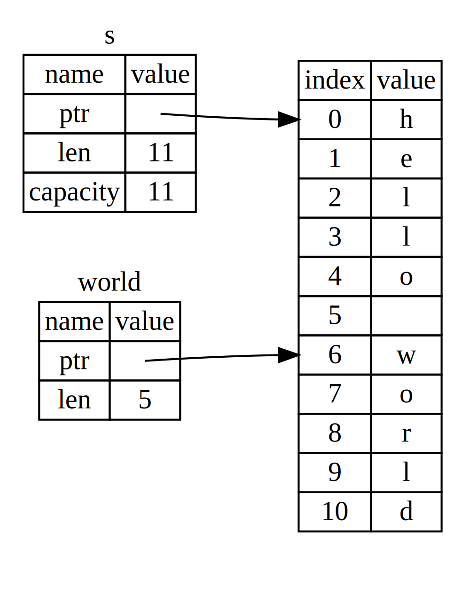

An Teanga Ríomhchláraithe Rust
le Steve Klabnik, Carol Nichols, agus Chris Krycho, le ranníocaíochtaí ón Pobal Rust
Glactar leis sa leagan seo den téacs go bhfuil Rust 1.82.0 in úsáid agat (eisithe 2024-10-17) nó níos déanaí. Féach an rannán “Installation” de Chaibidil 1 a shuiteáil nó a nuashonrú Rust.
Tá an fhormáid HTML ar fáil ar líne ag
https://doc.rust-lang.org/stable/book/
agus as líne le suiteálacha meirge déanta le rustup; rith rustup doc --book le hoscailt.
Tá roinnt aistriúcháin pobail ar fáil freisin.
Tá an téacs seo ar fáil i bhformáid bogha agus ríomhleabhair ó No Starch Brúigh.
🚨 An dteastaíonn uait eispéireas foghlama níos idirghníomhaí? Bain triail as leagan eile de Rust Book, ina bhfuil: tráth na gceist, aibhsiú, léirshamhlú, agus níos mó: https://rust-book.cs.brown.edu
Réamhfhocal
Ní raibh sé chomh soiléir i gcónaí, ach tá teanga ríomhchláraithe Rust go bunúsach faoi cumhachtú : is cuma cén cineál cód atá á scríobh agat anois, a Rust a chumasaíonn duit dul i bhfad níos faide, chun clár a dhéanamh go muiníneach i raon níos leithne de fearainn ná mar a rinne tú roimhe seo.
Tóg, mar shampla, obair “leibhéal córais” a dhéileálann le sonraí ar leibhéal íseal bainistíocht cuimhne, ionadaíocht sonraí, agus comhairgeadra. Go traidisiúnta, seo Feictear réimse na gclár mar rud stuama, nach bhfuil inrochtana ach ag cúpla duine roghnaithe chaith siad na blianta riachtanacha ag foghlaim chun na gaistí mícháiliúla a sheachaint. Agus fiú iad siúd a chleachtann é, déanann siad amhlaidh go cúramach, ar eagla go mbeadh a gcód oscailte dó dúshaothrú, tuairteanna, nó éilliú.
Briseann meirge na bacainní seo síos trí dheireadh a chur leis na seanghaistí agus trí sholáthar a sraith uirlisí cairdiúil, snasta chun cabhrú leat ar an mbealach. Ríomhchláraitheoirí a bhfuil gá acu is féidir le "tumadh síos" i rialú ag leibhéal níos ísle é sin a dhéanamh le Rust, gan dul i mbun an gnáthriosca tuairteála nó poill slándála, agus gan a bheith ag foghlaim na pointí míne de toolchain fickle. Níos fearr fós, tá an teanga deartha chun tú a threorú go nádúrtha i dtreo cód iontaofa atá éifeachtach ó thaobh luas agus úsáid chuimhne.
Is féidir le ríomhchláraitheoirí atá ag obair cheana féin le cód leibhéal íseal úsáid a bhaint as Rust a ardú a n-uaillmhianta. Mar shampla, is rud réasúnta é comhthreomhaireacht a thabhairt isteach i Rust oibríocht riosca íseal: glacfaidh an tiomsaitheoir na botúin chlasaiceacha duit. Agus is féidir leat dul i ngleic le optimizations níos ionsaithí i do chód leis an muinín nach dtabharfaidh tú tuairteanna nó leochaileachtaí isteach de thaisme.
Ach níl Rust teoranta do ríomhchlárú córais íseal-leibhéil. Tá sé léiritheach agus eirgeanamaíochta go leor chun aipeanna CLI, freastalaithe gréasáin, agus go leor cineálacha eile cód a dhéanamh taitneamhach go leor a scríobh - gheobhaidh tú samplaí simplí den dá cheann níos déanaí sa leabhar. Ligeann obair le Rust duit scileanna a thógáil a aistríonn ó cheann amháin fearainn go ceann eile; is féidir leat Rust a fhoghlaim trí app gréasáin a scríobh, ansin iad sin a chur i bhfeidhm scileanna céanna chun díriú ar do Raspberry Pi.
Cuimsíonn an leabhar seo go hiomlán an acmhainneacht atá ag Rust chun a chuid úsáideoirí a chumhachtú. Tá sé a téacs cairdiúil sochaideartha a bhfuil sé mar aidhm aige cabhrú leat leibhéal suas ní hamháin do eolas ar Rust, ach freisin do bhaint amach agus do mhuinín mar ríomhchláraitheoir i ginearálta. Mar sin tumadh isteach, bí réidh le foghlaim - agus fáilte romhat chuig an bpobal Rust!
— Nicholas Matsakis agus Aaron Turon
Réamhrá
Nóta: Is ionann an t-eagrán seo den leabhar agus An Teanga Ríomhchláraithe Rust ar fáil i bhformáid chlóite agus ríomhleabhair ó No Starch Press.
Fáilte go dtí The Rust Programming Language, leabhar tosaigh faoi Rust. Cuidíonn teanga ríomhchláraithe Rust leat bogearraí níos tapúla agus níos iontaofa a scríobh. Is minic a bhíonn contrárthachtaí ag eirgeanamaíocht ardleibhéil agus rialú ísealleibhéil sa ríomhchlárú dearadh teanga; Tugann Rust dúshlán don choinbhleacht sin. Trí chothromú cumhachtach cumas teicniúil agus taithí iontach forbróra, tugann Rust an rogha duit chun sonraí íseal-leibhéil a rialú (cosúil le húsáid chuimhne) gan aon stró a bhaineann go traidisiúnta le rialú den sórt sin.
Cé dó a bhfuil Rust
Tá Rust oiriúnach do go leor daoine ar chúiseanna éagsúla. Breathnaímid ar roinnt de na grúpaí is tábhachtaí.
Foirne Forbróirí
Is uirlis tháirgiúil é Rust chun comhoibriú i measc foirne móra de forbróirí a bhfuil leibhéil éagsúla eolais ar ríomhchlárú córais acu. Cód leibhéal íseal seans maith go bhfuil fabhtanna caolchúiseacha éagsúla ann, ar féidir iad a ghabháil i bhformhór na dteangacha eile ach amháin trí thástáil fhairsing agus athbhreithniú cúramach cód ag taithí fhorbróirí. I Rust, imríonn an tiomsaitheoir ról coimeádaí geata trí dhiúltú cód a thiomsú leis na fabhtanna do-fheicthe seo, lena n-áirítear fabhtanna comhairgeadra. Trí oibriú taobh leis an tiomsaitheoir, is féidir leis an bhfoireann a gcuid ama a chaitheamh ag díriú ar na cláir loighic seachas dul ar thóir fabhtanna.
Tugann Rust uirlisí forbróra comhaimseartha chuig saol ríomhchláraithe na gcóras freisin:
- Déanann lasta, an bainisteoir spleáchais agus an uirlis tógála atá san áireamh, cur leis, spleáchais a thiomsú, agus a bhainistiú gan phian agus comhsheasmhach ar fud na Rust éiceachóras.
- Cinntíonn an uirlis formáidithe Rustfmt stíl códaithe chomhsheasmhach trasna fhorbróirí.
- Cumhachtaíonn an t-anailíseoir Rust Timpeallacht Chomhtháite Forbartha (IDE) comhtháthú chun cód a chomhlánú agus teachtaireachtaí earráide inlíne.
Trí úsáid a bhaint as na huirlisí seo agus uirlisí eile in éiceachóras Rust, is féidir le forbróirí a bheith táirgiúil agus cód leibhéal córais á scríobh.
Daltaí
Tá Rust ann do mhic léinn agus dóibh siúd ar spéis leo foghlaim faoi chórais coincheapa. Ag baint úsáide as Rust, tá go leor daoine tar éis foghlaim faoi ábhair mar oibriú forbairt córas. Tá an pobal an-fháilteach agus sásta freagra a thabhairt ceisteanna daltaí. Trí iarrachtaí mar an leabhar seo, tá na foirne Rust ag iarraidh coincheapa córais a dhéanamh níos inrochtana do níos mó daoine, go háirithe iad siúd nach bhfuil nua acu ríomhchlárú.
Cuideachtaí
Úsáideann na céadta cuideachtaí, idir bheag agus mhór, Rust i dtáirgeadh éagsúla tascanna, lena n-áirítear uirlisí líne ordaithe, seirbhísí gréasáin, uirlisí DevOps, leabaithe gléasanna, anailís fuaime agus físe agus traschódú, cryptocurrencies, bithfhaisnéisíocht, innill chuardaigh, feidhmchláir Internet of Things, meaisín foghlama, agus fiú codanna móra de bhrabhsálaí gréasáin Firefox.
Forbróirí Foinse Oscailte
Tá Rust ann do dhaoine atá ag iarraidh teanga ríomhchláraithe Rust a thógáil, pobail, uirlisí forbróra, agus leabharlanna. Ba bhreá linn go gcuirfeá leis an Rust teanga.
Daoine a bhfuil Luach acu ar Luas agus ar Chobhsaíocht
Tá Rust ann do dhaoine ar mian leo luas agus seasmhacht i dteanga. De réir luais, táimid Ciallaíonn sé cé chomh tapa agus is féidir le cód Rust rith agus an luas a ligeann Rust duit cláir a scríobh. Cinntíonn seiceálacha an tiomsaitheora Rust cobhsaíocht trí ghné breiseanna agus athfhachtóirí. Tá sé seo i gcodarsnacht leis an gcód oidhreachta brittle i teangacha gan na seiceálacha seo, ar minic go mbíonn eagla ar fhorbróirí iad a mhodhnú. Le ag iarraidh astarraingtí nialasacha, gnéithe ardleibhéil a thiomsaíonn go cód leibhéal níos ísle chomh tapa agus a scríobhtar an cód de láimh, déanann Rust a dhícheall a dhéanamh sábháilte cód a bheith cód tapa chomh maith.
Tá súil ag an teanga Rust tacú le go leor úsáideoirí eile freisin; iad siúd atá luaite níl anseo ach cuid de na páirtithe leasmhara is mó. Tríd is tríd, Rust is fearr is é an uaillmhian deireadh a chur leis na comhbhabhtálacha a bhfuil glactha ag ríomhchláraitheoirí leo blianta trí shábháilteacht agus táirgiúlacht, luas agus eirgeanamaíocht a sholáthar. Tabhair Déan iarracht Rust agus féach an n-oibríonn a roghanna duit.
Cé Leis an Leabhar Seo
Glacann an leabhar seo leis go bhfuil cód scríofa agat i dteanga ríomhchlárúcháin eile ach ní dhéanann sé aon toimhde faoi cé acu. Rinneamar iarracht an t-ábhar a dhéanamh inrochtana go ginearálta dóibh siúd ó raon leathan de chúlraí clár. muid ná caith go leor ama ag caint faoi cad is ríomhchlárú is nó conas smaoineamh faoi. Más rud é go bhfuil tú nua go hiomlán le ríomhchlárú, b'fhearr duit freastal ar ag léamh leabhar a sholáthraíonn réamhrá go sonrach ar ríomhchlárú.
Conas an Leabhar Seo a Úsáid
Go ginearálta, glactar leis sa leabhar seo go bhfuil tú ag léamh in ord é ó thús deireadh ar ais. Tógann caibidlí níos déanaí ar choincheapa i gcaibidlí níos luaithe, agus níos luaithe b'fhéidir nach ndéanann caibidlí sonraí ar ábhar ar leith a mhionscrúdú ach go dtabharfaidh siad cuairt arís orthu an topaic i gcaibidil níos déanaí.
Gheobhaidh tú dhá chineál caibidil sa leabhar seo: caibidlí coincheapa agus tionscadail caibidlí. I gcaibidlí coincheapa, foghlaimeoidh tú faoi ghné de Rust. I dtionscadal caibidlí, tógfaimid cláir bheaga le chéile
léi, ag cur an méid atá foghlamtha agat i bhfeidhm i bhfad. Is caibidlí tionscadail iad Caibidil 2, 12, agus 21; is caibidlí coincheapa an chuid eile.
Míníonn Caibidil 1 conas Rust a shuiteáil, conas "Dia duit, domhan!" clár, agus conas Cargo, bainisteoir pacáiste Rust agus uirlis tógála a úsáid. Tá Caibidil 2 a réamheolas praiticiúil ar chlár a scríobh i Rust, tar éis duit a Cluiche buille faoi thuairim uimhreacha. Anseo clúdaímid coincheapa ar ardleibhéal, agus níos déanaí soláthróidh caibidlí sonraí breise. Más mian leat do lámha a fháil salach ar an bpointe boise, is é Caibidil 2 an áit chuige sin. Clúdaíonn Caibidil 3 gnéithe Rust atá cosúil le teangacha cláir eile, agus i gCaibidil 4 beidh tú ag foghlaim faoi chóras úinéireachta Rust. Má tá tú thar a bheith cúramach foghlaimeoir ar fearr leis gach mionsonra a fhoghlaim sula mbogann tú ar aghaidh go dtí an chéad cheann eile, tusa b'fhéidir gur mhaith leat gan bacadh le Caibidil 2 agus dul díreach go dtí Caibidil 3, ag filleadh ar Caibidil 2 nuair is mian leat oibriú ar thionscadal ag cur na sonraí atá foghlamtha agat i bhfeidhm.
Caibideal 5 pléann sé struchtúir agus modhanna, agus clúdaíonn Caibideal 6 éumanna, abairtí match,
agus an tógáil sreafa rialaithe if let. Úsáidfidh tú struchtúir agus
éumanna chun cineálacha saincheaptha a chruthú i Rust.
I gCaibidil 7, foghlaimeoidh tú faoi chóras modúil Rust agus faoi rialacha príobháideachais chun do chód agus a Chomhéadan Poiblí um Chlárú Feidhmchláir a eagrú (API). Déantar plé i gCaibidil 8 ar roinnt struchtúir choiteanna maidir le bailiú sonraí a dhéanann an Soláthraíonn leabharlann caighdeánach, mar shampla veicteoirí, teaghráin, agus léarscáileanna hash. Caibidil 9 déanann sé iniúchadh ar fhealsúnacht agus teicnící láimhseála earráidí Rust.
Dírítear i gCaibidil 10 ar chineálacha, tréithe agus saolréanna, a thugann an chumhacht duit
chun cód a bhaineann le cineálacha iolracha a shainiú. Baineann Caibidil 11 le tástáil,
rud atá riachtanach fiú le ráthaíochtaí sábháilteachta Rust chun do chláir a chinntiú
Tá an loighic ceart. I gCaibidil 12, tógfaimid ár gcur i bhfeidhm féin ar fho-thacar
feidhmiúlacht ón uirlis líne ordaithe grep a chuardaíonn téacs
laistigh de chomhaid. Chun seo, bainfimid úsáid as go leor de na coincheapa a phléamar sa
caibidlí roimhe seo.
I gCaibidil 13 déantar iniúchadh ar dhúnadh agus iterators: gnéithe Rust a thagann as teangacha ríomhchlárúcháin feidhme. I gCaibidil 14, scrúdóimid lasta níos mó doimhneacht agus labhair faoi na cleachtais is fearr chun do leabharlanna a roinnt le daoine eile. Pléann Caibidil 15 leideanna cliste a sholáthraíonn an leabharlann chaighdeánach agus an tréithe a chuireann ar chumas a bhfeidhmiúlachta.
I gCaibidil 16, siúlfaimid trí mhúnlaí éagsúla de ríomhchlárú comhthráthach agus labhairt faoi conas a chuidíonn Rust leat ríomhchlárú i snáitheanna iolracha gan eagla. I Caibidil 17, cuirfimid leis sin trí iniúchadh a dhéanamh ar async Rust agus ag fanacht le comhréir agus an tsamhail concurrency éadrom a thacaíonn siad.
I gCaibidil 18 féachtar ar conas a chuirtear nathanna cainte Rust i gcomparáid le ríomhchlárú atá dírithe ar oibiachtaí prionsabail a bhféadfadh cur amach a bheith agat orthu.
Is tagairt í Caibidil 19 do phatrúin agus meaitseáil patrún, atá cumhachtach bealaí chun smaointe a chur in iúl ar fud na gclár Rust. I gCaibidil 20 tá a smorgasbord ard-ábhair spéise, lena n-áirítear Rust neamhshábháilte, macraí, agus níos mó faoi shaolréanna, tréithe, cineálacha, feidhmeanna agus dúnta.
I gCaibidil 21, cuirfimid tionscadal i gcrích ina gcuirfimid leibhéal íseal i bhfeidhm freastalaí gréasáin ilshnáithe!
Ar deireadh, tá eolas úsáideach faoin teanga in aguisíní áirithe a níos mó formáid tagartha. Clúdaíonn Aguisín A eochairfhocail Rust, Aguisín B clúdaíonn sé oibreoirí agus siombailí Rust, clúdaíonn Aguisín C tréithe in-díorthaithe a sholáthraíonn an leabharlann chaighdeánach, clúdaíonn Aguisín D roinnt forbairtí úsáideacha uirlisí, agus míníonn Aguisín E eagráin Rust. In Aguisín F, is féidir leat a fháil aistriúcháin ar an leabhar, agus in Aguisín G clúdóidh muid conas a dhéantar Rust agus cad é Rust oíche.
Níl aon bhealach mícheart leis an leabhar seo a léamh: más mian leat dul ar aghaidh, téigh chuige! Seans go mbeidh ort léim siar chuig caibidlí níos luaithe má bhíonn taithí agat ar aon cheann díobh mearbhall. Ach déan cibé rud a oibríonn duit.
Cuid thábhachtach den phróiseas foghlama Rust is ea foghlaim conas léamh an teachtaireachtaí earráide a thaispeánann an tiomsaitheoir: treoróidh siad seo tú i dtreo an chóid oibre. Mar sin, cuirfimid go leor samplaí ar fáil nach dtiomsóidh mar aon leis an earráid teachtaireacht a thaispeánfaidh an tiomsaitheoir duit i ngach cás. Bíodh a fhios sin má théann tú isteach agus sampla randamach a rith, ní fhéadfaidh sé a thiomsú! Bí cinnte go léann tú an téacs mórthimpeall féachaint an bhfuil sé i gceist an sampla a bhfuil tú ag iarraidh a rith a rith earráid. Cabhróidh Ferris leat freisin idirdhealú a dhéanamh ar chód nach bhfuil i gceist a bheith ag obair:
| Ferris | Brí |
|---|---|
 | Ní thiomsaíonn an cód seo! |
 | Caoileann an cód seo! |
 | Ní tháirgeann an cód seo an t-iompar atá ag teastáil. |
I bhformhór na gcásanna, beidh muid tú a threorú chuig an leagan ceart d'aon chód sin ní thiomsaíonn.
Cód Foinse
Is féidir na comhaid foinse óna gineadh an leabhar seo a fháil ar GitHub.
Tús a chur leis
Cuirimis tús le do thuras Rust! Tá go leor le foghlaim, ach tosaíonn gach turas áit éigin. Sa chaibidil seo, pléifimid:
- Suiteáil Rust ar Linux, macOS, agus Windows
- Ag scríobh clár a phriontálann
Dia duit, ar domhan! - Ag baint úsáide as
cargo, bainisteoir pacáiste Rust agus córas tógála
Suiteáil
Is é an chéad chéim ná Rust a shuiteáil. Déanfaimid Rust a íoslódáil trí 'rustup', a uirlis líne ordaithe chun leaganacha Rust agus uirlisí gaolmhara a bhainistiú. Beidh ort Nasc Idirlín le haghaidh soghluaiste íoslódáil.
Nóta: Más fearr leat gan
rustupa úsáid ar chúis éigin, féach le do thoil an leathanach Modhanna Eile Suiteála Rust le haghaidh tuilleadh roghanna.
Suiteáil na céimeanna seo a leanas an leagan cobhsaí is déanaí den tiomsaitheoir Rust. Cinntíonn cobhsaíocht Rust go bhfuil na samplaí go léir sa leabhar a leanfaidh tiomsú ar aghaidh ag tiomsú le leaganacha Rust níos nuaí. D'fhéadfadh an t-aschur difríocht beagán idir leaganacha mar is minic a fheabhsaíonn Rust teachtaireachtaí earráide agus rabhaidh. I bhfocail eile, aon leagan níos nuaí, cobhsaí de Rust a shuiteáil tú ag baint úsáide as ba chóir go n-oibreodh na céimeanna seo mar a bheifí ag súil leis le hábhar an leabhair seo.
Nodaireacht Líne Ordú
Sa chaibidil seo agus tríd an leabhar, taispeánfaimid roinnt orduithe a úsáidtear sa teirminéal. Tosaíonn línte ar chóir duit a chur isteach i teirminéal le
$. tu ní gá an carachtar$a chlóscríobh; is é an leid líne ordaithe a thaispeántar do cuir in iúl tús gach ordú. Línte nach dtosaíonn le$de ghnáth taispeáin aschur an ordaithe roimhe seo. Ina theannta sin, PowerShell-shonrach úsáidfidh>samplaí seachas$.
Suiteáil rustup ar Linux nó macOS
Má tá Linux nó macOS á úsáid agat, oscail teirminéal agus cuir isteach an t-ordú seo a leanas:
$ curl --proto '=https' --tlsv1.2 https://sh.rustup.rs -sSf | sh
Íoslódálann an t-ordú script agus cuireann sé tús le suiteáil an rustup
uirlis, a shuiteálann an leagan cobhsaí is déanaí de Rust. Seans go dtabharfar leid thú
le haghaidh do phasfhocal. Má éiríonn leis an suiteáil, feicfear an líne seo a leanas:
Rust is installed now. Great!
Beidh linker ag teastáil uait freisin, ar clár é a úsáideann Rust chun páirt a ghlacadh ann aschuir tiomsaithe i gcomhad amháin. Is dócha go bhfuil ceann agat cheana féin. Má fhaigheann tú earráidí nascóirí, ba cheart duit tiomsaitheoir C a shuiteáil, lena n-áireofar de ghnáth a nascóir. Tá tiomsaitheoir C úsáideach freisin toisc go mbraitheann roinnt pacáistí Rust coitianta C cód agus beidh tiomsaitheoir C de dhíth.
Ar macOS, is féidir leat tiomsaitheoir C a fháil trí:
$ xcode-select --install
Ba cheart go ginearálta d'úsáideoirí Linux GCC nó Clang a shuiteáil, de réir a gcuid
doiciméadú dáileacháin. Mar shampla, má úsáideann tú Ubuntu, is féidir leat a shuiteáil
an pacáiste build-essential.
Suiteáil rustup ar Windows
Ar Windows, téigh chuig https://www.rust-lang.org/tools/install agus lean Treoracha le haghaidh suiteáil Rust. Ag pointe éigin sa suiteáil, déanfaidh tú a spreagadh chun Visual Studio a shuiteáil. Soláthraíonn sé seo nascóir agus an dúchais leabharlanna ag teastáil chun cláir a thiomsú. Má theastaíonn tuilleadh cabhrach uait leis an gcéim seo, féach https://rust-lang.github.io/rustup/installation/windows-msvc.html
Úsáideann an chuid eile den leabhar seo orduithe a oibríonn sa dá cmd.exe agus PowerShell. Má tá difríochtaí sonracha ann, míneoimid cé acu ba cheart a úsáid.
Fabhtcheartú
Chun seiceáil an bhfuil Rust suiteáilte i gceart agat, oscail sliogán agus cuir isteach é seo líne:
$ rustc --version
Ba cheart duit uimhir an leagain a fheiceáil, hash a thiomnú agus dáta geallta a dhéanamh ar a dhéanaí leagan cobhsaí atá eisithe, san fhormáid seo a leanas:
rustc x.y.z (abcabcabc bbbb-mm-ll)
Má fheiceann tú an fhaisnéis seo, tá tú tar éis Rust a shuiteáil go rathúil! Mura ndéanann tú
féach an fhaisnéis seo, seiceáil go bhfuil Rust i do athróg córais % PATH% mar
leanas.
I Windows CMD, bain úsáid as:
> echo %PATH%
I PowerShell, bain úsáid as:
> echo $env:Path
I Linux agus macOS, bain úsáid as:
$ echo $PATH
Má tá sé sin ceart agus nach bhfuil Rust fós ag obair, tá roinnt cinn ann áiteanna inar féidir leat cabhair a fháil. Faigh amach conas dul i dteagmháil le Rustaceans eile (a leasainm amaideach a dtugaimid orainn féin) ar an leathanach pobail.
Nuashonrú agus Díshuiteáil
Nuair a bheidh Rust suiteáilte trí rustup, déantar nuashonrú go leagan nua-eisithe
éasca. Ó do bhlaosc, rith an script nuashonraithe seo a leanas:
$ rustup update
Chun Rust agus rustup a dhíshuiteáil, rith an script díshuiteála seo a leanas ó do
sliogán:
$ rustup self uninstall
Doiciméadúchán Áitiúil
Cuimsíonn suiteáil Rust cóip áitiúil de na doiciméid mar sin freisin
gur féidir leat é a léamh as líne. Rith rustup doc chun an doiciméadú áitiúil a oscailt
i do bhrabhsálaí.
Am ar bith a sholáthraíonn an leabharlann chaighdeánach cineál nó feidhm agus ní bhíonn cinnte cad a dhéanann sé nó conas é a úsáid, bain úsáid as an comhéadan ríomhchlárú feidhmchlár (API) doiciméadú a fháil amach!
Dia duit, a Dhomhanda!
Anois go bhfuil Rust suiteáilte agat, tá sé in am do chéad chlár Rust a scríobh.
Tá sé traidisiúnta agus tú ag foghlaim teanga nua clár beag a scríobh
priontaí an téacs Dia duit, domhan! ar an scáileán, mar sin déanfaimid an rud céanna anseo!
Nóta: Glacann an leabhar seo le cur amach bunúsach ar an líne ordaithe. Déanann Rust níl aon éileamh ar d'eagarthóireacht nó d'uirlisiú nó cá bhfuil cónaí ar do chód, mar sin de más fearr leat timpeallacht forbartha comhtháite (IDE) a úsáid ina ionad an líne ordaithe, bíodh leisce ort an IDE is fearr leat a úsáid. Tá roinnt IDEanna anois méid na tacaíochta Rust; seiceáil doiciméadú an IDE le haghaidh sonraí. tá an Rust fhoireann ag díriú ar thacaíocht iontach IDE a chumasú trí
rust-analyzer. Féach Aguisín D le haghaidh tuilleadh sonraí.
Eolaire Tionscadal á Chruthú
Tosóidh tú trí eolaire a dhéanamh chun do chód Rust a stóráil. Is cuma go Rust áit a bhfuil cónaí ar do chód, ach do na cleachtaí agus na tionscadail sa leabhar seo, molaimid eolaire tionscadail a dhéanamh i do eolaire baile agus gach rud a choimeád do thionscadail ann.
Oscail teirminéal agus cuir isteach na horduithe seo a leanas chun eolaire tionscadail a dhéanamh agus eolaire don "Dia duit, an domhan!" tionscadal laistigh den eolaire tionscadail.
Le haghaidh Linux, macOS, agus PowerShell ar Windows, cuir isteach é seo:
$ mkdir ~/tionscadail
$ cd ~/tionscadail
$ mkdir hello_world
$ cd hello_world
I gcás Windows CMD, cuir isteach é seo:
> mkdir "%USERPROFILE%\tionscadail"
> cd /d "%USERPROFILE%\tionscadail"
> mkdir hello_world
> cd hello_world
Clár Rust á Scríobh agus á Rith
Ansin, déan comhad foinse nua agus glaoigh air main.rs. Comhaid Rust deireadh i gcónaí le an síneadh .rs. Má tá níos mó ná focal amháin in úsáid agat i d’ainm comhaid, beidh an Is é an gnás foscór a úsáid chun iad a scaradh. Mar shampla, úsáid hello_world.rs seachas helloworld.rs.
Anois oscail an comhad main.rs a chruthaigh tú díreach agus cuir isteach an cód i Liostú 1-1.
fn main() { println!("Dia duit, domhan!"); }
Sábháil an comhad agus téigh ar ais go dtí do fhuinneog teirminéil sa _~/tionscadail/hello_world eolaire. Ar Linux nó macOS, cuir isteach an méid seo a leanas orduithe chun an comhad a thiomsú agus a rith:
$ rustc main.rs
$ ./main
Dia duit, domhan!
Ar Windows, cuir isteach an t-ordú .\main.exe in ionad ./main:
> rustc main.rs
> .\main.exe
Dia duit, domhan!
beag beann ar do chóras oibriúcháin, ba chóir an teaghrán Dia duit, a Dhomhan! a phriontáil go dtí
an teirminéal. Mura bhfeiceann tú an t-aschur seo, féach ar ais chuig an
“Fabhtcheartú” cuid den Suiteáil
alt le haghaidh bealaí chun cabhair a fháil.
Má rinne Dia duit, a domhan! cló, comhghairdeas! Tá Rust scríofa agat go hoifigiúil
clár. Déanann sé sin ríomhchláraitheoir Rust duit - fáilte romhat!
Anatamaíocht Chlár Rust
Déanaimis athbhreithniú ar seo "Dia duit, a domhan!" clár go mion. Seo chugaibh an chéad píosa an puzal:
fn main() { }
Sainmhíníonn na línte seo feidhm darb ainm main. Tá an fheidhm main speisialta: é
i gcónaí ar an gcéad chód a ritheann i ngach clár inrite Rust. Anseo, an
dearbhaíonn an chéad líne feidhm darb ainm main nach bhfuil paraiméadair agus tuairisceáin ann
faic. Dá mbeadh paraiméadair ann, rachadh siad laistigh de na lúibíní ().
Tá corp na feidhme fillte i {}. Éilíonn Rust lúibíní curly timpeall ar fad
comhlachtaí feidhm. Is stíl mhaith é an lúibín cuartha tosaigh a chur ar an gcéanna
líne mar dhearbhú feidhme, ag cur spás amháin eatarthu.
Nóta: Más mian leat cloí le stíl chaighdeánach ar fud na dtionscadal Rust, is féidir leat bain úsáid as uirlis uathfhormáidithe ar a dtugtar
rustfmtchun do chód a fhormáidiú in a stíl ar leith (tuilleadh arrustfmtin Aguisín D). Tá an uirlis seo curtha san áireamh ag foireann Rust leis an dáileadh caighdeánach Rust, mar is érustc, mar sin ba chóir go mbeadh sé cheana féin suiteáilte ar do ríomhaire!
Tá an cód seo a leanas i gcorp na main:
#![allow(unused)] fn main() { println!("Dia duit, a domhan!"); }
Déanann an líne seo an obair ar fad sa chlár beag seo: priontaí sí téacs chuig an scáileán. Tá ceithre shonraí tábhachtacha le tabhairt faoi deara anseo.
Ar dtús, glaonn println! macra Rust. Dá mba rud é gur ghlaoigh sé feidhm ina hionad, is é
chuirfí isteach mar println (gan an !). Pléifimid macraí Rust in
níos mó sonraí i gCaibidil 20. Faoi láthair, ní gá duit ach fios a bheith agat go n-úsáideann tú !
Ciallaíonn sé sin go bhfuil tú ag glaoch ar mhacra in ionad gnáthfheidhm agus na macraí sin
ná lean na rialacha céanna le feidhmeanna i gcónaí.
Ar an dara dul síos, feiceann tú an teaghrán "Dia duit, domhan!". Gabhaimid an teaghrán seo mar argóint
go println!, agus clóitear an teaghrán go dtí an scáileán.
Sa tríú háit, deireadh muid an líne le leathstad (;), a léiríonn go bhfuil sé seo
tá deireadh le cur in iúl agus tá an chéad cheann eile réidh le tosú. An chuid is mó de na línte de chód Rust
deireadh le leathstad.
Is Céimeanna ar Leith iad Tiomsú agus Rith
Tá clár nuachruthaithe díreach á rith agat, mar sin déanaimis scrúdú ar gach céim sa próiseas.
Sula ritheann tú clár Rust, ní mór duit é a thiomsú ag baint úsáide as an tiomsaitheoir Rust trí
an t-ordú rustc a iontráil agus ainm do chomhaid foinse a thabhairt dó, mar
seo:
$ rustc main.rs
Má tá cúlra C nó C++ agat, tabharfaidh tú faoi deara go bhfuil sé seo cosúil le gc
nó clang. Tar éis a thiomsú go rathúil, aschuir Rust inrite dénártha.
Ar Linux, macOS, agus PowerShell ar Windows, is féidir leat an inrite a fheiceáil le
ag dul isteach an t-ordú ls i do bhlaosc:
$ ls
main main.rs
Ar Linux agus macOS, feicfidh tú dhá chomhad. Le PowerShell ar Windows, déanfaidh tú féach ar na trí chomhad chéanna a d'fheicfeá ag baint úsáide as CMD. Le CMD ar Windows, tú chuirfeadh sé seo a leanas isteach:
> dir /B %= deir an rogha /B gan ach ainmneacha na gcomhad a thaispeáint =%
main.exe
main.pdb
main.rs
Taispeánann sé seo an comhad cód foinse leis an síneadh .rs, an comhad inrite (main.exe ar Windows, ach main ar gach ardán eile), agus, nuair a úsáid Windows, comhad ina bhfuil faisnéis dífhabhtaithe leis an iarmhír .pdb. As seo, ritheann tú an comhad main nó main.exe, mar seo:
$ ./main # or .\main.exe ar Windows
Más é do main.rs do "Dia duit, domhan!" clár, priontaí an líne seo Dia duit, domhan! chuig do chríochfort.
Má tá níos mó eolas agat ar theanga dhinimiciúil, mar Ruby, Python, nó JavaScript, seans nach bhfuil tú cleachta le clár a thiomsú agus a rith mar céimeanna ar leith. Is teanga tiomsaithe roimh-ama é Rust, rud a chiallaíonn gur féidir leat clár a thiomsú agus an inrite a thabhairt do dhuine eile, agus is féidir leo é a rith fiú gan Rust a bheith suiteáilte. Má thugann tú .rb, .py, nó .js, ní mór cur i bhfeidhm Ruby, Python nó JavaScript a bheith acu suiteáilte (faoi seach). Ach sna teangacha sin, níl uait ach ordú amháin chun do chlár a thiomsú agus a rith. Is malairt-uaire é gach rud i ndearadh teanga.
Tá sé ceart go leor ach le rustc a thiomsú do chláir shimplí, ach mar do thionscadal
fás, beidh tú ag iarraidh na roghanna go léir a bhainistiú agus é a dhéanamh éasca do chuid a roinnt
cód. Ansin, cuirfimid an uirlis lasta in aithne duit, a chabhróidh leat scríobh
cláir Rust domhan fíor.
Dia duit, Cargo!
Is é Cargo córas tógála Rust agus bainisteoir pacáiste. Úsáideann an chuid is mó de na Rustaceans an uirlis seo a dtionscadail Rust a bhainistiú mar go láimhseálann Cargo go leor tascanna duit, mar shampla do chód a thógáil, na leabharlanna a bhraitheann do chód a íoslódáil, agus ag tógáil na leabharlanna sin. (Tugaimid na leabharlanna a bhfuil do chód de dhíth orthu spleáchais.)
Na cláir Rust is simplí, cosúil leis an gceann atá scríofa againn go dtí seo, níl aon cheann acu spleáchais. Dá mbeadh an "Dia duit, domhan!" tionscadal le Cargo, bheadh ná húsáid ach an chuid de Cargo a láimhseálann tógáil do chód. Agus tú ag scríobh níos mó cláir chasta Rust, cuirfidh tú spleáchais leis, agus má thosaíonn tú ar thionscadal ag baint úsáide as Cargo, beidh sé i bhfad níos éasca spleáchais a chur leis.
Toisc go n-úsáideann formhór mór na dtionscadal Rust Cargo, an chuid eile den leabhar seo glacann sé leis go bhfuil Cargo á úsáid agat freisin. Tagann Cargo suiteáilte le Rust má tá tú úsáid na suiteálaithe oifigiúla a pléadh sa “Suiteáil” alt. Má shuiteáil tú Rust trí mhodh éigin eile, seiceáil an bhfuil Cargo suiteáilte ag dul isteach sa seo a leanas i do chríochfort:
$ cargo --version
Má fheiceann tú uimhir leagain, tá sé agat! Má fheiceann tú earráid, mar ordú níor aimsíodh, féach ar an doiciméadú le haghaidh do mhodh suiteála go
a chinneadh conas Cargo a shuiteáil ar leithligh.
Tionscadal a Chruthú le Cargo
Déanaimis tionscadal nua a chruthú ag baint úsáide as Cargo agus féachaint ar an difríocht atá idir é agus ár gcuid bunaidh "Dia duit, domhan!" tionscadal. Téigh ar ais chuig d'eolaire projects (nó cibé áit ar shocraigh tú do chód a stóráil). Ansin, ar aon chóras oibriúcháin, reáchtáil an méid seo a leanas:
$ cargo new hello_cargo
$ cd hello_cargo
Cruthaíonn an chéad ordú eolaire agus tionscadal nua ar a dtugtar hello_cargo. Tá ár dtionscadal ainmnithe againn mar hello_cargo, agus cruthaíonn Cargo a chomhaid in a eolaire den ainm céanna.
Téigh isteach san eolaire hello_cargo agus liostaigh na comhaid. Feicfidh tú an Cargo sin tá dhá chomhad agus eolaire amháin ginte againn dúinn: comhad Cargo.toml agus a eolaire src le comhad main.rs istigh.
Chuir sé tús le stór nua Git chomh maith le comhad .gitignore.
Ní ghinfear comhaid Git má ritheann tú cargo new laistigh de Git atá ann cheana féin
stór ; is féidir leat an t-iompar seo a shárú trí úsáid a bhaint as cargo new --vcs=git.
Nóta: Is córas rialaithe leagan coitianta é Git. Is féidir leat
cargo newa athrú go córas rialaithe leagan difriúil nó córas rialaithe leagan ar bith a úsáid trí úsáid a bhaint as an bhratach--vcs. Rithcargo new --helpchun na roghanna atá ar fáil a fheiceáil.
Oscail Cargo.toml i do rogha eagarthóir téacs. Ba chóir breathnú cosúil leis an cód i Liostú 1-2.
[package]
name = "hello_cargo"
version = "0.1.0"
edition = "2021"
# Féach tuilleadh eochracha agus a sainmhínithe ag https://doc.rust-lang.org/cargo/reference/manifest.html
[dependencies]
Tá an comhad seo sa TOML (Tom Soiléir, Íosráta Language) formáid, is é sin formáid chumraíochta Cargo.
Is ceannteideal rannóige í an chéad líne, [package], a thugann le fios go bhfuil an
ráitis seo a leanas ag chumrú pacáiste. De réir mar a chuirimid tuilleadh eolais le
an comhad seo, cuirfimid ailt eile leis.
Leagann na chéad trí líne eile an fhaisnéis chumraíochta a chaithfidh Cargo a thiomsú
do chlár: an t-ainm, an leagan, agus an t-eagrán de Rust le húsáid. Labhróimid
faoin eochair edition in Aguisín E .
Is í an líne dheireanach, [dependencies], tús rannáin chun tú a liostú
de spleáchais do thionscadal. I Rust, tagraítear do phacáistí cód mar
crates. Ní bheidh aon cliathbhoscaí eile ag teastáil uainn don tionscadal seo, ach beidh muid sa
an chéad tionscadal i gCaibidil 2, mar sin úsáidfimid an rannán spleáchais seo ansin.
Anois oscail src/main.rs agus féach:
Ainm comhaid: src/main.rs
fn main() { println!("Dia duit, an domhan!"); }
Tá Cargo tar éis "Dia duit, domhan!" clár duitse, díreach cosúil leis an gceann atá againn scríofa i Liostú 1-1! Go dtí seo, na difríochtaí idir ár dtionscadal agus an tionscadal Cargo ginte is ea gur chuir Cargo an cód san eolaire src agus tá comhad cumraíochta Cargo.toml againn san eolaire barr.
Tá súil ag Cargo go mbeidh do chuid comhad foinse beo laistigh den eolaire src. Tá an níl eolaire tionscadail ardleibhéil ann ach do chomhaid README, faisnéis ceadúnais, comhaid cumraíochta, agus aon rud eile nach mbaineann le do chód. Ag baint úsáide as Cargo chuidíonn leat do thionscadail a eagrú. Tá áit do gach rud, agus tá gach rud ina áit.
Má thosaigh tú ar thionscadal nach n-úsáideann Cargo, mar a rinne muid leis an "Dia duit,
domhan!" tionscadal, is féidir leat é a thiontú go tionscadal a úsáideann Cargo. Bog an
cód an tionscadail isteach san eolaire src agus cruthaigh Cargo.toml cuí
comhad. Bealach éasca amháin chun an comhad Cargo.toml sin a fháil ná cargo init a rith, rud a
cruthóidh sé duit go huathoibríoch é.
Tionscadal Cargo a Thógáil agus a Reáchtáil
Anois breathnaímid ar cad atá difriúil nuair a thógaimid agus a ritheann muid an “Dia duit, an domhan!” clár le Cargo! Ó d'eolaire hello_cargo, cuir do thionscadal le chéile ag dul isteach an t-ordú seo a leanas:
$ cargo build
Compiling hello_cargo v0.1.0 (file:///projects/hello_cargo)
Finished dev [unoptimized + debuginfo] target(s) in 2.85 secs
Cruthaíonn an t-ordú seo comhad inrite i target/debug/hello_cargo (nó target\debug\hello_cargo.exe ar Windows) seachas i do reatha eolaire. Toisc gur tógáil dífhabhtaithe é an tógáil réamhshocraithe, cuireann Cargo an dénártha isteach eolaire darb ainm debug. Is féidir leat an inrite a rith leis an ordú seo:
$ ./target/debug/hello_cargo # or .\target\debug\hello_cargo.exe on Windows
Dia duit, an domhan!
Má éiríonn go maith leis, ba cheart do Dia duit, an domhan! priontáil chuig an teirminéal. Ag rith cargo build don chéad uair freisin is cúis le Cargo comhad nua a chruthú ag an mbarr
leibhéal: Cargo.lock. Coinníonn an comhad seo súil ar na leaganacha cruinne de
spleáchais i do thionscadal. Níl spleáchais ag an tionscadal seo, mar sin de
comhad beagán tanaí. Ní bheidh ort an comhad seo a athrú de láimh riamh; Cargo
bainistíonn sé a bhfuil ann duit.
Thógamar tionscadal le cargo build agus rith sé leis
./target/debug/hello_cargo, ach is féidir linn cargo run a úsáid freisin chun an
cód agus ansin rith an inrite iarmhartach uile in aon ordú amháin:
$ cargo run
Finished dev [unoptimized + debuginfo] target(s) in 0.0 secs
Running `target/debug/hello_cargo`
Dia duit, an domhan!
Tá sé níos áisiúla cargo run a úsáid ná cuimhneamh ar cargo build
agus ansin bain úsáid as an cosán iomlán chuig an dénártha, mar sin úsáideann an chuid is mó forbróirí
cargo run.
Tabhair faoi deara nach bhfaca muid aschur an uair seo a thugann le fios go raibh Cargo á thiomsú
hello_cargo. Fuair Cargo amach nár athraigh na comhaid, mar sin níor athraigh
atógáil ach rith an dénártha. Má d'athraigh tú do chód foinseach, Cargo
go mbeadh an tionscadal atógtha agat roimh é a rith, agus bheadh sé seo feicthe agat
aschur:
$ cargo run
Compiling hello_cargo v0.1.0 (file:///projects/hello_cargo)
Finished dev [unoptimized + debuginfo] target(s) in 0.33 secs
Running `target/debug/hello_cargo`
Dia duit, an domhan!
Soláthraíonn Cargo ordú freisin ar a dtugtar cargo check. Seiceálann an t-ordú seo go tapa
do chód chun a chinntiú go dtiomsaíonn sé ach nach dtáirgtear cód inrite:
$ cargo check
Checking hello_cargo v0.1.0 (file:///projects/hello_cargo)
Finished dev [unoptimized + debuginfo] target(s) in 0.32 secs
Cén fáth nach mbeadh inrite uait? Go minic, bíonn cargo check i bhfad níos tapúla ná
cargo build toisc go scipeann sé an chéim chun inrite a tháirgeadh. Má tá tú
do chuid oibre a sheiceáil go leanúnach agus an cód á scríobh, ag baint úsáide as cargo check
dlús a chur leis an bpróiseas chun tú a chur ar an eolas an bhfuil do thionscadal fós á chur le chéile! Mar
mar sin, ritheann go leor Rustaceans cargo check go tréimhsiúil agus iad ag scríobh a gcuid
clár chun a chinntiú go dtiomsaíonn sé. Ansin ritheann siad cargo build nuair a bhíonn siad
réidh le húsáid an inrite.
Gabhaimis siar a bhfuil foghlamtha againn go dtí seo faoi Cargo:
- Is féidir linn tionscadal a chruthú ag baint úsáide as
cargo new. - Is féidir linn tionscadal a thógáil ag baint úsáide as
cargo build. - Is féidir linn tionscadal a thógáil agus a reáchtáil in aon chéim amháin ag baint úsáide as
cargo run. - Is féidir linn a thógáil le tionscadal gan a tháirgeadh dénártha a sheiceáil le haghaidh earráidí ag baint úsáide as
cargo check. - In ionad toradh na tógála a shábháil san eolaire céanna lenár gcód, Stórálann Cargo é san eolaire target/debug.
Buntáiste breise a bhaineann le Cargo a úsáid ná go bhfuil na horduithe mar an gcéanna uimh cuma cén córas oibriúcháin a bhfuil tú ag obair air. Mar sin, ag an bpointe seo, ní bheidh muid treoracha sonracha a sholáthar níos faide le haghaidh Linux agus macOS i gcoinne Windows.
Ag Tógáil le haghaidh Eisiúint
Nuair a bheidh do thionscadal réidh le scaoileadh faoi dheireadh, is féidir leat a úsáid cargo build --release chun é a thiomsú le optimizations. Cruthóidh an t-ordú seo an
inrite in target/release in ionad target/debug. Na optimizations
déan do chód meirge a rith níos tapúla, ach má chuirtear ar siúl iad, méadaítear an t-am a thógann sé
chun do chlár a thiomsú. Sin é an fáth go bhfuil dhá phróifíl éagsúla ann: ceann amháin
le haghaidh forbartha, nuair is mian leat a atógáil go tapa agus go minic, agus ceann eile le haghaidh
ag tógáil an chláir deiridh a thabharfaidh tú d'úsáideoir nach ndéanfar é a atógáil
arís agus arís eile agus rithfidh sin chomh tapa agus is féidir. Má tá do chuid tagarmharcála á dhéanamh agat
am reatha an chóid, bí cinnte go ritheann tú cargo build --release agus tagarmharcáil leis
an inrite i target/release.
Cargo mar Choinbhinsiún
Le tionscadail shimplí, ní sholáthraíonn Cargo mórán luach seachas úsáid a bhaint as
rustc, ach cruthóidh sé a fhiúntas de réir mar a éiríonn do chláir níos casta.
Nuair a fhásann cláir go comhaid iolracha nó nuair a bhíonn spleáchas ag teastáil uathu, tá sé i bhfad níos éasca é a dhéanamh
lig do Cargo an tógáil a chomhordú.
Cé go bhfuil an tionscadal hello_cargo simplí, úsáideann sé go leor den réadúlacht anois
uirlisí a úsáidfidh tú sa chuid eile de do ghairm bheatha Rust. Go deimhin, a bheith ag obair ar aon
tionscadail atá ann cheana féin, is féidir leat úsáid a bhaint as na horduithe seo a leanas a sheiceáil amach an cód
ag baint úsáide as Git, athraigh chuig eolaire an tionscadail sin, agus tóg:
$ git clone example.org/someproject
$ cd someproject
$ cargo build
Chun tuilleadh eolais a fháil faoi Cargo, seiceáil a dhoiciméadú.
Achoimre
Tá tús iontach curtha agat le do thuras Rust cheana féin! Sa chaibidil seo, d'fhoghlaim tú conas:
- Suiteáil an leagan cobhsaí is déanaí de Rust ag baint úsáide as
rustup - Nuashonraigh go leagan Rust níos nuaí
- Oscail doiciméadú suiteáilte go háitiúil
- Scríobh agus rith "Dia duit, a domhan!" clár ag baint úsáide as
rustcgo díreach - Cruthaigh agus rith tionscadal nua ag baint úsáide as coinbhinsiúin Cargo
Is iontach an tráth é seo le clár níos substaintiúla a chur le chéile chun dul i dtaithí ar an léitheoireacht agus cód Rust á scríobh. Mar sin, i gCaibidil 2, tógfaimid clár cluiche tomhais. Más fearr leat tosú ag foghlaim conas a oibríonn coincheapa ríomhchláraithe coitianta Meirge, féach Caibidil 3 agus ansin ar ais go Caibidil 2.
Cluiche Tomhais a Ríomhchlárú
Léimid isteach i Rust trí thionscadal praiticiúil a oibriú le chéile! seo
Tugann caibidil cúpla coincheap Rust coitianta duit trína thaispeáint duit conas é a úsáid
iad i gclár fíor. Foghlaimeoidh tú faoi let, match, modhanna, gaolmhar
feidhmeanna, cliathbhoscaí seachtracha, agus go leor eile! Sna caibidlí seo a leanas, déanfaimid iniúchadh
na smaointe seo níos mine. Sa chaibidil seo, ní dhéanfaidh tú ach cleachtadh ar an
bunúsacha.
Cuirfimid fadhb ríomhchláraithe clasaiceach do thosaitheoirí i bhfeidhm: cluiche tomhais. Seo chugaibh conas a oibríonn sé: ginfidh an clár slánuimhir randamach idir 1 agus 100. It spreagfaidh an t-imreoir ansin buille faoi thuairim a thabhairt. Tar éis buille faoi thuairim a iontráil, cuirtear an léireoidh an clár an bhfuil an buille faoi thuairim ró-íseal nó ró-ard. Má tá an buille faoi thuairim ceart, beidh an cluiche a phriontáil teachtaireacht comhghairdeas agus scoir.
Tionscadal Nua a Bhunú
Chun tionscadal nua a shocrú, téigh chuig an eolaire projects a chruthaigh tú ann Caibidil 1 agus déan tionscadal nua ag baint úsáide as Cargo, mar a leanas:
$ cargo new guessing_game
$ cd guessing_game
Glacann an chéad ordú, cargo new, ainm an tionscadail (guessing_game)
mar an chéad argóint. Athraíonn an dara ordú go dtí na tionscadail nua
eolaire.
Féach ar an gcomhad Cargo.toml ginte:
Ainm comhaid: Cargo.toml
[package]
name = "guessing_game"
version = "0.1.0"
edition = "2021"
[dependencies]
Mar a chonaic tú i gCaibidil 1, gineann cargo new "Dia duit, domhan!" clár le haghaidh
leat. Seiceáil an comhad src/main.rs:
Ainm comhaid: src/main.rs
fn main() { println!("Hello, world!"); }
Anois déanaimis an "Dia duit, a domhan!" clár agus é a reáchtáil sa chéim chéanna
ag baint úsáide as an ordú cargo run:
$ cargo run
Compiling guessing_game v0.1.0 (file:///projects/guessing_game)
Finished `dev` profile [unoptimized + debuginfo] target(s) in 0.20s
Running `target/debug/guessing_game`
Hello, world!
Bíonn an t-ordú run áisiúil nuair is gá duit athrá tapa a dhéanamh ar thionscadal,
mar a dhéanfaimid sa chluiche seo, tástáil tapa a dhéanamh ar gach atriall roimh bogadh ar aghaidh go dtí
an tarna ceann.
Athoscail an comhad src/main.rs. Beidh an cód ar fad á scríobh agat sa chomhad seo.
Buille faoi thuairim a phróiseáil
Iarrfaidh an chéad chuid den chlár cluiche buille faoi thuairim ionchur úsáideora, próiseas an t-ionchur sin, agus seiceáil go bhfuil an t-ionchur san fhoirm a bhfuiltear ag súil léi. Chun tús a chur, déanfaimid lig don imreoir buille faoi thuairim a ionchur. Cuir isteach an cód i Liostú 2-1 isteach src/main.rs.
use std::io;
fn main() {
println!("Guess the number!");
println!("Please input your guess.");
let mut guess = String::new();
io::stdin()
.read_line(&mut guess)
.expect("Failed to read line");
println!("You guessed: {}", guess);
}Tá go leor faisnéise sa chód seo, mar sin déanaimis dul thairis air líne ar líne. Chuig
ionchur úsáideora a fháil agus ansin an toradh a phriontáil mar aschur, ní mór dúinn an
leabharlann ionchuir/aschuir io isteach sa scóip. Tagann an leabharlann io ón gcaighdeán
leabharlann, ar a dtugtar std:
use std::io;
fn main() {
println!("Guess the number!");
println!("Please input your guess.");
let mut guess = String::new();
io::stdin()
.read_line(&mut guess)
.expect("Failed to read line");
println!("You guessed: {}", guess);
}De réir réamhshocraithe, tá sraith míreanna sainithe ag Rust sa leabharlann chaighdeánach atá aige a thugann isteach raon feidhme gach cláir. Tugtar an prelude ar an tacar seo, agus is féidir leat gach rud atá ann a fheiceáil i gcáipéisíocht chaighdeánach na leabharlainne.
Mura bhfuil cineál is mian leat a úsáid sa réamhrá, caithfidh tú an cineál sin a thabhairt leat
isteach sa raon feidhme go sainráite le ráiteas use. Ag baint úsáide as an leabharlann std::io
ar fáil duit le roinnt gnéithe úsáideacha, lena n-áirítear an cumas chun glacadh leis
ionchur úsáideora.
Mar a chonaic tú i gCaibidil 1, is é an fheidhm main an pointe iontrála isteach sa
clár:
use std::io;
fn main() {
println!("Guess the number!");
println!("Please input your guess.");
let mut guess = String::new();
io::stdin()
.read_line(&mut guess)
.expect("Failed to read line");
println!("You guessed: {}", guess);
}Dearbhaíonn an chomhréir fn feidhm nua; na lúibíní, (), cuir in iúl ann
nach bhfuil aon pharaiméadair; agus cuireann an lúibín chatach, {, tús le corp na feidhme.
Mar a d'fhoghlaim tú i gCaibidil 1 freisin, is macra é println! a phrionnaíonn teaghrán go
an scáileán:
use std::io;
fn main() {
println!("Guess the number!");
println!("Please input your guess.");
let mut guess = String::new();
io::stdin()
.read_line(&mut guess)
.expect("Failed to read line");
println!("You guessed: {}", guess);
}Tá leid á phriontáil ag an gcód seo á rá cad é an cluiche agus ag iarraidh ionchur ón úsáideoir.
Luachanna a Stóráil le Athróga
Ansin, cruthóimid athraitheach chun ionchur an úsáideora a stóráil, mar seo:
use std::io;
fn main() {
println!("Guess the number!");
println!("Please input your guess.");
let mut guess = String::new();
io::stdin()
.read_line(&mut guess)
.expect("Failed to read line");
println!("You guessed: {}", guess);
}Anois tá an clár ag éirí suimiúil! Tá go leor ar siúl sa bheagán seo
líne. Bainimid úsáid as an ráiteas let chun an athróg a chruthú. Seo sampla eile:
let úlla = 5;Cruthaíonn an líne seo athróg nua darb ainm apples agus ceanglaíonn sí é leis an luach 5. In
Meirge, tá athróga do-mharú de réir réamhshocraithe, rud a chiallaíonn nuair a thugaimid an athróg a
luach, ní athróidh an luach. Beidh an coincheap seo á phlé againn go mion
an [“Athróga agus Comhshócmhainneacht”][athróga-agus-shó-shó-athróga]
alt i gCaibidil 3. Chun athróg mutable a dhéanamh, cuirimid mut roimh an
ainm athróg:
let úlla = 5; // do-athraithe
let bananaí mut = 5; // inathraitheNóta: Tosaíonn an chomhréir
//trácht a leanann go dtí deireadh an líne. Déanann Rust neamhaird ar gach rud i dtuairimí. Déanfaimid trácht níos mó a phlé sonraí i [Caibidil 3][tráchtanna] .
Ag filleadh ar an gclár cluiche buille faoi thuairim, tá a fhios agat anois go mbeidh let mut guess
athróg chomhshóite a thabhairt isteach darb ainm guess. Insíonn an comhartha comhionann (=) Rust dúinn
ag iarraidh rud éigin a cheangal leis an athróg anois. Ar thaobh na láimhe deise den chomhartha comhionann
an luach atá faoi cheangal ag guess, atá mar thoradh ar ghlaoch
String::new, feidhm a thugann sampla nua de String ar ais.
[String][teaghrán] Is cineál teaghrán é a sholáthraíonn an caighdeán
leabharlann atá ina giotán téacs ionchódaithe UTF-8 infhás.
Léiríonn an chomhréir :: sa líne ::new go bhfuil baint ag new
feidhm den chineál String. Feidhm ghaolmhar is ea feidhm atá
curtha i bhfeidhm ar chineál, sa chás seo String. Cruthaíonn an fheidhm new seo a
teaghrán nua, folamh. Gheobhaidh tú feidhm new ar go leor cineálacha toisc gur a
ainm coitianta ar fheidhm a dhéanann luach nua de shaghas éigin.
Ina hiomláine, chruthaigh an líne let mut guess = String::new(); mutable
athróg atá ceangailte faoi láthair le sampla nua, folamh de String. Tá sin réidh!
Ag fáil Ionchur Úsáideora
Thabhairt chun cuimhne gur chuimsigh muid an fheidhmiúlacht ionchuir/aschuir ón gcaighdeán
leabharlann le use std::io; ar an gcéad líne den chlár. Anois cuirfimid glaoch
an fheidhm stdin ón modúl io, a ligfidh dúinn úsáideoir a láimhseáil
ionchur:
use std::io;
fn main() {
println!("Guess the number!");
println!("Please input your guess.");
let mut guess = String::new();
io::stdin()
.read_line(&mut guess)
.expect("Failed to read line");
println!("You guessed: {}", guess);
}Murar iompórtáladh muid an leabharlann io le use std::io; ag tús na
an chláir, d'fhéadfaimis an fheidhm a úsáid fós tríd an nglao feidhme seo a scríobh mar
std::io::stdin. Tugann an fheidhm stdin sampla de
std::io::Stdin , ar cineál é a sheasann do
láimhseáil go dtí an t-ionchur caighdeánach do do teirminéal.
Ansin, glaonn an líne .read_line(&mut guess) ar read_line modh ar an láimhseáil ionchur caighdeánach chun ionchur a fháil ón úsáideoir.
Tá &mut guess á rith againn freisin mar argóint chun read_line a insint cad é
teaghrán chun ionchur an úsáideora a stóráil. Is é an jab iomlán de read_line a ghlacadh
is cuma cad iad na cineálacha úsáideora isteach i ionchur caighdeánach agus cuir é sin i sreangán
(gan a bhfuil ann a fhorscríobh), mar sin cuirimid an teaghrán sin ar aghaidh mar
argóint. Ní mór an argóint téad a bheith mutable ionas gur féidir an modh a athrú
ábhar an téad.
Léiríonn an & gur reference atá san argóint seo, rud a thugann bealach duit
lig do chodanna iolracha de do chód rochtain a fháil ar phíosa amháin sonraí gan gá a dhéanamh
na sonraí sin a chóipeáil isteach i gcuimhne arís agus arís eile. Is gné chasta iad tagairtí,
agus ceann de mhórbhuntáistí Rust ná cé chomh sábháilte agus éasca é a úsáid
tagairtí. Ní gá go mbeadh a lán de na sonraí sin ar eolas agat chun é seo a chríochnú
clár. Faoi láthair, níl a fhios agat ach, cosúil le hathróga, is tagairtí iad
immutable de réir réamhshocraithe. Mar sin, ní mór duit &mut guess a scríobh seachas
&guess chun é a dhéanamh mutable. (Míneoidh Caibidil 4 tagairtí níos mó
go críochnúil.)
Teip Féideartha a Láimhseáil le Result
Táimid fós ag obair ar an líne cód seo. Tá an tríú líne á phlé againn anois téacs, ach tabhair faoi deara go bhfuil sé fós mar chuid de líne chóid loighciúil amháin. An chéad cheann eile Is cuid den mhodh seo:
use std::io;
fn main() {
println!("Guess the number!");
println!("Please input your guess.");
let mut guess = String::new();
io::stdin()
.read_line(&mut guess)
.expect("Failed to read line");
println!("You guessed: {}", guess);
}D’fhéadfaimis an cód seo a scríobh mar:
io::stdin().read_line(&mut guess).expect("Failed to read line");Is deacair líne fhada amháin a léamh, áfach, mar sin is fearr í a roinnt. Tá sé
Is minic a bhíonn sé ciallmhar líne nua agus spás bán eile a thabhairt isteach chun cabhrú le briseadh fada
línte nuair a ghlaonn tú ar mhodh leis an gcomhréir .method_name(). Anois déanaimis
pléigh cad a dhéanann an líne seo.
Mar a luadh cheana, cuireann read_line cibé rud a chuireann an t-úsáideoir isteach sa teaghrán
tugaimid air, ach tugann sé luach Result ar ais freisin. Result is enumeration, ar a dtugtar enum go minic,
atá cineál is féidir a bheith i gceann de na stáit iolracha. Glaoimid ar gach ceann acu
b'fhéidir luaigh variant.
Caibidil 6 Clúdóidh enums níos mine. An cuspóir
de na cineálacha Result seo is ea faisnéis láimhseála earráidí a ionchódú.
Is iad na leaganacha Result ná Ok agus Err. Léiríonn an leagan Ok an
D'éirigh leis an oibríocht, agus tá an luach a ghintear go rathúil ann.
Ciallaíonn an leagan Err gur theip ar an oibríocht, agus tá faisnéis ann
faoi conas nó cén fáth ar theip ar an oibríocht.
Tá modhanna sainmhínithe ar luachanna an chineáil Result, cosúil le luachanna d'aon chineál
leo. Mar shampla de Result tá expect method
gur féidir leat glaoch. Más luach Err é an t-úsáír seo de Result, expect
a chur faoi deara an clár a tuairteála agus a thaispeáint ar an teachtaireacht a rith tú mar
argóint le expect. Má thugann an modh read_line Err ar ais, dhéanfadh sé
is dócha go bhfuil sé mar thoradh ar earráid a tháinig ón gcóras oibriúcháin bunúsach.
Más luach Ok é an t-úsaid seo de Result, glacfaidh expect an tuairisceán
an luach atá ag Ok agus cuir an luach sin ar ais chugat ionas gur féidir leat é a úsáid.
Sa chás seo, is é an luach sin líon na mbeart in ionchur an úsáideora.
Mura nglaoann tú ‘ag súil’, tiomsóidh an clár, ach gheobhaidh tú rabhadh:
$ cargo build
Compiling guessing_game v0.1.0 (file:///projects/guessing_game)
warning: unused `Result` that must be used
--> src/main.rs:10:5
|
10 | io::stdin().read_line(&mut guess);
| ^^^^^^^^^^^^^^^^^^^^^^^^^^^^^^^^^
|
= note: this `Result` may be an `Err` variant, which should be handled
= note: `#[warn(unused_must_use)]` on by default
help: use `let _ = ...` to ignore the resulting value
|
10 | let _ = io::stdin().read_line(&mut guess);
| +++++++
warning: `guessing_game` (bin "guessing_game") generated 1 warning
Finished `dev` profile [unoptimized + debuginfo] target(s) in 0.59s
Tugann Rust foláireamh nár úsáid tú an luach Result a fuarthas ar ais ó read_line,
ag tabhairt le fios nár láimhseáladh an clár earráid fhéideartha.
Is é an bealach ceart chun an rabhadh a chosc ná cód láimhseála earráidí a scríobh,
ach inár gcás ba mhaith linn ach a tuairteála an clár seo nuair a tharlaíonn fadhb, mar sin againn
is féidir expect a úsáid. Foghlaimeoidh tú faoi earráidí a athshlánú i Caibidil
9 .
Luachanna Priontála le Sealbhóirí Áite println!
Seachas an lúibín chatach deiridh, níl ach líne amháin eile le plé ann an cód go dtí seo:
use std::io;
fn main() {
println!("Guess the number!");
println!("Please input your guess.");
let mut guess = String::new();
io::stdin()
.read_line(&mut guess)
.expect("Failed to read line");
println!("You guessed: {}", guess);
}Priontálann an líne seo an teaghrán ina bhfuil ionchur an úsáideora anois. An tacar {} de
lúibíní curly is a placeholder: smaoineamh ar {} as little crab pincers that hold
luach i bhfeidhm. Nuair a bhíonn luach athróige á phriontáil, is féidir leis an ainm athróg
dul taobh istigh de na lúibíní curly. Nuair a phriontáil an toradh ar mheastóireacht ar
abairt, cuir lúibíní chatach folamh sa teaghrán formáid, ansin lean an
teaghrán formáide le liosta slonn scartha le camóg le priontáil i ngach folamh
lúibín curly placeholder san ord céanna. Athróg a phriontáil agus an toradh
de shloinneadh in aon ghlao amháin chun println! a bheadh mar seo:
#![allow(unused)] fn main() { let x = 5; let y = 10; println!("x = {x} and y + 2 = {}", y + 2); }
Phriontálfadh an cód seo x = 5 agus y + 2 = 12.
An Chéad Chuid a Thástáil
Déanaimis an chéad chuid den chluiche buille faoi thuairim a thástáil. Rith é ag úsáid cargo run:
$ cargo run
Compiling guessing_game v0.1.0 (file:///projects/guessing_game)
Finished `dev` profile [unoptimized + debuginfo] target(s) in 6.44s
Running `target/debug/guessing_game`
Guess the number!
Please input your guess.
6
You guessed: 6
Ag an bpointe seo, déantar an chéad chuid den chluiche: táimid ag fáil ionchur ó na méarchlár agus ansin é a phriontáil.
Uimhir Rúnda a Ghiniúint
Ansin, ní mór dúinn uimhir rúnda a ghiniúint a dhéanfaidh an t-úsáideoir iarracht a buille faoi thuairim. Tá an
chóir uimhir rúnda a bheith difriúil gach uair mar sin tá an cluiche spraoi a imirt níos mó
ná uair amháin. Úsáidfimid uimhir randamach idir 1 agus 100 ionas nach mbeidh an cluiche ann freisin
deacair. Ní chuimsíonn Rust feidhmiúlacht uimhreacha randamacha ina chaighdeán fós
leabharlann. Mar sin féin, soláthraíonn foireann Rust cliathbhosca rand crate leis
dúirt feidhmiúlacht.
Ag Úsáid cliathbhosca chun Feidhmiúlacht Níos Mó a Fháil
Cuimhnigh gur bailiúchán de chomhaid cód foinse Rust é cliathbhosca. An tionscadal
táimid ag tógáil cliathbhosca dénártha, atá inrite. An rand
cliathbhosca library é an gcliathbhosca, ina bhfuil cód a bheartaítear a úsáid ann
cláir eile agus ní féidir iad a chur i gcrích leis féin.
Is é comhordú Cargo na cliathbhoscaí seachtracha an áit a bhfuil an Cargo ag taitneamh i ndáiríre. Roimh dúinn
in ann cód a scríobh a úsáideann rand, ní mór dúinn an comhad Cargo.toml a mhodhnú go
cuir an cliathbhosca rand san áireamh mar spleáchas. Oscail an comhad sin anois agus cuir an
líne seo a leanas go dtí an bun, faoi bhun an ceanntásc alt [dependencies] go
Cargo cruthaithe duit. Bí cinnte rand a shonrú go díreach mar atá againn anseo, le
seans nach n-oibreoidh an uimhir leagain seo, nó na samplaí cóid sa rang teagaisc seo:
Ainm comhaid: Cargo.toml
[dependencies]
rand = "0.8.5"
Sa chomhad Cargo.toml, tá gach rud a leanann ceanntásc mar chuid de sin
alt a leanann ar aghaidh go dtí go dtosaíonn alt eile. I [dependencies] tú
inis do Cargo cad iad na cliathbhoscaí seachtracha a bhraitheann do thionscadal agus cé na leaganacha díobh
na cliathbhoscaí sin atá uait. Sa chás seo, sonraimid an gcliathbhosca rand leis an
sonróir leagan shéimeantach 0.8.5. Tuigeann Cargo Séimeantach
Leagan (uaireanta ar a dtugtar SemVer), arb é a
caighdeánach chun uimhreacha leagan a scríobh. Is é an sonróir 0.8.5 i ndáiríre
gearrscríbhinn le haghaidh ^0.8.5, rud a chiallaíonn aon leagan go bhfuil ar a laghad 0.8.5 ach
faoi bhun 0.9.0.
Measann Cargo go bhfuil API poiblí ag na leaganacha seo atá comhoiriúnach leis an leagan 0.8.5, agus cinntíonn an tsonraíocht seo go bhfaighidh tú an scaoileadh paiste is déanaí sin fós le chéile leis an gcód sa chaibidil seo. Aon leagan 0.9.0 nó níos mó Ní ráthaítear go mbeidh an API céanna ann agus a úsáideann na samplaí seo a leanas.
Anois, gan aon cheann den chód a athrú, déanaimis an tionscadal a thógáil, mar a thaispeántar i Liostáil 2-2.
$ cargo build
Updating crates.io index
Locking 16 packages to latest compatible versions
Adding wasi v0.11.0+wasi-snapshot-preview1 (latest: v0.13.3+wasi-0.2.2)
Adding zerocopy v0.7.35 (latest: v0.8.9)
Adding zerocopy-derive v0.7.35 (latest: v0.8.9)
Downloaded syn v2.0.87
Downloaded 1 crate (278.1 KB) in 0.16s
Compiling proc-macro2 v1.0.89
Compiling unicode-ident v1.0.13
Compiling libc v0.2.161
Compiling cfg-if v1.0.0
Compiling byteorder v1.5.0
Compiling getrandom v0.2.15
Compiling rand_core v0.6.4
Compiling quote v1.0.37
Compiling syn v2.0.87
Compiling zerocopy-derive v0.7.35
Compiling zerocopy v0.7.35
Compiling ppv-lite86 v0.2.20
Compiling rand_chacha v0.3.1
Compiling rand v0.8.5
Compiling guessing_game v0.1.0 (file:///projects/guessing_game)
Finished `dev` profile [unoptimized + debuginfo] target(s) in 3.69s
Seans go bhfeicfidh tú uimhreacha leaganacha éagsúla (ach beidh siad go léir ag luí leis an cód, a bhuíochas le SemVer!) agus línte éagsúla (ag brath ar an oibríocht córas), agus féadfaidh na línte a bheith in ord difriúil.
Nuair a chuirimid spleáchas seachtrach san áireamh, faigheann Cargo na leaganacha is déanaí de gach rud a theastaíonn ó spleáchas ón registry, is cóip de shonraí é ó Crates.io. Is é Crates.io áit a bhfuil daoine san éiceachóras Rust postáil a dtionscadail foinse oscailte Rust do dhaoine eile le húsáid.
Tar éis an chlár a nuashonrú, seiceálann Cargo an rannán [dependencies] agus
íoslódáil aon cliathbhoscaí liostaithe nach bhfuil íoslódáilte cheana. Sa chás seo,
cé nár liostaíomar ach rand mar spleáchas, rug Cargo cliathbhoscaí eile freisin
go mbraitheann rand ar a bheith ag obair. Tar éis na cliathbhoscaí a íoslódáil, tiomsaíonn Rust
iad agus ansin déanann sé an tionscadal a thiomsú leis na spleáchais atá ar fáil.
Má ritheann tú cargo build láithreach láithreach gan aon athruithe a dhéanamh, ní mór duit
ní bhfaighidh tú aon aschur ach amháin ón líne Finished. Tá a fhios ag Cargo cheana féin
íoslódáil agus tiomsaíodh na spleáchais, agus níl aon rud athraithe agat
fúthu i do chomhad Cargo.toml. Tá a fhios ag Cargo freisin nach bhfuil tú tar éis athrú
rud ar bith faoi do chód, mar sin ní athchruinníonn sé é sin ach an oiread. Gan faic le
a dhéanamh, fágann sé go simplí.
Má osclaíonn tú an comhad src/main.rs, déan athrú fánach, agus ansin é a shábháil agus tóg arís, ní fheicfidh tú ach dhá líne aschuir:
$ cargo build
Compiling guessing_game v0.1.0 (file:///projects/guessing_game)
Finished `dev` profile [unoptimized + debuginfo] target(s) in 0.13s
Léiríonn na línte seo nach ndéanann Cargo an tógáil a nuashonrú ach amháin le d'athrú beag ar an src/main.rs comhad. Níor athraigh do spleáchais, mar sin tá a fhios ag Cargo gur féidir athúsáid a bhfuil íoslódáilte aige cheana féin agus tiomsaithe dóibh siúd.
Tógálacha In-atáirgthe a Chinntiú leis an gComhad Cargo.lock
Tá meicníocht ag Cargo a chinntíonn gur féidir leat an déantán céanna a atógáil gach uair
tógann tusa nó aon duine eile do chód: ní úsáidfidh Cargo ach na leaganacha de na
spleáchais a shonraigh tú go dtí go léiríonn tú a mhalairt. Mar shampla, abair é sin
an tseachtain seo chugainn tagann leagan 0.8.6 den gcliathbhosca rand amach, agus an leagan sin
tá ceartúchán tábhachtach ar fhabht, ach tá aischéimniú ann freisin a dhéanfaidh
briseadh do chód. Chun é seo a láimhseáil, cruthaíonn Rust an comhad Cargo.lock ar dtús
an t-am a ritheann tú cargo build, mar sin tá sé seo againn anois sa chluiche guessing
eolaire.
Nuair a thógann tú tionscadal den chéad uair, déanann Cargo na leaganacha go léir a léiriú de na spleáchais a oireann do na critéir agus ansin iad a scríobh chuig an Cargo.lock comhad. Nuair a bheidh tú ag tógáil do thionscadal sa todhchaí, feicfidh Cargo go bhfuil an comhad Cargo.lock ann agus go n-úsáidfidh sé na leaganacha atá sonraithe ann seachas an obair ar fad a dhéanamh chun leaganacha a aimsiú arís. Ligeann sé seo duit tógáil in-atáirgthe go huathoibríoch. I bhfocail eile, beidh do thionscadal fanacht ag 0.8.5 go dtí go n-uasghrádóidh tú go sainráite, a bhuíochas leis an gcomhad Cargo.lock. Toisc go bhfuil an comhad Cargo.lock tábhachtach le haghaidh tógála in-atáirgthe, is minic a bhíonn sheiceáil i rialú foinse leis an gcuid eile den chód i do thionscadal.
cliathbhosca á nuashonrú chun leagan nua a fháil
Nuair is mian leat do cliathbhosca a nuashonrú, soláthraíonn Cargo an t-ordú update,
a dhéanfaidh neamhaird ar an gcomhad Cargo.lock agus figiúr amach go léir na leaganacha is déanaí
a oireann do shonraíochtaí i Cargo.toml. Scríobhfaidh Cargo iad siúd ansin
leaganacha don chomhad Cargo.lock. Sa chás seo, ní bheidh ach lorg ag Cargo
leaganacha níos mó ná 0.8.5 agus níos lú ná 0.9.0. Má tá an gcliathbhosca rand
scaoileadh an dá leagan nua 0.8.6 agus 0.9.0, d'fheicfeá an méid seo a leanas más rud é
rith tú cargo update:
$ cargo update
Updating crates.io index
Updating rand v0.8.5 -> v0.8.6
Déanann Cargo neamhaird ar an scaoileadh 0.9.0. Ag an bpointe seo, thabharfá athrú faoi deara freisin
i do chomhad Cargo.lock ag tabhairt faoi deara gurb é an leagan den chliabhán rand atá tú
ag baint úsáide as anois tá 0.8.6. Chun rand leagan 0.9.0 nó aon leagan sa 0.9.x a úsáid
sraith, bheadh ort an comhad Cargo.toml a nuashonrú chun breathnú mar seo ina ionad:
[dependencies]
rand = "0.9.0"
An chéad uair eile a ritheann tú cargo build, déanfaidh Cargo clár na gcliathbhosca a nuashonrú
ar fáil agus déan do riachtanais rand a athmheas de réir an leagain nua
atá sonraithe agat.
Tá go leor eile le rá faoi Cargo agus dá éiceachóras, a phléfaimid i gCaibidil 14, ach faoi láthair, sin é gach ní mór duit fios a bheith agat. Déanann Cargo an-éasca é a athúsáid leabharlanna, mar sin tá Rustaceans in ann tionscadail níos lú a scríobh a chuirtear le chéile ó roinnt pacáistí.
Uimhir Randamach á giniúint
Cuirimis tús le rand a úsáid chun uimhir a ghiniúint le buille faoi thuairim. Is é an chéad chéim eile
nuashonraigh src/main.rs, mar a thaispeántar i Liostú 2-3.
use std::io;
use rand::Rng;
fn main() {
println!("Guess the number!");
let secret_number = rand::thread_rng().gen_range(1..=100);
println!("The secret number is: {secret_number}");
println!("Please input your guess.");
let mut guess = String::new();
io::stdin()
.read_line(&mut guess)
.expect("Failed to read line");
println!("You guessed: {guess}");
}Ar dtús cuirimid an líne use rand::Rng;. Sainmhíníonn an tréithe Rng modhanna a
cuireann gineadóirí uimhreacha randamacha i bhfeidhm, agus caithfidh an tréith seo a bheith laistigh den scóip dúinn
na modhanna sin a úsáid. Clúdóidh Caibidil 10 tréithe go mion.
Ansin, cuirfimid dhá líne sa lár. Sa chéad líne, tugaimid an
feidhm rand::thread_rng a thugann an uimhir randamach ar leith dúinn
gineadóir a úsáidfimid: ceann atá áitiúil don snáithe reatha de
fhorghníomhú agus tá síolú ag an gcóras oibriúcháin. Ansin tugaimid an gen_range
modh ar an ngineadóir uimhreacha randamacha. Tá an modh seo sainmhínithe ag an Rng
tréithe a thugamar isteach sa scóip leis an ráiteas use rand::Rng;. Tá an
Glacann modh gen_range slonn raoin mar argóint agus gineann sé a
uimhir randamach sa raon. Glacann an cineál slonn raoin atá á úsáid againn anseo
an fhoirm start..=end agus tá sé san áireamh ar na teorainneacha íochtair agus uachtair, mar sin againn
Ní mór 1..=100 a shonrú chun uimhir idir 1 agus 100 a iarraidh.
Tabhair faoi deara: Ní bheidh a fhios agat cad iad na tréithe is cóir a úsáid agus cé na modhanna agus na feidhmeanna chun glaoch ó chliathbhosca, ionas go mbeidh doiciméadú le treoracha le haghaidh gach cliathbhosca é a úsáid. Gné néata eile de lasta ná go dtógfaidh rith an ordaithe
cargo doc --opendoiciméadú a sholáthraíonn do chuid spleáchais go léir go háitiúil agus go n-osclófar é i do bhrabhsálaí. Má tá suim agat i bhfeidhmiúlacht eile sa chliabhánrand, mar shampla, reáchtáilcargo doc --openagus cliceáilrandsa bharra taoibh ar thaobh na láimhe clé.
Déanann an dara líne nua an uimhir rúnda a phriontáil. Tá sé seo úsáideach agus muid an clár a fhorbairt le bheith in ann é a thástáil, ach scriosfaimid as an leagan deiridh. Ní mór an cluiche é má phriontáileann an clár an freagra chomh luath mar a thosaíonn sé!
Bain triail as an gclár a rith cúpla uair:
$ cargo run
Compiling guessing_game v0.1.0 (file:///projects/guessing_game)
Finished `dev` profile [unoptimized + debuginfo] target(s) in 0.02s
Running `target/debug/guessing_game`
Guess the number!
The secret number is: 7
Please input your guess.
4
You guessed: 4
$ cargo run
Finished `dev` profile [unoptimized + debuginfo] target(s) in 0.02s
Running `target/debug/guessing_game`
Guess the number!
The secret number is: 83
Please input your guess.
5
You guessed: 5
Ba cheart duit uimhreacha randamacha éagsúla a fháil, agus ba cheart gur uimhreacha idir iad go léir 1 agus 100. Jab iontach!
An Bhuille faoi thuairim a chur i gcomparáid leis an Uimhir Rúnda
Anois go bhfuil ionchur úsáideora agus uimhir randamach againn, is féidir linn iad a chur i gcomparáid. An chéim sin léirithe i Liostú 2-4. Tabhair faoi deara nach mbeidh an cód seo le chéile go fóill, mar a dhéanfaimid mínigh.
use rand::Rng;
use std::cmp::Ordering;
use std::io;
fn main() {
// --snip--
println!("Guess the number!");
let secret_number = rand::thread_rng().gen_range(1..=100);
println!("The secret number is: {secret_number}");
println!("Please input your guess.");
let mut guess = String::new();
io::stdin()
.read_line(&mut guess)
.expect("Failed to read line");
println!("You guessed: {guess}");
match guess.cmp(&secret_number) {
Ordering::Less => println!("Too small!"),
Ordering::Greater => println!("Too big!"),
Ordering::Equal => println!("You win!"),
}
}Ar dtús cuirimid ráiteas use eile leis, ag tabhairt cineál ar a dtugtar
std::cmp::Orderingisteach sa raon feidhme ón leabharlann chaighdeánach. An cineál Ordering
Is enum eile é agus tá na leaganacha Less, Greater, agus Equal ann. Is iad seo
na trí thoradh is féidir nuair a dhéanann tú comparáid idir dhá luach.
Ansin cuirimid cúig líne nua ag bun a úsáideann an cineál Ordering. Tá an
Déanann modh cmp dhá luach i gcomparáid agus is féidir glaoch a chur air ar aon rud is féidir
i gcomparáid. Déanann sé tagairt do cibé rud is mian leat a chur i gcomparáid leis: seo é
comparáid a dhéanamh idir guess agus secret_number. Ansin filleann sé leagan de na
‘Ordú’ enum thugamar isteach scóip leis an ráiteas ‘úsáide’. Úsáidimid a
match slonn le socrú cad é an chéad rud eile le déanamh bunaithe air
cén leagan de Ordering a cuireadh ar ais ón nglao go cmp leis na luachanna
in guess agus secret_number.
Tá slonn match comhdhéanta de arms. Is éard atá i lámh ná pattern to
mheaitseáil i gcoinne, agus an cód ba chóir a rith má tá an luach a thugtar do match
oireann patrún na láimhe sin. Glacann meirge an luach a thugtar do match agus cuma
trí phatrún gach lámh ar a seal. Is iad patrúin agus an tógáil match
gnéithe cumhachtacha meirge: ligeann siad duit do chód a chur in iúl ar chásanna éagsúla
d'fhéadfadh teacht trasna orthu agus déanann siad cinnte go láimhseálann tú iad go léir. Beidh na gnéithe seo clúdaithe go mion i gCaibidil 6 agus i gCaibidil 19, faoi seach.
Siúlfaimid trí shampla leis an slonn match a úsáidimid anseo. Abair é sin
tá buille faoi thuairim ag an úsáideoir 50 agus is é an uimhir rúnda a ghintear go randamach an uair seo 38.
Nuair a chuirtear an cód i gcomparáid le 50 go 38, fillfidh an modh cmp
Ordering::Greater toisc go bhfuil 50 níos mó ná 38. Faigheann an slonn match
an luach Ordering::Greater agus tosaíonn sé ag seiceáil patrún gach lámh. Breathnaíonn sé
ag patrún an chéad lámh, Ordering::Less, agus feiceann sé go bhfuil an luach
Ní hionann Ordering::Greater le Ordering::Less, mar sin déanann sé neamhaird den chód i
an lámh sin agus a ghluaiseann go dtí an chéad lámh eile. Is é patrún an chéad lámh eile
Ordering::Greater, a dhéanann mar a chéile le Ordering::Greater! An gaolmhar
déanfar cód sa lámh sin a fhorghníomhú agus a phriontáil Too big! ar an scáileán. An match
críochnaíonn an abairt tar éis an chéad chluiche rathúil, mar sin ní bhreathnóidh sé ar an gceann deireanach
lámh sa chás seo.
Mar sin féin, ní thiomsóidh an cód i Liostú 2-4 fós. Déanaimis iarracht é:
$ cargo build
Compiling libc v0.2.86
Compiling getrandom v0.2.2
Compiling cfg-if v1.0.0
Compiling ppv-lite86 v0.2.10
Compiling rand_core v0.6.2
Compiling rand_chacha v0.3.0
Compiling rand v0.8.5
Compiling guessing_game v0.1.0 (file:///projects/guessing_game)
error[E0308]: mismatched types
--> src/main.rs:22:21
|
22 | match guess.cmp(&secret_number) {
| --- ^^^^^^^^^^^^^^ expected `&String`, found `&{integer}`
| |
| arguments to this method are incorrect
|
= note: expected reference `&String`
found reference `&{integer}`
note: method defined here
--> file:///home/.rustup/toolchains/1.82/lib/rustlib/src/rust/library/core/src/cmp.rs:838:8
|
838 | fn cmp(&self, other: &Self) -> Ordering;
| ^^^
For more information about this error, try `rustc --explain E0308`.
error: could not compile `guessing_game` (bin "guessing_game") due to 1 previous error
Luaitear i gcroílár na hearráide go bhfuil cineálacha mímheaitseála ann. Tá meirge ag
córas cineál láidir statach. Mar sin féin, tá tátal cineáil aige freisin. Nuair a scríobhamar
let mut guess = String::new(), bhí Rust in ann a thuiscint gur cheart go mbeadh guess
a String agus níor chuir sé orm an cineál a scríobh. An secret_number, ar an taobh eile
láimhe, is cineál uimhreach é. Is féidir luach idir 1 a bheith ag roinnt cineálacha uimhreacha Rust
agus 100: i32, uimhir 32 ghiotán; u32, uimhir 32-giotán gan síniú; i64, a
uimhir 64-giotán; chomh maith le daoine eile. Mura sonraítear a mhalairt, mainneachtainí Rust
an i32, is é sin an cineál secret_number mura gcuireann tú cineál faisnéise leis
in áiteanna eile a chuirfeadh Rust le tátal a bhaint as cineál uimhriúil difriúil. An chúis
is é an earráid ná nach féidir le Rust teaghrán agus cineál uimhreach a chur i gcomparáid.
I ndeireadh na dála, ba mhaith linn an String a léann an clár mar ionchur a thiontú ina
cineál uimhreach ionas gur féidir linn é a chur i gcomparáid go huimhriúil leis an uimhir rúnda. Déanaimid amhlaidh trí
an líne seo a chur leis an gcorp feidhme main:
span class="filename">Ainm comhaid: src/main.rs
use rand::Rng;
use std::cmp::Ordering;
use std::io;
fn main() {
println!("Guess the number!");
let secret_number = rand::thread_rng().gen_range(1..=100);
println!("The secret number is: {secret_number}");
println!("Please input your guess.");
// --snip--
let mut guess = String::new();
io::stdin()
.read_line(&mut guess)
.expect("Failed to read line");
let guess: u32 = guess.trim().parse().expect("Please type a number!");
println!("You guessed: {guess}");
match guess.cmp(&secret_number) {
Ordering::Less => println!("Too small!"),
Ordering::Greater => println!("Too big!"),
Ordering::Equal => println!("You win!"),
}
}Is é an líne:
let guess: u32 = guess.trim().parse().expect("Please type a number!");Cruthaímid athróg darb ainm guess. Ach fan, nach bhfuil an clár cheana féin
athróg darb ainm guess? Déanann sé, ach cuiditheach ligeann Rust dúinn scáthú an
luach guess roimhe seo le ceann nua. Ligeann Scáthú dúinn an guess a athúsáid
ainm athróg seachas iallach a chur orainn dhá athróg uathúla a chruthú, mar shampla
guess_str agus guess, mar shampla. Clúdóimid é seo níos mine i
[Caibidil 3][scáthú] , ach faoi láthair, fios go bhfuil an ghné seo
a úsáidtear go minic nuair is mian leat luach a thiontú ó chineál amháin go cineál eile.
Ceanglaíonn muid an athróg nua seo leis an slonn guess.trim().parse(). An guess
tagraíonn an abairt don bhunathróg guess ina raibh an
ionchur mar teaghrán. Cuirfidh an modh trim ar shampla String deireadh le haon cheann
spás bán ag tús agus deireadh, rud nach mór dúinn a dhéanamh sular féidir linn a thiontú ar an
teaghrán go u32, nach féidir ach sonraí uimhriúla a bheith ann. Caithfidh an t-úsáideoir brúigh
iontráil chun read_line a shásamh agus chun a gcuid buille faoi thuairim a ionchur, rud a chuireann le
carachtar nualíne don teaghrán. Mar shampla, má chuireann an t-úsáideoir cineál 5 agus
brúigh iontráil, breathnaíonn guess mar seo: 5\n. Léiríonn an \n
"líne nua." (Ar Windows, má bhrúnn tú iontráil beidh tuairisceán iompair ann
agus líne nua, \r\n.) Cuireann an modh trim deireadh le \n nó \r\n, agus mar thoradh air sin
i 5 díreach.
Tiontaíonn an modh parse ar teaghráin teaghrán go
cineál eile. Anseo, bainimid úsáid as é a thiontú ó teaghrán go uimhir. Caithfimid
inis do Rust an cineál uimhreach cruinn atá uainn trí úsáid a bhaint as let guess: u32. An colon
(:) Tar éis do 'buille faoi thuairim' a rá le Rust déanfaimid cineál na hathróige anótáil. Tá meirge ag
cúpla cineál uimhreacha ionsuite; is slánuimhir 32-giotán gan síniú é an u32 a fheictear anseo.
Is rogha réamhshocraithe maith é do líon beag dearfach. Foghlaimeoidh tú faoi
cineálacha uimhreacha eile i Caibidil 3.
Ina theannta sin, tá an nóta u32 sa chlár samplach seo agus an chomparáid
le secret_number ciallaíonn sé go mbainfidh Rust le tuiscint gur cheart go mbeadh secret_number ina u32 chomh maith. Mar sin anois beidh an chomparáid idir dhá luach mar an gcéanna
cineál!
Ní oibreoidh an modh parse ach ar charachtair ar féidir iad a thiontú go loighciúil
isteach uimhreacha agus mar sin is féidir earráidí a chruthú go héasca. Más rud é, mar shampla, an teaghrán
ina bhfuil A👍%, ní bheadh aon bhealach ann é sin a thiontú go huimhir. Mar gheall air
b'fhéidir go dteipeann orthu, tugann an modh parse cineál Result ar ais, cosúil leis an read_line
(a pléadh níos luaithe in “Ag Láimhseáil Teip Féideartha le
Result” ). Déileálfaimid
an Result seo ar an mbealach céanna trí úsáid a bhaint as an modh expect arís. Má parse
seolann sé leagan Err Result ar ais toisc nach raibh sé in ann uimhir a chruthú ón
teaghrán, beidh an glao expect tuairteála an cluiche agus a phriontáil an teachtaireacht a thugaimid dó.
Más féidir le parse an teaghrán a thiontú go huimhir go rathúil, seolfaidh sé an
Leagan Ok de Result, agus tabharfaidh expect ar ais an uimhir a theastaíonn uainn
an luach Ok.
Rithfimid an clár anois:
$ cargo run
Compiling guessing_game v0.1.0 (file:///projects/guessing_game)
Finished `dev` profile [unoptimized + debuginfo] target(s) in 0.26s
Running `target/debug/guessing_game`
Guess the number!
The secret number is: 58
Please input your guess.
76
You guessed: 76
Too big!
Go deas! Cé gur cuireadh spásanna leis roimh an buille faoi thuairim, bhí an clár fós le sonrú out that the user guessed 76. Rith an clár cúpla uair chun an iompar difriúil le cineálacha éagsúla input: buille faoi thuairim an uimhir i gceart, tomhas uimhir atá ró-ard, agus buille faoi thuairim uimhir atá ró-íseal.
Tá an chuid is mó den chluiche ag obair anois, ach ní féidir leis an úsáideoir ach buille faoi thuairim amháin a dhéanamh. Déanaimis é sin a athrú trí lúb a chur leis!
Tomhais Ilghnéitheacha a cheadú le Lúb
Cruthaíonn an eochairfhocal loop lúb gan teorainn. Cuirfimid lúb leis chun úsáideoirí a thabhairt seans níos mó an uimhir a thomhas:
Ainm comhaid: src/main.rs
use rand::Rng;
use std::cmp::Ordering;
use std::io;
fn main() {
println!("Guess the number!");
let secret_number = rand::thread_rng().gen_range(1..=100);
// --snip--
println!("The secret number is: {secret_number}");
loop {
println!("Please input your guess.");
// --snip--
let mut guess = String::new();
io::stdin()
.read_line(&mut guess)
.expect("Failed to read line");
let guess: u32 = guess.trim().parse().expect("Please type a number!");
println!("You guessed: {guess}");
match guess.cmp(&secret_number) {
Ordering::Less => println!("Too small!"),
Ordering::Greater => println!("Too big!"),
Ordering::Equal => println!("You win!"),
}
}
}Mar a fheiceann tú, bhogamar gach rud ón leid ionchuir buille faoi thuairim isteach lúb. Bí cinnte a eangú na línte taobh istigh den lúb ceithre spás eile an ceann agus rith an clár arís. Iarrfaidh an clár anois buille faoi thuairim eile go deo, a thugann isteach i ndáiríre fadhb nua. Ní cosúil gur féidir leis an úsáideoir éirí as!
D'fhéadfadh an t-úsáideoir cur isteach ar an gclár i gcónaí trí úsáid a bhaint as aicearra an mhéarchláir
ctrl - c. Ach tá bealach eile chun éalú ón dosháraithe seo
ollphéist, mar a luadh sa phlé parse i “Comparáid a dhéanamh idir an Comparing the Guess to the
Secret Number”: má
cuireann an t-úsáideoir freagra neamh-uimhir, beidh an clár tuairteála. Is féidir linn a ghlacadh
buntáiste a bhaint as sin chun ligean don úsáideoir éirí as, mar a thaispeántar anseo:
$ cargo run
Compiling guessing_game v0.1.0 (file:///projects/guessing_game)
Finished `dev` profile [unoptimized + debuginfo] target(s) in 0.23s
Running `target/debug/guessing_game`
Guess the number!
The secret number is: 59
Please input your guess.
45
You guessed: 45
Too small!
Please input your guess.
60
You guessed: 60
Too big!
Please input your guess.
59
You guessed: 59
You win!
Please input your guess.
quit
thread 'main' panicked at 'Please type a number!: ParseIntError { kind: InvalidDigit }', src/main.rs:28:47
note: run with `RUST_BACKTRACE=1` environment variable to display a backtrace
Má chlóscríobhtar quit scoirfidh tú an cluiche, ach mar a thabharfaidh tú faoi deara, cuirfear aon cheann isteach
ionchur eile gan uimhir. Tá sé seo suboptimal, a rá a laghad; ba mhaith linn an cluiche
a stopadh freisin nuair a dhéantar an uimhir cheart a thomhas.
Scoir Tar éis Tomhais Ceart
Déanaimis an cluiche a ríomh le scor nuair a bhíonn an bua ag an úsáideoir trí ráiteas break a chur leis:
Ainm comhaid: src/main.rs
use rand::Rng;
use std::cmp::Ordering;
use std::io;
fn main() {
println!("Guess the number!");
let secret_number = rand::thread_rng().gen_range(1..=100);
println!("The secret number is: {secret_number}");
loop {
println!("Please input your guess.");
let mut guess = String::new();
io::stdin()
.read_line(&mut guess)
.expect("Failed to read line");
let guess: u32 = guess.trim().parse().expect("Please type a number!");
println!("You guessed: {guess}");
// --snip--
match guess.cmp(&secret_number) {
Ordering::Less => println!("Too small!"),
Ordering::Greater => println!("Too big!"),
Ordering::Equal => {
println!("You win!");
break;
}
}
}
}Nuair a chuirtear an líne break isteach i ndiaidh You win! fágann an clár an lúb nuair a
déanann an t-úsáideoir an uimhir rúnda a thomhas i gceart. Ciallaíonn scor an lúb freisin
ag fágáil an chláir, toisc gurb é an lúb an chuid dheireanach de main.
Ionchur Neamhbhailí a Láimhseáil
Chun iompar an chluiche a bheachtú tuilleadh, seachas an clár a thuar nuair
ionchuireann an t-úsáideoir neamhuimhir, déanaimis neamhaird a dhéanamh den chluiche ar neamhuimhir mar sin de
is féidir leis an úsáideoir leanúint ar aghaidh le buille faoi thuairim. Is féidir linn é sin a dhéanamh ach an líne ina bhfuil guess a athrú
a thiontú ó String go u32, mar a thaispeántar i Liostú 2-5.
use rand::Rng;
use std::cmp::Ordering;
use std::io;
fn main() {
println!("Guess the number!");
let secret_number = rand::thread_rng().gen_range(1..=100);
println!("The secret number is: {secret_number}");
loop {
println!("Please input your guess.");
let mut guess = String::new();
// --snip--
io::stdin()
.read_line(&mut guess)
.expect("Failed to read line");
let guess: u32 = match guess.trim().parse() {
Ok(num) => num,
Err(_) => continue,
};
println!("You guessed: {guess}");
// --snip--
match guess.cmp(&secret_number) {
Ordering::Less => println!("Too small!"),
Ordering::Greater => println!("Too big!"),
Ordering::Equal => {
println!("You win!");
break;
}
}
}
}Aistrímid ó ghlao expect go slonn match chun bogadh ó bhualadh
ar earráid chun an earráid a láimhseáil. Cuimhnigh go dtugann parse cineál Result ar ais
agus is énum é Result a bhfuil na leaganacha Ok agus Err air. Táimid ag úsáid
léiriú match anseo, mar a rinne muid le toradh Ordering an cmp
modh.
Má tá parse in ann an teaghrán a iompú ina huimhir go rathúil, déanfaidh sé
seol ar ais luach Ok ina bhfuil an uimhir iarmhartach. Beidh an luach Ok sin
mheaitseáil patrún an chéad lámh, agus beidh an slonn match ar ais díreach an
luach num a tháirg parse agus a chuir taobh istigh den luach Ok. An uimhir sin
críochnóidh sé san áit a dteastaíonn uainn é san athróg nua guess atá á chruthú againn.
Má tá parse not in ann an teaghrán a iompú ina huimhir, seolfaidh sé uimhir ar ais
Luach Err ina bhfuil tuilleadh eolais faoin earráid. An luach Err
ní mheaitseálann sé leis an bpatrún Ok(num) sa chéad lámh match', ach is amhlaidh
meaitseáil an patrún Err(_) sa dara lámh. Is é an foscór, _, a
luach catchall; sa sampla seo, táimid ag rá go dteastaíonn uainn gach Err a mheaitseáil
luachanna, is cuma cén t-eolas atá istigh iontu. Mar sin beidh an clár
cód an dara láimhe a fhorghníomhú, continue, a insíonn don chlár dul go dtí an
an chéad atriall eile den loop agus iarr buille faoi thuairim eile. Mar sin, go héifeachtach, an
déanann an clár neamhaird ar gach earráid a d'fhéadfadh parse a bheith orthu!
Anois ba chóir go n-oibreodh gach rud sa chlár mar a bhíothas ag súil leis. Déanaimis iarracht é:
$ cargo run
Compiling guessing_game v0.1.0 (file:///projects/guessing_game)
Finished `dev` profile [unoptimized + debuginfo] target(s) in 0.13s
Running `target/debug/guessing_game`
Guess the number!
The secret number is: 61
Please input your guess.
10
You guessed: 10
Too small!
Please input your guess.
99
You guessed: 99
Too big!
Please input your guess.
foo
Please input your guess.
61
You guessed: 61
You win!
Iontach! Le tweak deiridh beag bídeach amháin, críochnóimid an cluiche buille faoi thuairim. Athghairm
go bhfuil an clár fós ag priontáil an uimhir rúnda. D'oibrigh sé sin go maith le haghaidh
tástáil, ach scriosann sé an cluiche. Scriosaimid an println! a aschuireann an
uimhir rúnda. Léiríonn liostú 2-6 an cód deiridh.
use rand::Rng;
use std::cmp::Ordering;
use std::io;
fn main() {
println!("Guess the number!");
let secret_number = rand::thread_rng().gen_range(1..=100);
loop {
println!("Please input your guess.");
let mut guess = String::new();
io::stdin()
.read_line(&mut guess)
.expect("Failed to read line");
let guess: u32 = match guess.trim().parse() {
Ok(num) => num,
Err(_) => continue,
};
println!("You guessed: {guess}");
match guess.cmp(&secret_number) {
Ordering::Less => println!("Too small!"),
Ordering::Greater => println!("Too big!"),
Ordering::Equal => {
println!("You win!");
break;
}
}
}
}Ag an bpointe seo, d'éirigh leat an cluiche tomhais a thógáil. Comhghairdeachas!
Achoimre
Bealach praiticiúil a bhí sa tionscadal seo chun go leor coincheap nua Rust a chur in aithne duit:
let, match, feidhmeanna, úsáid cliathbhoscaí seachtracha, agus go leor eile. Sa chéad cheann eile
cúpla caibidil, foghlaimeoidh tú faoi na coincheapa seo níos mine. Caibidil 3
clúdaíonn sé na coincheapa atá ag formhór na dteangacha ríomhchlárúcháin, amhail athróga, sonraí
cineálacha, agus feidhmeanna, agus léiríonn sé conas iad a úsáid i Rust. Scrúdaíonn Caibidil 4
úinéireacht, gné a fhágann go bhfuil Rust difriúil ó theangacha eile. Caibidil 5
pléann sé struchtúir agus comhréir mhodhanna, agus míníonn Caibidil 6 conas a oibríonn enums.
Coincheapa Coitianta Ríomhchlárúcháin
Clúdaíonn an chaibidil seo coincheapa atá le feiceáil i mbeagnach gach teanga ríomhchlárúcháin agus conas a oibríonn siad i Rust. Tá go leor i gcoiteann ag go leor teangacha ríomhchlárúcháin ag a gcroí. Níl aon cheann de na coincheapa a chuirtear i láthair sa chaibidil seo uathúil do Rust, ach pléifimid iad i gcomhthéacs Meirge agus míneoimid na coinbhinsiúin timpeall ag baint úsáide as na coincheapa seo.
Go sonrach, foghlaimeoidh tú faoi athróga, cineálacha bunúsacha, feidhmeanna, tuairimí, agus sreabhadh rialaithe. Beidh na fondúireachtaí seo i ngach clár Rust, agus ag foghlaim beidh siad go luath a thabhairt duit croí láidir chun tús a chur as.
Eochairfhocail
Tá sraith eochairfhocail sa teanga Rust atá curtha in áirithe le húsáid ag an teanga amháin, mar atá i dteangacha eile. Coinnigh i gcuimhne nach féidir leat é a úsáid na focail seo mar ainmneacha na n-athróg nó na bhfeidhmeanna. Tá an chuid is mó de na heochairfhocail bríonna speisialta, agus beidh tú á n-úsáid chun tascanna éagsúla a dhéanamh i do Rust cláir; níl feidhmiúlacht reatha ag cuid acu a bhaineann leo ach tá curtha in áirithe le haghaidh feidhmiúlacht a d'fhéadfaí a chur le Rust amach anseo. tu in ann liosta de na heochairfhocail a aimsiú in Aguisín A.
Athróga agus Inathraitheacht
Mar a luadh sa “Luachanna Stórála le Athróga” alt, de réir réamhshocraithe, tá athróga do- immutable. Tá sé seo ar cheann de go leor nodanna a thugann Rust duit a scríobh do chód ar bhealach a bhaineann leas as an concurrency sábháilteachta agus éasca go Cuireann meirge. Mar sin féin, tá an rogha agat fós do chuid athróg a dhéanamh mutable. Déanaimis iniúchadh ar conas agus cén fáth a spreagann Rust tú a bheith i bhfabhar do-mhothúchánacht agus cén fáth uaireanta b'fhéidir gur mhaith leat rogha an diúltaithe.
Nuair a bhíonn athróg neamh-inchurtha, a luaithe a bhíonn luach ceangailte le hainm, ní féidir leat athrú
an luach sin. Chun é seo a léiriú, gintear tionscadal nua dar teideal variables in
do projects eolaire trí úsáid a bhaint as cargo new variables.
Ansin, i do eolaire variables nua, oscail src/main.rs agus cuir ceann ina áit cód leis an gcód seo a leanas, nach dtiomsóidh fós:
Ainm comhaid: src/main.rs
fn main() {
let x = 5;
println!("The value of x is: {x}");
x = 6;
println!("The value of x is: {x}");
}Sábháil agus rith an clár ag úsáid cargo run. Ba cheart go bhfaighfeá teachtaireacht earráide
maidir le hearráid neamh-luaineachta, mar a thaispeántar san aschur seo:
$ cargo run
Compiling variables v0.1.0 (file:///projects/variables)
error[E0384]: cannot assign twice to immutable variable `x`
--> src/main.rs:4:5
|
2 | let x = 5;
| - first assignment to `x`
3 | println!("The value of x is: {x}");
4 | x = 6;
| ^^^^^ cannot assign twice to immutable variable
|
help: consider making this binding mutable
|
2 | let mut x = 5;
| +++
For more information about this error, try `rustc --explain E0384`.
error: could not compile `variables` (bin "variables") due to 1 previous error
Léiríonn an sampla seo conas a chuidíonn an tiomsaitheoir leat teacht ar earráidí i do chláir. Is féidir le hearráidí tiomsaitheora a bheith frustrachas, ach i ndáiríre ní chiallaíonn siad ach do chlár nach bhfuil tú ag déanamh a bhfuil uait go fóill go sábháilte; ní chiallaíonn siad go bhfuil tú nach ríomhchláraitheoir maith é! Faigheann Rustaceans a bhfuil taithí acu earráidí tiomsaitheora fós.
Fuair tú an teachtaireacht earráide cannot assign twice to immutable variable `x` toisc go ndearna tú iarracht an dara luach a shannadh don athróg do-ath-inchurtha x.
Tá sé tábhachtach go bhfaighimid earráidí maidir le ham tiomsaithe nuair a dhéanaimid iarracht a luach atá sainithe mar neamh-luaineach mar go bhféadfadh an cás seo a bheith mar thoradh air fabhtanna. Má oibríonn cuid amháin dár gcód ar an toimhde go mbeidh luach choíche agus athraíonn cuid eile dár gcód an luach sin, is féidir nach ndéanfaidh an chéad chuid den chód an rud a ceapadh dó a dhéanamh. An chúis Is féidir leis an gcineál seo fabht a bheith deacair a rianú síos i ndiaidh an bhfíric, go háirithe nuair a athraíonn an dara píosa cód an luach amháin uaireanta. An Meirge ráthaíonn tiomsaitheoir nuair a luann tú nach n-athróidh luach, i ndáiríre Ní athróidh, mar sin ní gá duit súil a choinneáil air féin. Tá do chód mar sin níos éasca a réasúnú tríd.
Ach is féidir inathraitheacht a bheith an-úsáideach, agus is féidir cód a dhéanamh níos áisiúla a scríobh.
Cé go bhfuil athróga do-laghdaithe de réir réamhshocraithe, is féidir leat iad a dhéanamh comhshóite faoi
ag cur mut os comhair an ainm athróg mar a rinne tú i Caibidil
2 . Nuair a chuirfear mut tugann sé freisin
rún do léitheoirí an chóid amach anseo trí chodanna eile den chód a chur in iúl
ag athrú luach na hathróige seo.
Mar shampla, déanaimis src/main.rs a athrú chuig an méid seo a leanas:
Ainm comhaid: src/main.rs
fn main() { let mut x = 5; println!("The value of x is: {x}"); x = 6; println!("The value of x is: {x}"); }
Nuair a ritheann muid an clár anois, faigheann muid seo:
$ cargo run
Compiling variables v0.1.0 (file:///projects/variables)
Finished `dev` profile [unoptimized + debuginfo] target(s) in 0.30s
Running `target/debug/variables`
The value of x is: 5
The value of x is: 6
Tá cead againn an luach faoi cheangal go x a athrú ó 5 go 6 nuair is mut
úsáidtear. I ndeireadh na dála, is fút féin atá sé cinneadh a dhéanamh maidir le sócmhainneacht a úsáid nó gan é
ag brath ar cad a cheapann tú is soiléire sa chás áirithe sin.
Tairiseacha
Cosúil le hathróga domhalartaithe, is luachanna iad constants atá ceangailte d'ainm agus nach bhfuil cead a athrú, ach tá roinnt difríochtaí idir tairisigh agus athróga.
Ar dtús, níl cead agat mut a úsáid le tairisigh. Ní hamháin go bhfuil tairisigh
do-laghdaithe de réir réamhshocraithe - tá siad i gcónaí dochorraithe. Dearbhaíonn tú tairisigh ag baint úsáide as an
eochairfhocal const in ionad an eochairfhocail let, agus cineál an luacha must
a bheith anótáilte. Clúdóimid cineálacha agus clóscríobhfaimid nótaí sa chéad chuid eile,
“Cineálacha Sonraí”, mar sin ná bí buartha faoi na sonraí
ceart anois. Bíodh a fhios agat go gcaithfidh tú an cineál a anótáil i gcónaí.
Is féidir tairisigh a dhearbhú in aon raon feidhme, lena n-áirítear an raon feidhme domhanda, a dhéanann úsáideach iad le haghaidh luachanna a gcaithfidh go leor codanna den chód a bheith ar an eolas fúthu.
Is é an difríocht dheireanach nach féidir tairisigh a shocrú ach do shloinneadh tairiseach, ní toradh é sin ar luach nach bhféadfaí a ríomh ach ag am rite.
Seo sampla de dhearbhú seasta:
#![allow(unused)] fn main() { const THREE_HOURS_IN_SECONDS: u32 = 60 * 60 * 3; }
Is é ainm an tairiseach ná THREE_HOURS_IN_SECONDS agus socraítear a luach go dtí an
toradh ar iolrú 60 (líon na soicind i nóiméid) faoi 60 (an uimhir
nóiméad in uair an chloig) faoi 3 (an líon uaireanta is mian linn a chomhaireamh sa
clár). Is é an gnás ainmniúcháin atá ag Rust maidir le tairisigh ná gach cás uachtair a úsáid le
béim idir focail. Tá an tiomsaitheoir in ann sraith theoranta de
oibríochtaí ag am tiomsaithe, a ligeann dúinn rogha a dhéanamh an luach seo a scríobh amach in a
bealach atá níos éasca a thuiscint agus a fhíorú, seachas an tairiseach seo a shocrú
go dtí an luach 10,800. Féach an rannán Tagairt Meirge ar tairiseach
luacháil le haghaidh tuilleadh eolais ar na hoibríochtaí is féidir a úsáid
nuair a dhearbhaítear tairisigh.
Tá tairisigh bailí ar feadh an ama ar fad a ritheann clár, laistigh den raon feidhme i a dearbhaíodh iad. Déanann an airí seo tairisigh úsáideach do luachanna i d'fhearann iarratais a bhféadfadh go mbeadh a fhios ag codanna éagsúla den chlár thart ar, mar shampla an t-uaslíon pointí a cheadaítear d’aon imreoir cluiche thuilleamh, nó luas an tsolais.
Tá sé úsáideach luachanna cruachódaithe a úsáidtear ar fud do chláir a ainmniú mar thairisigh brí an luacha sin a chur in iúl do lucht cothabhála an chóid amach anseo. sé freisin cabhraíonn sé le háit amháin a bheith i do chód bheadh ort a athrú má tá an ní mór luach cruachód a nuashonrú amach anseo.
Scáthfhoghlaim
Mar a chonaic tú sa rang teagaisc cluiche buille faoi thuairim i Caibidil
2, is féidir leat a dhearbhú
athróg nua leis an ainm céanna leis an athróg roimhe seo. Deir Rustaceans go bhfuil an
Is é an chéad athróg shadowed ag an dara, rud a chiallaíonn go bhfuil an dara
Is é an t-athróg a fheicfidh an tiomsaitheoir nuair a úsáideann tú ainm na hathróige.
Go bunúsach, déanann an dara athróg scáthú ar an gcéad cheann, ag glacadh aon úsáidí a bhaintear as an
ainm inathraithe dó féin go dtí go scáthaítear é féin nó go gcríochnaítear an raon feidhme.
Is féidir linn athróg a scáthú trí úsáid a bhaint as ainm na hathróige céanna agus an t-athróg a athrá
úsáid an eochairfhocail let mar seo a leanas:
Ainm comhaid: src/main.rs
fn main() { let x = 5; let x = x + 1; { let x = x * 2; println!("The value of x in the inner scope is: {x}"); } println!("The value of x is: {x}"); }
Ceanglaíonn an clár seo x ar luach 5 ar dtús. Ansin cruthaíonn sé athróg nua
x trí let x = a athrá, ag tógáil an luach bunaidh agus ag cur 1 leis mar sin de
Is é luach x ansin 6. Ansin, laistigh de raon feidhme istigh a cruthaíodh leis an curly
lúibíní, scáthaíonn an tríú ráiteas let x freisin agus cruthaíonn sé ráiteas nua
athróg, ag iolrú an luach roimhe faoi 2 chun luach 12 a thabhairt do x.
Nuair a bhíonn an scóip sin thart, cuirtear deireadh leis an scáthú istigh agus filleann x ar a bheith 6.
Nuair a bheidh an clár seo á rith againn, aschuirfidh sé an méid seo a leanas:
$ cargo run
Compiling variables v0.1.0 (file:///projects/variables)
Finished `dev` profile [unoptimized + debuginfo] target(s) in 0.31s
Running `target/debug/variables`
The value of x in the inner scope is: 12
The value of x is: 6
Ní hionann an scáthú agus athróg a mharcáil mar mut mar gheobhaidh muid a
earráid ama tiomsaithe má dhéanaimid iarracht de thaisme athshannadh don athróg seo gan
ag baint úsáide as an eochairfhocal let. Trí úsáid a bhaint as let, is féidir linn cúpla claochlú a dhéanamh
ar luach ach an bhfuil an t-athróg do-athlasta tar éis na claochluithe sin
curtha i gcrích.
Is é an difríocht eile idir mut agus scáthfhoghlaim ná toisc go bhfuilimid
ag cruthú athróg nua go héifeachtach nuair a úsáidimid an eochairfhocal let arís, is féidir linn
cineál an luacha a athrú ach an t-ainm céanna a athúsáid. Mar shampla, abair ár
Iarrann an clár ar úsáideoir a thaispeáint cé mhéad spás atá uathu idir téacs éigin
ag ionchur carachtair spáis, agus ansin ba mhaith linn an t-ionchur sin a stóráil mar uimhir:
fn main() { let spaces = " "; let spaces = spaces.len(); }
Is cineál teaghrán é an chéad athróg spaces agus an dara hathróg spaces
is cineál uimhreach é. Fágann scáthú mar sin nach gá dúinn teacht suas leis
ainmneacha éagsúla, mar spaces_str agus spaces_num; ina ionad sin, is féidir linn a athúsáid
an t-ainm spaces níos simplí. Mar sin féin, má dhéanaimid iarracht mut a úsáid le haghaidh seo, mar a thaispeántar
anseo, gheobhaidh muid earráid ama tiomsaithe:
fn main() {
let mut spaces = " ";
spaces = spaces.len();
}Deir an earráid nach bhfuil cead againn cineál athróige a athrú:
$ cargo run
Compiling variables v0.1.0 (file:///projects/variables)
error[E0308]: mismatched types
--> src/main.rs:3:14
|
2 | let mut spaces = " ";
| ----- expected due to this value
3 | spaces = spaces.len();
| ^^^^^^^^^^^^ expected `&str`, found `usize`
For more information about this error, try `rustc --explain E0308`.
error: could not compile `variables` (bin "variables") due to 1 previous error
Anois go bhfuil iniúchadh déanta againn ar an gcaoi a n-oibríonn athróga, breathnaímid ar níos mó cineálacha sonraí iad is féidir a bheith.
Cineálacha Sonraí
Tá gach luach i Rust de chineál data áirithe, a insíonn do Rust cén cineál sonraí á shonrú ionas go mbeidh a fhios aige conas oibriú leis na sonraí sin. Breathnóimid ar dhá fhothacar de chineál sonraí: scálach agus cumaisc.
Coinnigh i gcuimhne gur teanga statically typed í Rust, rud a chiallaíonn go bhfuil sé
ní mór go mbeadh a fhios ag na cineálacha athróg go léir ag am tiomsaithe. Is féidir leis an tiomsaitheoir de ghnáth
tátal a bhaint as cén cineál ba mhaith linn a úsáid bunaithe ar an luach agus conas a úsáidimid é. I gcásanna
nuair is féidir go leor cineálacha a dhéanamh, mar shampla nuair a d'iompaíomar String go huimhriúil
clóscríobh ag baint úsáide as parse sa “Ag Comparáid an Tomhais leis an Rúnduine” alt sa
Caibidil 2, ní mór dúinn nóta cineáil a chur leis, mar seo:
#![allow(unused)] fn main() { let guess: u32 = "42".parse().expect("Not a number!"); }
Mura gcuirfimid an nóta cineál : u32 a thaispeántar sa chód roimhe seo, Rust
taispeánfaidh sé an earráid seo a leanas, rud a chiallaíonn go dteastaíonn níos mó ón tiomsaitheoir
faisnéis uainn chun a fháil amach cén cineál ba mhaith linn a úsáid:
$ cargo build
Compiling no_type_annotations v0.1.0 (file:///projects/no_type_annotations)
error[E0284]: type annotations needed
--> src/main.rs:2:9
|
2 | let guess = "42".parse().expect("Not a number!");
| ^^^^^ ----- type must be known at this point
|
= note: cannot satisfy `<_ as FromStr>::Err == _`
help: consider giving `guess` an explicit type
|
2 | let guess: /* Type */ = "42".parse().expect("Not a number!");
| ++++++++++++
For more information about this error, try `rustc --explain E0284`.
error: could not compile `no_type_annotations` (bin "no_type_annotations") due to 1 previous error
Feicfidh tú nótaí cineálacha éagsúla le haghaidh cineálacha eile sonraí.
Cineálacha Scalar
Is ionann cineál scalar agus luach amháin. Tá ceithre phríomhchineál scálach ag meirge: slánuimhreacha, uimhreacha snámhphointe, Booles, agus carachtair. Seans go n-aithníonn tú iad seo ó theangacha ríomhchlárúcháin eile. Léimid an chaoi a n-oibríonn siad i Rust.
Cineálacha Slánuimhir
Is uimhir é _ slánuimhir_ gan comhpháirt codánach. D’úsáideamar slánuimhir amháin
clóscríobh i gCaibidil 2, an cineál u32. Tugann an dearbhú cineál seo le fios go bhfuil an
ba cheart gur slánuimhir gan síniú (cineálacha slánuimhir sínithe a bheadh sa luach a bhaineann leis
tosú le i in ionad u) a thógann suas le 32 giotán spáis. Léiríonn Tábla 3-1
na cineálacha slánuimhir ionsuite i Rust. Is féidir linn aon cheann de na leaganacha seo a úsáid chun a dhearbhú
an cineál luach slánuimhir.
Tábla 3-1: Cineálacha Slánuimhir i Meirge
| Fad | Sínithe | Gan síniú |
|---|---|---|
| 8-giotán | i8 | u8 |
| 16-giotán | i16 | u16 |
| 32-giotán | i32 | u32 |
| 64-giotán | i64 | u64 |
| 128-giotán | i128 | u128 |
| arch | isize | usize |
Is féidir le gach malairt a bheith sínithe nó gan síniú agus tá méid follasach aige. Tagraíonn Signed agus unsigned do cibé an féidir an uimhir a bheith diúltach - i bhfocail eile, cibé an gá comhartha a bheith ag an uimhir (sínithe) nó cibé an mbeidh sé dearfach choíche agus an féidir a bheith mar sin ionadaíocht gan comhartha (gan síniú). Tá sé cosúil le huimhreacha a scríobh ar pháipéar: cathain tá an comhartha tábhachtach, taispeántar uimhir le comhartha móide nó comhartha lúide; áfach, nuair atá sé sábháilte glacadh leis go bhfuil an uimhir deimhneach, taispeántar é gan aon chomhartha. Stóráiltear uimhreacha sínithe trí úsáid a bhaint as dhá chomhlánú ionadaíocht.
Is féidir le gach leagan sínithe uimhreacha a stóráil ó -(2n - 1) go 2n -
1 - 1 san áireamh, áit arb é n líon na ngiotán a úsáideann an leagan. Mar sin an
Is féidir le i8 uimhreacha a stóráil ó -(27) go 27 - 1, arb ionann é
-128 go 127. Is féidir le leaganacha neamhshínithe uimhreacha a stóráil ó 0 go 2n - 1,
mar sin is féidir le u8 uimhreacha a stóráil ó 0 go 28 - 1, arb ionann é agus 0 go 255.
Ina theannta sin, braitheann na cineálacha isize agus usize ar ailtireacht an
ríomhaire a bhfuil do ríomhchlár ar siúl air, atá sonraithe sa tábla mar “áirse”:
64 giotán má tá tú ar ailtireacht 64-giotán agus 32 giotán má tá tú ar 32-giotán
ailtireacht.
Is féidir leat slánuimhreacha a scríobh in aon cheann de na foirmeacha a thaispeántar i dTábla 3-2. Nóta
go gceadaítear iarmhír cineáil i lítir uimhreacha ar féidir a bheith ina gcineálacha iolracha uimhriúla,
mar 57u8, chun an cineál a ainmniú. Is féidir le huimhreacha _ a úsáid mar a
deighilteoir amhairc chun an uimhir a dhéanamh níos éasca le léamh, mar 1_000, a dhéanfaidh
beidh an luach céanna agat agus dá mbeadh 1000 sonraithe agat.
Tábla 3-2: Slánuimhir Liteartha i Meirge
| Uimhreacha litrithe | Sampla |
|---|---|
| Deachúil | 98_222 |
| Heics | 0xff |
| Octal | 0o77 |
| Dénártha | 0b1111_0000 |
Beart (u8 amháin) | b'A' |
Mar sin cén chaoi a bhfuil a fhios agat cén cineál slánuimhir atá le húsáid? Mura bhfuil tú cinnte, Rust's
is áiteanna maithe iad mainneachtainí de ghnáth le tosú: réamhshocrú cineálacha slánuimhir go i32.
Is é an príomhstaid ina n-úsáidfeá isize nó usize agus tú ag innéacsú
bailiúchán de shaghas éigin.
Sárshreabhadh Slánuimhir
Ligean le rá go bhfuil athróg de chineál
u8agat ar féidir leis luachanna a choinneáil idir 0 agus 255. Má dhéanann tú iarracht an athróg a athrú go luach lasmuigh den raon sin, mar 256, tarlóidh integer overflow, agus is féidir ceann amháin de dhá iompar a bheith mar thoradh air. Agus tú ag tiomsú i mód dífhabhtaithe, cuimsíonn Rust seiceálacha le haghaidh ró-shreabhadh slánuimhir a chuireann faoi deara do chlár panic ag am rite má tharlaíonn an t-iompar seo. Meirge úsáideann an téarma panicking nuair a scoireann clár le hearráid; pléifimid scaoll níos doimhne sa “Earráidí Do-aisghabhála lepanic!” alt i gCaibidil 9.Agus tú ag tiomsú i mód scaoilte leis an mbratach
--release, déanann Rust amhlaidh not seiceálacha a chur san áireamh le haghaidh ró-shreabhadh slánuimhir a bhíonn ina chúis le scaoll. Ina áit sin, más rud é tarlaíonn ró-shreabhadh, feidhmíonn Rust two's compliment wrapping. I mbeagán focal, luachanna níos mó ná an t-uasluach is féidir leis an gcineál “timfhilleadh” a choinneáil chomh híseal agus is féidir de na luachanna is féidir leis an gcineál a choinneáil. I gcásu8, déantar an luach 256 0, éiríonn an luach 257 1, agus mar sin de. Ní bheidh an clár scanraithe, ach beidh an beidh luach ag an athróg is dócha nach é an luach a raibh tú ag súil leis bhfuil. Meastar gur earráid é a bheith ag brath ar iompar fillte an tslánuimhir thar maoil.Chun an fhéidearthacht ró-shreabhadh a láimhseáil go sainráite, is féidir leat na teaghlaigh seo a úsáid modhanna a sholáthraíonn an leabharlann chaighdeánach do chineálacha uimhriúla primitive:
- Wrap i ngach modh leis na modhanna
wrapping_*, mar shamplawrapping_add.- Tabhair ar ais an luach
Nonemá tá cur thar maoil leis na modhannachecked_*.- Tabhair ar ais an luach agus Boole ag cur in iúl an raibh cur thar maoil le na modhanna
overflowing_*.- Sáithithe ag íosluachanna nó uasluachanna an luacha leis an
saturating_*modhanna.
Cineálacha Snámhphointe
Tá dhá chineál primitive ag Rust freisin le haghaidh floating-point numbers, is iad sin
uimhreacha le pointí deachúla. Is iad cineálacha snámhphointe meirge ná f32 agus f64,
atá 32 giotán agus 64 giotán i méid, faoi seach. Is é an cineál réamhshocraithe f64
mar gheall ar LAPanna nua-aimseartha, tá sé thart ar an luas céanna le f32 ach tá sé in ann
níos cruinne. Tá gach cineál snámhphointe sínithe.
Seo sampla a thaispeánann uimhreacha snámhphointe i ngníomh:
Ainm comhaid: src/main.rs
fn main() { let x = 2.0; // f64 let y: f32 = 3.0; // f32 }
Léirítear uimhreacha snámhphointe de réir an chaighdeáin IEEE-754. Is snámhphointe aon-chruinneas é an cineál f32, agus tá cruinneas dúbailte ag f64.
Oibríochtaí Uimhriúla
Tacaíonn Rust leis na hoibríochtaí bunúsacha matamaitice a mbeifeá ag súil leo don uimhir ar fad
cineálacha: suimiú, dealú, iolrú, roinnt, agus fuílleach. Slánuimhir
teascadh an rannán i dtreo náid go dtí an tslánuimhir is gaire. Léiríonn an cód seo a leanas
conas a d’úsáidfeá gach oibríocht uimhriúil i ráiteas let:
Ainm comhaid: src/main.rs
fn main() { // addition let sum = 5 + 10; // subtraction let difference = 95.5 - 4.3; // multiplication let product = 4 * 30; // division let quotient = 56.7 / 32.2; let truncated = -5 / 3; // Results in -1 // remainder let remainder = 43 % 5; }
Úsáideann gach slonn sna ráitis seo oibreoir matamaitice agus déanann sé meastóireacht go luach aonair, atá ceangailte ansin le hathróg. Aguisín B tá liosta de na hoibreoirí go léir a Rust soláthraíonn.
An Cineál Boole
Mar atá i bhformhór na dteangacha ríomhchlárúcháin eile, tá dhá fhéidearthacht ag cineál Boole in Rust
luachanna: true agus false. Is beart amháin iad Booleans. An cineál Boole i
Sonraítear meirge ag baint úsáide as bool. Mar shampla:
Filename: src/main.rs
fn main() { let t = true; let f: bool = false; // with explicit type annotation }
Is é an príomhbhealach chun luachanna Boole a úsáid ná trí choinníollacha, mar if
léiriú. Clúdóimid conas a oibríonn nathanna if i Rust sa “Control
Sreabhadh” alt.
An Cineál Carachtair
Is é an cineál char Rust an cineál aibítre is primitíbhí sa teanga. Seo iad
roinnt samplaí de luachanna char a dhearbhú:
Ainm comhaid: src/main.rs
fn main() { let c = 'z'; let z: char = 'ℤ'; // with explicit type annotation let heart_eyed_cat = '😻'; }
Tabhair faoi deara go sonraimid char litriúil le comharthaí athfhriotail singil, seachas teaghrán
litriúil, a úsáideann Sleachta dúbailte. Tá cineál char Rust ceithre beart i méid agus
Léiríonn Luach Scálar Unicode, rud a chiallaíonn gur féidir leis a lán níos mó a léiriú ná
ach ASCII. Litreacha accented; Carachtair na Síne, na Seapáine agus na Cóiré; emoji;
agus is luachanna char bailí iad spásanna ar leithead nialasach i Rust. Scálar Unicode
Réimníonn luachanna ó U+0000 go U+D7FF agus U+E000 go U+10FFFF san áireamh.
Mar sin féin, ní coincheap in Unicode é “carachtar” i ndáiríre, mar sin do dhuine
b'fhéidir nach bhfuil an intuiscint maidir le cad is “carachtar” ann ag teacht leis an rud atá i ‘char’
Meirge. Déanfaimid an t-ábhar seo a phlé go mion i “Ag stóráil Téacs Ionchódaithe UTF-8 le
Teaghráin” i gCaibidil 8.
Cineálacha Comhdhúile
Is féidir le Compound types luachanna iolracha a ghrúpáil i gcineál amháin. Tá dhá cheann ag meirge cineálacha cumaisc primitive: tuples agus eagair.
An Cineál Tuple
Is bealach ginearálta é A tuple chun líon luachanna a ghrúpáil le chéile le a éagsúlacht cineálacha isteach i gcineál cumaisc amháin. Tá fad seasta ag tuples: uair amháin dearbhaithe, ní féidir leo fás nó crapadh i méid.
Cruthaímid tuple trí liosta luachanna atá scartha le camóga a scríobh taobh istigh lúibíní. Tá cineál ag gach seasamh sa tuple, agus cineálacha an ní gá go mbeadh luachanna difriúla sa tuple mar an gcéanna. Chuireamar roghnach leis clóscríobh nótaí sa sampla seo:
Ainm comhaid: src/main.rs
fn main() { let tup: (i32, f64, u8) = (500, 6.4, 1); }
Ceanglaíonn an athróg tup leis an tuple iomlán toisc go meastar tuple a
eilimint cumaisc amháin. Chun na luachanna aonair a bhaint as tuple, is féidir linn
bain úsáid as meaitseáil patrún chun luach tuple a scrios, mar seo:
Ainm comhaid: src/main.rs
fn main() { let tup = (500, 6.4, 1); let (x, y, z) = tup; println!("The value of y is: {y}"); }
Cruthaíonn an clár seo tuple ar dtús agus ceanglaíonn sé leis an athróg tup. Tá sé ansin
úsáideann patrún le let chun tup a ghlacadh agus é a iompú ina thrí ar leith
athróga, x, y, agus z. Tugtar destructuring air seo toisc go mbriseann sé
an tuple aonair i dtrí chuid. Ar deireadh, priontaí an clár luach na
y, atá 6.4.
Is féidir linn eilimint tuple a rochtain go díreach freisin trí úsáid a bhaint as tréimhse (.) ina dhiaidh sin
innéacs an luacha ba mhaith linn a rochtain. Mar shampla:
Ainm comhaid: src/main.rs
fn main() { let x: (i32, f64, u8) = (500, 6.4, 1); let five_hundred = x.0; let six_point_four = x.1; let one = x.2; }
Cruthaíonn an clár seo an x tuple agus ansin rochtain a fháil ar gach eilimint den tuple
ag baint úsáide as a n-innéacsanna faoi seach. Mar is amhlaidh le formhór na dteangacha ríomhchlárúcháin, an chéad cheann
Is é 0 innéacs i tuple.
Tá ainm speisialta ar an tuple gan luachanna, unit. An luach seo agus a
tá an dá chineál comhfhreagrach scríofa () agus seasann siad do luach folamh nó luach
cineál fillte folamh. Go hintuigthe tugann na habairtí an luach aonaid ar ais mura ndéanann siad
aon luach eile a thabhairt ar ais.
An Cineál Eagar
Bealach eile le bailiúchán illuachanna a bheith agat is ea array. Murab ionann tuple, ní mór go mbeadh an cineál céanna ag gach eilimint d'eagar. Murab ionann agus arrays i roinnt teangacha eile, tá fad seasta ag eagair i Rust.
Scríobhaimid na luachanna in eagar mar liosta camóg-scartha taobh istigh de chearnóg lúibíní:
Ainm comhaid: src/main.rs
fn main() { let a = [1, 2, 3, 4, 5]; }
Bíonn eagair úsáideach nuair is mian leat do shonraí a leithdháileadh ar an gcruach, mar a chéile na cineálacha eile atá feicthe againn go dtí seo, seachas an gcarn (beidh muid ag plé na chairn agus an gcarn níos mó i Caibidil 4) nó nuair ba mhaith leat a chinntiú go mbíonn líon seasta eilimintí agat i gcónaí. Níl eagar mar solúbtha mar an cineál veicteora, áfach. Is cineál bailiúcháin den chineál céanna é veicteoir ar fáil ag an leabharlann chaighdeánach a is cead chun fás nó crapadh i méid. Más rud é níl tú cinnte cé acu eagar nó veicteoir a úsáid, seans gur cheart duit a veicteoir. Caibidil 8 pléitear veicteoirí níos mine.
Mar sin féin, tá arrays níos úsáidí nuair a fhios agat ar líon na n-eilimintí nach mbeidh gá a athrú. Mar shampla, má bhí tú ag baint úsáide as ainmneacha na míosa i ríomhchlár, is dócha go n-úsáidfeá eagar seachas veicteoir mar is eol duit beidh 12 eilimint ann i gcónaí:
#![allow(unused)] fn main() { let míonna = ["Eanáir", "Feabhra", "Márta", "Aibreán", "Bealtaine", "Meitheamh", "Iúil", "Lúnasa", "Meán Fómhair", "Deireadh Fómhair", "Samhain", "Nollaig"]; }
Scríobhann tú cineál eagar ag baint úsáide as lúibíní cearnacha le cineál gach dúil, leathstad, agus ansin líon na n-eilimintí san eagar, mar seo:
#![allow(unused)] fn main() { let a: [i32; 5] = [1, 2, 3, 4, 5]; }
Anseo, is é i32 an cineál gach eilimint. Tar éis an leathstad, an uimhir 5
Léiríonn an eagar go bhfuil cúig eilimint.
Is féidir leat freisin eagar a thúsú chun an luach céanna a bheith ann do gach eilimint trí ag sonrú an luach tosaigh, agus leathstad ina dhiaidh sin, agus ansin fad an t-eagar idir lúibíní cearnacha, mar a thaispeántar anseo:
#![allow(unused)] fn main() { let a = [3; 5]; }
San eagar darb ainm a beidh gnéithe 5 a shocrófar ar fad ar an luach
3 ar dtús. Tá sé seo mar an gcéanna le scríobh let a = [3, 3, 3, 3, 3]; ach in a
bhealach níos gonta.
Rochtain a fháil ar Eilimintí Eagar
Is éard atá in eagar ná smután amháin de chuimhne ar mhéid aitheanta seasta agus is féidir a bheith leithroinnte ar an chairn. Is féidir leat teacht ar eilimintí d'eagar trí úsáid a bhaint as innéacsú, mar seo:
Ainm comhaid: src/main.rs
fn main() { let a = [1, 2, 3, 4, 5]; let first = a[0]; let second = a[1]; }
Sa sampla seo, gheobhaidh an athróg darb ainm first an luach 1 mar sin
is é an luach ag innéacs [0] san eagar. Gheobhaidh an athróg darb ainm second
an luach 2 ón innéacs [1] san eagar.
Rochtain Neamhbhailí ar Eilimint Eagar
Feicfimid cad a tharlóidh má dhéanann tú iarracht rochtain a fháil ar eilimint d'eagar atá caite deireadh an eagar. Abair go ritheann tú an cód seo, cosúil leis an gcluiche buille faoi thuairim i Caibidil 2, chun innéacs eagair a fháil ón úsáideoir:
Ainm comhaid: src/main.rs
use std::io;
fn main() {
let a = [1, 2, 3, 4, 5];
println!("Please enter an array index.");
let mut index = String::new();
io::stdin()
.read_line(&mut index)
.expect("Failed to read line");
let index: usize = index
.trim()
.parse()
.expect("Index entered was not a number");
let element = a[index];
println!("The value of the element at index {index} is: {element}");
}D'éirigh leis an gcód seo a thiomsú. Má ritheann tú an cód seo ag baint úsáide as cargo run agus
cuir isteach 0, 1, 2,3, nó 4, priontálfaidh an clár an ceann comhfhreagrach
luach ag an innéacs sin san eagar. Má chuireann tú isteach ina ionad sin uimhir thar dheireadh na
an eagar, mar 10, feicfidh tú aschur mar seo:
thread 'main' panicked at src/main.rs:19:19:
index out of bounds: the len is 5 but the index is 10
note: run with `RUST_BACKTRACE=1` environment variable to display a backtrace
Bhí earráid runtime mar thoradh ar an gclár nuair a úsáideadh neamhbhailí
luach san oibríocht innéacsaithe. Chuaigh an clár amach le teachtaireacht earráide agus
níor rith an ráiteas println! deiridh. Nuair a dhéanann tú iarracht rochtain a fháil ar
eilimint ag baint úsáide as innéacsú, seiceálfaidh Rust go bhfuil an t-innéacs a shonraigh tú níos lú
ná an fad eagar. Má tá an t-innéacs níos mó ná nó cothrom leis an fad,
Beidh meirge scaoll. Caithfidh an tseiceáil seo tarlú ag am rite, go háirithe sa chás seo,
mar ní féidir a fhios ag an tiomsaitheoir cén luach a chuirfidh úsáideoir isteach nuair a bheidh sé
rith an cód níos déanaí.
Is sampla é seo de phrionsabail sábháilteachta cuimhne Rust i ngníomh. I go leor teangacha ísealleibhéil, ní dhéantar seiceáil den chineál seo, agus nuair a chuireann tú seiceáil ar fáil innéacs mícheart, is féidir rochtain a fháil ar chuimhne neamhbhailí. Cosnaíonn meirge tú ina choinne seo cineál earráide trí dhul amach láithreach in ionad an rochtain chuimhne a cheadú agus ag leanúint. Pléann Caibidil 9 níos mó de láimhseáil earráidí Rust agus conas is féidir leat scríobh cód inléite, sábháilte nach scaoll ná nach gceadaíonn rochtain neamhbhailí ar chuimhne.
Feidhmeanna
Tá feidhmeanna forleithne i gcód Rust. Tá ceann de na cinn is mó feicthe agat cheana féin
feidhmeanna tábhachtacha sa teanga: an main, is é sin an iontráil
pointe go leor clár. Tá an eochairfhocal fn feicthe agat freisin, a ligeann duit
feidhmeanna nua a dhearbhú.
Úsáideann cód meirge nathair cás mar ghnáthstíl feidhme agus athróg ainmneacha, ina bhfuil litreacha beaga go léir agus ina gcuirtear béim ar fhocail ar leith. Seo clár ina bhfuil sainmhíniú ar fheidhm shamplach:
Ainm comhaid: src/main.rs
fn main() { println!("Hello, world!"); another_function(); } fn another_function() { println!("Another function."); }
Sainmhínímid feidhm i Rust trí fn a iontráil agus ainm feidhme agus a
sraith lúibíní. Insíonn na lúibíní cuartha don tiomsaitheoir cá bhfuil an fheidhm
tosaíonn agus críochnaíonn an comhlacht.
Is féidir linn aon fheidhm atá sainithe againn a ghlaoch trína hainm a chur isteach agus sraith ina dhiaidh
de lúibíní. Toisc go bhfuil another_function sainmhínithe sa chlár, is féidir é a bheith
ar a dtugtar ón taobh istigh den main. Tabhair faoi deara gur shainmhíníomar another_function
tar éis an fheidhm main sa chód foinse; d'fhéadfaimis é a shainiú roimhe seo
chomh maith. Is cuma le Rust cén áit a shainíonn tú do chuid feidhmeanna, ach amháin go bhfuil siad
sainithe áit éigin i raon feidhme atá le feiceáil ag an nglaoiteoir.
Cuirimis tús le tionscadal dénártha nua darb ainm functions chun feidhmeanna a iniúchadh
a thuilleadh. Cuir an sampla another_function i src/main.rs agus rith é. tu
Ba chóir go bhfeicfeadh sé an t-aschur seo a leanas:
$ cargo run
Compiling functions v0.1.0 (file:///projects/functions)
Finished `dev` profile [unoptimized + debuginfo] target(s) in 0.28s
Running `target/debug/functions`
Hello, world!
Another function.
Feidhmíonn na línte san ord ina bhfuil siad le feiceáil sa main.
Ar dtús an "Dia duit, domhan!" priontaí an teachtaireacht, agus ansin tugtar another_function
agus tá a theachtaireacht clóbhuailte.
Paraiméadair
Is féidir linn feidhmeanna a shainiú chun parameters a bheith acu, ar athróga speisialta iad sin mar chuid de shíniú feidhme. Nuair a bhíonn paraiméadair ag feidhm, is féidir leat luachanna nithiúla a sholáthar dó le haghaidh na bparaiméadar sin. Go teicniúil, an coincréit arguments a thugtar ar luachanna, ach i gcomhrá ócáideach, is gnách go n-úsáideann daoine na focail parameter agus argument go hidirmhalartaithe do cheachtar na hathróga i sainmhíniú feidhme nó sna luachanna nithiúla a chuirtear isteach nuair a ghlaonn tú ar a feidhm.
Sa leagan seo de another_function cuirimid paraiméadar leis:
Ainm comhaid: src/main.rs
fn main() { another_function(5); } fn another_function(x: i32) { println!("The value of x is: {x}"); }
Bain triail as an gclár seo a rith; ba cheart duit an t-aschur seo a leanas a fháil:
$ cargo run
Compiling functions v0.1.0 (file:///projects/functions)
Finished `dev` profile [unoptimized + debuginfo] target(s) in 1.21s
Running `target/debug/functions`
The value of x is: 5
Tá paraiméadar amháin darb ainm x sa dearbhú another_function. An cineál
Sonraítear x mar i32. Nuair a thugaimid 5 isteach go another_function, beidh an
println! cuireann macra 5 san áit a raibh an péire lúibíní cuartha ina raibh x
sa teaghrán formáide.
I sínithe feidhm, ní mór duit cineál gach paraiméadar a dhearbhú. Tá sé seo cinneadh d’aon ghnó i ndearadh Rust: nótaí clóite a éilíonn san fheidhm sainmhínithe ciallaíonn an tiomsaitheoir beagnach riamh gá duit iad a úsáid in aon áit eile an cód chun a dhéanamh amach cén cineál atá i gceist agat. Tá an tiomsaitheoir in ann a thabhairt freisin teachtaireachtaí earráide níos cabhrach má tá a fhios aige cad iad na cineálacha a bhfuil an fheidhm ag súil leo.
Agus paraiméadair iolracha á sainiú, deighil na dearbhuithe paraiméadar le camóga, mar seo:
Ainm comhaid: src/main.rs
fn main() { print_labeled_measurement(5, 'h'); } fn print_labeled_measurement(value: i32, unit_label: char) { println!("The measurement is: {value}{unit_label}"); }
Cruthaíonn an sampla seo feidhm darb ainm print_labeled_measurement le dhá cheann
paraiméadair. Tugtar value ar an gcéad pharaiméadar agus is i32 é. Is é an dara
darb ainm unit_label agus is cineál char é. Ansin priontaí an fheidhm téacs ina bhfuil
an value agus an unit_label araon.
Déanaimis iarracht an cód seo a rith. Ionadaigh an ríomhchlár atá i do functions faoi láthair
comhad src/main.rs an tionscadail leis an sampla roimhe seo agus é a rith ag baint úsáide as cargo run:
$ cargo run
Compiling functions v0.1.0 (file:///projects/functions)
Finished `dev` profile [unoptimized + debuginfo] target(s) in 0.31s
Running `target/debug/functions`
The measurement is: 5h
Toisc gur thugamar an fheidhm le 5 mar luach value agus ' h' mar
an luach le haghaidh unit_label, tá na luachanna sin in aschur an chláir.
Ráitis agus Léirithe
Tá comhlachtaí feidhme comhdhéanta de shraith ráiteas a chríochnaíonn go roghnach le léiriú. Go dtí seo, níor cuireadh deireadh leis na feidhmeanna atá clúdaithe againn abairt, ach tá slonn feicthe agat mar chuid de ráiteas. Toisc Is teanga bunaithe ar chaint í meirge, is idirdhealú tábhachtach é seo thuiscint. Níl na hidirdhealú céanna ag teangacha eile, mar sin breathaimis orthu cad iad ráitis agus nathanna cainte agus conas a théann a ndifríochtaí i bhfeidhm ar na coirp of feidhmeanna.
- Is treoracha iad Ráitis a dhéanann gníomh éigin agus nach bhfilleann luach.
- Déanann léirithe luach iarmhartach. Breathnaímid ar roinnt samplaí.
Tá ráitis agus nathanna cainte úsáidte againn cheana féin. Athróg a chruthú agus
is ráiteas é luach a shannadh dó leis an eochairfhocal let. I Liosta 3-1,
let y = 6; is ráiteas é.
fn main() { let y = 6; }
Is ráitis iad sainmhínithe feidhmeanna freisin; is é an sampla iomlán roimhe seo a ráiteas ann féin. (Mar a fheicfimid thíos, ní feidhm calling a ráiteas.)
Ní thugann ráitis luachanna ar ais. Mar sin, ní féidir leat ráiteas let a shannadh
chuig athróg eile, mar a dhéanann an cód seo a leanas iarracht; gheobhaidh tú earráid:
Ainm comhaid: src/main.rs
fn main() {
let x = (let y = 6);
}Nuair a bheidh an clár seo á rith agat, beidh cuma mar seo ar an earráid a gheobhaidh tú:
$ cargo run
Compiling functions v0.1.0 (file:///projects/functions)
error: expected expression, found `let` statement
--> src/main.rs:2:14
|
2 | let x = (let y = 6);
| ^^^
|
= note: only supported directly in conditions of `if` and `while` expressions
warning: unnecessary parentheses around assigned value
--> src/main.rs:2:13
|
2 | let x = (let y = 6);
| ^ ^
|
= note: `#[warn(unused_parens)]` on by default
help: remove these parentheses
|
2 - let x = (let y = 6);
2 + let x = let y = 6;
|
warning: `functions` (bin "functions") generated 1 warning
error: could not compile `functions` (bin "functions") due to 1 previous error; 1 warning emitted
Ní thugann an ráiteas let y = 6 luach ar ais, mar sin níl aon rud ann
x chun ceangal a dhéanamh. Tá sé seo difriúil ón méid a tharlaíonn i dteangacha eile, mar
C agus Ruby, áit a dtugann an tasc ar ais luach an taisc. Sna
teangacha, is féidir leat x = y = 6 a scríobh agus tá an luach ag x agus y araon
6; ní hé sin an cás i Rust.
Measúnaíonn na habairtí go luach agus is ionann iad agus an chuid is mó den chuid eile den chód a
scríobhfaidh tú i Rust. Smaoinigh ar oibríocht matamaitice, mar 5 + 6, atá ina
slonn a dhéanann luacháil ar an luach 11. Is féidir le habairtí a bheith mar chuid de
ráitis: i Liostú 3-1, is é an 6 sa ráiteas let y = 6;
slonn a dhéanann luacháil ar an luach 6. Is éard atá i gceist le glaoch ar fheidhm ná
léiriú. Is léiriú é macra a ghlaoch. Cruthaíodh bloc scóip nua le
Is slonn é lúibíní curly, mar shampla:
Ainm comhaid: src/main.rs
fn main() { let y = { let x = 3; x + 1 }; println!("The value of y is: {y}"); }
An slonn seo:
{
let x = 3;
x + 1
}is bloc é a dhéanann, sa chás seo, meastóireacht ar 4. Tá an luach sin ceangailte le y
mar chuid den ráiteas let. Tabhair faoi deara nach bhfuil a
leathstad ag an deireadh, rud nach ionann agus an chuid is mó de na línte atá feicthe agat go dtí seo.
Ní fholaíonn na habairtí dar críoch leathchoilín. Má chuireann tú leathstad go dtí an deireadh
de slonn, déanann tú ráiteas é, agus ní fhillfidh sé ansin a
luach. Coinnigh seo san áireamh agus tú ag iniúchadh luachanna agus nathanna tuairisceáin fheidhme
seo chugainn.
Feidhmeanna le Luachanna Tuairisceáin
Is féidir le feidhmeanna luachanna a chur ar ais chuig an gcód a ghlaonn orthu. Ní thugaimid ainm ar ais
luachanna, ach ní mór dúinn a gcineál a dhearbhú tar éis saighead (->). I Rust, an
Tá luach aischuir na feidhme comhchiallach le luach an deiridh
léiriú i mbloic an choirp feidhm. Is féidir leat filleadh go luath ó a
feidhmiú trí úsáid a bhaint as an eochairfhocal return agus luach a shonrú, ach an chuid is mó
filleann feidhmeanna an slonn deiridh go hintuigthe. Seo sampla de a
feidhm a thugann luach ar ais:
Ainm comhaid: src/main.rs
fn five() -> i32 { 5 } fn main() { let x = five(); println!("The value of x is: {x}"); }
Níl aon ghlaonna feidhme, macraí, nó fiú ráitis let sna five
feidhm - gan ach an uimhir 5 leis féin. Sin feidhm fhíor-bhailí i
Meirge. Tabhair faoi deara go sonraítear cineál aischuir na feidhme freisin, mar -> i32. Bain triail as
an cód seo a rith; ba cheart go mbeadh cuma mar seo ar an aschur:
$ cargo run
Compiling functions v0.1.0 (file:///projects/functions)
Finished `dev` profile [unoptimized + debuginfo] target(s) in 0.30s
Running `target/debug/functions`
The value of x is: 5
Is é an 5 i five luach aischuir na feidhme, agus sin an fáth a bhfuil an cineál tuairisceáin
tá i32. Déanaimis é seo a scrúdú níos mine. Tá dhá mhír thábhachtacha ann:
ar dtús, léiríonn an líne let x = five(); go bhfuil luach aischuir a
feidhm chun athróg a thúsú. Toisc go dtugann an fheidhm five 5 ar ais,
is ionann an líne sin agus an méid seo a leanas:
#![allow(unused)] fn main() { let x = 5; }
Sa dara háit, níl aon pharaiméadair ag an bhfeidhm five agus sainmhíníonn sé cineál an
luach ar ais, ach tá an comhlacht ar an fheidhm a uaigneach 5 gan aon leathstad
mar is léiriú é ar mian linn a luach a thabhairt ar ais.
Breathnaímis ar shampla eile:
Ainm comhaid: src/main.rs
fn main() { let x = plus_one(5); println!("The value of x is: {x}"); } fn plus_one(x: i32) -> i32 { x + 1 }
Má ritheann tú an cód seo, priontálfar The value of x is: 6. Ach má chuirimid a
leathstad ag deireadh na líne ina bhfuil x + 1, ag athrú ó an
léiriú ar ráiteas, gheobhaidh muid earráid:
Ainm comhaid: src/main.rs
fn main() {
let x = plus_one(5);
println!("The value of x is: {x}");
}
fn plus_one(x: i32) -> i32 {
x + 1;
}Cruthaíonn an cód seo earráid, mar a leanas:
$ cargo run
Compiling functions v0.1.0 (file:///projects/functions)
error[E0308]: mismatched types
--> src/main.rs:7:24
|
7 | fn plus_one(x: i32) -> i32 {
| -------- ^^^ expected `i32`, found `()`
| |
| implicitly returns `()` as its body has no tail or `return` expression
8 | x + 1;
| - help: remove this semicolon to return this value
For more information about this error, try `rustc --explain E0308`.
error: could not compile `functions` (bin "functions") due to 1 previous error
Nochtann an phríomhtheachtaireacht earráide, mismatched types, an phríomhcheist leis seo
cód. Deir an sainmhíniú ar an bhfeidhm plus_one go dtabharfaidh sé ar ais an
i32, ach ní luachálann ráitis go luach, a chuirtear in iúl le (),
an cineál aonaid. Dá bhrí sin, ní chuirtear aon rud ar ais, rud a thagann salach ar an bhfeidhm
sainmhíniú agus déantar earráid dá bharr. San aschur seo, cuireann Rust teachtaireacht chuig
b'fhéidir cabhrú leis an tsaincheist seo a cheartú: molann sé an leathstad a bhaint, a
dheisiú an earráid.
Tuairimí
Déanann gach ríomhchláraitheoir a ndícheall a gcód a dhéanamh éasca le tuiscint, ach uaireanta tá míniú breise ag teastáil. Sna cásanna seo, fágann ríomhchláraitheoirí comments isteach a gcód foinse nach ndéanfaidh an tiomsaitheoir neamhaird air ach daoine ag léamh na foinse d'fhéadfadh go mbeadh cód úsáideach.
Seo trácht simplí:
#![allow(unused)] fn main() { // hello, world }
I Rust, cuireann an stíl tráchtaireacht idiotach tús le trácht le dhá slais, agus an
leanann trácht ar aghaidh go dtí deireadh na líne. Le haghaidh tuairimí a théann thar a
líne shingil, beidh ort // a chur san áireamh ar gach líne, mar seo:
#![allow(unused)] fn main() { // Mar sin táimid ag déanamh rud casta anseo, fada go leor agus a theastaíonn uainn // línte iolracha de thuairimí chun é a dhéanamh! Whew! Tá súil agam go ndéanfaidh an trácht seo // mínigh cad atá ar siúl. }
Is féidir tuairimí a chur freisin ag deireadh línte ina bhfuil cód:
Ainm comhaid: src/main.rs
fn main() { let lucky_number = 7; // I’m feeling lucky today }
Ach feicfidh tú níos minice iad a úsáid san fhormáid seo, leis an trácht ar a líne ar leith os cionn an chóid atá á nótáil aige:
Ainm comhaid: src/main.rs
fn main() { // I’m feeling lucky today let lucky_number = 7; }
Tá trácht de chineál eile ag Rust freisin, tuairimí doiciméadaithe, a dhéanfaimid pléigh san “Cliathbhosca a Fhoilsiú go cliathbhoscaí.io” alt de Chaibidil 14.
Sreabhadh Rialaithe
An cumas roinnt cód a rith ag brath ar cibé an bhfuil coinníoll true agus go
reáchtáil roinnt cód arís agus arís eile cé go bhfuil coinníoll true mar bhunchlocha tógála
i bhformhór na dteangacha ríomhchlárúcháin. Na constructs is coitianta a ligeann duit a rialú
is ionann sreabhadh forghníomhaithe an chóid Rust agus if nathanna agus lúba.
if Nathanna
Ligeann slonn if duit do chód a chraobhscaoileadh ag brath ar choinníollacha. tu
cuir coinníoll ar fáil agus ansin luaigh, “Má shásaítear an coinníoll seo, rith an bloc seo
de chód. Mura gcomhlíontar an coinníoll, ná rith an bloc cód seo."
Cruthaigh tionscadal nua darb ainm branches i d’eolaire projects le fiosrú
an abairt if. Sa chomhad src/main.rs, cuir an méid seo a leanas isteach:
Ainm comhaid: src/main.rs
fn main() { let number = 3; if number < 5 { println!("condition was true"); } else { println!("condition was false"); } }
Tosaíonn gach nathanna if leis an eochairfhocal if, agus coinníoll ina dhiaidh sin. I
sa chás seo, seiceálann an riocht cibé an bhfuil nó nach bhfuil ag an number athróg
luach níos lú ná 5. Cuirimid an bloc cód a fhorghníomhú má tá an coinníoll
true díreach tar éis an riocht taobh istigh de lúibíní curly. Bloic cód
a bhaineann leis na coinníollacha i if tugtar arms uaireanta ar na habairtí,
díreach cosúil leis na hairm sna habairtí match a phléamar sa “Comparáid
an Buille faoi thuairim leis an Uimhir Rúnda” alt de Chaibidil 2.
Roghnach, is féidir linn slonn else a chur san áireamh freisin, rud a roghnaigh muid a dhéanamh
anseo, chun bloc eile de chód a thabhairt don chlár le forghníomhú má tá an
riocht luacháil go false. Mura dtugann tú slonn else agus
is é an coinníoll false, ní dhéanfaidh an clár ach an bloc if a scipeáil agus bogadh ar aghaidh
go dtí an chéad phíosa eile de chód.
Bain triail as an gcód seo a rith; ba cheart duit an t-aschur seo a leanas a fheiceáil:
$ cargo run
Compiling branches v0.1.0 (file:///projects/branches)
Finished `dev` profile [unoptimized + debuginfo] target(s) in 0.31s
Running `target/debug/branches`
condition was true
Déanaimid iarracht luach number a athrú go luach a dhéanann an riocht
false féachaint cad a tharlaíonn:
fn main() {
let number = 7;
if number < 5 {
println!("condition was true");
} else {
println!("condition was false");
}
}Rith an clár arís, agus féach ar an aschur:
$ cargo run
Compiling branches v0.1.0 (file:///projects/branches)
Finished `dev` profile [unoptimized + debuginfo] target(s) in 0.31s
Running `target/debug/branches`
condition was false
Is fiú a thabhairt faoi deara freisin go gcaithfidh an coinníoll sa chód seo a bheith ina bool. Más rud é
ní bool é an coinníoll, gheobhaidh muid earráid. Mar shampla, bain triail as ag rith an
cód seo a leanas:
Filename: src/main.rs
fn main() {
let number = 3;
if number {
println!("number was three");
}
}Measann an riocht if go luach 3 an uair seo, agus caitheann Rust an
earráid:
$ cargo run
Compiling branches v0.1.0 (file:///projects/branches)
error[E0308]: mismatched types
--> src/main.rs:4:8
|
4 | if number {
| ^^^^^^ expected `bool`, found integer
For more information about this error, try `rustc --explain E0308`.
error: could not compile `branches` (bin "branches") due to 1 previous error
Léiríonn an earráid go raibh Rust ag súil le bool ach go bhfuair sé slánuimhir. Murab ionann agus
teangacha ar nós Ruby agus JavaScript, ní dhéanfaidh Rust iarracht go huathoibríoch é
cineálacha neamh-Boolean a thiontú go Boole. Caithfidh tú a bheith follasach agus a chur ar fáil i gcónaí
if le Boole mar a riocht. Más mian linn an bloc cód if a rith
ach amháin nuair nach bhfuil uimhir cothrom le 0, mar shampla, is féidir linn an if a athrú
léiriú ar an méid seo a leanas:
Ainm comhaid: src/main.rs
fn main() { let number = 3; if number != 0 { println!("number was something other than zero"); } }
Má reáchtálann tú an cód seo, priontálfar number was something other than zero.
Láimhseáil Coinníollacha Il le else if
Is féidir leat coinníollacha iolracha a úsáid trí if agus else a chur le chéile i else if
léiriú. Mar shampla:
Ainm comhaid: src/main.rs
fn main() { let number = 6; if number % 4 == 0 { println!("number is divisible by 4"); } else if number % 3 == 0 { println!("number is divisible by 3"); } else if number % 2 == 0 { println!("number is divisible by 2"); } else { println!("number is not divisible by 4, 3, or 2"); } }
Tá ceithre chosán féideartha ag an gclár seo ar féidir leis a ghlacadh. Tar éis é a rith, ba chóir duit féach an t-aschur seo a leanas:
$ cargo run
Compiling branches v0.1.0 (file:///projects/branches)
Finished `dev` profile [unoptimized + debuginfo] target(s) in 0.31s
Running `target/debug/branches`
number is divisible by 3
Nuair a fheidhmíonn an clár seo, seiceálann sé gach slonn if ar a seal agus ritheann sé
an chéad chorp a ndéanann an riocht meastóireacht air go true. Tabhair faoi deara go fiú
cé go bhfuil 6 inroinnte ar 2, ní fheicimid go bhfuil an number is divisible by 2,
agus ní fheicimid nach bhfuil an number is not divisible by 4, 3, or 2 téacs as an else
bloc. Sin toisc nach ndéanann Rust ach an bloc a fhorghníomhú don chéad true
riocht, agus nuair a fhaigheann sé ceann, ní seiceálann sé fiú an chuid eile.
Ag baint úsáide as an iomarca else if nathanna is féidir do chód tranglam, mar sin má tá níos mó agat
seachas ceann amháin, b'fhéidir gur mhaith leat do chód a athfhachtóiriú. Déanann Caibidil 6 cur síos ar chumhachtach
Tógáil branching Rust ar a dtugtar match do na cásanna seo.
Ag baint úsáide if i Ráiteas let
Toisc gur slonn é if, is féidir linn é a úsáid ar thaobh na láimhe deise de let
ráiteas chun an toradh a shannadh d’athróg, mar atá i Liostú 3-2.
fn main() { let condition = true; let number = if condition { 5 } else { 6 }; println!("The value of number is: {number}"); }
Beidh an athróg number ceangailte de réir luach a bheidh bunaithe ar thoradh an if
léiriú. Rith an cód seo chun a fheiceáil cad a tharlaíonn:
$ cargo run
Compiling branches v0.1.0 (file:///projects/branches)
Finished `dev` profile [unoptimized + debuginfo] target(s) in 0.30s
Running `target/debug/branches`
The value of number is: 5
Cuimhnigh go bhfuil bloic de chód a mheas go dtí an slonn deiridh iontu, agus
is nathanna cainte iad uimhreacha leo féin freisin. Sa chás seo, luach an
iomlán if abairt ar an bloc cód a fhorghníomhú. Ciallaíonn sé seo an
ní mór luachanna a d'fhéadfadh a bheith ina dtorthaí ó gach géag den if
an cineál céanna; i Liosta 3-2, tá torthaí an lámh if agus an else araon
lámh bhí slánuimhreacha i32. Má tá na cineálacha mímheaitseála, mar atá sa mhéid seo a leanas
mar shampla, gheobhaidh muid earráid:
Ainm comhaid: src/main.rs
fn main() {
let condition = true;
let number = if condition { 5 } else { "six" };
println!("The value of number is: {number}");
}Nuair a dhéanaimid iarracht an cód seo a thiomsú, gheobhaidh muid earráid. Na lámha if agus else
tá cineálacha luacha neamh-chomhoiriúnacha acu, agus léiríonn Rust go díreach cá háit le
aimsigh an fhadhb sa chlár:
$ cargo run
Compiling branches v0.1.0 (file:///projects/branches)
error[E0308]: `if` and `else` have incompatible types
--> src/main.rs:4:44
|
4 | let number = if condition { 5 } else { "six" };
| - ^^^^^ expected integer, found `&str`
| |
| expected because of this
For more information about this error, try `rustc --explain E0308`.
error: could not compile `branches` (bin "branches") due to 1 previous error
Déanann an slonn sa bhloc if luacháil go slánuimhir, agus an slonn i
déanann an bloc else luacháil go teaghrán. Ní oibreoidh sé seo mar ní mór athróga
bhfuil cineál amháin, agus ní mór Rust a fhios ag an am le chéile cén cineál an
Is éard atá in athróg number, go cinntitheach. Ós eol an cineál number ligeann an
tiomsaitheoir a fhíorú go bhfuil an cineál bailí i ngach áit a úsáidimid number. Ní bheadh Rust
in ann é sin a dhéanamh dá gcinnfí an cineál number ag am rite amháin; an
bheadh tiomsaitheoir níos casta agus dhéanfadh sé níos lú ráthaíochtaí faoin gcód
dá mbeadh air súil a choinneáil ar ilchineálacha hipitéiseach d’athróg ar bith.
Athrá le Lúbanna
Is minic a bhíonn sé úsáideach bloc cód a rith níos mó ná uair amháin. Don tasc seo, Soláthraíonn Rust roinnt loops, a rithfidh tríd an gcód taobh istigh den lúb comhlacht go dtí deireadh agus ansin tosú láithreach ar ais ag an tús. Chun triail le lúba, déanaimis tionscadal nua darb ainm loops.
Tá trí chineál lúb ag Rust: loop, while agus for. Déanaimis iarracht gach ceann acu.
Cód á athrá le loop
Insíonn an eochairfhocal loop do Rust bloc cód a fhorghníomhú arís agus arís eile
go deo nó go dtí go n-insíonn tú go sainráite é stopadh.
Mar shampla, athraigh an comhad src/main.rs i do eolaire loops chun breathnú mar seo:
Ainm comhaid: src/main.rs
fn main() {
loop {
println!("again!");
}
}Agus an clár seo á rith againn, feicfidh muid again! á phriontáil arís agus arís eile
go dtí go stopfaimid an clár de láimh. Tacaíonn an chuid is mó de na críochfoirt leis an aicearra méarchláir
ctrl - c chun cur isteach ar ríomhchlár atá i bhfostú go leanúnach
lúb. Bain triail as:
$ cargo run
Compiling loops v0.1.0 (file:///projects/loops)
Finished `dev` profile [unoptimized + debuginfo] target(s) in 0.08s
Running `target/debug/loops`
again!
again!
again!
again!
^Cagain!
Léiríonn an tsiombail ^C an áit ar bhrúigh tú ctrl - c. tu
b'fhéidir nó b'fhéidir nach bhfeicfidh sé an focal again! i gcló tar éis an ^C, ag brath ar an áit
bhí an cód sa lúb nuair a fuair sé an comhartha idirbhriste.
Go fortunately, soláthraíonn Rust bealach freisin chun briseadh amach as lúb ag baint úsáide as cód. tu
Is féidir leis an eochairfhocal break a chur laistigh den lúb chun a insint don chlár cathain a stopfaidh sé
an lúb a fhorghníomhú. Thabhairt chun cuimhne go ndearna muid é seo sa chluiche buille faoi thuairim sa
“Ag Scoir Tar éis Buille Cheart” alt de Chaibidil 2 a fhágáil ar an gclár nuair a bhuaigh an t-úsáideoir an cluiche trí
an uimhir cheart a thomhas.
Bhaineamar úsáid freisin as continue sa chluiche buille faoi thuairim, rud a insíonn an clár i lúb
chun dul thar aon chód atá fágtha san atriall seo den lúb agus téigh go dtí an
an chéad atriall eile.
Luachanna Ag Filleadh ó Lúbanna
Ceann de na húsáidí a bhaineann le loop is ea triail eile a bhaint as oibríocht a bhfuil a fhios agat go bhféadfadh go dteipfeadh uirthi, mar sin
le seiceáil an bhfuil a phost críochnaithe ag snáithe. Seans go mbeidh ort pas a fháil freisin
toradh na hoibríochta sin amach as an lúb go dtí an chuid eile de do chód. A dhéanamh
seo, is féidir leat an luach a theastaíonn uait a chur ar ais tar éis an slonn break tú
úsáid chun an lúb a stopadh; cuirfear an luach sin ar ais as an lúb ionas gur féidir leat
bain úsáid as, mar a thaispeántar anseo:
fn main() { let mut counter = 0; let result = loop { counter += 1; if counter == 10 { break counter * 2; } }; println!("The result is {result}"); }
Roimh an lúb, dearbhaímid athróg darb ainm counter agus cuirimid tús leis
0. Ansin dearbhaímid athróg darb ainm result chun an luach a tugadh ar ais uaidh a choinneáil
an lúb. Ar gach atriall den lúb, cuirimid 1 leis an athróg counter,
agus ansin seiceáil an bhfuil an counter cothrom le 10. Nuair a bhíonn sé, úsáidimid an
eochairfhocal break leis an luach counter * 2. Tar éis an lúb, úsáidimid a
leathstad chun deireadh a chur leis an ráiteas a sannann an luach do result. Ar deireadh, táimid
priontáil an luach i result, atá sa chás seo 20.
Is féidir leat return ón taobh istigh de lúb freisin. Cé nach n-imíonn break ach as an sruth
lúb, fágann return an fheidhm reatha i gcónaí.
Lipéid Lúb le Díréimniú Idir lúbanna Il
Má tá lúba laistigh de lúba agat, beidh feidhm ag break agus continue ar aghaidh chuig an gceann is faide istigh
lúb ar an bpointe sin. Is féidir leat loop label a shonrú go roghnach ar lúb a
is féidir leat a úsáid ansin le break nó continue chun a shonrú go bhfuil na heochairfhocail
cuir i bhfeidhm ar an lúb lipéadaithe in ionad na lúb is faide istigh. Ní mór tús a chur le lipéid lúb
le ceanglófar amháin. Seo sampla le dhá lúb neadaithe:
fn main() { let mut count = 0; 'counting_up: loop { println!("count = {count}"); let mut remaining = 10; loop { println!("remaining = {remaining}"); if remaining == 9 { break; } if count == 2 { break 'counting_up; } remaining -= 1; } count += 1; } println!("End count = {count}"); }
Tá an lipéad 'counting_up' ar an lúb seachtrach, agus comhairfidh sé suas ó 0 go 2.
Comhaireamh an lúb istigh gan lipéad síos ó 10 go 9. An chéad break sin
Ní shonraítear lipéad scoirfidh sé den lúb inmheánach amháin. An break 'counting_up; scoirfidh ráiteas an lúb seachtrach. Priontálann an cód seo:
$ cargo run
Compiling loops v0.1.0 (file:///projects/loops)
Finished `dev` profile [unoptimized + debuginfo] target(s) in 0.58s
Running `target/debug/loops`
count = 0
remaining = 10
remaining = 9
count = 1
remaining = 10
remaining = 9
count = 2
remaining = 10
End count = 2
Lúb Choinníollach le while
Is minic go gcaithfidh clár riocht laistigh de lúb a mheas. Cé go bhfuil an
Tá an coinníoll true, ritheann an lúb. Nuair a scoireann an riocht de bheith true, beidh an
Glaonn an clár break, ag stopadh an lúb. Is féidir iompar a chur i bhfeidhm
mar seo ag baint úsáide as meascán de loop, if, else, agus break; d'fhéadfadh tú
bain triail as sin anois i gclár, más mian leat. Mar sin féin, tá an patrún seo chomh coitianta
go bhfuil tógáil teanga ionsuite ag Rust dó, ar a dtugtar lúb while. I
Ag liostú 3-3, bainimid úsáid as while chun an clár a lúbadh trí huaire, ag comhaireamh síos gach ceann acu
am, agus ansin, tar éis an lúb, a phriontáil teachtaireacht agus scoir.
fn main() { let mut number = 3; while number != 0 { println!("{number}!"); number -= 1; } println!("LIFTOFF!!!"); }
Cuireann an tógáil seo deireadh le go leor neadaithe a bheadh riachtanach dá mbainfeá úsáid as
loop, if, else, agus break, agus tá sé níos soiléire. Cé go coinníoll
meastóireacht go true, ritheann an cód; ar shlí eile, scoireann sé an lúb.
Ag dul trí Bhailiúchán le for
Is féidir leat an tógáil while a úsáid freisin chun na heilimintí de a
bhailiú, mar shampla eagar. Mar shampla, priontaí an lúb i Liostú 3-4 an ceann
eilimint san eagar a.
fn main() { let a = [10, 20, 30, 40, 50]; let mut index = 0; while index < 5 { println!("the value is: {}", a[index]); index += 1; } }
Anseo, déantar an cód a chomhaireamh trí na heilimintí san eagar. Tosaíonn sé ag innéacs
0, agus lúbann sé ansin go dtí go sroicheann sé an t-innéacs deiridh san eagar (is é sin,
nuair nach bhfuil index < 5 a thuilleadh true). Má ritheann tú an cód seo, déanfar gach
eilimint san eagar:
$ cargo run
Compiling loops v0.1.0 (file:///projects/loops)
Finished `dev` profile [unoptimized + debuginfo] target(s) in 0.32s
Running `target/debug/loops`
the value is: 10
the value is: 20
the value is: 30
the value is: 40
the value is: 50
Tá na cúig luach eagair ar fad le feiceáil sa teirminéal, mar a bhíothas ag súil leis. Cé go bhfuil index
Beidh teacht ar luach 5 ag pointe éigin, stopann an lúb forghníomhaitheach roimh iarraidh
an séú luach a fháil ón eagar.
Mar sin féin, tá an cur chuige seo seans maith go hearráidí; d’fhéadfaimis scaoll a chur ar an gclár dá mba rud é
tá an luach innéacs nó an riocht tástála mícheart. Mar shampla, má d'athraigh tú an
sainmhíniú ar an eagar a a bheith ceithre eilimint ach dearmad a thabhairt cothrom le dáta an
coinníoll go while index < 4, bheadh an cód scaoll. Tá sé mall freisin, mar gheall ar
cuireann an tiomsaitheoir cód ama rite leis chun an tseiceáil choinníollach a dhéanamh an bhfuil an
tá an t-innéacs laistigh de theorainneacha an eagar ar gach atriall tríd an lúb.
Mar rogha eile níos gonta, is féidir leat lúb for a úsáid agus cód éigin a fhorghníomhú
do gach earra i mbailiúchán. Breathnaíonn lúb for cosúil leis an gcód i Liostú 3-5.
fn main() { let a = [10, 20, 30, 40, 50]; for element in a { println!("the value is: {element}"); } }
Agus an cód seo á rith againn, feicfidh muid an t-aschur céanna agus atá i Liostú 3-4. Tuilleadh rud is tábhachtaí, táimid tar éis sábháilteacht an chóid a mhéadú anois agus deireadh a chur le seans fabhtanna a d'fhéadfadh a bheith mar thoradh ar dhul níos faide ná deireadh na sraithe nó nach bhfuil ag dul fada go leor agus roinnt míreanna ar iarraidh.
Ag baint úsáide as an lúb for, ní bheadh ort cuimhneamh ar aon chód eile a athrú más rud é
d'athraigh tú líon na luachanna san eagar, mar a dhéanfá leis an modh
a úsáidtear i Liosta 3-4.
Mar gheall ar shábháilteacht agus beacht na lúb for is iad an lúb is coitianta a úsáidtear
Tógáil i Rust. Fiú i gcásanna inar mian leat a rith roinnt cód a
líon áirithe uaireanta, mar atá sa sampla comhaireamh síos a d'úsáid lúb while
i Liosta 3-3, d'úsáidfeadh formhór na Rustaceans lúb for. An bealach chun é sin a dhéanamh
úsáid a bhaint as Range, a sholáthraíonn an leabharlann chaighdeánach, a ghineann
gach uimhir in ord ag tosú ó uimhir amháin agus ag críochnú roimh uimhir eile
uimhir.
Seo an chuma a bheadh ar an gcomhaireamh síos ag baint úsáide as lúb for agus modh eile
níor labhair muid faoi go fóill, rev, chun an raon a aisiompú:
Ainm comhaid: src/main.rs
fn main() { for number in (1..4).rev() { println!("{number}!"); } println!("LIFTOFF!!!"); }
Tá an cód seo beagán níos deise, nach ea?
Achoimre
Rinne tú é! Ba chaibidil shuntasach í seo: d’fhoghlaim tú faoi athróga, scálach
agus cineálacha sonraí cumaisc, feidhmeanna, tuairimí, nathanna if, agus lúba! Chuig
cleachtadh leis na coincheapa a phléitear sa chaibidil seo, bain triail as cláir a thógáil chun
déan an méid seo a leanas:
- Tiontaigh teochtaí idir Fahrenheit agus Celsius.
- Gin an nú uimhir Fibonacci.
- Priontáil na liricí don charúl Nollag “The Twelve Day of Christmas,” ag baint leasa as an athrá san amhrán.
Nuair a bheidh tú réidh le bogadh ar aghaidh, labhróimid faoi choincheap i Rust nach ní dhéanann atá ann go coitianta i dteangacha ríomhchlárúcháin eile: úinéireacht.
Úinéireacht a Thuiscint
Is í úinéireacht an ghné is uathúla de Rust agus tá impleachtaí doimhne aici don chuid eile den teanga. Cuireann sé ar chumas Rust ráthaíochtaí sábháilteachta cuimhne a dhéanamh gan gá le bailitheoir truflais, mar sin tá sé tábhachtach a thuiscint conas úinéireacht oibríonn. Sa chaibidil seo, labhróimid faoi úinéireacht chomh maith le roinnt gaolmhar gnéithe: iasachtaíocht, slisní, agus conas a leagann Rust sonraí amach sa chuimhne.
Cad is Úinéireacht ann?
Is sraith rialacha é Úinéireacht a rialaíonn conas a bhainistíonn clár Rust cuimhne. Caithfidh gach clár an bealach a úsáideann siad cuimhne ríomhaire a bhainistiú agus iad ag rith. Tá bailiúchán truflais ag teangacha áirithe nach n-úsáidtear a thuilleadh go minic cuimhne de réir mar a ritheann an clár; i dteangacha eile, ní mór don ríomhchláraitheoir go sainráite an chuimhne a leithdháileadh agus a shaoradh. Úsáideann Rust an tríú cur chuige: déantar cuimhne a bhainistiú trí chóras úinéireachta le sraith rialacha a sheiceálann an tiomsaitheoir. Más rud é sáraítear aon cheann de na rialacha, ní thiomsóidh an clár. Níl aon cheann de na gnéithe Cuirfidh úinéireachta moill ar do chlár agus é ar siúl.
Toisc gur coincheap nua í úinéireacht do go leor ríomhchláraitheoirí, tógann sé roinnt ama dul i dtaithí ar. Is é an dea-scéal ná dá mhéad taithí a éiríonn tú le Rust agus rialacha an chórais úinéireachta, is amhlaidh is fusa duit go nádúrtha é cód a fhorbairt atá sábháilte agus éifeachtach. Coinnigh ort!
Nuair a thuigeann tú úinéireacht, beidh bunús láidir tuisceana agat na gnéithe a dhéanann Rust uathúil. Sa chaibidil seo, foghlaimeoidh tú úinéireacht trí ag obair trí roinnt samplaí a dhíríonn ar struchtúr sonraí an-choitianta: teaghráin.
An Cruach agus an Charn
Ní éilíonn go leor teangacha ríomhchláraithe duit smaoineamh ar an gcruach agus ar an carn go minic. Ach i dteanga ríomhchlárúcháin córais mar Rust, cibé acu a tá luach ar an gcruach nó bíonn tionchar ag an gcarn ar iompar na teanga agus cén fáth caithfidh tú cinntí áirithe a dhéanamh. Déanfar cur síos ar chodanna úinéireachta i maidir leis an chruach agus leis an gcarn níos déanaí sa chaibidil seo, mar sin seo achoimre míniú á ullmhú.
Is codanna cuimhne iad an cruach agus an chairn araon atá ar fáil do do chód a úsáid ag am rite, ach tá siad struchtúrtha ar bhealaí éagsúla. Stórálann an cruach luachanna san ord a fhaigheann sé iad agus baintear na luachanna san ord eile. Tagraítear dó seo mar an ceann deireanach isteach, an chéad cheann amach. Smaoinigh ar cruach de plátaí: nuair a chuireann tú níos mó plátaí isteach, cuireann tú iad ar bharr an chairn, agus cathain teastaíonn pláta uait, tógann tú ceann den bharr. Ní oibreodh sé chomh maith plátaí a chur leis nó a bhaint den lár nó ón mbun! Tugtar _pushing ar shonraí a chur leis isteach ar an cruach, agus tugtar popping as an cruach ar na sonraí a bhaint. Gach ní mór méid seasta aitheanta a bheith ag sonraí atá stóráilte ar an chruach. Sonraí le anaithnid ní mór méid ag am tiomsaithe nó méid a d'fhéadfadh athrú a stóráil ar an gcarn ina ionad.
Níl an carn chomh eagraithe: nuair a chuireann tú sonraí ar an gcarn, iarrann tú a méid áirithe spáis. Aimsíonn an leithdháileadh cuimhne spota folamh sa charn atá mór go leor, marcálann sé go bhfuil sé in úsáid, agus cuireann sé pointer ar ais, a bhfuil is é seoladh an tsuímh sin. Tugtar leithdháileadh ar an bpróiseas seo heap agus déantar é a ghiorrú uaireanta mar leithroinnt (luachanna a bhrú ar ní mheastar go leithdháileann an chruach). Toisc gurb é an pointeoir chuig an gcarn a ar a dtugtar, méid seasta, is féidir leat an pointeoir a stóráil ar an gcruach, ach nuair is mian leat na sonraí iarbhír, ní mór duit an pointeoir a leanúint. Smaoinigh ar a bheith ina suí ag a bialann. Nuair a théann tú isteach, luann tú líon na ndaoine i do ghrúpa, agus aimsíonn an t-óstach tábla folamh a oireann do gach duine agus a threoraíonn tú ann. Más rud é tagann duine éigin i do ghrúpa déanach, féadfaidh siad fiafraí de cá bhfuil tú i do shuí fhaigheann tú.
Tá brú ar an chairn níos tapúla ná mar a leithdháileadh ar an gcarn mar gheall ar an ní gá don leithdháileoir áit a chuardach le sonraí nua a stóráil; go bhfuil an suíomh sin i gcónaí ag barr an chruach. I gcomparáid, spás a leithdháileadh ar an gcarn teastaíonn tuilleadh oibre mar ní mór don leithroinnt spás mór go leor a aimsiú ar dtús na sonraí a choinneáil agus ansin leabharchoimeád a dhéanamh chun ullmhú don chéad cheann eile leithdháileadh.
Tá rochtain ar shonraí sa charn níos moille ná rochtain a fháil ar shonraí ar an gcruach toisc caithfidh tú pointeoir a leanúint le dul ann. Tá próiseálaithe comhaimseartha níos tapúla má léimeann siad timpeall níos lú sa chuimhne. Ag leanúint leis an analaí, a mheas ar fhreastalaí ag bialann ag glacadh orduithe ó go leor táblaí. Tá sé is éifeachtaí a fháil na horduithe go léir ag bord amháin sula dtéann tú ar aghaidh go dtí an chéad tábla eile. Ag tabhairt an ordú ó thábla A, ansin ordú ó thábla B, ansin ceann ó A arís, agus ansin bheadh próiseas ceann as B arís i bhfad níos moille. Ar an gcaoi chéanna, a is féidir le próiseálaí a chuid oibre a dhéanamh níos fearr má oibríonn sé ar shonraí atá gar do shonraí eile sonraí (mar atá sé ar an chruach) seachas níos faide ar shiúl (mar is féidir é a bheith ar an gcarn).
Nuair a ghlaonn do chód feidhm, aistrítear na luachanna isteach san fheidhm (lena n-áirítear, féideartha, leideanna do shonraí ar an gcarn) agus na feidhmeanna brúitear athróga áitiúla isteach sa chruach. Nuair a bhíonn an fheidhm thart, iad siúd laghdaítear luachanna as an gcruach.
Súil a choinneáil ar cad iad na codanna den chód a úsáideann na sonraí ar an gcarn, an méid sonraí dúblacha ar an gcarn a íoslaghdú, agus glanadh suas nach bhfuil in úsáid is fadhbanna leis an úinéireacht iad sonraí ar an gcarn ionas nach n-imíonn tú as spás seoltaí. Nuair a thuigeann tú úinéireacht, ní bheidh ort smaoineamh ar an Stack agus an gcarn go minic, ach a fhios agam go bhfuil an príomhchuspóir úinéireachta Is féidir le sonraí carn a bhainistiú cuidiú a mhíniú cén fáth a n-oibríonn sé mar a oibríonn sé.
Rialacha Úinéireachta
Ar dtús, déanaimis féachaint ar na rialacha úinéireachta. Coinnigh na rialacha seo i gcuimhne agus muid obair trí na samplaí a léiríonn iad:
- Tá úinéir ag gach luach i Rust.
- Ní féidir ach úinéir amháin a bheith ann ag an am.
- Nuair a théann an t-úinéir as raon feidhme, beidh an luach a thit.
Scóip Athróg
Anois agus muid imithe thart ar chomhréir bhunúsach Rust, ní chuirfimid gach fn main() { san áireamh
cód i samplaí, mar sin má tá tú ag leanúint chomh maith, déan cinnte a chur ar an méid seo a leanas
samplaí taobh istigh d'fheidhm main de láimh. Mar thoradh air sin, beidh ár samplaí a
beagán níos gonta, ag ligean dúinn díriú ar na sonraí iarbhír seachas
cód pláta coire.
Mar chéad shampla d’úinéireacht, féachfaimid ar scóip roinnt athróg. A raon feidhme is ea an raon laistigh de chlár a bhfuil mír bailí dó. Tóg an athróg seo a leanas:
#![allow(unused)] fn main() { let s = "hello"; }
Tagraíonn an athróg s do teaghrán litriúil, áit a bhfuil luach na sreinge
hardcoded isteach i dtéacs ár gclár. Tá an athróg bailí ón bpointe ag
atá dearbhaithe go dtí deireadh an scóip reatha. Léiríonn liostú 4-1 a
clár le nótaí tráchta ag cur in iúl cá háit a mbeadh an athróg s bailí.
fn main() { { // s is not valid here, it’s not yet declared let s = "hello"; // s is valid from this point forward // do stuff with s } // this scope is now over, and s is no longer valid }
I bhfocail eile, tá dhá phointe tábhachtacha ama anseo:
- Nuair a thagann
sisteach sa raon feidhme, bíonn sé bailí. - Fanann sé bailí go dtí go dtéann sé as scóip.
Ag an bpointe seo, tá an gaol idir scopes agus nuair a athróga bailí
cosúil leis sin i dteangacha ríomhchlárúcháin eile. Anois cuirfimid leis seo
a thuiscint tríd an gcineál String a thabhairt isteach.
An Cineál String
Chun na rialacha úinéireachta a léiriú, ní mór dúinn cineál sonraí atá níos casta
ná iad siúd atá clúdaithe againn sa “Cineálacha Sonraí” alt
de Chaibidil 3. Tá na cineálacha a clúdaíodh roimhe seo de mhéid aitheanta, is féidir iad a stóráil
ar an chruach agus popped as an chairn nuair a bhíonn a raon feidhme thart, agus is féidir a bheith
a chóipeáil go tapa agus go fánach chun cás nua neamhspleách a dhéanamh
caithfidh cuid de chód an luach céanna a úsáid i raon feidhme difriúil. Ach ba mhaith linn
féach ar na sonraí atá stóráilte ar an gcarn agus fiosraigh conas a bhíonn a fhios ag Rust cathain
glan suas na sonraí sin, agus is sampla iontach é an cineál String.
Díreoimid ar na codanna de String a bhaineann le húinéireacht. iad seo
baineann gnéithe freisin le cineálacha sonraí casta eile, cibé acu a sholáthraíonn
an leabharlann chaighdeánach nó cruthaithe agat. Déanfaimid plé níos doimhne ar String
Caibidil 8.
Tá teaghlitreacha feicthe againn cheana féin, áit a bhfuil luach teaghrán códaithe go crua isteach inár
clár. Tá litreacha teaghráin áisiúil, ach níl siad oiriúnach do gach ceann acu
staid ina mb'fhéidir gur mhaith linn téacs a úsáid. Cúis amháin ná go bhfuil siad
dochorraithe. Rud eile ná nach féidir gach luach teaghrán a bheith ar eolas agus muid ag scríobh
ár gcód: mar shampla, cad má theastaíonn uainn ionchur úsáideora a ghlacadh agus é a stóráil? Le haghaidh
sna cásanna seo, tá an dara cineál teaghrán ag Rust, String. Bainistíonn an cineál seo
sonraí a leithdháiltear ar an gcarn agus mar sin tá sé in ann méid téacs a stóráil a
is eol dúinn ag am tiomsaithe. Is féidir leat String a chruthú as teaghrán
litriúil ag baint úsáide as an bhfeidhm ó, mar sin:
#![allow(unused)] fn main() { let s = String::from("hello"); }
Ceadaíonn an t-oibreoir idirstad dúbailte :: dúinn an ó áirithe seo a spásáil
feidhmiú faoin gcineál String seachas úsáid a bhaint as ainm de shaghas éigin mar
string_from. Déanfaimid an chomhréir seo a phlé níos mó sa “Modh
Comhréir” alt de Chaibidil 5, agus nuair a labhair muid
faoi spásáil ainmneacha le modúil i “Cosáin chun tagairt a dhéanamh do mhír sa
Crann an Mhodúil” i gCaibidil 7.
Is féidir an cineál seo téad is féidir a mutadh:
fn main() { let mut s = String::from("hello"); s.push_str(", world!"); // push_str() appends a literal to a String println!("{s}"); // This will print `hello, world!` }
Mar sin, cad é an difríocht anseo? Cén fáth gur féidir String a shaobhadh ach go litriúil
ní féidir? Is é an difríocht sa chaoi a ndéileálann an dá chineál seo le cuimhne.
Cuimhne agus Leithdháileadh
I gcás teaghrán litriúil, tá a fhios againn an t-ábhar ag am tiomsaithe, mar sin an tá an téacs códaithe go díreach isteach sa inrite deiridh. Sin é an fáth teaghrán tá litriúil tapa agus éifeachtach. Ach ní thagann na hairíonna seo ach ón sreang neamh-inaistritheacht litriúil. Ar an drochuair, ní féidir linn blob cuimhne a chur isteach sa dénártha do gach píosa téacs nach bhfuil a mhéid anaithnid ag an am tiomsaithe agus cé leis seans go n-athróidh an méid agus an clár á rith.
Leis an gcineál String, chun tacaíocht a thabhairt do phíosa téacs inaistrithe, infhás,
ní mór dúinn méid cuimhne a leithdháileadh ar an gcarn, anaithnid ag am tiomsaithe,
an t-ábhar a shealbhú. Ciallaíonn sé seo:
- Ní mór an chuimhne a iarraidh ar an leithdháileadh cuimhne ag am rite.
- Teastaíonn bealach uainn leis an gcuimhne seo a thabhairt ar ais don leithroinnt nuair a bheidh sé críochnaithe againn
ár
String.
Déanaimid an chéad chuid sin: nuair a ghlaoimid String::from, a chur i bhfeidhm
iarrann sé an chuimhne atá de dhíth air. Tá sé seo go leor uilíoch i gcláir
teangacha.
Mar sin féin, tá an dara cuid difriúil. I dteangacha le bailitheoir truflais
(GC), coinníonn an GC súil agus glanann sé cuimhne nach bhfuil in úsáid
a thuilleadh, agus ní gá dúinn smaoineamh faoi. I bhformhór na dteangacha gan GC,
tá sé de fhreagracht orainne a aithint nuair nach bhfuil cuimhne á húsáid a thuilleadh agus chun
cód glaonna chun é a shaoradh go sainráite, díreach mar a rinneamar chun é a iarraidh. Ag déanamh seo
i gceart bhí fadhb ríomhchláraithe deacair go stairiúil. Má dhéanaimid dearmad,
caithfimid cuimhne. Má dhéanaimid é ró-luath, beidh athróg neamhbhailí againn. Más rud é
déanaimid faoi dhó é, sin fabht freisin. Caithfimid allocate amháin a phéireáil leis
Díreach ceann amháin free.
Bíonn cosán difriúil ag meirge: cuirtear an chuimhne ar ais go huathoibríoch nuair a bhíonn an
téann athróg ar leis é as raon feidhme. Seo leagan dár sampla scóip
ó Liostú 4-1 ag baint úsáide as String in ionad teaghrán litriúil:
fn main() { { let s = String::from("hello"); // s is valid from this point forward // do stuff with s } // this scope is now over, and s is no // longer valid }
Tá pointe nádúrtha ann inar féidir linn an chuimhne a theastaíonn ó ár String a thabhairt ar ais
don leithroinnt: nuair a théann s as an scóip. Nuair a théann athróg amach as
raon feidhme, glaonna Rust feidhm speisialta dúinn. Tugtar an fheidhm seo
drop , agus seo an áit ar féidir le húdar String a chur
an cód chun an chuimhne a thabhairt ar ais. Glaonn Rust drop go huathoibríoch ag an dúnadh
lúibín chatach.
Nóta: In C++, an patrún seo chun acmhainní a aimsiú ag deireadh míre uaireanta tugtar Tionscnamh um Fháil Acmhainní (RAII) ar an saolré. Beidh eolas agat ar an bhfeidhm
dropi Rust má d'úsáid tú RAII patrúin.
Bíonn tionchar as cuimse ag an bpatrún seo ar an mbealach a scríobhtar cód Meirge. Féadfaidh sé cosúil simplí anois, ach is féidir iompar cód a bheith gan choinne i níos mó cásanna casta nuair is mian linn athróga iolracha a bheith againn úsáid na sonraí atá leithdháilte againn ar an gcarn. Déanaimis iniúchadh ar roinnt de na cásanna sin anois.
Athróga agus Sonraí ag Idirghníomhú le Bog
Is féidir le hathróga iolracha idirghníomhú leis na sonraí céanna ar bhealaí éagsúla i Rust. Breathnaímid ar shampla ag baint úsáide as slánuimhir i Liostú 4-2.
fn main() { let x = 5; let y = x; }
Is dócha gur féidir linn buille faoi thuairim a dhéanamh ar a bhfuil á dhéanamh seo: “ceannaigh an luach 5 le x; déan ansin
cóip den luach in x agus ceangail le y é." Tá dhá athróg againn anois, x
agus y, agus an dá chomhionann 5. Tá sé seo go deimhin cad atá ag tarlú, mar gheall ar slánuimhreacha
is luachanna simplí iad le méid seasta aitheanta, agus déantar an dá luach 5 seo a bhrú
isteach sa chruach.
Breathnaímis anois ar an leagan String:
fn main() { let s1 = String::from("hello"); let s2 = s1; }
Breathnaíonn sé seo an-chosúil, agus mar sin d'fhéadfaimis glacadh leis gurb é an bealach a oibríonn sé
céanna: is é sin, dhéanfadh an dara líne cóip den luach i s1 agus ceangail
é go s2. Ach ní hé seo a tharlaíonn go hiomlán.
Breathnaigh ar Fíor 4-1 chun a fheiceáil cad atá ag tarlú do String faoi na
clúdaigh. Tá trí chuid i String, léirithe ar chlé: pointeoir chuig
an chuimhne a choinníonn inneachar na téad, fad, agus toilleadh.
Stóráiltear an grúpa sonraí seo ar an chruach. Ar dheis tá an chuimhne ar an
carn a shealbhaíonn an t-ábhar.

Fíor 4-1: Léiriú i gcuimhne ar String
a bhfuil an luach "hello" faoi cheangal go s1
Is é an fad ná cé mhéad cuimhne, i mbearta, atá inneachar an String
ag baint úsáide as faoi láthair. Is é an toilleadh an méid iomlán de chuimhne, i mbeart, go bhfuil an
Tá String faighte ón leithdháilteoir. An difríocht idir fad agus
cúrsaí acmhainne, ach ní sa chomhthéacs seo, mar sin go fóill, tá sé ceart neamhaird a dhéanamh
acmhainn.
Nuair a shannaimid s1 do s2, déantar na sonraí String a chóipeáil, rud a chiallaíonn go ndéanaimid cóip den
pointeoir, an fad, agus an toilleadh atá ar an gcruach. Ní chóipeáilimid an
sonraí ar an gcarn a dtagraíonn an pointeoir dó. I bhfocail eile, na sonraí
Breathnaíonn ionadaíocht sa chuimhne cosúil le Fíor 4-2.

Fíor 4-2: Léiriú i gcuimhne ar an athróg s2
ina bhfuil cóip den phointeoir, den fhad agus den toilleadh s1
Tá cuma not ar an léiriú ar Fhíor 4-3, agus is é sin an rud a dhéanfadh cuimhne
cuma an ndearna Rust na sonraí carn a chóipeáil ina ionad sin freisin. Má rinne Rust é seo, beidh an
d'fhéadfadh oibríocht s2 = s1 a bheith an-chostasach i dtéarmaí feidhmíochta rite má
bhí na sonraí ar an gcarn mór.

Fíor 4-3: Féidearthacht eile maidir le cad a d’fhéadfadh s2 = s1
déan má chóipeáil Rust na sonraí carn freisin
Níos luaithe, dúirt muid nuair a théann athróg as raon feidhme, Rust go huathoibríoch
glaonn sé an fheidhm drop agus glanann sé an chuimhne chairn don athróg sin. Ach
Léiríonn Fíor 4-2 an dá phointe sonraí ag díriú ar an suíomh céanna. Seo a
fadhb: nuair a théann s2 agus s1 as an raon feidhme, déanfaidh siad araon iarracht an
cuimhne chéanna. Earráid double free a thugtar air seo agus tá sé ar cheann de na cuimhne
fabhtanna sábháilteachta a luaigh muid roimhe seo. Is féidir cuimhne a bheith mar thoradh ar chuimhne a shaoradh faoi dhó
éilliú, a bhféadfadh leochaileachtaí slándála a bheith mar thoradh air.
Chun sábháilteacht chuimhne a chinntiú, tar éis na líne let s2 = s1;, measann Rust s1 mar
bailí a thuilleadh. Mar sin, ní gá do Rust rud ar bith a shaoradh nuair a théann s1
as scóip. Seiceáil cad a tharlaíonn nuair a dhéanann tú iarracht s1 a úsáid i ndiaidh s2
cruthaithe ; ní oibreoidh sé:
fn main() {
let s1 = String::from("hello");
let s2 = s1;
println!("{s1}, world!");
}Gheobhaidh tú earráid mar seo toisc go gcuireann Rust cosc ort an tagairt neamhbhailí:
$ cargo run
Compiling ownership v0.1.0 (file:///projects/ownership)
error[E0382]: borrow of moved value: `s1`
--> src/main.rs:5:15
|
2 | let s1 = String::from("hello");
| -- move occurs because `s1` has type `String`, which does not implement the `Copy` trait
3 | let s2 = s1;
| -- value moved here
4 |
5 | println!("{s1}, world!");
| ^^^^ value borrowed here after move
|
= note: this error originates in the macro `$crate::format_args_nl` which comes from the expansion of the macro `println` (in Nightly builds, run with -Z macro-backtrace for more info)
help: consider cloning the value if the performance cost is acceptable
|
3 | let s2 = s1.clone();
| ++++++++
For more information about this error, try `rustc --explain E0382`.
error: could not compile `ownership` (bin "ownership") due to 1 previous error
Má tá na téarmaí shallow copy agus deep copy cloiste agat agus tú ag obair leo
teangacha eile, coincheap an phointeora, an fad agus an toilleadh a chóipeáil
gan na sonraí a chóipeáil is dócha gur cosúil le cóip éadomhain a dhéanamh. Ach
toisc go ndéanann Rust an chéad athróg neamhbhailí freisin, in ionad a bheith ar a dtugtar a
cóip éadomhain, a thugtar air mar move. Sa sampla seo, déarfaimis go bhfuil s1
a bogadh go s2. Mar sin, taispeántar cad a tharlaíonn i ndáiríre i bhFíor 4-4.

Fíor 4-4: Léiriú i gcuimhne tar éis s1 a bheith
neamhbhailí
Réitíonn sé sin ár bhfadhb! Le ach s2 bailí, nuair a théann sé as raon feidhme é
saorfaidh an chuimhne amháin, agus táimid críochnaithe.
Ina theannta sin, tá rogha dearaidh intuigthe leis seo: ní dhéanfaidh Rust choíche cruthaigh cóipeanna “doimhne” de do shonraí go huathoibríoch. Mar sin, aon uathoibríoch is féidir glacadh leis go bhfuil an chóipeáil neamhchostasach i dtéarmaí feidhmíochta am rite.
Scóip agus Tasc
Tá a mhalairt de seo fíor maidir leis an ngaol idir scóip, úinéireacht, agus
cuimhne á scaoileadh tríd an bhfeidhm drop freisin. Nuair a shannadh tú go hiomlán
luach nua ar athróg atá ann cheana féin, glaofaidh Rust drop agus saorfaidh sé an bunleagan
cuimhne luach láithreach. Smaoinigh ar an gcód seo, mar shampla:
fn main() { let mut s = String::from("hello"); s = String::from("ahoy"); println!("{s}, world!"); }
Ar dtús dearbhaímid athróg s agus ceanglaímid é de String leis an luach
"Dia duit". Ansin cruthaímid láithreach String nua leis an luach "ahoy" agus
a shannadh do s. Ag an bpointe seo, níl aon rud ag tagairt don luach bunaidh ar
an gcarn ar chor ar bith.

Fíor 4-5: Léiriú sa chuimhne i ndiaidh na tosaigh cuireadh an luach ina iomláine.
Mar sin téann an teaghrán bunaidh as raon feidhme láithreach. Rithfidh Rust an drop
feidhmiú air agus saorfar a chuimhne ar an bpointe boise. Nuair a phriontáilimid an luach
ag an deireadh, beidh sé "ahoy, world!".
Athróga agus Sonraí ag Idirghníomhú le Clón
Más mian linn do sonraí carn an String a chóipeáil go domhain, ní hamháin an
sonraí cruachta, is féidir linn úsáid a bhaint as modh coitianta ar a dtugtar clone. Déanfaimid plé ar an modh
comhréir i gCaibidil 5, ach toisc go bhfuil modhanna mar ghné coitianta i go leor
teangacha ríomhchlárúcháin, is dócha go bhfaca tú iad roimhe seo.
Seo sampla den mhodh ‘clóin’ i ngníomh:
fn main() { let s1 = String::from("hello"); let s2 = s1.clone(); println!("s1 = {s1}, s2 = {s2}"); }
Oibríonn sé seo go breá agus cruthaíonn sé go sainráite an iompar a léirítear i bhFíor 4-3, áit a ndéantar na sonraí carn does a chóipeáil.
Nuair a fheiceann tú glao chuig clone, tá a fhios agat go bhfuil roinnt cód treallach á
a fhorghníomhú agus féadfaidh an cód sin a bheith costasach. Tá sé ina tháscaire amhairc go bhfuil rud éigin
difriúil ag dul ar aghaidh.
Sonraí Cruachta Amháin: Cóipeáil
Tá roic eile nár labhair muid faoi go fóill. An cód seo ag baint úsáide as slánuimhreacha—ar taispeánadh cuid de i Liostú 4-2—oibreacha agus atá bailí:
fn main() { let x = 5; let y = x; println!("x = {x}, y = {y}"); }
Ach is cosúil go bhfuil an cód seo ag teacht salach ar a bhfuil foghlamtha againn: níl aon ghlaoch orainn
clone, ach tá x fós bailí agus níor aistríodh go y é.
Is é an chúis atá leis sin ná go bhfuil cineálacha cosúil le slánuimhreacha a bhfuil méid aitheanta acu ag tiomsú
stóráiltear an t-am go hiomlán ar an gcruach, mar sin tá cóipeanna de na luachanna iarbhír tapa
a dhéanamh. Ciallaíonn sé sin nach bhfuil aon chúis ann go mbeimis ag iarraidh x a chosc
bailí tar éis dúinn an athróg y a chruthú. I bhfocail eile, níl aon difríocht ann
idir chóipeáil dhomhain agus éadomhain anseo, mar sin ní dhéanfadh glaoch clone tada
difriúil ón ngnáthchóipeáil éadomhain, agus is féidir linn é a fhágáil amach.
Tá nóta speisialta ag Rust ar a dtugtar an trait Copy is féidir linn a chur air
cineálacha atá stóráilte ar an chruach, mar atá slánuimhreacha (beidh muid ag caint níos mó faoi
tréithe i Caibidil 10). Má chuireann cineál an Copy i bhfeidhm
tréithe, ní ghluaiseann athróga a úsáideann í, ach go ndéantar iad a chóipeáil go fánach,
rud a fhágann go bhfuil siad fós bailí tar éis sannadh d'athróg eile.
Ní ligfidh Rust dúinn cineál a anótáil le Copy más é an cineál, nó aon chuid dá chuid,
tá an trait Drop curtha i bhfeidhm aige. Má theastaíonn rud éigin speisialta ón gcineál le tarlú
nuair a théann an luach as raon feidhme agus cuirimid an nóta Copy leis an gcineál sin,
gheobhaidh muid earráid ama tiomsaithe. Chun foghlaim faoi conas an nóta Copy a chur leis
le do chineál chun an tréith a chur i bhfeidhm, féach [“Derivable
Traits”][díorthaigh-traits] in Aguisín C.
Mar sin, cad iad na cineálacha a chuireann an trait Copy i bhfeidhm? Is féidir leat an doiciméadú a sheiceáil le haghaidh
an cineál a thugtar a bheith cinnte, ach mar riail ghinearálta, aon ghrúpa de scálach simplí
is féidir le luachanna Copy a chur i bhfeidhm, agus ní gá aon rud a leithdháileadh nó a bhfuil cuid acu
foirm acmhainne is féidir Copy a chur i bhfeidhm. Seo cuid de na cineálacha a
cuir Copy i bhfeidhm:
- Gach cineál slánuimhir, mar shampla
u32. - An cineál Boole,
bool, le luachannatrueagusfalse. - Gach cineál snámhphointe, mar shampla
f64. - An cineál carachtar,
char. - Tuples, mura bhfuil iontu ach cineálacha a chuireann
Copyi bhfeidhm freisin. Mar shampla, Cuireann(i32, i32)Copyi bhfeidhm, ach ní dhéanann(i32, Teaghrán).
Úinéireacht agus Feidhmeanna
Tá na meicníochtaí a bhaineann le luach a chur ar aghaidh go dtí feidhm cosúil leo siúd nuair a luach a shannadh d'athróg. Má chuirtear athróg ar aghaidh chuig feidhm, bogfar nó cóip, díreach mar a dhéanann sannadh. Tá sampla i liostú 4-3 le roinnt nótaí ag léiriú cá háit a dtéann athróga isteach agus amach as an scóip.
fn main() { let s = String::from("hello"); // s comes into scope takes_ownership(s); // s's value moves into the function... // ... and so is no longer valid here let x = 5; // x comes into scope makes_copy(x); // because i32 implements the Copy trait, // x does NOT move into the function, println!("{}", x); // so it's okay to use x afterward } // Here, x goes out of scope, then s. But because s's value was moved, nothing // special happens. fn takes_ownership(some_string: String) { // some_string comes into scope println!("{some_string}"); } // Here, some_string goes out of scope and `drop` is called. The backing // memory is freed. fn makes_copy(some_integer: i32) { // some_integer comes into scope println!("{some_integer}"); } // Here, some_integer goes out of scope. Nothing special happens.
Dá ndéanfaimis iarracht s a úsáid tar éis an ghlao go takes_ownership, chaithfeadh Rust a
earráid ama tiomsaithe. Cosnaíonn na seiceálacha statacha seo sinn ó bhotúin. Bain triail as cur
cód go main a úsáideann s agus x chun a fheiceáil cén áit ar féidir leat iad a úsáid agus cén áit
cuireann na rialacha úinéireachta cosc ort é sin a dhéanamh.
Luachanna Aischuir agus Scóip
Is féidir le luachanna tuairisceáin úinéireacht a aistriú freisin. Taispeánann liosta 4-4 sampla de a feidhm a thugann luach éigin ar ais, le nótaí cosúil leis na cinn i Liostú 4-3.
fn main() { let s1 = gives_ownership(); // gives_ownership moves its return // value into s1 let s2 = String::from("hello"); // s2 comes into scope let s3 = takes_and_gives_back(s2); // s2 is moved into // takes_and_gives_back, which also // moves its return value into s3 } // Here, s3 goes out of scope and is dropped. s2 was moved, so nothing // happens. s1 goes out of scope and is dropped. fn gives_ownership() -> String { // gives_ownership will move its // return value into the function // that calls it let some_string = String::from("yours"); // some_string comes into scope some_string // some_string is returned and // moves out to the calling // function } // This function takes a String and returns one fn takes_and_gives_back(a_string: String) -> String { // a_string comes into // scope a_string // a_string is returned and moves out to the calling function }
leanann úinéireacht athróige an patrún céanna gach uair: ag sannadh a
aistríonn luach chuig athróg eile é. Nuair a athróg a chuimsíonn sonraí ar an
gcarn imithe as raon feidhme, beidh an luach a ghlanadh suas le drop mura úinéireacht
de na sonraí aistríodh chuig athróg eile.
Cé go n-oibríonn sé seo, úinéireacht a ghlacadh agus ansin úinéireacht a thabhairt ar ais le gach Tá feidhm beagán tedious. Cad a tharlaíonn má theastaíonn uainn ligean d’fheidhm luach a úsáid ach nach bhfuil úinéireacht a ghlacadh? Tá sé an-chorraithe go bhfuil gá le haon rud a thabharfaimid isteach freisin a thabhairt ar ais más mian linn é a úsáid arís, chomh maith le haon sonraí a thagann as ó chorp an fheidhm a d'fhéadfadh muid a bheith ag iarraidh a thabhairt ar ais chomh maith.
Ligeann Rust dúinn luachanna iolracha a thabhairt ar ais trí úsáid a bhaint as tuple, mar a thaispeántar i Liostú 4-5.
fn main() { let s1 = String::from("hello"); let (s2, len) = calculate_length(s1); println!("The length of '{s2}' is {len}."); } fn calculate_length(s: String) -> (String, usize) { let length = s.len(); // len() returns the length of a String (s, length) }
Ach tá sé seo i bhfad ró-searmanas agus a lán oibre le haghaidh coincheap ba chóir a bheith coitianta. Go fortunately dúinn, tá gné ag Rust chun luach a úsáid gan úinéireacht a aistriú, ar a dtugtar references.
Tagairtí agus Iasacht
Is í an tsaincheist leis an gcód tuple i Liosta 4-5 ná go gcaithfimid an
String don fheidhm ghlao ionas gur féidir linn fós an String a úsáid tar éis an
glaoigh go calculate_length, mar gur aistríodh an String isteach
calculate_length. Ina áit sin, is féidir linn tagairt a sholáthar don luach String.
Tá reference cosúil le pointeoir sa mhéid is gur seoladh é ar féidir linn rochtain a fháil air
na sonraí atá stóráilte ag an seoladh sin; is le hathróg éigin eile na sonraí sin.
Murab ionann agus pointeoir, ráthaítear le tagairt luach bailí a
cineál ar leith do shaolré na tagartha sin.
Seo é an chaoi a shaineofá agus a n-úsáidfeá feidhm calculate_length a bhfuil a
tagairt do réad mar pharaiméadar in ionad úinéireacht a ghlacadh ar an luach:
fn main() { let s1 = String::from("hello"); let len = calculate_length(&s1); println!("The length of '{s1}' is {len}."); } fn calculate_length(s: &String) -> usize { s.len() }
Gcéad dul síos, faoi deara go léir an cód tuple sa dearbhú athróg agus an
Tá luach ar ais feidhm imithe. Ar an dara dul síos, tabhair faoi deara go gcuirimid &s1 isteach
calculate_length agus, ina shainmhíniú, glacaimid &String seachas
String. Is ionann na hampersands seo agus references, agus ligeann siad duit tagairt a dhéanamh
ar luach éigin gan úinéireacht a ghlacadh air. Léiríonn Fíor 4-6 an coincheap seo.

Fíor 4-6: Léaráid de &String s ag pointeáil ar String s1
Nóta: Is é dereferencing a mhalairt de thagairtí trí úsáid a bhaint as
&, is é sin bainte amach leis an oibreoir dereference,*. Feicfimid roinnt úsáidí as an oibreoir dereference i gCaibidil 8 agus pléigh sonraí na díthagartha i Caibidil 15 .
Breathnaímis ar an nglao feidhme anseo:
fn main() { let s1 = String::from("hello"); let len = calculate_length(&s1); println!("The length of '{s1}' is {len}."); } fn calculate_length(s: &String) -> usize { s.len() }
Ligeann an chomhréir &s1 dúinn tagairt a chruthú a tagraíonn do luach s1
ach ní leis é. Toisc nach leis an tagairt í, díríonn an luach
ní scaoilfear leis nuair a stopann úsáid na tagartha.
Mar an gcéanna, úsáideann síniú na feidhme & chun a chur in iúl go bhfuil an cineál
is tagairt é an paraiméadar s. Cuirimis roinnt nótaí míniúcháin leis:
fn main() { let s1 = String::from("hello"); let len = calculate_length(&s1); println!("The length of '{s1}' is {len}."); } fn calculate_length(s: &String) -> usize { // s is a reference to a String s.len() } // Here, s goes out of scope. But because s does not have ownership of what // it refers to, the value is not dropped.
Is ionann an scóip ina bhfuil an athróg s bailí agus feidhm ar bith
raon feidhme an pharaiméadar, ach ní thittear an luach a luann an tagairt
nuair a stopann s á úsáid, mar níl úinéireacht ag s. Nuair a feidhmeanna
tagairtí a bheith agat mar pharaiméadair in ionad na luachanna iarbhír, ní bheidh orainn
na luachanna a thabhairt ar ais chun úinéireacht a thabhairt ar ais, mar ní raibh againn riamh
úinéireacht.
Glaoimid ar an ngníomh chun tagairt a chruthú iasacht. Mar atá sa saol fíor, más rud é a is leis an duine rud éigin, is féidir leat é a fháil ar iasacht uathu. Nuair a bheidh tú críochnaithe, tá é a thabhairt ar ais. Ní leatsa é.
Mar sin, cad a tharlóidh má dhéanaimid iarracht rud éigin atá á fháil ar iasacht againn a mhodhnú? Bain triail as an gcód i Liostáil 4-6. Foláireamh spoiler: ní oibríonn sé!
fn main() {
let s = String::from("hello");
change(&s);
}
fn change(some_string: &String) {
some_string.push_str(", world");
}Seo an earráid:
$ cargo run
Compiling ownership v0.1.0 (file:///projects/ownership)
error[E0596]: cannot borrow `*some_string` as mutable, as it is behind a `&` reference
--> src/main.rs:8:5
|
8 | some_string.push_str(", world");
| ^^^^^^^^^^^ `some_string` is a `&` reference, so the data it refers to cannot be borrowed as mutable
|
help: consider changing this to be a mutable reference
|
7 | fn change(some_string: &mut String) {
| +++
For more information about this error, try `rustc --explain E0596`.
error: could not compile `ownership` (bin "ownership") due to 1 previous error
Díreach mar a bhíonn athróga do-athchurtha de réir réamhshocraithe, is amhlaidh atá tagairtí. Nílimid cead rud éigin a bhfuil tagairt againn dó a mhodhnú.
Tagairtí Mutable
Is féidir linn an cód ó Liosta 4-6 a shocrú chun ligean dúinn luach a fuarthas ar iasacht a mhionathrú gan ach cúpla tweaks beaga a úsáideann, ina ionad sin, tagairt mutable:
fn main() { let mut s = String::from("hello"); change(&mut s); } fn change(some_string: &mut String) { some_string.push_str(", world"); }
Ar dtús athraíonn muid s le bheith mut. Ansin cruthaímid tagairt mutable le &mut s áit a dtugaimid an fheidhm change, agus nuashonraímid síniú na feidhme go
glac le tagairt mutable le some_string: &mut String. Déanann sé seo an-
soiléir go n-athróidh an fheidhm change an luach a gheobhaidh sé ar iasacht.
Tá srian mór amháin ag tagairtí mutable: má tá tagairt shoghluaiste agat do
luach, ní féidir aon tagairtí eile a bheith agat don luach sin. An cód seo go
theipeann ar iarrachtaí dhá thagairt sho-shóite a chruthú do s:
fn main() {
let mut s = String::from("hello");
let r1 = &mut s;
let r2 = &mut s;
println!("{}, {}", r1, r2);
}Seo an earráid:
$ cargo run
Compiling ownership v0.1.0 (file:///projects/ownership)
error[E0499]: cannot borrow `s` as mutable more than once at a time
--> src/main.rs:5:14
|
4 | let r1 = &mut s;
| ------ first mutable borrow occurs here
5 | let r2 = &mut s;
| ^^^^^^ second mutable borrow occurs here
6 |
7 | println!("{}, {}", r1, r2);
| -- first borrow later used here
For more information about this error, try `rustc --explain E0499`.
error: could not compile `ownership` (bin "ownership") due to 1 previous error
Deir an earráid seo go bhfuil an cód seo neamhbhailí toisc nach féidir linn s a fháil ar iasacht mar
mutable níos mó ná uair amháin ag an am. Tá an chéad iasacht sho-shóite i r1 agus ní mór
deireanach go dtí go n-úsáidtear é sa println!, ach idir chruthú sin
tagairt mutable agus a úsáid, rinneamar iarracht tagairt eile a chruthú mutable
in r2 a fhaigheann na sonraí céanna ar iasacht le r1.
An srian a chuireann cosc ar thagairtí mutable iolracha do na sonraí céanna ag an ceadaíonn an t-am céanna sóchán ach ar bhealach an-rialaithe. Is rud é a mbíonn na Rustaceans nua ag streachailt leo mar ligeann formhór na dteangacha duit sóchán a dhéanamh aon uair is mian leat. Is é an buntáiste a bhaineann leis an srianadh seo ná gur féidir le Rust cosc a chur ar rásaí sonraí ag am tiomsaithe. Tá rás data cosúil le rás riocht agus a tharlaíonn nuair a tharlaíonn na trí iompar seo:
- Tá rochtain ag dhá threo nó níos mó ar na sonraí céanna ag an am céanna.
- Tá ceann amháin ar a laghad de na leideanna á n-úsáid chun na sonraí a scríobh.
- Níl aon mheicníocht á húsáid chun rochtain ar na sonraí a shioncronú.
Is cúis le hiompar neamhshainithe is cúis le rásaí sonraí agus is féidir leo a bheith deacair a dhiagnóiseadh agus a shocrú nuair atá tú ag iarraidh iad a rianú síos ag am rite; Coscann meirge an fhadhb seo trí ag diúltú cód a thiomsú le rásaí sonraí!
Mar is gnáth, is féidir linn lúibíní cuartha a úsáid chun raon feidhme nua a chruthú, rud a cheadaíonn tagairtí iolracha mutable, ní hamháin cinn comhuaineacha:
fn main() { let mut s = String::from("hello"); { let r1 = &mut s; } // r1 goes out of scope here, so we can make a new reference with no problems. let r2 = &mut s; }
Forfheidhmíonn meirge riail chomhchosúil maidir le tagairtí in-shóite agus neamh-inmheasartha a chomhcheangal. Tá earráid mar thoradh ar an gcód seo:
fn main() {
let mut s = String::from("hello");
let r1 = &s; // no problem
let r2 = &s; // no problem
let r3 = &mut s; // BIG PROBLEM
println!("{}, {}, and {}", r1, r2, r3);
}Seo an earráid:
$ cargo run
Compiling ownership v0.1.0 (file:///projects/ownership)
error[E0502]: cannot borrow `s` as mutable because it is also borrowed as immutable
--> src/main.rs:6:14
|
4 | let r1 = &s; // no problem
| -- immutable borrow occurs here
5 | let r2 = &s; // no problem
6 | let r3 = &mut s; // BIG PROBLEM
| ^^^^^^ mutable borrow occurs here
7 |
8 | println!("{}, {}, and {}", r1, r2, r3);
| -- immutable borrow later used here
For more information about this error, try `rustc --explain E0502`.
error: could not compile `ownership` (bin "ownership") due to 1 previous error
Whew! Ní féidir tagairt chomhshóite a bheith againn freisin, cé go bhfuil ceann nach féidir a mhalartú againn ar an luach céanna.
Ní bhíonn úsáideoirí teistiméireachta domhalartaithe ag súil go n-athróidh an luach go tobann ó thíos leo! Mar sin féin, ceadaítear tagairtí iolracha domhalartaithe toisc nach bhfuil tá an cumas ag an té atá díreach ag léamh na sonraí dul i bhfeidhm ar dhaoine eile léamh na sonraí.
Tabhair faoi deara go dtosaíonn scóip teistiméireachta ón áit a dtugtar isteach é agus go leanann sé ar aghaidh
tríd an uair dheireanach a úsáidtear an tagairt sin. Mar shampla, déanfaidh an cód seo
tiomsaigh toisc go bhfuil an úsáid dheireanach a bhaintear as na tagairtí domhalartaithe sa println!,
sula dtabharfar isteach an tagairt mutable:
fn main() { let mut s = String::from("hello"); let r1 = &s; // no problem let r2 = &s; // no problem println!("{r1} and {r2}"); // variables r1 and r2 will not be used after this point let r3 = &mut s; // no problem println!("{r3}"); }
Críochnaíonn scóip na dtagairtí domhalartaithe r1 agus r2 tar éis an println!
an áit a n-úsáidtear go deireanach iad, is é sin roimh an tagairt mutable r3
cruthaithe. Ní fhorluíonn na scóip seo, mar sin ceadaítear an cód seo: is féidir leis an tiomsaitheoir
abair nach bhfuil an tagairt á húsáid a thuilleadh ag pointe roimh dheireadh na
an scóip.
Cé go bhféadfadh earráidí iasachtaithe a bheith frustrachas uaireanta, cuimhnigh go bhfuil an tiomsaitheoir Rust ag cur in iúl fabht féideartha go luath (ag am tiomsaithe in áit ná ag am rite) agus a thaispeánann go beacht duit cá bhfuil an fhadhb. Ansin ní dhéanann tú caithfidh tú a lorg cén fáth nach bhfuil do shonraí mar a cheap tú a bhí ann.
Tagairtí Crochta
I dteangacha le leideanna, is furasta crochta a chruthú go hearráideach pointeoir—pointeoir a dhéanann tagairt d’ionad i gcuimhne a d’fhéadfadh a bheith a thugtar do dhuine eile - trí chuimhne a shaoradh agus pointeoir chuige sin á chaomhnú cuimhne. I Rust, i gcodarsnacht leis sin, ráthaíonn an tiomsaitheoir go mbeidh tagairtí riamh a bheith crochta tagairtí: má tá tú tagairt do roinnt sonraí, an áiritheoidh tiomsaitheoir nach rachaidh na sonraí as raon feidhme roimh an déanann tagairt do na sonraí.
Déanaimis iarracht tagairt dhochrach a chruthú lena fheiceáil conas a chuireann Rust cosc orthu le a earráid ama tiomsaithe:
fn main() {
let reference_to_nothing = dangle();
}
fn dangle() -> &String {
let s = String::from("hello");
&s
}Seo an earráid:
$ cargo run
Compiling ownership v0.1.0 (file:///projects/ownership)
error[E0106]: missing lifetime specifier
--> src/main.rs:5:16
|
5 | fn dangle() -> &String {
| ^ expected named lifetime parameter
|
= help: this function's return type contains a borrowed value, but there is no value for it to be borrowed from
help: consider using the `'static` lifetime, but this is uncommon unless you're returning a borrowed value from a `const` or a `static`
|
5 | fn dangle() -> &'static String {
| +++++++
help: instead, you are more likely to want to return an owned value
|
5 - fn dangle() -> &String {
5 + fn dangle() -> String {
|
error[E0515]: cannot return reference to local variable `s`
--> src/main.rs:8:5
|
8 | &s
| ^^ returns a reference to data owned by the current function
Some errors have detailed explanations: E0106, E0515.
For more information about an error, try `rustc --explain E0106`.
error: could not compile `ownership` (bin "ownership") due to 2 previous errors
Tagraíonn an teachtaireacht earráide seo do ghné nár chlúdaigh muid go fóill: saolréanna. Déanfaimid pléigh saolréanna go mion i gCaibidil 10. Ach, má dhéanann tú neamhaird ar na codanna maidir le saolréanna, tá an eochair sa teachtaireacht maidir le cén fáth gur fadhb é an cód seo:
tá luach a fuarthas ar iasacht i gcineál aischuir na feidhme seo, ach níl aon luach ann
chun é a fháil ar iasacht uaidh
Breathnaímis ar cad go díreach atá ag tarlú ag gach céim dár gcuid
cód dangle:
fn main() {
let reference_to_nothing = dangle();
}
fn dangle() -> &String { // dangle returns a reference to a String
let s = String::from("hello"); // s is a new String
&s // we return a reference to the String, s
} // Here, s goes out of scope, and is dropped. Its memory goes away.
// Danger!Toisc go gcruthaítear s taobh istigh de dangle, nuair a bhíonn an cód dangle críochnaithe,
beidh s dealaithe. Ach rinneamar iarracht tagairt a thabhairt ar ais dó. Ciallaíonn sé sin
bheadh an tagairt seo ag tagairt do String neamhbhailí. Níl sin go maith! Meirge
ná lig dúinn é seo a dhéanamh.
Is é an réiteach anseo ná an String a thabhairt ar ais go díreach:
fn main() { let string = no_dangle(); } fn no_dangle() -> String { let s = String::from("hello"); s }
Oibríonn sé seo gan aon fhadhbanna. Tá úinéireacht ar athraíodh a ionad amach, agus tá rud ar bith dealraithe.
Na Rialacha Tagartha
Gabhaimis siar a bhfuil pléite againn faoi thagairtí:
- Ag aon am ar leith, is féidir leat ceachtar tagairt sho-shóite amháin a bheith agat nó ar bith líon na dtagairtí dochorraithe.
- Caithfidh teistiméireachtaí a bheith bailí i gcónaí.
Ansin, féachfaimid ar thagairt de chineál eile: slices.
An Cineál Slice
Ligeann Slices duit tagairt a dhéanamh do sheicheamh comhtheagmhálach d’eilimintí in a collection seachas an cnuasach iomlán. A Is cineál tagartha é slice, mar sin níl úinéireacht aige.
Seo fadhb bheag ríomhchláraithe: scríobh feidhm a ghlacann teaghrán de focail scartha le spásanna agus seolann sé ar ais an chéad fhocal a aimsíonn sé sa téad sin. Mura bhfaighidh an fheidhm spás sa téad, caithfidh an téad iomlán a bheith focal amháin, mar sin ba chóir an teaghrán iomlán a chur ar ais.
Déanaimis oibriú tríd an gcaoi a scríobhfaimid síniú na feidhme seo gan úsáid a bhaint as slices, chun an fhadhb a réiteoidh slisní a thuiscint:
fn first_word(s: &String) -> ?Tá &String mar pharaiméadar ag an bhfeidhm first_word. Ní gá dúinn
úinéireacht, mar sin tá sé seo go breá. (I Rust idiomatic, ní feidhmeanna a ghlacadh úinéireacht
dá n-argóintí mura gá, agus tiocfaidh na cúiseanna leis sin
soiléir agus muid ag leanúint ar aghaidh!) Ach cad ba cheart dúinn filleadh? Níl bealach againn i ndáiríre
chun labhairt faoi chuid de shreang. Mar sin féin, d'fhéadfaimis an t-innéacs de dheireadh na
an focal, léirithe ag spás. Déanaimis iarracht é sin, mar a thaispeántar i Liostú 4-7.
fn first_word(s: &String) -> usize { let bytes = s.as_bytes(); for (i, &item) in bytes.iter().enumerate() { if item == b' ' { return i; } } s.len() } fn main() {}
Toisc go gcaithfimid dul tríd an eilimint String de réir eiliminte agus seiceáil an bhfuil
Is spás é luach, déanfaimid ár String a thiontú go sraith beart ag baint úsáide as an
modh as_bytes.
fn first_word(s: &String) -> usize {
let bytes = s.as_bytes();
for (i, &item) in bytes.iter().enumerate() {
if item == b' ' {
return i;
}
}
s.len()
}
fn main() {}Ansin, cruthaímid iterator thar an sraith beart ag baint úsáide as an modh iter:
fn first_word(s: &String) -> usize {
let bytes = s.as_bytes();
for (i, &item) in bytes.iter().enumerate() {
if item == b' ' {
return i;
}
}
s.len()
}
fn main() {}Déanfaimid plé níos mine ar atrialltóirí i Caibidil 13.
Go dtí seo, bíodh a fhios agat gur modh é iter a thugann gach eilimint i mbailiúchán ar ais
agus go gcumhdaíonn enumerate toradh iter agus cuireann sé gach eilimint ar ais mar
cuid de tuple ina ionad. D'fhill an chéad eilimint den tuple ó
Is é enumerate an t-innéacs, agus is tagairt í an dara eilimint don eilimint.
Tá sé seo beagán níos áisiúla ná an t-innéacs a ríomh dúinn féin.
Toisc go dtugann an modh áirimh tuple ar ais, is féidir linn patrúin a úsáid chun
scrios an tuple sin. Beidh muid ag plé patrúin níos mó i Caibidil
6 . Sa lúb do, sonraímid patrún a bhfuil i air
don innéacs sa tuple agus &item don bheart singil sa tuple.
Toisc go bhfaighimid tagairt don eilimint ó .iter().enurate(), úsáidimid
& sa phatrún.
Laistigh den lúb do, déanaimid cuardach don bheart a sheasann don spás trí
ag baint úsáide as an chomhréir liteartha beart. Má aimsímid spás, cuirimid an suíomh ar ais.
Seachas sin, cuirimid fad na sreinge ar ais trí úsáid a bhaint as s.len().
fn first_word(s: &String) -> usize {
let bytes = s.as_bytes();
for (i, &item) in bytes.iter().enumerate() {
if item == b' ' {
return i;
}
}
s.len()
}
fn main() {}Tá bealach againn anois le hinnéacs deireadh an chéad fhocail sa
teaghrán, ach tá fadhb ann. Táimid ag tabhairt 'usize' ar ais leis féin, ach tá
uimhir bhríoch amháin i gcomhthéacs an &String. I bhfocail eile,
toisc gur luach ar leith é ón String, níl aon ráthaíocht ann go mbeidh sé
beidh sé fós bailí sa todhchaí. Smaoinigh ar an gclár i Liosta 4-8 go
úsáideann an fheidhm first_word ó Liostú 4-7.
fn first_word(s: &String) -> usize { let bytes = s.as_bytes(); for (i, &item) in bytes.iter().enumerate() { if item == b' ' { return i; } } s.len() } fn main() { let mut s = String::from("hello world"); let word = first_word(&s); // word will get the value 5 s.clear(); // this empties the String, making it equal to "" // `word` still has the value `5` here, but `s` no longer has any content // that we could meaningfully use with the value `5`, so `word` is now // totally invalid! }
Tiomsaítear an clár seo gan aon earráidí agus dhéanfadh sé é sin freisin dá mba rud é gur úsáideamar word
tar éis glaoch ar s.clear(). Toisc nach bhfuil word ceangailte le staid s
ar chor ar bith, tá an luach 5 fós i word. D'fhéadfaimis an luach sin 5 a úsáid le
an athróg s chun iarracht a dhéanamh an chéad fhocal a bhaint amach, ach bheadh sé seo ina fhabht
mar tá ábhar s athraithe ó shábháil muid 5 i word.
Ní mór a bheith buartha faoin innéacs i word ag éirí as sioncronú leis na sonraí i
Tá s tedious agus seans maith go hearráid! Tá sé níos brí fós na hinnéacsanna seo a bhainistiú más rud é
scríobhaimid feidhm second_word. Chaithfeadh a shíniú breathnú mar seo:
fn second_word(s: &String) -> (usize, usize) {Anois tá agus innéacs tosaigh á rianú againn, agus tá níos mó fós againn luachanna a ríomhadh ó shonraí i stát ar leith ach nach bhfuil ceangailte leo an stát sin ar chor ar bith. Tá trí athróg neamhghaolmhara againn ag snámh thart ar an riachtanas sin a choinneáil i sioncronú.
Ar ámharaí an tsaoil, tá réiteach ag Rust ar an bhfadhb seo: slisní teaghrán.
Sliseanna Teaghrán
Tagairt is ea string slice do chuid de String, agus tá an chuma air seo:
fn main() { let s = String::from("hello world"); let hello = &s[0..5]; let world = &s[6..11]; }
Seachas tagairt don String iomlán, is tagairt é hello d'a
cuid den String, sonraithe sa ghiotán breise [0..5]. Cruthaímid slisní
ag baint úsáide as raon laistigh de lúibíní trí [starting_index..ending_index] a shonrú,
áit a bhfuil starting_index an chéad suíomh sa slice agus is é ending_index
ceann amháin níos mó ná an seasamh deireanach sa slice. Go hinmheánach, na sonraí slice
Stórálann struchtúr an suíomh tosaigh agus fad an slice, a
fhreagraíonn do ending_index lúide starting_index. Mar sin, i gcás let world = &s[6..11];, bheadh world ina shlis ina bhfuil pointeoir don
beart ag innéacs 6 de s le luach faid 5.
Taispeánann Fíor 4-7 é seo i léaráid.

Fíor 4-7: Slis teaghrán a thagraíonn do chuid d’a
String
Le comhréir raon .. Rust, más mian leat tosú ag innéacs 0, is féidir leat titim
an luach roimh an dá thréimhse. I bhfocail eile, tá siad seo comhionann:
#![allow(unused)] fn main() { let s = String::from("hello"); let slice = &s[0..2]; let slice = &s[..2]; }
Ar an gcaoi chéanna, má chuimsíonn do shlis an beart deireanach den String, tusa
Is féidir titim ar an uimhir trailing. Ciallaíonn sé sin go bhfuil siad seo comhionann:
#![allow(unused)] fn main() { let s = String::from("hello"); let len = s.len(); let slice = &s[3..len]; let slice = &s[3..]; }
Is féidir leat an dá luach a laghdú freisin chun slice den teaghrán iomlán a ghlacadh. Mar sin iad seo comhionann:
#![allow(unused)] fn main() { let s = String::from("hello"); let len = s.len(); let slice = &s[0..len]; let slice = &s[..]; }
Tabhair faoi deara: Caithfidh innéacsanna raon slisne teaghráin a bheith ag carachtar bailí UTF-8 teorainneacha. Má dhéanann tú iarracht sreangshlis a chruthú i lár a carachtar multibyte, scoirfidh do chlár le hearráid. Chun críocha ó thabhairt isteach slisní teaghrán, táimid ag glacadh leis ASCII amháin sa chuid seo; a tá plé níos críochnúla ar láimhseáil UTF-8 sa “Storing UTF-8 Ionchódaithe Téacs le Teaghráin” alt de Chaibidil 8.
Agus an fhaisnéis seo go léir san áireamh, athscríobhfaimid first_word chun a
slisne. Scríobhtar &str an cineál a chiallaíonn "slis teaghrán":
fn first_word(s: &String) -> &str { let bytes = s.as_bytes(); for (i, &item) in bytes.iter().enumerate() { if item == b' ' { return &s[0..i]; } } &s[..] } fn main() {}
Faighimid an t-innéacs do fhoirceann an fhocail mar a rinneamar i Liosta 4-7, de réir ag lorg an chéad eachtra de spás. Nuair a aimsímid spás, filleann muid a slisne teaghrán ag baint úsáide as tús na sreinge agus innéacs an spáis mar an innéacsanna tosaigh agus deiridh.
Anois nuair a ghlaoimid first_word, faighimid ar ais luach amháin atá ceangailte leis an
sonraí bunúsacha. Tá an luach comhdhéanta de thagairt do phointe tosaigh na
an slice agus líon na n-eilimintí sa slice.
Bheadh feidhm second_word ag baint le slisne a thabhairt ar ais freisin:
fn second_word(s: &String) -> &str {Tá API simplí againn anois atá i bhfad níos deacra a praiseach a dhéanamh mar gheall ar an
cinnteoidh tiomsaitheoir go bhfanfaidh na tagairtí sa String bailí. Cuimhnigh
an fabht sa chlár i Liostú 4-8, nuair a fuair muid an t-innéacs go dtí deireadh an
chéad fhocal ach ansin glanta an teaghrán mar sin bhí ár n-innéacs neamhbhailí? Bhí an cód sin
mícheart go loighciúil ach níor léirigh sé aon earráidí láithreach. Bheadh na fadhbanna
thaispeáint suas níos déanaí má choinnigh muid ag iarraidh úsáid a bhaint as an chéad fhocal innéacs le fholmhú
teaghrán. Déanann slisní an fabht seo dodhéanta agus cuirimid in iúl dúinn go bhfuil fadhb againn leis
ár gcód i bhfad níos luaithe. Ag baint úsáide as an leagan slise de first_word caithfear a
earráid ama tiomsaithe:
fn first_word(s: &String) -> &str {
let bytes = s.as_bytes();
for (i, &item) in bytes.iter().enumerate() {
if item == b' ' {
return &s[0..i];
}
}
&s[..]
}
fn main() {
let mut s = String::from("hello world");
let word = first_word(&s);
s.clear(); // error!
println!("the first word is: {word}");
}Seo é earráid an tiomsaitheora:
$ cargo run
Compiling ownership v0.1.0 (file:///projects/ownership)
error[E0502]: cannot borrow `s` as mutable because it is also borrowed as immutable
--> src/main.rs:18:5
|
16 | let word = first_word(&s);
| -- immutable borrow occurs here
17 |
18 | s.clear(); // error!
| ^^^^^^^^^ mutable borrow occurs here
19 |
20 | println!("the first word is: {word}");
| ------ immutable borrow later used here
For more information about this error, try `rustc --explain E0502`.
error: could not compile `ownership` (bin "ownership") due to 1 previous error
A thabhairt chun cuimhne ó na rialacha iasachtaithe go má tá tagairt do-inaistrithe againn do
rud éigin, ní féidir linn tagairt mutable a ghlacadh freisin. Toisc go bhfuil gá le clear
gearr an String, ní mór dó tagairt mutable a fháil. An println!
tar éis an ghlao go clear úsáideann an tagairt i word, mar sin an do-athlasach
ní mór tagairt a bheith gníomhach fós ag an bpointe sin. Dícheadaíonn meirge an mutable
tagairt in clear agus an tagairt do-athluaite i word as atá ann cheana féin ag an
am céanna, agus teipeann ar an tiomsú. Ní hamháin go bhfuil Rust tar éis ár n-API a dhéanamh níos éasca le húsáid,
ach chuir sé deireadh freisin le haicme iomlán earráidí ag am tiomsaithe!
Teaghrán Liteartha mar Slisní
Thabhairt chun cuimhne gur labhair muid faoi litreacha teaghrán á stóráil taobh istigh den dénártha. Anois go bhfuil a fhios againn faoi slisní, is féidir linn a thuiscint i gceart litreacha teaghrán:
#![allow(unused)] fn main() { let s = "Hello, world!"; }
Is é an cineál s anseo ná &str: is slice é a dhíríonn ar an bpointe sonrach sin de
an dénártha. Is é seo freisin an fáth go bhfuil sreang-litreacha do-athlasach; Is é &str
tagairt do- immutable.
Sliseanna Teaghrán mar Pharaiméadair
Má bhíonn a fhios agat gur féidir leat slisní liteartha a ghlacadh agus luachanna String is féidir linn
feabhas amháin eile ar first_word, agus sin é a shíniú:
fn first_word(s: &String) -> &str {Scríobhfadh Rustacean le níos mó taithí an síniú a thaispeántar i Liostú 4-9
ina ionad sin toisc go ligeann sé dúinn an fheidhm chéanna a úsáid ar an dá luach &String
agus luachanna &str.
fn first_word(s: &str) -> &str {
let bytes = s.as_bytes();
for (i, &item) in bytes.iter().enumerate() {
if item == b' ' {
return &s[0..i];
}
}
&s[..]
}
fn main() {
let my_string = String::from("hello world");
// `first_word` works on slices of `String`s, whether partial or whole
let word = first_word(&my_string[0..6]);
let word = first_word(&my_string[..]);
// `first_word` also works on references to `String`s, which are equivalent
// to whole slices of `String`s
let word = first_word(&my_string);
let my_string_literal = "hello world";
// `first_word` works on slices of string literals, whether partial or whole
let word = first_word(&my_string_literal[0..6]);
let word = first_word(&my_string_literal[..]);
// Because string literals *are* string slices already,
// this works too, without the slice syntax!
let word = first_word(my_string_literal);
}Má tá slisne teaghrán againn, is féidir linn é sin a chur ar aghaidh go díreach. Má tá String againn, táimid
is féidir leat slice den String nó tagairt don String a chur ar aghaidh. seo
baineann solúbthacht leas as deref coercions, gné a chlúdóimid sa
“Comhéigeantais Fóirne intuigthe le Feidhmeanna agus
Modhanna” alt de Chaibidil 15.
Feidhm a shainiú chun sreangshlis a ghlacadh in ionad tagairt do String
a dhéanann ár n-API níos ginearálta agus níos úsáidí gan aon fheidhmiúlacht a chailliúint:
fn first_word(s: &str) -> &str { let bytes = s.as_bytes(); for (i, &item) in bytes.iter().enumerate() { if item == b' ' { return &s[0..i]; } } &s[..] } fn main() { let my_string = String::from("hello world"); // `first_word` works on slices of `String`s, whether partial or whole let word = first_word(&my_string[0..6]); let word = first_word(&my_string[..]); // `first_word` also works on references to `String`s, which are equivalent // to whole slices of `String`s let word = first_word(&my_string); let my_string_literal = "hello world"; // `first_word` works on slices of string literals, whether partial or whole let word = first_word(&my_string_literal[0..6]); let word = first_word(&my_string_literal[..]); // Because string literals *are* string slices already, // this works too, without the slice syntax! let word = first_word(my_string_literal); }
Sliseanna Eile
Baineann slisní teaghrán, mar a d'fhéadfá a shamhlú, go sonrach le teaghráin. Ach tá a cineál slice níos ginearálta freisin. Smaoinigh ar an eagar seo:
#![allow(unused)] fn main() { let a = [1, 2, 3, 4, 5]; }
Díreach mar a d’fhéadfadh gur mhaith linn tagairt a dhéanamh do chuid de shraith, b’fhéidir gur mhaith linn tagairt a dhéanamh chuid d'eagar. Dhéanfaimis mar seo:
#![allow(unused)] fn main() { let a = [1, 2, 3, 4, 5]; let slice = &a[1..3]; assert_eq!(slice, &[2, 3]); }
Tá an cineál &[i32] ar an sliseog seo. Oibríonn sé ar an mbealach céanna is a dhéanann slisní teaghrán, trí
ag stóráil tagairt don chéad eilimint agus fad. Bainfidh tú úsáid as an gcineál seo
slice do gach cineál bailiúcháin eile. Déanfaimid plé ar na bailiúcháin seo i
mionsonraí nuair a labhraímid faoi veicteoirí i gCaibidil 8.
Achoimre
Cinntíonn coincheapa na húinéireachta, na hiasachta, agus na slisní sábháilteacht cuimhne i Rust cláir ag am tiomsaithe. Tugann an teanga Rust smacht duit ar do chuimhne úsáid ar an mbealach céanna le teangacha ríomhchláraithe córais eile, ach a bhfuil an úinéir na sonraí a ghlanadh suas go huathoibríoch na sonraí sin nuair a théann an t-úinéir as raon feidhme ciallaíonn sé seo nach gá duit cód breise a scríobh agus a dhífhabhtú chun an rialú seo a fháil.
Bíonn tionchar ag úinéireacht ar an gcaoi a n-oibríonn go leor codanna eile de Rust, mar sin labhróimid faoi
na coincheapa seo níos faide ar fud an chuid eile den leabhar. Bogaimis ar aghaidh go dtí
Caibidil 5 agus féach ar phíosaí sonraí a ghrúpáil le chéile i struct.
Structs a Úsáid chun Sonraí Gaolmhara a Struchtúrú
Is cineál sonraí saincheaptha é struct, nó struchtúr, a ligeann duit pacáiste a dhéanamh le chéile agus ainmnigh luachanna gaolmhara iolracha a dhéanann suas grúpa bríoch. Más rud é tá cur amach agat ar theanga atá dírithe ar oibiachtaí, tá struct cosúil le tréithe sonraí an réad. Sa chaibidil seo, déanfaimid comparáid agus codarsnacht idir na tuples le struchtúir chun cur leis an méid atá ar eolas agat cheana féin agus a léiriú cathain a bheidh struchtúir ann bealach níos fearr chun sonraí a ghrúpáil.
Taispeánfaimid conas struchtúir a shainiú agus a chur ar an toirt. Déanfaimid plé ar conas feidhmeanna gaolmhara a shainiú, go háirithe an cineál feidhmeanna gaolmhara ar a dtugtar methods, chun iompraíocht a bhaineann le cineál struchtúir a shonrú. Struchtúir agus enums (pléite i gCaibidil 6) na bloic thógála chun cineálacha nua a chruthú i do fearainn an chláir chun leas iomlán a bhaint as seiceáil cineáil ama tiomsaithe Rust.
Struchtúir a Shainmhíniú agus a Thionscnamh
Tá struchtúir cosúil le tuples, a phléitear in “An Cineál Tuple” alt, sa mhéid is go bhfuil luachanna gaolmhara iolracha ag an dá cheann. Cosúil le tuples, an is féidir cineálacha éagsúla a bheith i bpíosaí struchtúir. Murab ionann agus tuples, i struct ainmneoidh tú gach píosa sonraí ionas go mbeidh sé soiléir cad a chiallaíonn na luachanna. Ag cur leo seo Ciallaíonn ainmneacha go bhfuil struchtúir níos solúbtha ná tuples: ní gá duit a bheith ag brath ar ord na sonraí chun luachanna an tsampla a shonrú nó a rochtain.
Chun struchtúr a shainiú, cuirimid an eochairfhocal struct isteach agus ainmnímid an struchtúr iomlán. A
ba chóir go ndéanfadh ainm struct cur síos ar thábhacht na bpíosaí sonraí atá ann
grúpáilte le chéile. Ansin, taobh istigh de lúibíní curly, sainímid ainmneacha agus cineálacha
na píosaí sonraí, ar a dtugaimid fields. Mar shampla, taispeánann Liostú 5-1 a
struchtúr a stórálann faisnéis faoi chuntas úsáideora.
struct User { active: bool, username: String, email: String, sign_in_count: u64, } fn main() {}
Chun struchtúr a úsáid tar éis dúinn é a shainiú, cruthaímid gcás den struchtúr sin trí luachanna nithiúla a shonrú do gach ceann de na réimsí. Cruthaímid sampla trí ag lua ainm an struchtúir agus ansin cuir lúibíní curlaí ina bhfuil key: value péirí, áit a bhfuil na heochracha ainmneacha na réimsí agus na luachanna an sonraí ba mhaith linn a stóráil sna réimsí sin. Ní gá dúinn na réimsí a shonrú i an t-ord céanna inar dhearbhaigh muid iad sa struct. I bhfocail eile, tá an Tá sainmhíniú struchtúr cosúil le teimpléad ginearálta don chineál, agus cásanna a líonadh sa teimpléad sin le sonraí ar leith chun luachanna den chineál a chruthú. Le haghaidh Mar shampla, is féidir linn úsáideoir áirithe a dhearbhú mar a thaispeántar i Liostú 5-2.
struct User { active: bool, username: String, email: String, sign_in_count: u64, } fn main() { let user1 = User { active: true, username: String::from("someusername123"), email: String::from("someone@example.com"), sign_in_count: 1, }; }
Chun luach sonrach a fháil ó struchtúr, úsáidimid nodaireacht poncanna. Mar shampla, go
rochtain a fháil ar sheoladh ríomhphoist an úsáideora seo, úsáidimid user1.email. Más é an cás
mutable, is féidir linn luach a athrú tríd an nodaireacht ponc a úsáid agus a shannadh isteach i
réimse ar leith. Léiríonn liostú 5-3 conas an luach sa email a athrú
réimse shampla User mutable.
struct User { active: bool, username: String, email: String, sign_in_count: u64, } fn main() { let mut user1 = User { active: true, username: String::from("someusername123"), email: String::from("someone@example.com"), sign_in_count: 1, }; user1.email = String::from("anotheremail@example.com"); }
Tabhair faoi deara go gcaithfidh an ásc iomlán a bheith mutable; Ní ligeann meirge dúinn marcáil ach réimsí áirithe mar shoghluaiste. Mar is amhlaidh le haon slonn, is féidir linn ceann nua a thógáil shampla an struct mar an slonn deiridh i gcorp feidhme a go hintuigthe cuir ar ais an cás nua sin.
Taispeánann liostú 5-4 feidhm build_user a sheolann sampla User ar ais le
an seoladh ríomhphoist agus an t-ainm úsáideora a tugadh. Faigheann an réimse active luach true, agus
faigheann an sign_in_count luach 1.
struct User { active: bool, username: String, email: String, sign_in_count: u64, } fn build_user(email: String, username: String) -> User { User { active: true, username: username, email: email, sign_in_count: 1, } } fn main() { let user1 = build_user( String::from("someone@example.com"), String::from("someusername123"), ); }
Déanann sé ciall paraiméadair na feidhme a ainmniú leis an ainm céanna leis an struchtúr
réimsí, ach caithfidh tú na hainmneacha réimse email agus username a athdhéanamh agus
athróga beagán tedious. Dá mbeadh níos mó réimsí sa struchtúr, agus gach ainm á athrá
bheadh níos mó fós annoying. Ar ámharaí an tsaoil, tá gearrscannán áisiúil ann!
Ag baint úsáide as an Réimse Init Gearrlámh
Toisc go bhfuil ainmneacha na bparaiméadar agus na hainmneacha páirce struct díreach mar a chéile i
Ag liostú 5-4, is féidir linn an chomhréir field init shorthand a úsáid chun athscríobh
build_user mar sin iompraíonn sé díreach mar an gcéanna ach ní bhíonn an athrá air
username agus email, mar a thaispeántar i Liostú 5-5.
struct User { active: bool, username: String, email: String, sign_in_count: u64, } fn build_user(email: String, username: String) -> User { User { active: true, username, email, sign_in_count: 1, } } fn main() { let user1 = build_user( String::from("someone@example.com"), String::from("someusername123"), ); }
Anseo, táimid ag cruthú sampla nua den struchtúr User, a bhfuil réimse aige
darb ainm email. Ba mhaith linn luach an réimse email a shocrú go dtí an luach sa
paraiméadar email den fheidhm build_user. Toisc go bhfuil an réimse email agus
Tá an t-ainm céanna ar an bparaiméadar email, ní gá dúinn ach email a scríobh in áit
ná email: email.
Cásanna a Chruthú ó Chásanna Eile le Comhréir Nuashonraithe Struchtúr
Is minic a bhíonn sé úsáideach sampla nua de struchtúr a chruthú a chuimsíonn an chuid is mó de na luachanna ó shampla eile, ach athraíonn roinnt. Is féidir leat é seo a dhéanamh ag baint úsáide as struct nuashonraigh comhréir.
Ar dtús, i Liostú 5-6 léirímid conas mar shampla User nua a chruthú in user2
go rialta, gan an chomhréir nuashonraithe. Shocraigh muid luach nua do email ach
nó bain úsáid as na luachanna céanna ó user1 a chruthaigh muid i Liostú 5-2.
struct User { active: bool, username: String, email: String, sign_in_count: u64, } fn main() { // --snip-- let user1 = User { email: String::from("someone@example.com"), username: String::from("someusername123"), active: true, sign_in_count: 1, }; let user2 = User { active: user1.active, username: user1.username, email: String::from("another@example.com"), sign_in_count: user1.sign_in_count, }; }
Ag baint úsáide as comhréir nuashonraithe struct, is féidir linn an éifeacht chéanna a bhaint amach le níos lú cód, mar
léirithe i Liosta 5-7. Sonraíonn an chomhréir .. nach bhfuil na réimsí atá fágtha
ba cheart go mbeadh an luach céanna ag na réimsí a leagtar síos go sainráite agus atá ag na réimsí sa chás ar leith.
struct User { active: bool, username: String, email: String, sign_in_count: u64, } fn main() { // --snip-- let user1 = User { email: String::from("someone@example.com"), username: String::from("someusername123"), active: true, sign_in_count: 1, }; let user2 = User { email: String::from("another@example.com"), ..user1 }; }
Cruthaíonn an cód i Liostú 5-7 sampla freisin in user2 a bhfuil a
luach difriúil don email ach tá na luachanna céanna aige don username,
réimsí active, agus sign_in_count ó user1. Caithfidh an ..user1 teacht ar deireadh
a shonrú gur cheart go bhfaigheadh aon réimsí atá fágtha a luachanna ó na
réimsí comhfhreagracha in user1, ach is féidir linn a roghnú luachanna a shonrú mar
go leor réimsí mar ba mhaith linn in aon ord, beag beann ar ord na réimsí i
sainmhíniú an struchtúir.
Tabhair faoi deara go n-úsáideann an chomhréir nuashonraithe struct = cosúil le tasc; tá sé seo mar gheall ar
bogann sé na sonraí, díreach mar a chonaic muid sa [“Athróga agus Sonraí Idirghníomhú le
Bog”][bogadh] alt. Sa sampla seo, ní féidir linn a úsáid a thuilleadh
user1 ina iomláine tar éis user2 a chruthú mar go bhfuil an String sa
Bogadh an réimse username de user1 go user2. Dá mbeadh user2 nua tugtha againn
Luachanna String le haghaidh email agus username araon, agus mar sin níor úsáideadh ach an
luachanna active agus sign_in_count ó user1, ansin bheadh user1 fós
bailí tar éis user2 a chruthú. Is cineálacha iad active agus sign_in_count araon
an tréith Copy a chur i bhfeidhm, mar sin an iompar a phléamar sa [“Stack-Only
Sonraí: Cóipeáil”][cóip] bheadh feidhm ag an alt. Is féidir linn a úsáid fós
user1.email sa sampla seo, toisc gur ní bogadh amach a luach.
Ag Úsáid Struchtúir Tuple Gan Réimsí Ainmnithe chun Cineálacha Éagsúla a Chruthú
Tacaíonn meirge freisin le struchtúir atá cosúil le tuples, ar a dtugtar tuple structs. Tá an bhrí bhreise ag struchtúir tuple a sholáthraíonn an t-ainm struchtúir ach níl an bhrí eile aige ainmneacha a bhaineann lena réimsí; in áit, níl acu ach cineálacha an réimsí. Tá struchtúir tuple úsáideach nuair is mian leat ainm a thabhairt don tuple iomlán agus déan cineál difriúil den tuple ó thuple eile, agus nuair a ainmnítear gach ceann acu réimse mar atá i struchtúr rialta bheadh briathra nó iomarcach.
Chun tuple struct a shainiú, cuir tús leis an eochairfhocal struct agus an t-ainm struct
ina dhiaidh sin na cineálacha sa tuple. Mar shampla, anseo sainímid agus úsáidimid dhá cheann
tuple structs darb ainm Color agus Point:
struct Color(i32, i32, i32); struct Point(i32, i32, i32); fn main() { let black = Color(0, 0, 0); let origin = Point(0, 0, 0); }
Tabhair faoi deara gur cineálacha difriúla iad na luachanna black agus origin toisc go bhfuil siad
cásanna de struchtúir tuple éagsúla. Is é a chineál féin gach struchtúr a shainíonn tú,
cé go bhféadfadh na cineálacha céanna a bheith sna réimsí laistigh den struchtúr. Le haghaidh
Mar shampla, ní féidir le feidhm a ghlacann paraiméadar den chineál Color a
Point mar argóint, cé go bhfuil an dá chineál comhdhéanta de thrí i32
luachanna. Seachas sin, tá cásanna tuple struct cosúil le tuples sa mhéid is gur féidir leat
iad a scrios ina bpíosaí aonair, agus is féidir leat úsáid a bhaint as . dhiaidh sin
ag an innéacs chun rochtain a fháil ar luach aonair. Murab ionann agus tuples, tuple structs
iarraidh ort an cineál struchtúir a ainmniú nuair a dhéanann tú iad a mhilleadh. Le haghaidh
Mar shampla, scríobhfaimis Let Point(x, y, z) = point.
Struchtúir atá cosúil le hAonad gan Réimsí ar bith
Is féidir leat struchtúir a shainiú freisin nach bhfuil réimsí ar bith acu! Tugtar iad seo
unit-like structs toisc go n-iompraíonn siad mar an gcéanna le (), cineál an aonaid sin
luaigh muid i "An Cineál Tuple" alt. Aonad-mhaith
is féidir le struchtúir a bheith úsáideach nuair is gá duit tréith de chineál éigin a chur i bhfeidhm ach nach ndéanann
aon sonraí is mian leat a stóráil sa chineál féin. Pléifimid tréithe
i gCaibidil 10. Seo sampla de struchtúr aonaid a dhearbhú agus a thabhairt ar an toirt
darb ainm AlwaysEqual:
struct AlwaysEqual; fn main() { let subject = AlwaysEqual; }
Chun AlwaysEqual a shainiú, úsáidimid an eochairfhocal struct, an t-ainm a theastaíonn uainn, agus
ansin leathstad. Níl gá le lúibíní nó lúibíní chatach! Ansin is féidir linn a fháil ar
mar shampla de AlwaysEqual san athróg subject ar bhealach comhchosúil: ag baint úsáide as an
an t-ainm atá sainmhínithe againn, gan aon lúibíní nó lúibíní chatach. Samhlaigh sin níos déanaí
cuirfimid iompar den chineál seo i bhfeidhm ionas go mbeidh gach cás de
Bíonn AlwaysEqual i gcónaí cothrom le gach cás d'aon chineál eile, b'fhéidir
go mbeadh toradh aitheanta acu chun críocha tástála. Ní bheadh aon sonraí ag teastáil uainn
cuir an t-iompar sin i bhfeidhm! Feicfidh tú i gCaibidil 10 conas tréithe a shainiú agus
iad a chur i bhfeidhm ar aon chineál, lena n-áirítear struchtúir aonad-mhaith.
Úinéireacht Sonraí Struchtúr
Sa sainmhíniú ar struchtúr
Useri Liostú 5-1, d'úsáideamar anStringfaoi úinéireacht cineál seachas an cineál sliseog teaghrán&str. Is rogha d'aon ghnó é seo mar ba mhaith linn go mbeadh úinéireacht ag gach cás den struchtúr seo ar a chuid sonraí go léir agus ar a son go mbeidh na sonraí sin bailí chomh fada agus a bheidh an struchtúr iomlán bailí.Is féidir freisin do struchtúir tagairtí a stóráil do shonraí ar le rud éigin iad eile, ach chun é sin a dhéanamh teastaíonn úsáid lifetimes, gné Rust a dhéanfaimid pléigh i gCaibidil 10. Cinntíonn Saolré go bhfuil na sonraí dá dtagraítear ag struct bailí chomh fada agus atá an struchtúr. Ligean le rá go ndéanann tú iarracht tagairt a stóráil i struchtúr gan saolréanna a shonrú, mar a leanas; ní oibreoidh sé seo:
struct User { active: bool, username: &str, email: &str, sign_in_count: u64, } fn main() { let user1 = User { active: true, username: "someusername123", email: "someone@example.com", sign_in_count: 1, }; }Déanfaidh an tiomsaitheoir gearán go bhfuil sonraíocht saoil de dhíth air:
$ cargo run Compiling structs v0.1.0 (file:///projects/structs) error[E0106]: missing lifetime specifier --> src/main.rs:3:15 | 3 | username: &str, | ^ expected named lifetime parameter | help: consider introducing a named lifetime parameter | 1 ~ struct User<'a> { 2 | active: bool, 3 ~ username: &'a str, | error[E0106]: missing lifetime specifier --> src/main.rs:4:12 | 4 | email: &str, | ^ expected named lifetime parameter | help: consider introducing a named lifetime parameter | 1 ~ struct User<'a> { 2 | active: bool, 3 | username: &str, 4 ~ email: &'a str, | Chun tuilleadh eolais a fháil faoin earráid seo, bain triail as `rustc --explain E0106`. error: níorbh fhéidir `structs` (bin "structs") a thiomsú mar gheall ar 2 earráid roimhe seoI gCaibidil 10, pléifimid conas na hearráidí seo a cheartú ionas gur féidir leat iad a stóráil tagairtí i struchtúir, ach faoi láthair, socróimid earráidí mar seo ag baint úsáide as úinéireacht cineálacha cosúil le
Stringin ionad tagairtí cosúil le&str.
Clár Samplach ag Úsáid Structs
Chun a thuiscint cathain a d’fhéadfadh muid a bheith ag iarraidh struchtúir a úsáid, scríobhaimis clár a ríomhann sé achar dronuilleog. Tosóimid trí athróga aonair a úsáid, agus ansin athmhacnaigh an clár go dtí go mbeimid ag úsáid structs ina ionad.
Déanaimis tionscadal dénártha nua le lasta ar a dtugtar rectangles a ghlacfaidh leithead agus airde dronuilleog sonraithe i bpicteilín agus ríomh an t-achar den dronuilleog. Léiríonn liostú 5-8 clár gearr le bealach amháin le déanamh go díreach é sin i src/main.rs ár dtionscadal.
fn main() { let width1 = 30; let height1 = 50; println!( "The area of the rectangle is {} square pixels.", area(width1, height1) ); } fn area(width: u32, height: u32) -> u32 { width * height }
Now, run this program using cargo run:
$ cargo run
Compiling rectangles v0.1.0 (file:///projects/rectangles)
Finished `dev` profile [unoptimized + debuginfo] target(s) in 0.42s
Running `target/debug/rectangles`
The area of the rectangle is 1500 square pixels.
Éiríonn leis an gcód seo achar na dronuilleoige a dhéanamh amach trí ghlaoch a chur ar an
feidhm area le gach gné, ach is féidir linn níos mó a dhéanamh chun an cód seo a dhéanamh soiléir
agus inléite.
Tá an tsaincheist leis an gcód seo le feiceáil i síniú area:
fn main() {
let width1 = 30;
let height1 = 50;
println!(
"The area of the rectangle is {} square pixels.",
area(width1, height1)
);
}
fn area(width: u32, height: u32) -> u32 {
width * height
}Tá an fheidhm area ceaptha chun achar dronuilleog amháin a ríomh, ach an
tá dhá pharaiméadar ag an bhfeidhm a scríobhamar, agus níl sé soiléir áit ar bith inár
clár go bhfuil baint ag na paraiméadair. Bheadh sé níos inléite agus níos mó
inbhainistithe leithead agus airde a ghrúpáil le chéile. Tá bealach amháin pléite againn cheana féin
d'fhéadfaimis é sin a dhéanamh sa "An Cineál Tuple" alt
de Chaibidil 3: trí úsáid a bhaint as tuples.
Athmhachnamh le Tuples
Léiríonn liostú 5-9 leagan eile dár gclár a úsáideann tuples.
fn main() { let rect1 = (30, 50); println!( "The area of the rectangle is {} square pixels.", area(rect1) ); } fn area(dimensions: (u32, u32)) -> u32 { dimensions.0 * dimensions.1 }
Ar bhealach amháin, tá an clár seo níos fearr. Tuples in iúl dúinn a chur le beagán de struchtúr, agus níl ach argóint amháin á rith againn anois. Ach ar bhealach eile, tá an leagan seo níos lú soiléir: ní ainmníonn tuples a n-eilimintí, mar sin ní mór dúinn a innéacsú isteach i gcodanna an tuple, rud a fhágann nach bhfuil ár ríomh chomh soiléir.
Ní bhainfeadh an leithead agus an airde a mheascadh le ríomh an limistéir, ach dá mbeadh
ba mhaith linn an dronuilleog a tharraingt ar an scáileán, is cuma! Bheadh orainn
coinnigh i gcuimhne gurb é width an t-innéacs tuple 0 agus is é height an tuple
innéacs 1. Bheadh sé seo níos deacra fós do dhuine eile a dhéanamh amach agus a choinneáil i
aigne dá mba rud é go n-úsáidfeadh siad ár gcód. Toisc nach bhfuil muid tar éis an bhrí a chur in iúl
ár sonraí inár gcód, tá sé níos éasca anois earráidí a thabhairt isteach.
Athmhacrú le Struchtúir: Níos Mó Brí a Chur Leis
Bainimid úsáid as struchtúir chun brí a chur leis trí na sonraí a lipéadú. Is féidir linn an tuple a athrú táimid ag baint úsáide as struchtúr le ainm don iomlán chomh maith le hainmneacha don páirteanna, mar a thaispeántar i Liosta 5-10.
struct Rectangle { width: u32, height: u32, } fn main() { let rect1 = Rectangle { width: 30, height: 50, }; println!( "The area of the rectangle is {} square pixels.", area(&rect1) ); } fn area(rectangle: &Rectangle) -> u32 { rectangle.width * rectangle.height }
Anseo tá struchtúr sainmhínithe againn agus thugamar Rectangle air. Laistigh den chuach
lúibíní, shainmhíníomar na réimsí mar width agus height, a bhfuil an dá cheann acu
clóscríobh u32. Ansin, i main, chruthaíomar sampla ar leith de Rectangle
go bhfuil leithead 30 agus airde 50.
Tá ár bhfeidhm area sainmhínithe anois le paraiméadar amháin, atá ainmnithe againn
Rectangle, a bhfuil a chineál ar iasacht do-inaistrithe de struchtúr Rectangle
shampla. Mar a luadh i gCaibidil 4, ba mhaith linn an struct a fháil ar iasacht seachas
úinéireacht a ghlacadh air. Ar an mbealach seo, coimeádann main a úinéireacht agus is féidir leanúint ar aghaidh
ag baint úsáide as rect1, agus sin é an fáth a n-úsáidimid an & sa síniú feidhme agus
an áit a dtugaimid an fheidhm.
Faigheann an fheidhm area rochtain ar na réimsí width agus height sa Rectangle
shampla (tabhair faoi deara nach ionann rochtain a fháil ar réimsí den struchtúr a fuarthas ar iasacht
na luachanna réimse a bhogadh, agus sin an fáth a fheiceann tú go minic ar iasacht de struchtúir). Ár
deir síniú feidhme do area anois go díreach cad atá i gceist againn: ríomh an t-achar
de Rectangle, ag baint úsáide as a réimsí width agus height. Tugann sé seo le fios go bhfuil an
tá leithead agus airde gaolmhar lena chéile, agus tugann sé ainmneacha tuairisciúla ar
na luachanna seachas na luachanna comhinnéacs tuple de 0 agus 1 a úsáid. Seo a
buaigh ar mhaithe le soiléireacht.
Feidhmiúlacht Úsáideach a Chur le Tréithe Díorthaithe
Bheadh sé úsáideach a bheith in ann sampla de Rectangle a phriontáil agus muid
dífhabhtaigh ár gclár agus féach ar na luachanna dá réimsí go léir. Liostáil 5-11 iarracht
ag baint úsáide as an println! macro mar a d'úsáideamar i
caibidlí roimhe seo. Ní oibreoidh sé seo, áfach.
struct Rectangle {
width: u32,
height: u32,
}
fn main() {
let rect1 = Rectangle {
width: 30,
height: 50,
};
println!("rect1 is {}", rect1);
}Nuair a thiomsaimid an cód seo, faighimid earráid leis an bpríomhtheachtaireacht seo:
error[E0277]: `Rectangle` doesn't implement `std::fmt::Display`
Is féidir leis an macra println! go leor cineálacha formáidithe a dhéanamh, agus de réir réamhshocraithe, an chatach
insíonn lúibíní do println! formáidiú ar a dtugtar Display a úsáid: an t-aschur atá beartaithe
le haghaidh tomhaltas díreach úsáideora deiridh. Na cineálacha primitive atá feicthe againn go dtí seo
cuir Display i bhfeidhm de réir réamhshocraithe mar níl ach bealach amháin ann ar mhaith leat a thaispeáint
a 1 nó aon chineál primitive eile d'úsáideoir. Ach le structs, ar an mbealach
Ba cheart go bhformáid println! nach bhfuil an t-aschur chomh soiléir mar go bhfuil níos mó ann
féidearthachtaí taispeána: Ar mhaith leat camóga nó nach bhfuil? Ar mhaith leat an
lúibíní curly? Ar chóir na réimsí go léir a thaispeáint? Mar gheall ar an débhríocht seo, Rust
ní dhéanann sé iarracht buille faoi thuairim a dhéanamh ar cad atá uainn, agus níl aon soláthar ag struchtúir
Display a chur i bhfeidhm le húsáid le println! agus an sealbhóir áite {}.
Má leanaimid ar aghaidh ag léamh na n-earráidí, gheobhaidh muid an nóta cabhrach seo:
= help: the trait `std::fmt::Display` is not implemented for `Rectangle`
= note: in format strings you may be able to use `{:?}` (or {:#?} for pretty-print) instead
Déanaimis iarracht é! Beidh cuma anois ar an nglao macra println! mar println! ("rect1 is {rect1:?}");. Ag cur an sonraitheora :? taobh istigh de na lúibíní cuartha insíonn
println! ba mhaith linn formáid aschuir ar a dtugtar Debug a úsáid. An trait Debug
cuireann sé ar ár gcumas ár struchtúr a phriontáil ar bhealach atá úsáideach d'fhorbróirí ionas gur féidir linn
féach ar a luach agus muid ag dífhabhtú ár gcód.
Tiomsaigh an cód leis an athrú seo. Drat! Faighimid earráid fós:
error[E0277]: `Rectangle` doesn't implement `Debug`
Ach arís, tugann an tiomsaitheoir nóta cabhrach dúinn:
= help: the trait `Debug` is not implemented for `Rectangle`
= note: add `#[derive(Debug)]` to `Rectangle` or manually `impl Debug for Rectangle`
Rust does san áireamh feidhmiúlacht chun faisnéis debugging a phriontáil amach, ach táimid
ní mór dúinn tarraingt isteach go sainráite chun an fheidhmiúlacht sin a chur ar fáil dár struchtúr.
Chun é sin a dhéanamh, cuirimid an tréith sheachtrach #[derive(Debug)] díreach roimh an
struct sainmhíniú, mar a thaispeántar i Liostú 5-12.
#[derive(Debug)] struct Rectangle { width: u32, height: u32, } fn main() { let rect1 = Rectangle { width: 30, height: 50, }; println!("rect1 is {rect1:?}"); }
Anois agus an clár á rith againn, ní bhfaighidh muid aon earráidí, agus feicfidh muid an aschur seo a leanas:
$ cargo run
Compiling rectangles v0.1.0 (file:///projects/rectangles)
Finished `dev` profile [unoptimized + debuginfo] target(s) in 0.48s
Running `target/debug/rectangles`
rect1 is Rectangle { width: 30, height: 50 }
Go deas! Ní hé an t-aschur is deise é, ach taispeánann sé luachanna na réimsí go léir
sa chás seo, rud a chuideodh go cinnte le linn dífhabhtaithe. Nuair atá againn
struchtúir níos mó, tá sé úsáideach aschur a bheith agat atá beagán níos éasca le léamh; isteach
sna cásanna sin, is féidir linn {:#?} a úsáid in ionad {:?} sa teaghrán println!. I
an sampla seo, ag baint úsáide as an stíl {:#?} aschuirfear an méid seo a leanas:
$ cargo run
Compiling rectangles v0.1.0 (file:///projects/rectangles)
Finished `dev` profile [unoptimized + debuginfo] target(s) in 0.48s
Running `target/debug/rectangles`
rect1 is Rectangle {
width: 30,
height: 50,
}
Bealach eile chun luach a phriontáil ag baint úsáide as an bhformáid Debug is ea an dbg!
macro a úsáid, a ghlacann úinéireacht slonn (seachas
go println!, a thógann tagairt), priontaí an comhad agus uimhir líne na
áit a dtarlaíonn an macraghlao dbg! sin i do chód mar aon leis an luach iarmhartach
den slonn sin, agus tugann sé úinéireacht ar an luach ar ais.
Nóta: Ag glaoch ar an
dbg!priontaí macra chuig an sruth caighdeánach consól earráide (stderr), seachasprintln!, a phriontálann go dtí an t-aschur caighdeánach sruth consól (stdout). Labhróimid níos mó faoistderragusstdoutsa “Teachtaireachtaí Earráide á Scríobh go Earráid Chaighdeánach In ionad Aschur Caighdeánach” alt i gCaibidil 12.
Seo sampla ina bhfuil suim againn sa luach a shanntar don
réimse width, chomh maith le luach an struchtúir iomláin in rect1:
#[derive(Debug)] struct Rectangle { width: u32, height: u32, } fn main() { let scale = 2; let rect1 = Rectangle { width: dbg!(30 * scale), height: 50, }; dbg!(&rect1); }
Is féidir linn dbg! a chur timpeall ar an slonn scale 30 * agus, toisc go bhfuil dbg!
ar ais úinéireacht ar luach na slonn, gheobhaidh an réimse width an
an luach céanna mura mbeadh an glao dbg! againn ann. Nílimid ag iarraidh dbg! a
seilbh a ghlacadh ar rect1, mar sin úsáidimid tagairt do rect1 sa chéad ghlao eile.
Seo an chuma atá ar aschur an tsampla seo:
$ cargo run
Compiling rectangles v0.1.0 (file:///projects/rectangles)
Finished `dev` profile [unoptimized + debuginfo] target(s) in 0.61s
Running `target/debug/rectangles`
[src/main.rs:10:16] 30 * scale = 60
[src/main.rs:14:5] &rect1 = Rectangle {
width: 60,
height: 50,
}
Is féidir linn a fheiceáil gur tháinig an chéad phíosa aschuir ó src/main.rs líne 10 áit a bhfuilimid
ag dífhabhtú na slonn 30 * scale, agus is é an luach iarmhartach ná 60 (an
Is éard atá i gceist le formáidiú Debug a chuirtear i bhfeidhm le haghaidh slánuimhreacha a luach a phriontáil amháin. Tá an
Aschuir dbg! glao ar líne 14 de src/main.rs luach &rect1, is é sin
an struchtúr Rectangle. Úsáideann an t-aschur seo formáidiú deas Debug an
Cineál Rectangle. Is féidir leis an macra dbg! a bheith an-chabhrach agus tú ag iarraidh é a dhéanamh
déan amach cad atá á dhéanamh ag do chód!
Chomh maith leis an trait Debug, tá Rust tar éis roinnt tréithe a sholáthar dúinn
a úsáid leis an tréith derive ar féidir a iompar úsáideach a chur lenár saincheaptha
cineálacha. Tá na tréithe sin agus a n-iompraíocht liostaithe in Aguisín C. Clúdóimid conas na tréithe seo a chur i bhfeidhm le hiompar saincheaptha mar
chomh maith le conas do chuid tréithe féin a chruthú i gCaibidil 10. Tá go leor ann freisin
tréithe seachas derive; le haghaidh tuilleadh eolais, féach na “Tréithe”
chuid den Tagairt Rust.
Tá ár bhfeidhm area an-sonrach: ní ríomhann sé ach achar na dronuilleogach.
Bheadh sé ina chuidiú an t-iompar seo a cheangal níos dlúithe lenár struchtúr Rectangle
mar ní oibreoidh sé le haon chineál eile. Breathnaímid ar conas is féidir linn leanúint ar aghaidh
athmhonaraigh an cód seo tríd an bhfeidhm area a iompú ina area method
sainithe ar ár gcineál Rectangle.
Comhréir Modh
Tá modhanna cosúil le feidhmeanna: dearbhaímid iad leis an eochairfhocal fn agus a
ainm, is féidir paraiméadair agus luach tuairisceáin a bheith acu, agus tá roinnt cód iontu
sin a rith nuair a ghlaoitear an modh ó áit éigin eile. Murab ionann agus feidhmeanna,
sainmhínítear modhanna i gcomhthéacs struchtúir (nó enum nó trait
réad, a chlúdaímid i Caibidil 6 agus Caibidil
17, faoi seach), agus is é a gcéad pharaiméadar
i gcónaí self, a léiríonn an ásc ar an struchtúr an modh á
ar a dtugtar ar.
Modhanna a Shainmhíniú
Athraímis an fheidhm area a bhfuil sampla Rectangle aici mar pharaiméadar
agus ina ionad sin déan modh area atá sainmhínithe ar an struchtúr Rectangle, mar a thaispeántar
i Liosta 5-13.
#[derive(Debug)] struct Rectangle { width: u32, height: u32, } impl Rectangle { fn area(&self) -> u32 { self.width * self.height } } fn main() { let rect1 = Rectangle { width: 30, height: 50, }; println!( "The area of the rectangle is {} square pixels.", rect1.area() ); }
Chun an fheidhm a shainiú laistigh de chomhthéacs Rectangle, cuirimid tús le impl
(cur i bhfeidhm) bloc le haghaidh Rectangle. Gach rud laistigh den bhloc impl seo
a bhaineann leis an gcineál Rectangle. Ansin bogaimid an fheidhm area
laistigh de na lúibíní chatach impl agus athraigh an chéad cheann (agus sa chás seo, amháin)
paraiméadar a bheith self sa síniú agus i ngach áit laistigh den chorp. I
main, áit ar thugamar an fheidhm area agus gur ritheamar rect1 mar argóint,
ina ionad sin is féidir linn method syntax a úsáid chun an modh area a ghlaoch ar ár Rectangle
shampla. Téann an modh comhréire tar éis sampla: cuirimid ponc leis ina dhiaidh sin
ainm an mhodha, lúibíní, agus aon argóintí.
Sa síniú le haghaidh area, úsáidimid &self in ionad rectangle: &Rectangle.
Tá an &self gearr i ndáiríre do self: &Self. Laistigh de bhloc impl, tá an
cineál Is ailias é self don chineál ar a bhfuil an bloc impl. Ní mór modhanna
bíodh paraiméadar darb ainm self den chineál self acu dá gcéad pharaiméadar, mar sin Meirge
ligeann sé duit é seo a ghiorrú gan ach an t-ainm self sa chéad láthair paraiméadar.
Tabhair faoi deara go gcaithfimid fós an & a úsáid os comhair na gearrscaireachta self chun
cuir in iúl go bhfaigheann an modh seo an sampla self ar iasacht, díreach mar a rinneamar i
rectangle: &Rectangle. Is féidir le modhanna úinéireacht a ghlacadh ar self, self a fháil ar iasacht
go do-athraithe, mar atá déanta againn anseo, nó 'self` a fháil ar iasacht go frithpháirteach, díreach mar is féidir leo
paraiméadar eile.
Roghnaigh muid &self anseo ar an gcúis chéanna a d'úsáid muid &Rectangle san fheidhm
leagan: nílimid ag iarraidh úinéireacht a ghlacadh, agus níl uainn ach na sonraí a léamh isteach
an struct, ní scríobh air. Dá mba mhian linn an cás atá againn a athrú
ar a dtugtar an modh ar mar chuid de cad a dhéanann an modh, d'úsáidfimid &mut self mar
an chéad pharaiméadar. Ag modh a ghlacann úinéireacht ar an gcás trí
ag baint úsáide as ach self mar go bhfuil an chéad paraiméadar annamh; tá an teicníc seo de ghnáth
a úsáidtear nuair a athraíonn an modh self isteach i rud éigin eile agus is mian leat a
cosc a chur ar an nglaoiteoir an t-ábhar bunaidh a úsáid tar éis an chlaochlaithe.
An phríomhchúis le modhanna a úsáid in ionad feidhmeanna, sa bhreis ar
ag soláthar comhréire modhanna agus gan a bheith athrá ar an gcineál self i ngach
síniú an mhodha, is don eagraíocht é. Chuireamar gach rud is féidir linn a dhéanamh
le sampla de chineál i mbloc impl amháin seachas úsáideoirí a dhéanamh amach anseo
dár gcuardach cód le haghaidh cumais Rectangle in áiteanna éagsúla sa
leabharlann a chuirimid ar fáil.
Tabhair faoi deara gur féidir linn a roghnú modh a thabhairt ar an ainm céanna le ceann de na struchtúir
réimsí. Mar shampla, is féidir linn modh a shainiú ar Rectangle atá ainmnithe freisin
width:
#[derive(Debug)] struct Rectangle { width: u32, height: u32, } impl Rectangle { fn width(&self) -> bool { self.width > 0 } } fn main() { let rect1 = Rectangle { width: 30, height: 50, }; if rect1.width() { println!("The rectangle has a nonzero width; it is {}", rect1.width); } }
Anseo, táimid ag roghnú an modh width a thabhairt ar ais true má tá an luach isteach
tá réimse width an ásc níos mó ná 0 agus false más luach é
0: is féidir linn réimse a úsáid laistigh de mhodh den ainm céanna chun críche ar bith. I
main, nuair a leanaimid rect1.width le lúibíní, tá a fhios ag Rust gurb éard atá i gceist againn
modh width. Nuair nach n-úsáidimid lúibíní, tá a fhios ag Rust go bhfuil an réimse i gceist againn
width.
Go minic, ach ní i gcónaí, nuair a thugaimid modh an t-ainm céanna le réimse ba mhaith linn é a thabhairt ar ais ach an luach sa réimse agus rud ar bith eile a dhéanamh. Modhanna mar seo Tugtar getters orthu, agus ní chuireann Rust i bhfeidhm iad go huathoibríoch le haghaidh struchtúr réimsí mar a dhéanann roinnt teangacha eile. Tá getters úsáideach mar is féidir leat an réimse príobháideach ach an modh poiblí, agus dá bhrí sin cumasaigh rochtain inléite amháin air sin réimse mar chuid den chineál API poiblí. Déanfaimid plé ar cad poiblí agus príobháideach atá agus conas réimse nó modh a ainmniú mar phoiblí nó príobháideach i Caibidil 7 .
Cá bhfuil an t-oibreoir
->?In C agus C++, úsáidtear dhá oibreoir éagsúla chun modhanna glaonna a úsáid: úsáideann tú
.má tá tú ag glaoch modh ar an réad go díreach agus->má tá tú an modh a ghlaoch ar phointeoir don réad agus is gá díthagairt a dhéanamh don pointeoir ar dtús. I bhfocail eile, más pointeoir éobject, Táobject->something()cosúil le(*object).something().Níl coibhéis ag meirge leis an oibreoir
->; ina ionad sin, tá Rust a gné ar a dtugtar tagairtí uathoibríocha agus dereferencing. Tá modhanna glaonna ceann de na cúpla áit i Rust leis an iompar seo.Seo mar a oibríonn sé: nuair a ghlaonn tú ar mhodh le
object.something(), Rust cuireann sé isteach&,&mut, nó*go huathoibríoch ionas go meaitseálannobjectsíniú an modh. I bhfocail eile, tá na rudaí seo a leanas mar an gcéanna:#![allow(unused)] fn main() { #[derive(Debug,Copy,Clone)] struct Point { x: f64, y: f64, } impl Point { fn distance(&self, other: &Point) -> f64 { let x_squared = f64::powi(other.x - self.x, 2); let y_squared = f64::powi(other.y - self.y, 2); f64::sqrt(x_squared + y_squared) } } let p1 = Point { x: 0.0, y: 0.0 }; let p2 = Point { x: 5.0, y: 6.5 }; p1.distance(&p2); (&p1).distance(&p2); }Breathnaíonn an chéad cheann i bhfad níos glaine. Oibríonn an t-iompar tagartha uathoibríoch seo toisc go bhfuil glacadóir soiléir ag modhanna - an cineál
self. I bhfianaise an ghlacadóra agus ainm an mhodha, is féidir le Rust a dhéanamh amach go cinntitheach an bhfuil an modh ag léamh (&self), ag mutating (&mut self), nó ag ithe (self). An bhfíric go dtugann Rust iasachtaíocht intuigthe do ghlacadóirí modhanna is cuid mhór de úinéireacht a dhéanamh eirgeanamaíochta go praiticiúil.
Modhanna le Tuilleadh Paraiméadair
Déanaimis modhanna a chleachtadh trí mhodh eile a chur i bhfeidhm ar an Rectangle
struchtúr. An uair seo ba mhaith linn sampla de Rectangle a ghlacadh mar shampla eile
de Rectangle agus seol ar ais true más féidir leis an dara Rectangle oiriúnach go hiomlán
laistigh de self (an chéad Rectangle); ar shlí eile, ba cheart go dtabharfadh sé false ar ais.
Is é sin, nuair a bheidh an modh can_hold sainmhínithe againn, ba mhaith linn a bheith in ann scríobh
an clár a thaispeántar i Liosta 5-14.
fn main() {
let rect1 = Rectangle {
width: 30,
height: 50,
};
let rect2 = Rectangle {
width: 10,
height: 40,
};
let rect3 = Rectangle {
width: 60,
height: 45,
};
println!("Can rect1 hold rect2? {}", rect1.can_hold(&rect2));
println!("Can rect1 hold rect3? {}", rect1.can_hold(&rect3));
}Bheadh cuma mar seo a leanas ar an aschur a bhfuiltear ag súil leis toisc go bhfuil an dá thoise de
tá rect2 níos lú ná toisí rect1, ach tá rect3 níos leithne ná
rect1:
Can rect1 hold rect2? true
Can rect1 hold rect3? false
Tá a fhios againn gur mhaith linn modh a shainiú, mar sin beidh sé laistigh den impl Rectangle
bloc. Is é an t-ainm modha can_hold, agus tógfaidh sé iasacht neamh-inmhalartaithe
de Rectangle eile mar pharaiméadar. Is féidir linn a insint cad é an cineál an
Déanfar paraiméadar trí bhreathnú ar an gcód a ghlaonn an modh:
Gabhann rect1.can_hold(&rect2) isteach in &rect2, ar iasacht do-inmheasúnaithe é
rect2, sampla de Rectangle. Déanann sé seo ciall mar ní gá dúinn ach
léigh rect2 (seachas scríobh, rud a chiallódh go mbeadh iasacht sho-shóite de dhíth orainn),
agus ba mhaith linn go gcoimeádfadh main úinéireacht ar rect2 ionas gur féidir linn é a úsáid arís ina dhiaidh sin
ag glaoch ar an modh can_hold. Is é luach aischuir can_hold ná a
Beidh Boole, agus an cur i bhfeidhm a sheiceáil cibé an leithead agus airde
tá self níos mó ná leithead agus airde an Rectangle eile,
faoi seach. Cuirimis an modh nua can_hold leis an mbloc impl ó
Liostú 5-13, léirithe i Liostú 5-15.
#[derive(Debug)] struct Rectangle { width: u32, height: u32, } impl Rectangle { fn area(&self) -> u32 { self.width * self.height } fn can_hold(&self, other: &Rectangle) -> bool { self.width > other.width && self.height > other.height } } fn main() { let rect1 = Rectangle { width: 30, height: 50, }; let rect2 = Rectangle { width: 10, height: 40, }; let rect3 = Rectangle { width: 60, height: 45, }; println!("Can rect1 hold rect2? {}", rect1.can_hold(&rect2)); println!("Can rect1 hold rect3? {}", rect1.can_hold(&rect3)); }
Nuair a rithimid an cód seo leis an main i Liostú 5-14, gheobhaidh muid ár
aschur inmhianaithe. Is féidir le modhanna a ghlacadh paraiméadair iolracha a chuirimid leis an
síniú tar éis an pharaiméadar self, agus oibríonn na paraiméadair sin díreach mar a chéile
paraiméadair i bhfeidhmeanna.
Feidhmeanna Gaolmhara
Tugtar feidhmeanna gaolmhara ar gach feidhm a shainítear laistigh de bhloc impl
toisc go bhfuil baint acu leis an gcineál atá ainmnithe i ndiaidh an impl. Is féidir linn a shainiú
feidhmeanna gaolmhara nach bhfuil self mar a gcéad pharaiméadar acu (agus mar sin
nach modhanna iad) toisc nach bhfuil sampla den chineál ag teastáil uathu le bheith ag obair leo.
Tá feidhm amháin mar seo úsáidte againn cheana féin: an fheidhm String::from .Tá feidhm amháin
mar seo úsáidte againn cheana féin: an fheidhm String::from a shainmhínítear ar an gcineál String.
Is minic a úsáidtear feidhmeanna gaolmhara nach modhanna iad le haghaidh tógálaithe a
tabharfaidh sé sampla nua den struchtúr ar ais. Is minic a dtugtar new orthu seo, ach
Ní ainm speisialta é ‘nua’ agus níl sé fite fuaite sa teanga. Mar shampla, táimid
d'fhéadfadh sé a roghnú feidhm ghaolmhar darb ainm square a sholáthar a bheadh aici
paraiméadar toise amháin agus é sin a úsáid mar leithead agus airde araon, rud a fhágann go bhfuil sé
níos éasca Rectangle cearnach a chruthú seachas a bheith ag sonrú an rud céanna
luach faoi dhó:
Filename: src/main.rs
#[derive(Debug)] struct Rectangle { width: u32, height: u32, } impl Rectangle { fn square(size: u32) -> Self { Self { width: size, height: size, } } } fn main() { let sq = Rectangle::square(3); }
Is iad na heochairfhocail self sa chineál tuairisceáin agus i gcorp na feidhme
ailiasanna don chineál a thagann i ndiaidh an eochairfhocail impl, atá sa chás seo
is Rectangle.
Chun an fheidhm ghaolmhar seo a ghlaoch, úsáidimid an chomhréir :: leis an ainm struct;
Is sampla é let sq = Rectangle::square(3);. Tá an fheidhm seo spásáilte le
an struct: úsáidtear an chomhréir :: don dá fheidhm chomhcheangailte agus
spásanna ainmneacha cruthaithe ag modúil. Déanfaimid modúil a phlé i Caibidil
7 .
Bloic impl iolracha
Ceadaítear bloic iolracha impl a bheith ag gach struchtúr. Mar shampla, Liostú
Tá 5-15 comhionann leis an gcód a thaispeántar i Liosta 5-16, a bhfuil gach modh ann
a bhloc impl féin.
#[derive(Debug)] struct Rectangle { width: u32, height: u32, } impl Rectangle { fn area(&self) -> u32 { self.width * self.height } } impl Rectangle { fn can_hold(&self, other: &Rectangle) -> bool { self.width > other.width && self.height > other.height } } fn main() { let rect1 = Rectangle { width: 30, height: 50, }; let rect2 = Rectangle { width: 10, height: 40, }; let rect3 = Rectangle { width: 60, height: 45, }; println!("Can rect1 hold rect2? {}", rect1.can_hold(&rect2)); println!("Can rect1 hold rect3? {}", rect1.can_hold(&rect3)); }
Níl aon chúis leis na modhanna seo a dheighilt ina mbloic impl iolracha anseo,
ach is comhréir bailí é seo. Feicfimid cás ina bhfuil bloic impl iolracha
úsáideach i gCaibidil 10, ina bpléimid cineálacha agus tréithe cineálacha.
Achoimre
Ligeann struchtúir duit cineálacha saincheaptha a chruthú a bhfuil brí leo do d'fhearann. Le
ag baint úsáide as struchtúir, is féidir leat píosaí sonraí gaolmhara a choinneáil ceangailte lena chéile
agus ainmnigh gach píosa chun do chód a dhéanamh soiléir. I mbloic impl, is féidir leat a shainiú
feidhmeanna a bhaineann le do chineál, agus modhanna atá ar chineál an
fheidhm ghaolmhar a ligeann duit a shonrú ar an iompar go cásanna de do
tá struchtúir.
Ach ní hiad struchtúir an t-aon bhealach ar féidir leat cineálacha saincheaptha a chruthú: déanaimis iompú orthu Gné Rust's enum chun uirlis eile a chur le do bhosca uirlisí.
Ainmneacha agus Meaitseáil Patrún
Sa chaibidil seo, féachfaimid ar enumerations, ar a dtugtar enums freisin.
Ligeann Enums duit cineál a shainiú trí na variant féideartha a áireamh. Ar dtús
saineoimid agus úsáidfimid enum chun a thaispeáint conas is féidir le enum brí a ionchódú mar aon le
sonraí. Ansin, déanfaimid iniúchadh ar enum an-úsáideach, ar a dtugtar Option, a
cuireann sé in iúl gur féidir le luach a bheith mar rud nó rud ar bith. Ansin féachfaimid ar
mar a dhéanann meaitseáil patrún sa slonn match go bhfuil sé éasca rith difriúil
cód le haghaidh luachanna éagsúla enum. Ar deireadh, clúdóimid conas an if let
Is idiom áisiúil agus gonta eile é construct atá ar fáil le láimhseáil na n-éinim
do chód.
Áirimh a shainiú
Nuair a thugann struchtúir bealach duit réimsí agus sonraí gaolmhara a ghrúpáil le chéile, mar shampla
Rectangle lena width agus height, tugann enums bealach duit le rá a
tá luach ar cheann de shraith luachanna féideartha. Mar shampla, b’fhéidir gur mhaith linn é sin a rá
Tá Rectangle ar cheann de shraith cruthanna féideartha a chuimsíonn Circle agus
Triangle. Chun seo a dhéanamh, ligeann Rust dúinn na féidearthachtaí seo a ionchódú mar enum.
Breathnaímis ar chás b’fhéidir gur mhaith linn a chur in iúl i gcód agus féachaimis cén fáth a bhfuiltear ag súil leis úsáideach agus níos oiriúnaí ná na struchtúir sa chás seo. Abair go gcaithfimid oibriú le seoltaí IP. Faoi láthair, úsáidtear dhá mhórchaighdeán le haghaidh seoltaí IP: leagan a ceathair agus leagan a sé. Toisc gurb iad seo na féidearthachtaí amháin le haghaidh an Seoladh IP a dtiocfaidh ár gclár trasna air, is féidir linn enurate gach is féidir leagan, agus is é sin an áit a fhaigheann an áirimh a ainm.
Féadfaidh seoladh IP a bheith ina sheoladh a ceathair nó ina sheoladh leagan a sé, ach ní féidir araon ag an am céanna. Déanann an mhaoin sin de sheoltaí IP na sonraí enum struchtúr oiriúnach toisc nach féidir le luach enum ach a bheith mar cheann dá leagan. Tá seoltaí leagan a ceathair agus leagan a sé fós go bunúsach IP seoltaí, mar sin ba chóir iad a láimhseáil mar an cineál céanna nuair a bhíonn an cód á láimhseáil cásanna a bhaineann le seoladh IP de chineál ar bith.
Is féidir linn an coincheap seo a chur in iúl i gcód trí áireamh IpAddrKind agus
ag liostú na cineálacha féideartha is féidir le seoladh IP a bheith, V4 agus V6. Seo iad na
leaganacha den enum:
enum IpAddrKind { V4, V6, } fn main() { let four = IpAddrKind::V4; let six = IpAddrKind::V6; route(IpAddrKind::V4); route(IpAddrKind::V6); } fn route(ip_kind: IpAddrKind) {}
Is cineál sonraí saincheaptha é IpAddrKind anois is féidir linn a úsáid in áit eile dár gcód.
Luachanna Enum
Is féidir linn cásanna a chruthú de gach ceann den dá leagan de IpAddrKind mar seo:
enum IpAddrKind { V4, V6, } fn main() { let four = IpAddrKind::V4; let six = IpAddrKind::V6; route(IpAddrKind::V4); route(IpAddrKind::V6); } fn route(ip_kind: IpAddrKind) {}
Tabhair faoi deara go bhfuil leaganacha an enum spásáilte faoina aitheantóir, agus táimid
úsáid a bhaint as idirstad dúbailte chun an dá cheann a scaradh. Tá sé seo úsáideach mar anois an dá luachanna
Tá IpAddrKind::V4 agus IpAddrKind::V6 den chineál céanna: IpAddrKind. muid
is féidir ansin, mar shampla, feidhm a shainiú a ghlacann aon IpAddrKind:
enum IpAddrKind { V4, V6, } fn main() { let four = IpAddrKind::V4; let six = IpAddrKind::V6; route(IpAddrKind::V4); route(IpAddrKind::V6); } fn route(ip_kind: IpAddrKind) {}
Agus is féidir linn an fheidhm seo a thabhairt le ceachtar den dá leagan:
enum IpAddrKind { V4, V6, } fn main() { let four = IpAddrKind::V4; let six = IpAddrKind::V6; route(IpAddrKind::V4); route(IpAddrKind::V6); } fn route(ip_kind: IpAddrKind) {}
Tá buntáistí níos mó fós ag baint le húsáid enums. Ag smaoineamh níos mó ar ár gcineál seoladh IP, faoi láthair níl bealach againn chun an seoladh IP iarbhír data a stóráil; againn níl a fhios ach cén chineál atá ann. Ós rud é gur fhoghlaim tú díreach faoi structs i Caibidil 5, seans go mbeidh cathú ort dul i ngleic leis an bhfadhb seo le struchtúir mar a léirítear i Liostáil 6-1.
fn main() { enum IpAddrKind { V4, V6, } struct IpAddr { kind: IpAddrKind, address: String, } let home = IpAddr { kind: IpAddrKind::V4, address: String::from("127.0.0.1"), }; let loopback = IpAddr { kind: IpAddrKind::V6, address: String::from("::1"), }; }
Anseo, tá struchtúr IpAddr sainmhínithe againn a bhfuil dhá réimse ann: réimse kind a
is den chineál IpAddrKind (an enum a shainmhínigh muid roimhe seo) agus réimse address
den chineál String. Tá dhá chás den struchtúr seo againn. Is é an chéad cheann ná home,
agus tá an luach IpAddrKind::V4 mar a kind agus seoladh gaolmhar aige
sonraí de 127.0.0.1. Is é an dara cás ná loopback. Tá an ceann eile aige
leagan de IpAddrKind mar a luach kind, V6, agus tá seoladh ::1 aige
bhaineann leis. Bhaineamar úsáid as struchtúr chun an kind agus an address a chumhdach
luachanna le chéile, mar sin anois tá baint ag an malairt leis an luach.
Mar sin féin, tá sé níos gonta an coincheap céanna a léiriú ag baint úsáide as enum amháin:
seachas enum taobh istigh de struchtúr, is féidir linn sonraí a chur go díreach i ngach enum
athraitheach. Deir an sainmhíniú nua seo ar an IpAddr enum go bhfuil V4 agus V6 araon
beidh luachanna String gaolmhar ag leagan:
fn main() { enum IpAddr { V4(String), V6(String), } let home = IpAddr::V4(String::from("127.0.0.1")); let loopback = IpAddr::V6(String::from("::1")); }
Ceangaimid sonraí go díreach le gach leagan den enum, mar sin níl aon ghá le
struchtúr breise. Anseo, tá sé níos éasca sonraí eile a fheiceáil faoin gcaoi a n-oibríonn enums:
déantar feidhm freisin d'ainm gach athraitheach enum a shainímid
Tógann sampla den enum. Is é sin, is glao feidhme é IpAddr::V4()
a thógann argóint String agus a thugann sampla den chineál IpAddr ar ais. muid
a fháil go huathoibríoch an fheidhm cruthaitheoir sainithe mar thoradh ar shainiú an
áim.
Tá buntáiste eile ag baint le enum seachas struchtúr a úsáid: gach leagan
is féidir cineálacha agus méideanna éagsúla sonraí gaolmhara a bheith ann. Leagan a ceathair IP
beidh ceithre chomhpháirt uimhriúla ag seoltaí a mbeidh luachanna acu i gcónaí
idir 0 agus 255. Dá dteastódh uainn seoltaí V4 a stóráil mar cheithre luach u8 ach
fós seoltaí V6 a chur in iúl mar luach String amháin, ní bheimis in ann é a dhéanamh
a struchtúr. Láimhseálann Enums an cás seo gan stró:
fn main() { enum IpAddr { V4(u8, u8, u8, u8), V6(String), } let home = IpAddr::V4(127, 0, 0, 1); let loopback = IpAddr::V6(String::from("::1")); }
Tá roinnt bealaí éagsúla léirithe againn chun struchtúir sonraí a shainiú chun an leagan a stóráil
ceithre agus leagan sé seoltaí IP. Mar sin féin, mar a casadh sé amach, ar mian leo a stóráil
Seoltaí IP agus ionchódaigh cén cineál iad atá chomh coitianta go bhfuil sainmhíniú ar an leabharlann
chaighdeánach is féidir linn a úsáid! Breathnaímid ar conas
sainmhíníonn an leabharlann chaighdeánach IpAddr: tá an enum agus na leaganacha beacht aige sin
atá sainmhínithe agus úsáidte againn, ach neadaíonn sé na sonraí seolta laistigh de na leaganacha isteach
i bhfoirm dhá struchtúr éagsúla, atá sainmhínithe go difriúil do gach ceann acu
leagan:
#![allow(unused)] fn main() { struct Ipv4Addr { // --snip-- } struct Ipv6Addr { // --snip-- } enum IpAddr { V4(Ipv4Addr), V6(Ipv6Addr), } }
Léiríonn an cód seo gur féidir leat sonraí de chineál ar bith a chur taobh istigh de mhalairt enum: teaghráin, cineálacha uimhriúla, nó struchtúir, mar shampla. Is féidir leat fiú ceann eile a áireamh uaim! Chomh maith leis sin, is minic nach mbíonn cineálacha caighdeánacha leabharlainne i bhfad níos casta ná cad a d'fhéadfá teacht suas leis.
Tabhair faoi deara, cé go bhfuil sainmhíniú ar IpAddr sa ghnáthleabharlann,
is féidir linn ár sainmhíniú féin a chruthú agus a úsáid go fóill gan coinbhleacht mar gheall orainn
nár thug muid sainmhíniú caighdeánach na leabharlainne isteach inár raon feidhme. Labhróimid
tuilleadh faoi chineálacha a thabhairt isteach sa raon feidhme i gCaibidil 7 .
Breathnaímid ar shampla eile d’enum i Liostú 6-2: tá réimse leathan ag an gceann seo éagsúlacht na gcineálacha atá leabaithe ina leagan.
enum Message { Quit, Move { x: i32, y: i32 }, Write(String), ChangeColor(i32, i32, i32), } fn main() {}
Tá ceithre leagan ag an enum seo le cineálacha éagsúla:
- Níl aon sonraí ag
Quita bhaineann leis ar chor ar bith. - Tá réimsí ainmnithe ag
Move, mar a dhéanann struchtúr. - Cuimsíonn
WriteStringsingil. - Áirítear le
ChangeColortrí luachi32.
Tá sé cosúil le sainiú ainim le malairtí ar nós na cinn i Liosta 6-2
cineálacha éagsúla sainmhínithe struchtúir a shainmhíniú, ach amháin ní úsáideann an enum an
eochairfhocal struct agus déantar na leaganacha go léir a ghrúpáil le chéile faoin Message
cineál. D'fhéadfadh na sonraí céanna a bheith sna struchtúir seo a leanas agus a bhí sa enum roimhe seo
sealbhaíonn leagan:
struct QuitMessage; // unit struct struct MoveMessage { x: i32, y: i32, } struct WriteMessage(String); // tuple struct struct ChangeColorMessage(i32, i32, i32); // tuple struct fn main() {}
Ach má úsáidimid na struchtúir éagsúla, a bhfuil a chineál féin ag gach ceann acu, ní mór dúinn
Níorbh fhéidir feidhm a shainiú chomh héasca chun aon cheann de na cineálacha teachtaireachtaí seo a ghlacadh agus
d'fhéadfaimis leis an Message enum a shainmhínítear i Liostú 6-2, ar cineál amháin é.
Tá cosúlacht amháin eile idir enums agus struchtúir: díreach mar is féidir linn
modhanna a shainiú ar struchtúir ag baint úsáide as impl, táimid in ann modhanna a shainiú ar
éinim. Seo modh darb ainm ‘glaoch’ a d’fhéadfaimis a shainiú ar ár ‘Teachtaireacht’ enum:
fn main() { enum Message { Quit, Move { x: i32, y: i32 }, Write(String), ChangeColor(i32, i32, i32), } impl Message { fn call(&self) { // method body would be defined here } } let m = Message::Write(String::from("hello")); m.call(); }
D'úsáidfeadh corp an mhodha self chun an luach a thugamar ar an
modh ar. Sa sampla seo, chruthaíomar athróg m a bhfuil an luach aige
Message::Write(String::from("hello")), agus sin an rud a bheidh self sa
corp an mhodha call nuair a ritheann m.call().
Breathnaímid ar enum eile sa leabharlann chaighdeánach atá an-choitianta agus
úsáideach: Option.
An Option Enum agus a Buntáistí thar Luachanna Neamhnithe
Scrúdaíonn an chuid seo cás-staidéar ar Option, a bhfuil sainmhíniú eile air
ag an leabharlann chaighdeánach. Ionchódaíonn an cineál Option an cás an-choitianta i
a d'fhéadfadh a bheith ina luach rud éigin nó d'fhéadfadh sé a bheith rud ar bith.
Mar shampla, má iarrann tú an chéad mhír ar liosta neamhfholamh, gheobhaidh tú luach. Má iarrann tú an chéad mhír ar liosta folamh, ní bhfaighfeá rud ar bith. Is féidir leis an tiomsaitheoir an coincheap seo a chur in iúl i dtéarmaí an chórais chineáil seiceáil an bhfuil gach cás ba cheart duit a láimhseáil láimhseáilte agat; seo is féidir le feidhmiúlacht cosc a chur ar fhabhtanna atá thar a bheith coitianta i gcláir eile teangacha.
Is minic a smaoinítear ar dhearadh teanga ríomhchláraithe i dtéarmaí na ngnéithe atá agat san áireamh, ach tá na gnéithe a eisiamh tú tábhachtach freisin. Níl an meirge ag meirge null gné atá ag go leor teangacha eile. Is luach é Null a chiallaíonn ann níl aon luach ann. I dteangacha le null, is féidir athróga a bheith i gceann de na hathróga i gcónaí dhá stát: neamhní nó neamh-null.
Ina chur i láthair in 2009 “Null References: The Billion Dollar Mistake,” Tony Tá sé seo le rá ag Hoare, aireagóir null:
Tugaim mo bhotún billiún dollar air. Ag an am sin, bhí mé ag dearadh an chéad cheann cineál córas cuimsitheach le haghaidh tagairtí i dteanga atá dírithe ar oibiachtaí. Mo Ba é an sprioc ná a chinntiú gur chóir go mbeadh gach úsáid a bhaintear as teistiméireachtaí go hiomlán sábháilte, le seiceáil a dhéanann an tiomsaitheoir go huathoibríoch. Ach ní raibh mé in ann cur i gcoinne temptation tagairt ar neamhní a chur isteach, go simplí toisc go raibh sé chomh héasca sin chur i bhfeidhm. Mar thoradh air seo tá líon mór earráidí, leochaileachtaí agus córais tuairteanna, a ba chúis dócha billiún dollar de pian agus damáiste i daichead bliain anuas.
Is í an fhadhb le luachanna nialasach ná má dhéanann tú iarracht luach nialasach a úsáid mar luach neamh-null, gheobhaidh tú earráid de chineál éigin. Mar gheall ar seo ar neamhní nó-null tá an mhaoin forleatach, tá sé thar a bheith éasca earráid den chineál seo a dhéanamh.
Mar sin féin, tá an coincheap atá null ag iarraidh a chur in iúl fós úsáideach: a Is luach é null atá neamhbhailí faoi láthair nó atá as láthair ar chúis éigin.
Ní bhaineann an fhadhb leis an gcoincheap i ndáiríre ach leis an ábhar ar leith
cur i bhfeidhm. Mar sin, níl nulls ag Rust, ach tá enum aige
ar féidir leis an gcoincheap luach a bheith i láthair nó as láthair a ionchódú. Tá an enum seo
Rogha<T>, agus sainmhínítear é sa ghnáthleabharlann
mar seo a leanas:
#![allow(unused)] fn main() { enum Option<T> { None, Some(T), } }
Tá an Option<T> enum chomh húsáideach sin go bhfuil sé san áireamh fiú sa réamhrá; leat
ní gá é a thabhairt isteach sa raon feidhme go sainráite. Tá a leagan san áireamh freisin i
an réamhrá: is féidir leat Some agus None a úsáid go díreach gan an Option::
réimír. Níl sa Option<T> enum fós ach áithne rialta, agus Some(T) agus
Is leaganacha den chineál Option<T> iad none fós.
Is gné de Rust é an chomhréir <T> nár labhair muid faoi go fóill. Tá sé a
paraiméadar cineálach, agus clúdóimid cineálacha níos mionsonraithe i gCaibidil 10.
Faoi láthair, níl a fhios agat ach go gciallaíonn <T> gurb é an leagan Some de
is féidir leis an enum Option píosa amháin sonraí a choinneáil d'aon chineál, agus go bhfuil gach ceann acu
de chineál coincréite a úsáidtear in ionad T a dhéanann an cineál foriomlán Option<T>
cineál difriúil. Seo roinnt samplaí de luachanna Option a úsáid le coinneáil
cineálacha uimhreacha agus cineálacha ruaille:
fn main() { let some_number = Some(5); let some_char = Some('e'); let absent_number: Option<i32> = None; }
Is é Option<i32> an cineál some_number. Is é an cineál some_char
Option<char>, ar cineál difriúil é. Is féidir le meirge tátal a bhaint as na cineálacha seo toisc
tá luach sonraithe againn laistigh den leagan Some. Le haghaidh absent_number, Rust
éilíonn orainn an cineál foriomlán Option a anó: ní féidir leis an tiomsaitheoir an tátal a bhaint as
clóscríobh go gcoimeádfaidh an leagan comhfhreagrach Some trí bhreathnú ar a
luach none. Anseo, insíonn muid do Rust go bhfuil i gceist againn go mbeadh absent_number de chineál
Option<i32>.
Nuair a bhíonn luach Some againn, tá a fhios againn go bhfuil luach i láthair agus go bhfuil an luach ann
ar siúl laistigh den Some. Nuair a bhíonn luach None againn, i gciall éigin ciallaíonn sé an
rud céanna le null: níl luach bailí againn. Mar sin cén fáth a bhfuil Option<T> agat
ar bith níos fearr ná null a bheith agat?
I mbeagán focal, toisc go bhfuil Option<T> agus T (áit ar féidir T a bheith de chineál ar bith) difriúil
cineálacha, ní ligfidh an tiomsaitheoir dúinn luach Option<T> a úsáid amhail is dá mba é
cinnte luach bailí. Mar shampla, ní thiomsóidh an cód seo, toisc go bhfuil
ag iarraidh i8 a chur le Option<i8>:
fn main() {
let x: i8 = 5;
let y: Option<i8> = Some(5);
let sum = x + y;
}Má rithimid an cód seo, faighimid teachtaireacht earráide mar an gceann seo:
$ cargo run
Compiling enums v0.1.0 (file:///projects/enums)
error[E0277]: cannot add `Option<i8>` to `i8`
--> src/main.rs:5:17
|
5 | let sum = x + y;
| ^ no implementation for `i8 + Option<i8>`
|
= help: the trait `Add<Option<i8>>` is not implemented for `i8`
= help: the following other types implement trait `Add<Rhs>`:
`&'a i8` implements `Add<i8>`
`&i8` implements `Add<&i8>`
`i8` implements `Add<&i8>`
`i8` implements `Add`
For more information about this error, try `rustc --explain E0277`.
error: could not compile `enums` (bin "enums") due to 1 previous error
Go dian! Go bunúsach, ciallaíonn an teachtaireacht earráide seo nach dtuigeann Rust conas
chun i8 agus Option<i8> a chur leis, toisc gur cineálacha éagsúla iad. Nuair a bheidh muid
a bhfuil luach de chineál cosúil le i8 i Rust, cinnteoidh an tiomsaitheoir go mbeidh muid
luach bailí i gcónaí. Is féidir linn dul ar aghaidh go muiníneach gan seiceáil a dhéanamh
le haghaidh null roimh an luach sin a úsáid. Go dtí go bhfuil Option<i8> againn (nó
cibé cineál luacha a bhfuilimid ag obair leis) an gcaithfidh muid a bheith buartha faoi b'fhéidir
gan luach, agus cinnteoidh an tiomsaitheoir go ndéileálfaimid leis an gcás sin roimhe seo
ag baint úsáide as an luach.
I bhfocail eile, caithfidh tú Option<T> a thiontú go T sular féidir leat
oibríochtaí T a dhéanamh leis. Go ginearálta, cuidíonn sé seo le breith ar cheann de na cinn is mó
ceisteanna coitianta le null: ag glacadh leis nach bhfuil rud éigin ar neamhní nuair atá sé i ndáiríre.
Má dhéantar an baol a bhaineann le luach neamhneal a ghlacadh go mícheart, cabhraíonn sé leat a bheith
níos mó muiníne i do chód. D'fhonn go mbeadh luach is féidir a bheith b'fhéidir
null, ní mór duit liostáil go sainráite tríd an gcineál luacha sin a dhéanamh Option<T>.
Ansin, nuair a úsáideann tú an luach sin, ceanglaítear ort an cás a láimhseáil go sainráite
nuair a bhíonn an luach nialasach. I ngach áit go bhfuil luach ag cineál nach bhfuil
Option<T>, glacann tú leis go sábháilte nach bhfuil an luach ar neamhní. Bhí sé seo a
cinneadh dearaidh d’aon ghnó do Rust teorainn a chur le forleatach agus méadú null
sábháilteacht an chóid meirge.
Mar sin, conas a fhaigheann tú an luach T as leagan Some nuair a bhíonn luach agat
den chineál Option<T> ionas gur féidir leat an luach sin a úsáid? Tá a
líon mór modhanna atá úsáideach i gcásanna éagsúla; is féidir leat
seiceáil iad ina a cháipéisíocht . Ag éirí eolach
leis na modhanna ar Option<T> beidh siad thar a bheith úsáideach i do thuras le
Meirge.
Go ginearálta, chun luach Option<T> a úsáid, ba mhaith leat cód a bheith agat
láimhseálfaidh gach leagan. Ba mhaith leat roinnt cód a bheidh ar siúl ach amháin nuair a bheidh agat
Luach Some(T), agus ceadaítear don chód seo an T istigh a úsáid. Ba mhaith leat roinnt
cód eile le rith mura bhfuil luach None agat, agus mura bhfuil a
luach T ar fáil. Is éard atá sa slonn match ná tógáil ar shreabhadh rialaithe a dhéanann
déanann sé seo go díreach nuair a úsáidtear é le enums: beidh sé ag rith cód difriúil ag brath ar
cén leagan den enum atá aige, agus is féidir leis an gcód sin úsáid a bhaint as na sonraí taobh istigh den
luach meaitseála.
An "match" Tógáil Sreabhadh Rialaithe
Tá struchtúr sreafa rialaithe thar a bheith cumhachtach ag Rust ar a dtugtar match sin
ligeann duit luach a chur i gcomparáid le sraith patrún agus ansin a fhorghníomhú
cód bunaithe ar an patrún a oireann. Is féidir le patrúin a bheith comhdhéanta de luachanna litriúla,
ainmneacha athraitheacha, saoróga, agus go leor rudaí eile; Caibidil
19 clúdaíonn sé na cineálacha éagsúla patrún go léir
agus cad a dhéanann siad. Tagann cumhacht match as sainiúlacht an
patrúin agus ar an bhfíric go ndeimhníonn an tiomsaitheoir go bhfuil gach cás féideartha
láimhsithe.
Smaoinigh ar shloinneadh match a bheith cosúil le meaisín sórtála boinn: sleamhnaíonn boinn
síos rian le poill de mhéideanna éagsúla ar a feadh, agus titeann gach bonn tríd
an chéad pholl a bhuaileann sé a luíonn sé isteach. Ar an mbealach céanna, téann luachanna
trí gach patrún i match, agus ag an gcéad phatrún "oireann,"
titeann an luach isteach sa bhloc cód gaolmhar atá le húsáid le linn forghníomhaithe.
Ag labhairt di ar bhoinn, déanaimis iad a úsáid mar shampla ag baint úsáide as match! Is féidir linn scríobh a
feidhm a ghlacann bonn SAM anaithnid agus, ar bhealach cosúil leis an gcomhaireamh
meaisín, socraíonn sé cén bonn atá ann agus cuireann sé a luach ar ais ina cent, mar a thaispeántar
i Liosta 6-3.
enum Coin { Penny, Nickel, Dime, Quarter, } fn value_in_cents(coin: Coin) -> u8 { match coin { Coin::Penny => 1, Coin::Nickel => 5, Coin::Dime => 10, Coin::Quarter => 25, } } fn main() {}
Déanaimis miondealú ar an match san fheidhm value_in_cents. Ar dtús déanaimid liosta
an eochairfhocal match agus slonn ina dhiaidh sin, arb é an luach é sa chás seo
coin. Dealraíonn sé seo an-chosúil le slonn coinníollach a úsáidtear le if, ach
tá difríocht mhór ann: le if, is gá an riocht a mheas go dtí a
Luach Boole, ach anseo is féidir é a bheith de chineál ar bith. An cineál coin sa sampla seo
is é an Coin enum a shainmhíníomar ar an gcéad líne.
Ina dhiaidh sin tá na hairm match. Tá dhá chuid ag lámh: patrún agus roinnt cód. Tá an
tá patrún sa chéad lámh anseo arb é an luach Coin::Penny agus ansin an =>
oibreoir a scarann an patrún agus an cód a rith. An cód sa chás seo
níl ann ach an luach 1. Tá gach lámh scartha ón gcéad cheann eile le camóg.
Nuair a fheidhmíonn an slonn match, déanann sé an luach iarmhartach a chur i gcomparáid le
patrún gach lámh, in ord. Má mheaitseálann patrún leis an luach, an cód
a bhaineann leis an bpatrún sin a fhorghníomhú. Mura n-oireann an patrún sin leis an
luach, leanann an forghníomhú ar aghaidh go dtí an chéad lámh eile, an oiread agus is i meaisín sórtála mona.
Is féidir linn an oiread arm agus is gá a bheith againn: i Liosta 6-3, tá ceithre lámh ag ár match.
Is slonn é an cód a bhaineann le gach lámh, agus an luach iarmhartach de
is é an slonn sa lámh meaitseála an luach a fhaightear ar ais don
abairt match ar fad.
De ghnáth ní úsáidimid lúibíní curacha má tá cód lámh an chluiche gearr, mar atá sé
i Liosta 6-3 áit nach dtugann gach lámh ach luach ar ais. Más mian leat a reáchtáil iolrach
línte cód i lámh cluiche, ní mór duit úsáid a bhaint as lúibíní chatach, agus an camóg
Tá leanúint na láimhe roghnach ansin. Mar shampla, priontaí an cód seo a leanas
"Pingin an t-ádh!" gach uair a thugtar an modh le Coin::Penny, ach fós
seo ar ais luach deiridh an bhloic, 1:
enum Coin { Penny, Nickel, Dime, Quarter, } fn value_in_cents(coin: Coin) -> u8 { match coin { Coin::Penny => { println!("Lucky penny!"); 1 } Coin::Nickel => 5, Coin::Dime => 10, Coin::Quarter => 25, } } fn main() {}
Patrúin a Cheanglaíonn Luachanna
Gné úsáideach eile a bhaineann le hairm mheaitseála ná gur féidir leo ceangal a dhéanamh le codanna an luachanna a mheaitseálann an patrún. Seo mar is féidir linn luachanna a bhaint as enum athraithigh.
Mar shampla, déanaimis ceann dár n-athraithigh enum a athrú chun sonraí a choinneáil istigh ann.
Ó 1999 go dtí 2008, bhuail na Stáit Aontaithe cheathrú le éagsúla
dearaí do gach ceann de na 50 stát ar thaobh amháin. Ní bhfuair aon bhoinn eile an stát
dearaí, mar sin níl ach an luach breise seo ag ceathrúna. Is féidir linn an fhaisnéis seo a chur le
ár enum tríd an leagan Quarter a athrú chun luach UsState a chur san áireamh
stóráilte istigh ann, rud atá déanta againn i Liostú 6-4.
#[derive(Debug)] // so we can inspect the state in a minute enum UsState { Alabama, Alaska, // --snip-- } enum Coin { Penny, Nickel, Dime, Quarter(UsState), } fn main() {}
Samhlóimis go bhfuil cara ag iarraidh na 50 ceathrú stáit ar fad a bhailiú. Cé go Déanaimid ár n-athrú scaoilte a shórtáil de réir cineáil boinn, glaofaimid amach freisin ainm an luaigh baint aige le gach ráithe ionas más ceann é nach bhfuil ag ár gcara, is féidir leo é a chur lena mbailiúchán.
Sa slonn meaitseála don chód seo, cuirimid athróg darb ainm state leis an
patrún a mheaitseálann luachanna an leagain Coin::Quarter. Nuair a
Meaitseálann Coin::Quarter, beidh an athróg state ina gceangal leis an luach sin
stát ceathrú. Ansin is féidir linn state a úsáid sa chód don lámh sin, mar sin:
#[derive(Debug)] enum UsState { Alabama, Alaska, // --snip-- } enum Coin { Penny, Nickel, Dime, Quarter(UsState), } fn value_in_cents(coin: Coin) -> u8 { match coin { Coin::Penny => 1, Coin::Nickel => 5, Coin::Dime => 10, Coin::Quarter(state) => { println!("State quarter from {state:?}!"); 25 } } } fn main() { value_in_cents(Coin::Quarter(UsState::Alaska)); }
Dá gcuirfimid value_in_cents(Coin::Quarter(UsState::Alaska)), coin
bheadh Coin::Quarter(UsState::Alaska). Nuair a dhéanaimid an luach sin i gcomparáid le gach ceann acu
de na hairm chluiche, ní mheaitseálann aon cheann acu go dtí go sroicheann muid Coin::Quarter(state). Ag
an pointe sin, is é an luach UsState::Alaska a bheidh mar cheangal ar state. Is féidir linn
ansin bain úsáid as an gceangal sin sa slonn println!, mar sin faigh an taobh istigh
luaigh luach amach as an malairt coin enum le haghaidh Quarter.
Ag meaitseáil le Option<T>
San alt roimhe seo, bhíomar ag iarraidh an luach T istigh a bhaint as an Some
cás agus Option<T> in úsáid; is féidir linn Option<T> a láimhseáil freisin ag baint úsáide as match, mar
rinne muid leis an Coin enum! In ionad boinn a chur i gcomparáid, déanfaimid comparáid idir na
leaganacha de Option<T>, ach fanann an bealach a oibríonn an slonn match mar an gcéanna
céanna.
Ligean le rá gur mhaith linn feidhm a scríobh a ghlacann Option<i32> agus, más rud é
tá luach istigh, cuireann sé 1 leis an luach sin. Mura bhfuil luach istigh ann,
ba chóir don fheidhm an luach None a thabhairt ar ais agus gan iarracht a dhéanamh aon cheann a dhéanamh
oibríochtaí.
Tá an fheidhm seo an-éasca a scríobh, a bhuíochas sin do match, agus beidh cuma mhaith
Liostáil 6-5.
fn main() { fn plus_one(x: Option<i32>) -> Option<i32> { match x { None => None, Some(i) => Some(i + 1), } } let five = Some(5); let six = plus_one(five); let none = plus_one(None); }
Déanaimis scrúdú níos mine ar an gcéad fhorghníomhú de plus_one. Nuair a ghlaoimid
plus_one(five), beidh an athróg x i gcorp plus_one
luach Some(5). Déanaimid é sin a chur i gcomparáid le gach lámh cluiche:
fn main() {
fn plus_one(x: Option<i32>) -> Option<i32> {
match x {
None => None,
Some(i) => Some(i + 1),
}
}
let five = Some(5);
let six = plus_one(five);
let none = plus_one(None);
}Ní mheaitseálann an luach Some(5) an patrún None, mar sin leanaimid ar aghaidh chuig an
lámh eile:
fn main() {
fn plus_one(x: Option<i32>) -> Option<i32> {
match x {
None => None,
Some(i) => Some(i + 1),
}
}
let five = Some(5);
let six = plus_one(five);
let none = plus_one(None);
}An meaitseálann Some(5)``Some(i)? Déanann sé! Tá an leagan céanna againn. Tá an i
ceanglaíonn sé leis an luach atá i Some, mar sin glacann i an luach 5. An cód i
déantar lámh an chluiche ansin, mar sin cuirimid 1 le luach i agus cruthaímid a
luach Some nua lenár 6 iomlán istigh.
Anois déanaimis machnamh ar an dara glao ar plus_one i Liostú 6-5, áit a bhfuil x
None. Cuirimid isteach sa match agus cuirimid i gcomparáid leis an gcéad lámh:
fn main() {
fn plus_one(x: Option<i32>) -> Option<i32> {
match x {
None => None,
Some(i) => Some(i + 1),
}
}
let five = Some(5);
let six = plus_one(five);
let none = plus_one(None);
}Meaitseálann sé! Níl aon luach le cur leis, mar sin stopann an clár agus seolann sé an
luach none ar thaobh na láimhe deise de =>. Mar gheall ar mheaitseáil an chéad lámh, ní eile
déantar comparáid idir airm.
Tá sé úsáideach 'meaitseáil' agus enums a chomhcheangal i go leor cásanna. Feicfidh tú é seo
patrún go leor sa chód meirge: match i gcoinne enum, ceangail athróg leis an
sonraí taobh istigh, agus ansin a fhorghníomhú cód bunaithe ar sé. Tá sé beagán tricky ar dtús, ach
a luaithe a rachaidh tú i dtaithí air, ba mhaith leat go mbeadh sé agat i ngach teanga. Tá sé
go seasta is fearr leat úsáideoir.
Tá Meaitseálacha Uileghabhálach
Tá gné amháin eile den ‘mheaitseáil’ ar gá dúinn a phlé: ní mór patrúin na n-arm
gach féidearthacht a chlúdach. Smaoinigh ar an leagan seo dár bhfeidhm plus_one,
a bhfuil fabht aige agus nach dtiomsóidh:
fn main() {
fn plus_one(x: Option<i32>) -> Option<i32> {
match x {
Some(i) => Some(i + 1),
}
}
let five = Some(5);
let six = plus_one(five);
let none = plus_one(None);
}Níor láimhseáil muid an cás None, mar sin cruthóidh an cód seo fabht. Ar ámharaí an tsaoil, tá
fabht Tá a fhios ag Rust conas a ghabháil. Má dhéanaimid iarracht an cód seo a thiomsú, gheobhaidh muid é
earráid:
$ cargo run
Compiling enums v0.1.0 (file:///projects/enums)
error[E0004]: non-exhaustive patterns: `None` not covered
--> src/main.rs:3:15
|
3 | match x {
| ^ pattern `None` not covered
|
note: `Option<i32>` defined here
--> file:///home/.rustup/toolchains/1.82/lib/rustlib/src/rust/library/core/src/option.rs:571:1
|
571 | pub enum Option<T> {
| ^^^^^^^^^^^^^^^^^^
...
575 | None,
| ---- not covered
= note: the matched value is of type `Option<i32>`
help: ensure that all possible cases are being handled by adding a match arm with a wildcard pattern or an explicit pattern as shown
|
4 ~ Some(i) => Some(i + 1),
5 ~ None => todo!(),
|
For more information about this error, try `rustc --explain E0004`.
error: could not compile `enums` (bin "enums") due to 1 previous error
Tá a fhios ag Rust nár chlúdaigh muid gach cás féideartha, agus tá a fhios aige fiú cé acu
patrún dearmadta againn! Tá meaitseanna meirge uileghabhálach: ní mór dúinn gach ceann deireanach a sceite
féidearthacht ionas go mbeidh an cód bailí. Go háirithe i gcás
Option<T>, nuair a chuireann Rust cosc orainn dearmad a dhéanamh ar an
‘Gan cás’, cosnaíonn sé sinn ó bheith ag glacadh leis go bhfuil luach againn nuair a d’fhéadfaimis
bheith ar neamhní, rud a fhágann go bhfuil an botún billiún dollar a pléadh níos luaithe dodhéanta.
Patrúin Catch-All agus an Sealbhóir Áite _
Ag baint úsáide as enums, is féidir linn a ghlacadh freisin gníomhartha speisialta le haghaidh cúpla luachanna ar leith, ach
do gach luach eile déan beart réamhshocraithe amháin. Samhlaigh go bhfuil cluiche á chur i bhfeidhm againn
más rud é, má rollaíonn tú 3 ar rolla dísle, ní bhogann d'imreoir, ach ina ionad sin
Faigheann hata mhaisiúil nua. Má rollaíonn tú 7, cailleann d'imreoir hata mhaisiúil. Do chách
luachanna eile, bogann d'imreoir an líon sin spásanna ar an gclár cluiche. Seo chugaibh
match a chuireann an loighic sin i bhfeidhm, le toradh an rolla dísle
hardcoded seachas luach randamach, agus gach loighic eile ionadaíocht ag
feidhmeanna gan chomhlachtaí toisc go bhfuil cur chun feidhme iarbhír na bhfeidhmeanna sin lasmuigh den scóip le haghaidh
an sampla seo:
fn main() { let dice_roll = 9; match dice_roll { 3 => add_fancy_hat(), 7 => remove_fancy_hat(), other => move_player(other), } fn add_fancy_hat() {} fn remove_fancy_hat() {} fn move_player(num_spaces: u8) {} }
Don chéad dá lámh, is iad na patrúin na luachanna litriúla 3 agus 7. Le haghaidh
an lámh deiridh a chlúdaíonn gach luach féideartha eile, is é an patrún an
athróg atá roghnaithe againn chun other a ainmniú. An cód a ritheann don lámh other
Úsáideann sé an athróg trína chur ar aghaidh chuig an bhfeidhm move_player.
Tiomsaítear an cód seo, cé nach bhfuil na luachanna féideartha go léir liostaithe againn a
Is féidir le u8 a bheith agat, mar beidh an patrún deireanach ag teacht le gach luach nach bhfuil go sonrach
liostaithe. Comhlíonann an patrún uileghabhálach seo an riachtanas nach mór match a bheith ann
uileghabhálach. Tabhair faoi deara go gcaithfimid an lámh iomlán a chur suas go deireanach mar go bhfuil an
déantar patrúin a mheas in ord. Má chuir muid an lámh ghabháil-uile níos luaithe, an ceann eile
ní rithfeadh airm choíche, mar sin tabharfaidh Rust foláireamh dúinn má chuirimid airm leis tar éis gach rud!
Tá patrún ag meirge freisin ar féidir linn a úsáid nuair a theastaíonn uainn go mbeidh gach rud againn ach nach dteastaíonn uainn
use an luach sa phatrún uileghabhálach: Is patrún speisialta é _ a mheaitseálann
luach ar bith agus ní cheanglaíonn sé leis an luach sin. Insíonn sé seo do Rust nach bhfuilimid chun
bain úsáid as an luach, mar sin ní thabharfaidh Rust rabhadh dúinn faoi athróg nár úsáideadh.
Athróimid rialacha an chluiche: anois, má rollaíonn tú rud ar bith seachas 3 nó
a 7, ní mór duit rolladh arís. Ní gá dúinn an luach uileghabhálach a úsáid a thuilleadh, mar sin ní mór dúinn
Is féidir ár gcód a athrú chun _ a úsáid in ionad na hathróige darb ainm other:
fn main() { let dice_roll = 9; match dice_roll { 3 => add_fancy_hat(), 7 => remove_fancy_hat(), _ => reroll(), } fn add_fancy_hat() {} fn remove_fancy_hat() {} fn reroll() {} }
Comhlíonann an sampla seo an riachtanas uileghabhálachta freisin toisc go bhfuilimid go sainráite neamhaird a dhéanamh ar gach luach eile sa lámh dheireanach; níl dearmad déanta againn ar rud ar bith.
Ar deireadh, athróimid rialacha an chluiche arís eile ionas nach mbeidh aon rud eile ann
a tharlaíonn ar do sheal má rollaíonn tú rud ar bith seachas 3 nó 7. Is féidir linn a chur in iúl
sin trí úsáid a bhaint as an luach aonaid (an cineál tuple folamh a luaigh muid in “The Tuple
Cineál” alt) mar an cód a théann leis an lámh _:
fn main() { let dice_roll = 9; match dice_roll { 3 => add_fancy_hat(), 7 => remove_fancy_hat(), _ => (), } fn add_fancy_hat() {} fn remove_fancy_hat() {} }
Anseo, táimid ag insint do Rust go sainráite nach bhfuilimid chun aon luach eile a úsáid nach bhfuil ag teacht le patrún i lámh níos luaithe, agus nílimid ag iarraidh aon cheann a rith cód sa chás seo.
Tá níos mó faoi phatrúin agus faoi mheaitseáil a chlúdóimid i Caibidil
19. Faoi láthair, táimid ag dul ar aghaidh go dtí an
comhréir if let, is féidir a bheith úsáideach i gcásanna ina bhfuil an slonn match
rud beag focal.
Sreabhadh Rialaithe Gonta le if let agus let else
Ligeann an chomhréir if let duit if agus let a chur le chéile ar bhealach nach bhfuil chomh briathartha
láimhseáil luachanna a mheaitseálann patrún amháin agus neamhaird á déanamh ar an gcuid eile. Smaoinigh ar an
clár i Liostú 6-6 a mheaitseálann ar luach Option<u8> sa
athróg config_max ach ní theastaíonn uaidh cód a rith ach amháin más é an luach an Some
athraitheach.
fn main() { let config_max = Some(3u8); match config_max { Some(max) => println!("The maximum is configured to be {max}"), _ => (), } }
Más Some an luach, priontálaimid an luach sa leagan Some trí cheangal
an luach don athróg max sa phatrún. Nílimid ag iarraidh aon rud a dhéanamh
leis an luach None. Chun an slonn match a shásamh, caithfimid _ => () a chur leis tar éis, a phróiseáil ach malairt amháin, a bhfuil cód boilerplate annoying go
cuir.
Ina áit sin, d'fhéadfaimis é seo a scríobh ar bhealach níos giorra ag baint úsáide as if let. Seo a leanas
Iompraíonn an cód mar an gcéanna leis an `match`` i Liostú 6-6:
fn main() { let config_max = Some(3u8); if let Some(max) = config_max { println!("The maximum is configured to be {max}"); } }
Glacann an chomhréir if let patrún agus slonn scartha le cothrom
comhartha. Oibríonn sé ar an mbealach céanna le match, áit a dtugtar an abairt do na
match agus is é an patrún a chéad lámh. Sa chás seo, tá an patrún
Some(max), agus ceanglaíonn an max leis an luach taobh istigh den Some. Is féidir linn ansin
úsáid max i gcorp an bhloic if let ar an mbealach céanna a d'úsáid muid max in
an lámh match comhfhreagrach. Ní ritheann an cód sa bhloc if let ach amháin má tá an
meaitseálann luach an patrún.
Ciallaíonn úsáid if let níos lú clóscríobh, níos lú eangú, agus níos lú cód pláta coire.
Mar sin féin, caillfidh tú an seiceáil uileghabhálach a fhorfheidhmíonn match. Ag roghnú
idir match agus if let ag brath ar a bhfuil ar siúl agat i do chuid féin
an staid agus an bhfuil comhbhrón oiriúnach dó nó nach bhfuil
seiceáil uileghabhálach a chailleadh.
I bhfocail eile, is féidir leat smaoineamh ar if let mar shiúcra comhréire le haghaidh match sin
ritheann cód nuair a mheaitseálann an luach patrún amháin agus ansin neamhaird ar gach luach eile.
Is féidir linn else a chur san áireamh le if let. An bloc cód a théann leis an
is ionann else agus an bloc cód a rachadh leis an tuiseal _ sa
match atá comhionann leis an abairt if let agus else. Athghairm an
Sainmhíniú Coin enum i Liosta 6-4, áit a raibh an leagan Quarter
luach UsState. Dá dteastódh uainn gach bonn neamhcheathrún a chomhaireamh feicimid agus sinn freisin
ag fógairt staid na ceathrún, d’fhéadfaimis é sin a dhéanamh le match
abairt, mar seo:
#[derive(Debug)] enum UsState { Alabama, Alaska, // --snip-- } enum Coin { Penny, Nickel, Dime, Quarter(UsState), } fn main() { let coin = Coin::Penny; let mut count = 0; match coin { Coin::Quarter(state) => println!("State quarter from {state:?}!"), _ => count += 1, } }
Nó d’fhéadfaimis nath if let agus else a úsáid, mar seo:
#[derive(Debug)] enum UsState { Alabama, Alaska, // --snip-- } enum Coin { Penny, Nickel, Dime, Quarter(UsState), } fn main() { let coin = Coin::Penny; let mut count = 0; if let Coin::Quarter(state) = coin { println!("State quarter from {state:?}!"); } else { count += 1; } }
Ag fanacht ar an “cosán sásta” le let else
Patrún coitianta amháin is ea roinnt ríomh a dhéanamh nuair a bhíonn luach i láthair agus
cuir luach réamhshocraithe ar ais ar shlí eile. Ag leanúint ar aghaidh lenár sampla de bhoinn le a
luach UsState, dá mbeimis ag iarraidh rud éigin greannmhar a rá ag brath ar cén aois an
stáit ar an ráithe a bhí, d'fhéadfadh muid a thabhairt isteach modh ar UsState a sheiceáil leis an
aois stáit, mar seo:
#[derive(Debug)] // so we can inspect the state in a minute enum UsState { Alabama, Alaska, // --snip-- } impl UsState { fn existed_in(&self, year: u16) -> bool { match self { UsState::Alabama => year >= 1819, UsState::Alaska => year >= 1959, // -- snip -- } } } enum Coin { Penny, Nickel, Dime, Quarter(UsState), } fn describe_state_quarter(coin: Coin) -> Option<String> { if let Coin::Quarter(state) = coin { if state.existed_in(1900) { Some(format!("{state:?} is pretty old, for America!")) } else { Some(format!("{state:?} is relatively new.")) } } else { None } } fn main() { if let Some(desc) = describe_state_quarter(Coin::Quarter(UsState::Alaska)) { println!("{desc}"); } }
Ansin d'fhéadfaimis if let a úsáid chun an cineál bonn a mheaitseáil, agus state á thabhairt isteach
athraitheach laistigh de chorp an choinníll, mar atá i Liosta 6-7.
#[derive(Debug)] // so we can inspect the state in a minute enum UsState { Alabama, Alaska, // --snip-- } impl UsState { fn existed_in(&self, year: u16) -> bool { match self { UsState::Alabama => year >= 1819, UsState::Alaska => year >= 1959, // -- snip -- } } } enum Coin { Penny, Nickel, Dime, Quarter(UsState), } fn describe_state_quarter(coin: Coin) -> Option<String> { if let Coin::Quarter(state) = coin { if state.existed_in(1900) { Some(format!("{state:?} is pretty old, for America!")) } else { Some(format!("{state:?} is relatively new.")) } } else { None } } fn main() { if let Some(desc) = describe_state_quarter(Coin::Quarter(UsState::Alaska)) { println!("{desc}"); } }
Déanann sé sin an jab, ach tá sé tar éis an obair a bhrú isteach i gcorp an if let
ráiteas, agus má tá an obair atá le déanamh níos casta, b'fhéidir go mbeadh sé deacair
lean go beacht mar a bhaineann na craobhacha barrleibhéil. D’fhéadfaimis leas a bhaint as freisin
den fhíric go mbíonn luach ag na habairtí chun an state a tháirgeadh ó
an if let nó le filleadh go luath, mar atá i Liosta 6-8. (D'fhéadfá a leithéid a dhéanamh le a
match, ar ndóigh!)
#[derive(Debug)] // so we can inspect the state in a minute enum UsState { Alabama, Alaska, // --snip-- } impl UsState { fn existed_in(&self, year: u16) -> bool { match self { UsState::Alabama => year >= 1819, UsState::Alaska => year >= 1959, // -- snip -- } } } enum Coin { Penny, Nickel, Dime, Quarter(UsState), } fn describe_state_quarter(coin: Coin) -> Option<String> { let state = if let Coin::Quarter(state) = coin { state } else { return None; }; if state.existed_in(1900) { Some(format!("{state:?} is pretty old, for America!")) } else { Some(format!("{state:?} is relatively new.")) } } fn main() { if let Some(desc) = describe_state_quarter(Coin::Quarter(UsState::Alaska)) { println!("{desc}"); } }
Tá sé seo beagán annoying a leanúint ina bhealach féin, áfach! Táirgeann brainse
amháin den if let luach, agus filleann an ceann eile ón bhfeidhm go hiomlán.
Chun an patrún coitianta seo a dhéanamh níos deise a chur in iúl, tá let-else ag Rust. Tá an
glacann comhréir let-else patrún ar an taobh clé agus slonn ar an
ceart, an-chosúil le if let, ach níl brainse if aige, ach an
brainse else. Má mheaitseálann an patrún, ceangailfidh sé an luach ón bpatrún
sa raon feidhme lasmuigh. Má mheaitseálann an patrún not, sruthóidh an clár isteach
an lámh else, a chaithfidh filleadh ón bhfeidhm.
I Liostú 6-9, is féidir leat a fheiceáil conas a bhreathnaíonn Liostú 6-8 agus let -else in úsáid agat
áit if let. Tabhair faoi deara go bhfanann sé “ar an gcosán sona” i bpríomhchorp na
an fheidhm ar an mbealach seo, gan sreabhadh rialaithe go suntasach difriúil le haghaidh
dhá chraobh ar an mbealach a rinne an if let.
#[derive(Debug)] // so we can inspect the state in a minute enum UsState { Alabama, Alaska, // --snip-- } impl UsState { fn existed_in(&self, year: u16) -> bool { match self { UsState::Alabama => year >= 1819, UsState::Alaska => year >= 1959, // -- snip -- } } } enum Coin { Penny, Nickel, Dime, Quarter(UsState), } fn describe_state_quarter(coin: Coin) -> Option<String> { let Coin::Quarter(state) = coin else { return None; }; if state.existed_in(1900) { Some(format!("{state:?} is pretty old, for America!")) } else { Some(format!("{state:?} is relatively new.")) } } fn main() { if let Some(desc) = describe_state_quarter(Coin::Quarter(UsState::Alaska)) { println!("{desc}"); } }
Má tá cás agat ina bhfuil loighic ag do chlár atá ró-bhriathartha le
cuir in iúl ag baint úsáide as match, cuimhnigh go bhfuil if let agus let else i do Rust
bosca uirlisí chomh maith.
Achoimre
Táimid clúdaithe anois conas enums a úsáid chun cineálacha saincheaptha a chruthú a d’fhéadfadh a bheith mar cheann de a
sraith de luachanna áirimh. Thaispeánamar conas Option<T> na leabharlainne caighdeánach
cabhraíonn cineál leat an córas cineáil a úsáid chun earráidí a chosc. Nuair a bhíonn luachanna enum
sonraí taobh istigh díobh, is féidir leat match nó if let a úsáid chun iad sin a bhaint agus a úsáid
luachanna, ag brath ar cé mhéad cás is gá duit a láimhseáil.
Is féidir le do chláir Rust coincheapa a chur in iúl i d'fhearann anois ag baint úsáide as struchtúir agus éinim. Cinntíonn cruthú cineálacha saincheaptha le húsáid i do API sábháilteacht cineáil: an Beidh tiomsaitheoir a dhéanamh cinnte do fheidhmeanna a fháil ach amháin luachanna den chineál gach feidhm ag súil.
D'fhonn API dea-eagraithe a sholáthar do d'úsáideoirí atá simplí a úsáid agus ní nochtar ach an méid go díreach a bheidh de dhíth ar d’úsáideoirí, déanaimis casadh anois air Modúil meirge.
Tionscadail atá ag Fás a Bhainistiú le Pacáistí, cliathbhoscaí agus Modúil
De réir mar a scríobhann tú cláir mhóra, tiocfaidh eagrú do chód níos mó agus níos mó tábhachtach. Trí fheidhmiúlacht ghaolmhar a ghrúpáil agus cód a scaradh le chéile gnéithe, soiléireoidh tú cá háit a bhfaighidh tú cód a chuireann ceann ar leith i bhfeidhm gné agus cá háit le dul chun an chaoi a n-oibríonn gné a athrú.
Tá na cláir atá scríofa againn go dtí seo in aon mhodúl amháin i gcomhad amháin. Mar a Fásann an tionscadal, ba cheart duit cód a eagrú trína roinnt ina il-mhodúil agus ansin comhaid iolracha. Is féidir le cliathbhoscaí dénártha iolracha agus go roghnach cliathbhosca leabharlainne amháin. De réir mar a fhásann pacáiste, is féidir leat páirteanna a bhaint astu cliathbhoscaí ar leith a thagann chun bheith ina spleáchais sheachtracha. Clúdaíonn an chaibidil seo gach na teicníochtaí seo. I gcás tionscadal an-mhór a chuimsíonn sraith de idirghaolmhar pacáistí a fhorbraíonn le chéile, soláthraíonn lasta spásanna oibre, a chlúdóimid sa “Cargo Workspaces” i gCaibidil 14.
Déanfaimid plé freisin ar shonraí cur chun feidhme a chuimsiú, a ligeann duit athúsáid cód ag leibhéal níos airde: nuair a bheidh oibríocht curtha i bhfeidhm agat, is féidir le cód eile glaoch ar do chód trína chomhéadan poiblí gan a bheith ar an eolas conas an oibreacha forfheidhmithe. Sainmhíníonn an bealach a scríobhann tú cód cé na codanna atá poiblí cód eile atá le húsáid agus cé na codanna atá ina sonraí forfheidhmithe príobháideacha atá agat an ceart chun athrú a choimeád. Is bealach eile é seo chun teorainn a chur leis an méid sonraí caithfidh tú a choinneáil i do cheann.
Tá raon feidhme ag coincheap gaolmhar: tá a sraith ainmneacha a shainmhínítear mar “i raon feidhme.” Nuair a bhíonn léamh, scríobh, agus cód a thiomsú, ríomhchláraitheoirí agus tiomsaitheoirí gá go mbeadh a fhios cé acu ar leith tagraíonn ainm ag spota ar leith d'athróg, d'fheidhm, do struchtúr, d'enum, do mhodúl, tairiseach, nó mír eile agus cad a chiallaíonn an mhír sin. Is féidir leat scopes a chruthú agus athrú ar na hainmneacha atá laistigh nó lasmuigh den scóip. Ní féidir dhá mhír a bheith agat leis an ainm céanna sa raon feidhme céanna; tá uirlisí ar fáil chun coinbhleachtaí ainmneacha a réiteach.
Tá roinnt gnéithe ag Rust a ligeann duit do chóid a bhainistiú eagraíocht, lena n-áirítear na sonraí atá nochtaithe, cé na sonraí atá príobháideach, agus cad iad na hainmneacha atá i ngach raon feidhme i do chláir. Na gnéithe seo, uaireanta le chéile dá ngairtear an module system, áirítear:
- Pacáistí: Gné lasta a ligeann duit cliathbhoscaí a thógáil, a thástáil agus a roinnt
- Cliathbhosca: Crann modúl a tháirgeann leabharlann nó inrite
- Modúil agus úsáid: Ligeann tú smacht ar an eagraíocht, ar an raon feidhme agus ar an príobháideacht cosáin
- Cosáin: Bealach chun mír a ainmniú, mar struchtúr, feidhm nó modúl
Sa chaibidil seo, clúdóidh muid na gnéithe seo go léir, pléifimid conas a idirghníomhaíonn siad, agus mínigh conas iad a úsáid chun scóip a bhainistiú. Faoi dheireadh, ba chóir go mbeadh soladach agat tuiscint ar chóras na modúl agus a bheith in ann oibriú le scopes cosúil le pro!
Pacáistí agus cliathbhoscaí
Is iad na chéad chodanna den chóras modúil a chlúdóidh muid ná pacáistí agus cliathbhoscaí.
Is é crate an méid cód is lú a mheasann an tiomsaitheoir Rust ag a
am. Fiú má ritheann tú rustc seachas rust agus má éiríonn leat cód foinse amháin
comhad (mar a rinne muid an bealach ar fad ar ais sa "Scríobh agus Rith Clár Meirge"
alt de Chaibidil 1), measann an tiomsaitheoir gur cliathbhosca an comhad sin. cliathbhoscaí
Is féidir modúil a bheith iontu, agus féadfar na modúil a shainiú i gcomhaid eile a fhaigheann
curtha le chéile leis an gcliathbhosca, mar a fheicfimid sna hailt atá le teacht.
Is féidir le cliathbhosca teacht i gceann de dhá fhoirm: cliathbhosca dénártha nó cliathbhosca leabharlainne.
Is cláir iad dénártha cliathbhoscaí is féidir leat a thiomsú d'inrite is féidir leat a rith,
cosúil le clár ordú-líne nó freastalaí. Caithfidh feidhm a bheith ag gach ceann acu ar a dtugtar
main a shainmhíníonn cad a tharlaíonn nuair a ritheann an inrite. Na cliathbhoscaí go léir atá againn
Cruthaíodh go dtí seo cliathbhoscaí dénártha.
Níl main ag cliathbhoscaí na leabharlainne_, agus ní thiomsaíonn siad chuig an
inrite. Ina áit sin, sainíonn siad feidhmiúlacht a bheartaítear a roinnt leo
tionscadail iolracha. Mar shampla, an gcliathbhosca rand a d'úsáideamar i Caibidil
2 Soláthraíonn feidhmiúlacht a ghineann uimhreacha randamacha.
An chuid is mó den am nuair a deir Rustaceans “cliathbhosca”, ciallaíonn siad cliathbhosca leabharlainne, agus siad
“Cliathbhosca” a úsáid go hidirmhalartaithe le coincheap ginearálta ríomhchláraithe na “leabharlainne”.
Is comhad foinse é an crate root a thosaíonn agus a dhéanann an tiomsaitheoir Rust suas bunmhodúl do chliathbhosca (míneoimid modúil go domhain sa “Modúil a Shainmhíniú chun Scóip agus Príobháideacht a Rialú” alt).
Is éard atá i pacáiste ná beart cliathbhoscaí amháin nó níos mó a sholáthraíonn sraith de feidhmiúlacht. Tá comhad Cargo.toml i bpacáiste a chuireann síos ar conas na cliathbhoscaí sin a thógáil. Is pacáiste é lasta i ndáiríre ina bhfuil an cliathbhosca dénártha don uirlis ordú-líne a bhí in úsáid agat chun do chód a thógáil. An Lasta pacáiste freisin tá cliathbhosca leabharlainne ar a mbraitheann an gcliathbhosca dénártha. Eile is féidir le tionscadail a bheith ag brath ar an gcliathbhosca leabharlainne lasta chun an loighic chéanna a úsáid leis an Lasta úsáidí uirlis ordú-líne. Is féidir an oiread cliathbhoscaí dénártha is tú féin a bheith i bpacáiste cosúil le, ach ar a mhéad ach cliathbhosca leabharlainne amháin. Caithfidh pacáiste amháin ar a laghad a bheith ann cliathbhosca, cibé an leabharlann nó cliathbhosca dénártha é.
Siúlfaimid cad a tharlaíonn nuair a chruthaímid pacáiste. Ar dtús cuirimid isteach an
ordú cargo new my-project:
$ cargo new my-project
Created binary (application) `my-project` package
$ ls my-project
Cargo.toml
src
$ ls my-project/src
main.rs
Tar éis dúinn cargo new my-project a rith, úsáidimid ls chun a fheiceáil cad a chruthaíonn Cargo. I
eolaire an tionscadail, tá comhad Cargo.toml ann, rud a thugann pacáiste dúinn.
Tá eolaire src ann freisin ina bhfuil main.rs. Oscail Cargo.toml isteach
d’eagarthóir téacs, agus tabhair faoi deara nach bhfuil aon tagairt do src/main.rs. Leanann lasta a
coinbhinsiún gurb é src/main.rs an fhréamh cliathbhosca de chliathbhosca dhénártha leis an gcéanna
ainm mar an bpacáiste. Mar an gcéanna, tá a fhios ag lasta go bhfuil an t-eolaire pacáiste
ina bhfuil src/lib.rs, tá cliathbhosca leabharlainne leis an ainm céanna sa phacáiste
mar an bpacáiste, agus is é src/lib.rs a fhréamh gcliathbhosca. Gabhann lasta fréamh an chliathbhosca
comhaid chuig rustc chun an leabharlann nó an dénártha a thógáil.
Anseo, tá pacáiste againn nach bhfuil ach src/main.rs, rud a chiallaíonn sé amháin
tá cliathbhosca dénártha darb ainm my-project. Má tá src/main.rs i bpacáiste
agus src/lib.rs, tá dhá chliathbhosca aige: dénártha agus leabharlann, an dá cheann acu mar an gcéanna
ainm mar an bpacáiste. Is féidir le cliathbhoscaí dénártha iolracha a bheith ag pacáiste trí chomhaid a chur
san eolaire src/bin: beidh gach comhad ina chliathbhosca dhénártha ar leith.
Modúil a Shainmhíniú chun Scóip agus Príobháideacht a Rialú
Sa chuid seo, labhróimid faoi mhodúil agus faoi chodanna eile den chóras modúl,
is é sin paths, a ligeann duit míreanna a ainmniú; an eochairfhocal use a thugann a
cosán isteach sa raon feidhme; agus an eochairfhocal pub chun míreanna a dhéanamh poiblí. Déanfaimid plé freisin
an eochairfhocal as, pacáistí seachtracha, agus an t-oibreoir glob.
Modúil Bileog Cheat
Sula n-aimsímid sonraí na modúl agus na gcosán, cuirimid scéal tapa ar fáil anseo
tagairt don chaoi a n-oibríonn modúil, cosáin, an eochairfhocal use, agus an eochairfhocal pub
sa tiomsaitheoir, agus conas a eagraíonn formhór na bhforbróirí a gcód. Beimid ag dul
trí shamplaí de gach ceann de na rialacha seo ar fud na caibidle seo, ach tá sé seo a
áit iontach chun tagairt a dhéanamh dó mar mheabhrúchán ar an gcaoi a n-oibríonn modúil.
- Tosaigh ó fhréamh an gcliathbhosca: Agus cliathbhosca á thiomsú, an tiomsaitheoir ar dtús Breathnaíonn i bhfréamhchomhad an chliathbhosca (de ghnáth src/lib.rs le haghaidh cliathbhosca leabharlainne nó src/main.rs le haghaidh cliathbhosca dénártha) le cód a thiomsú.
- Modúil á ndearbhú: Sa fhréamhchomhad cliathbhosca, is féidir leat modúil nua a dhearbhú;
a rá go ndearbhaíonn tú modúl “gairdín” le
mod garden;. Breathnóidh an tiomsaitheoir do chód an mhodúil sna háiteanna seo: - Inlíne, laistigh de lúibíní curly a thagann in ionad an leathstad tar éis
mod garden - Sa chomhad src/garden.rs
- Sa chomhad src/garden/mod.rs
- Fomodúil á ndearbhú: In aon chomhad seachas fréamh an chliabháin, is féidir leat
fomhodúil a dhearbhú. Mar shampla, b'fhéidir go ndearbhóidh tú
mod vegetables;i src/gairdín.rs. Lorgóidh an tiomsaitheoir cód an fhomhodúil laistigh de na eolaire ainmnithe don mhodúl tuismitheora sna háiteanna seo: - Inlíne, díreach ag leanúint
mod vegetables, laistigh de lúibíní curly ina ionad den leathstad - Sa chomhad src/garden/vegetables.rs
- Sa chomhad src/garden/vegetables/mod.rs
- Cosáin chun cód a chur i modúil: Nuair a bheidh modúl mar chuid de do chliabhán, is féidir leat
déan tagairt don chód sa mhodúl sin ó áit ar bith eile sa chliabhán céanna sin, chomh fada
mar a cheadaíonn na rialacha príobháideachta, ag baint úsáide as an cosán go dtí an cód. Mar shampla, an
Gheofar cineál
Asparagussa mhodúl glasraí gairdín agcrate::garden::vegetables::Asparagus. - Príobháideach vs. poiblí: Tá cód laistigh de mhodúl príobháideach óna thuismitheoir
modúil de réir réamhshocraithe. Chun modúl a phoibliú, dearbhaigh é le
pub modin ionadmod. Chun míreanna laistigh de mhodúl poiblí a dhéanamh poiblí freisin, bain úsáid aspubroimh a ndearbhuithe. - An eochairfhocal
use: Laistigh de raon feidhme, cruthaíonn an eochairfhocaluseaicearraí chuig míreanna chun athrá cosáin fhada a laghdú. In aon scóip is féidir tagairt a dhéanamh docrate::garden::vegetables::Asparagus, is féidir leat aicearra a chruthú leuse crate::garden::vegetables::Asparagus;agus as sin amach ní gá duit ach scríobhAsparaguschun úsáid a bhaint as an gcineál sin sa scóip.
Anseo, cruthaímid cliathbhosca dénártha darb ainm backyard a léiríonn na rialacha seo.
Tá na comhaid agus na heolairí seo i gcomhadlann an chliabháin, ar a dtugtar backyard freisin:
backyard
├── Cargo.lock
├── Cargo.toml
└── src
├── garden
│ └── vegetables.rs
├── garden.rs
└── main.rs
Is é an comhad fréimhe cliathbhosca sa chás seo ná src/main.rs, agus tá:
use crate::garden::vegetables::Asparagus;
pub mod garden;
fn main() {
let plant = Asparagus {};
println!("I'm growing {plant:?}!");
}Insíonn an líne pub mod garden; don tiomsaitheoir an cód a aimsíonn sé a chur san áireamh
src/garden.rs, mar atá:
pub mod vegetables;Anseo, ciallaíonn pub mod vegetables; an cód i src/garden/vegetables.rs is
san áireamh freisin. Is é an cód sin:
#[derive(Debug)]
pub struct Asparagus {}Anois déanaimis sonraí na rialacha seo a fháil agus iad a léiriú i ngníomh!
Cód Gaolmhar a Ghrúpáil i Modúil
Modules lig dúinn cód a eagrú laistigh de chliathbhosca ar mhaithe le hinléiteacht agus le hathúsáid éasca. Ligeann modúil dúinn freisin príobháideacht míreanna a rialú toisc go bhfuil cód laistigh de a modúl príobháideach de réir réamhshocraithe. Is sonraí inmheánacha cur chun feidhme iad míreanna príobháideacha nach bhfuil ar fáil le húsáid lasmuigh. Is féidir linn a roghnú modúil agus na míreanna a dhéanamh laistigh díobh poiblí, a nochtar iad chun ligean do chód seachtrach a úsáid agus a bheith ag brath orthu.
Mar shampla, scríobhaimis cliathbhosca leabharlainne a sholáthraíonn feidhmiúlacht a bialann. Déanfaimid sínithe na bhfeidhmeanna a shainiú ach fágfaimid a gcorp folamh chun díriú ar eagrú an chóid seachas ar an bialann a chur i bhfeidhm.
I dtionscal na mbialann, déantar tagairt do roinnt codanna de bhialann aghaidh an tí agus cinn eile mar chúl an tí. Tá áit os comhair an tí tá custaiméirí; cuimsíonn sé seo an áit ina suíonn an t-óstach do chustaiméirí, a thógann na freastalaithe orduithe agus íocaíocht, agus déanann tábhairne deochanna. Ar chúl an tí tá an áit a bhfuil an oibríonn príomhchócaire agus cócairí sa chistin, glantar miasniteoirí, agus déanann bainisteoirí obair riaracháin.
Chun ár gcliathbhosca a struchtúrú ar an mbealach seo, is féidir linn a feidhmeanna a eagrú ina neadacha
modúil. Cruthaigh leabharlann nua darb ainm restaurant trí cargo new restaurant --lib. Ansin cuir isteach an cód i Liostú 7-1 isteach src/lib.rs go
roinnt modúil agus sínithe feidhm a shainiú; is é an cód seo tosaigh an tí
alt.
mod front_of_house {
mod hosting {
fn add_to_waitlist() {}
fn seat_at_table() {}
}
mod serving {
fn take_order() {}
fn serve_order() {}
fn take_payment() {}
}
}Sainmhínímid modúl leis an eochairfhocal mod agus ainm an mhodúil ina dhiaidh
(sa chás seo, front_of_house). Téann corp an mhodúil ansin taobh istigh de chatach
lúibíní. Taobh istigh modúil, is féidir linn a chur modúil eile, mar atá sa chás seo leis an
modúil hosting agus serving. Is féidir le modúil sainmhínithe a bheith acu ar mhodúil eile freisin
míreanna, mar struchtúir, éinim, tairisigh, tréithe, agus — mar atá i Liostú
7-1 - feidhmeanna.
Trí modúil a úsáid, is féidir linn sainmhínithe gaolmhara a ghrúpáil le chéile agus an fáth a ainmniú tá gaol acu leis. Is féidir le ríomhchláraitheoirí a úsáideann an cód seo an cód a nascleanúint bunaithe ar an grúpaí seachas a bheith ag léamh tríd na sainmhínithe go léir, é a dhéanamh níos éasca chun na sainmhínithe a bhaineann leo a fháil. Ríomhchláraitheoirí ag cur feidhmiúlacht nua leis Bheadh a fhios ag an gcód seo cá háit a gcuirfí an cód chun an clár a choinneáil eagraithe.
Níos luaithe, luaigh muid go dtugtar cliathbhosca ar src/main.rs agus src/lib.rs
fréamhacha. Is é an chúis atá lena n-ainm ná go bhfuil ábhar ceachtar den dá cheann seo
cruthaíonn comhaid modúl darb ainm crate ag bun struchtúr modúil an chliabháin,
ar a dtugtar an crann module tree.
Léiríonn Liostú 7-2 an crann modúl don struchtúr i Liostú 7-1.
crate
└── front_of_house
├── hosting
│ ├── add_to_waitlist
│ └── seat_at_table
└── serving
├── take_order
├── serve_order
└── take_payment
Léiríonn an crann seo conas a neadaíonn cuid de na modúil taobh istigh de mhodúil eile; mar shampla,
hosting a óstáil taobh istigh de front_of_house. Léiríonn an crann freisin go bhfuil roinnt modúil
is siblíní iad, rud a chiallaíonn go bhfuil siad sainmhínithe sa mhodúl céanna; hosting agus
is siblíní iad serving laistigh de front_of_house. Más modúl A é
atá taobh istigh modúl B, deirimid go bhfuil modúl A an child de mhodúl B agus
gurb é modúl B an tuismitheoir de mhodúl A. Tabhair faoi deara go bhfuil an crann modúl ar fad
atá fréamhaithe faoin modúl intuigthe darb ainm crate.
Seans go gcuirfidh crann na modúl i gcuimhne duit crann eolaire an chórais comhad ar do ríomhaire; is comparáid an-oiriúnach é seo! Cosúil le heolairí i gcóras comhaid, úsáideann tú modúil chun do chód a eagrú. Agus díreach cosúil le comhaid i eolaire, táimid gá bealach chun ár modúil a aimsiú.
Cosáin chun Tagairt a Dhéanamh do Mhír i gCrann an Mhodúil
Chun Rust a thaispeáint nuair is féidir mír a aimsiú i gcrann modúl, úsáidimid cosán mar an gcéanna ar an mbealach a n-úsáidimid cosán agus córas comhaid á nascleanúint. Chun feidhm a ghlaoch, ní mór dúinn fios a chosáin.
Is féidir le cosán a bheith i dhá fhoirm:
- Is é absolute path an cosán iomlán a thosaíonn ó fhréamh gcliathbhosca; le haghaidh cód
ó chliathbhosca seachtrach, tosaíonn an cosán iomlán le hainm an chliabháin, agus le haghaidh
cód ón gcliathbhosca reatha, tosaíonn sé leis an
cratelitriúil. - Tosaíonn cosán relative ón modúl reatha agus úsáidtear
self,super, nó aitheantóir sa mhodúl reatha.
Leanann aitheantóir amháin nó níos mó cosáin iomlána agus choibhneasta araon
scartha le coilíneachtaí dúbailte (::).
Ag filleadh ar Liostú 7-1, abair gur mhaith linn an fheidhm add_to_waitlist a ghlaoch.
Is ionann é seo agus fiafraí: cad é cosán na feidhme add_to_waitlist?
I Liostáil 7-3 tá Liosta 7-1 le roinnt de na modúil agus feidhmeanna
bhaintear.
Taispeánfaimid dhá bhealach chun an fheidhm add_to_waitlist a ghlaoch ó fheidhm nua,
eat_at_restaurant, sainmhínithe i bhfréamh an chliathbhosca. Tá na cosáin seo ceart, ach
tá fadhb eile fágtha a chuirfidh cosc ar an sampla seo a chur le chéile
mar atá. Míneoimid cén fáth i mbeagán focal.
Tá an fheidhm eat_at_restaurant mar chuid d'API poiblí ár gcliathbhosca leabharlainne, mar sin
marcálann muid é leis an eochairfhocal pub. Sa “Cosáin Nochtadh leis an pub
Eochairfhocal” alt, déanfaimid níos mó sonraí faoi pub.
mod front_of_house {
mod hosting {
fn add_to_waitlist() {}
}
}
pub fn eat_at_restaurant() {
// Absolute path
crate::front_of_house::hosting::add_to_waitlist();
// Relative path
front_of_house::hosting::add_to_waitlist();
}An chéad uair a ghlaoimid an fheidhm add_to_waitlist i eat_at_restaurant,
úsáidimid cosán iomlán. Sainmhínítear an fheidhm add_to_waitlist mar an gcéanna
cliathbhosca mar eat_at_restaurant, rud a chiallaíonn gur féidir linn an eochairfhocal crate a úsáid chun
tús a chur le cosán iomlán. Áirímid ansin gach ceann de na modúil as a chéile go dtí go ndéanaimid
déan ár mbealach chuig add_to_waitlist. Is féidir leat córas comhaid a shamhlú leis an gcéanna
struchtúr: shonraigh muid an cosán /front_of_house/hosting/add_to_waitlist go dtí
reáchtáil an clár add_to_waitlist; ag baint úsáide as an ainm crate chun tosú as an
Is cosúil le fréamh an chliabháin úsáid a bhaint as / chun tosú ó fhréamh an chórais comhad i do bhlaosc.
An dara huair a ghlaoimid add_to_waitlist i eat_at_restaurant, úsáidimid
cosán coibhneasta. Tosaíonn an cosán le front_of_house, ainm an mhodúil
sainmhínithe ag an leibhéal céanna de chrann an mhodúil le eat_at_restaurant. Seo an
bheadh coibhéis córas comhaid ag baint úsáide as an gcosán
front_of_house/hosting/add_to_waitlist. Ag tosú le hainm modúl ciallaíonn
go bhfuil an cosán coibhneasta.
Is é an cinneadh a dhéanfaidh tú maidir le conair ghaolmhar nó cosán iomlán a roghnú
bunaithe ar do thionscadal, agus braitheann sé ar cibé an bhfuil seans níos mó agat bogadh
cód sainmhínithe míre ar leithligh ó nó in éineacht leis an gcód a úsáideann an
mír. Mar shampla, má bhog muid an modúl front_of_house agus an
feidhmíonn eat_at_restaurant isteach i modúl darb ainm customer_experience, bheimis
gá an cosán iomlán chuig add_to_waitlist a nuashonrú, ach an cosán coibhneasta
bheadh bailí fós. Mar sin féin, má bhog muid an fheidhm eat_at_restaurant
ar leithligh isteach i modúl darb ainm dining, an cosán iomlán chuig an
D'fhanfadh an glao add_to_waitlist mar a chéile, ach bheadh gá leis an gcosán coibhneasta
a nuashonrú. Is é an rogha atá againn i gcoitinne ná cosáin iomlána a shonrú toisc go bhfuil
is dóichí go mbeidh muid ag iarraidh sainmhínithe cód agus glaonna míreanna a bhogadh go neamhspleách orthu
chéile.
Déanaimis iarracht Liostú 7-3 a thiomsú agus faigh amach cén fáth nach dtiomsóidh sé fós! Tá an taispeántar na hearráidí a fhaighimid i Liostú 7-4.
$ cargo build
Compiling restaurant v0.1.0 (file:///projects/restaurant)
error[E0603]: module `hosting` is private
--> src/lib.rs:9:28
|
9 | crate::front_of_house::hosting::add_to_waitlist();
| ^^^^^^^ --------------- function `add_to_waitlist` is not publicly re-exported
| |
| private module
|
note: the module `hosting` is defined here
--> src/lib.rs:2:5
|
2 | mod hosting {
| ^^^^^^^^^^^
error[E0603]: module `hosting` is private
--> src/lib.rs:12:21
|
12 | front_of_house::hosting::add_to_waitlist();
| ^^^^^^^ --------------- function `add_to_waitlist` is not publicly re-exported
| |
| private module
|
note: the module `hosting` is defined here
--> src/lib.rs:2:5
|
2 | mod hosting {
| ^^^^^^^^^^^
For more information about this error, try `rustc --explain E0603`.
error: could not compile `restaurant` (lib) due to 2 previous errors
Deir na teachtaireachtaí earráide go bhfuil modúl hosting príobháideach. I bhfocail eile, táimid
bíodh na cosáin chearta agat don mhodúl hosting agus don add_to_waitlist
feidhm, ach ní ligfidh Rust dúinn iad a úsáid toisc nach bhfuil rochtain aige ar an
rannóga príobháideacha. I Rust, tá gach mír (feidhmeanna, modhanna, struchtúir, enums,
modúil, agus tairisigh) príobháideach do mhodúil tuismitheora de réir réamhshocraithe. Más mian leat
chun mír mar fheidhm nó struchtúr a dhéanamh príobháideach, cuireann tú i modúl é.
Ní féidir le míreanna i modúl tuismitheora na míreanna príobháideacha taobh istigh de mhodúil leanaí a úsáid, ach is féidir le míreanna i modúil leanaí na míreanna i modúil a sinsear a úsáid. Tá sé seo mar gheall ar mhodúil leanbh wrap agus a cheilt a gcuid sonraí cur chun feidhme, ach an leanbh is féidir le modúil an comhthéacs ina bhfuil siad sainithe a fheiceáil. Chun leanúint ar aghaidh lenár meafar, smaoinigh ar na rialacha príobháideachais mar chúloifig a bialann: is príobháideach do chustaiméirí bialainne an rud a théann ar aghaidh ann, ach is féidir le bainisteoirí oifige gach rud a fheiceáil agus a dhéanamh sa bhialann a oibríonn siad.
Roghnaigh Rust go mbeadh an córas modúil ag feidhmiú ar an mbealach seo ionas go gcuirfí i bhfolach taobh istigh
is é sonraí cur chun feidhme an réamhshocrú. Ar an mbealach sin, tá a fhios agat cé na codanna den
cód istigh is féidir leat a athrú gan an cód seachtrach a bhriseadh. Mar sin féin, tugann Rust
tá an rogha agat codanna istigh de chód na modúil leanaí a nochtadh don tsinsir sheachtrach
modúil tríd an eochairfhocal pub a úsáid chun mír a phoibliú.
Conairí á Nochtadh leis an Eochairfhocal pub
Fillfimid ar an earráid i Liostú 7-4 a chuir in iúl dúinn gurb é an modúl hosting
príobháideach. Ba mhaith linn go mbeadh an fheidhm eat_at_restaurant sa mhodúl tuismitheora
rochtain ar an bhfeidhm add_to_waitlist sa mhodúl linbh, mar sin marcálann muid an
modúl hosting leis an eochairfhocal pub, mar a thaispeántar i Liosta 7-5.
mod front_of_house {
pub mod hosting {
fn add_to_waitlist() {}
}
}
pub fn eat_at_restaurant() {
// Absolute path
crate::front_of_house::hosting::add_to_waitlist();
// Relative path
front_of_house::hosting::add_to_waitlist();
}Ar an drochuair, tá earráidí tiomsaitheora fós mar thoradh ar an gcód i Liostú 7-5, mar léirithe i Liosta 7-6.
$ cargo build
Compiling restaurant v0.1.0 (file:///projects/restaurant)
error[E0603]: function `add_to_waitlist` is private
--> src/lib.rs:9:37
|
9 | crate::front_of_house::hosting::add_to_waitlist();
| ^^^^^^^^^^^^^^^ private function
|
note: the function `add_to_waitlist` is defined here
--> src/lib.rs:3:9
|
3 | fn add_to_waitlist() {}
| ^^^^^^^^^^^^^^^^^^^^
error[E0603]: function `add_to_waitlist` is private
--> src/lib.rs:12:30
|
12 | front_of_house::hosting::add_to_waitlist();
| ^^^^^^^^^^^^^^^ private function
|
note: the function `add_to_waitlist` is defined here
--> src/lib.rs:3:9
|
3 | fn add_to_waitlist() {}
| ^^^^^^^^^^^^^^^^^^^^
For more information about this error, try `rustc --explain E0603`.
error: could not compile `restaurant` (lib) due to 2 previous errors
Cad a tharla? Nuair a chuirtear an eochairfhocal pub os comhair mod hosting déanann an
modúl poiblí. Leis an athrú seo, más féidir linn rochtain a fháil ar front_of_house, is féidir linn
rochtain a fháil ar hosting. Ach tá na contents de hosting fós príobháideach; ag déanamh an
ní dhéanann an modúl poiblí a bhfuil ann. An eochairfhocal pub ar mhodúl
ní ligeann sé ach tagairt a dhéanamh do chód ina mhodúil sinsear, ní rochtain a fháil ar a chód istigh.
Toisc gur coimeádáin iad modúil, níl mórán ar féidir linn a dhéanamh ach an
modúl poiblí; caithfimid dul níos faide agus rogha a dhéanamh ceann amháin nó níos mó de na
míreanna laistigh den mhodúl poiblí chomh maith.
Deir na hearráidí i Liostú 7-6 go bhfuil an fheidhm add_to_waitlist príobháideach.
Baineann na rialacha príobháideachais le struchtúir, ainmneacha, feidhmeanna agus modhanna chomh maith
modúil.
Déanaimis an fheidhm add_to_waitlist a phoibliú freisin tríd an pub a chur leis
eochairfhocal roimh a shainmhíniú, mar atá i Liostú 7-7.
mod front_of_house {
pub mod hosting {
pub fn add_to_waitlist() {}
}
}
pub fn eat_at_restaurant() {
// Absolute path
crate::front_of_house::hosting::add_to_waitlist();
// Relative path
front_of_house::hosting::add_to_waitlist();
}Anois beidh an cód le chéile! Chun a fháil amach cén fáth a ligeann dúinn úsáid a bhaint as an eochairfhocal pub
na cosáin seo i eat_at_restaurant maidir leis na rialacha príobháideachais, breathaimis
ag na cosáin iomlána agus coibhneasta.
Ar an mbealach iomlán, cuirimid tús le crate, fréamh modúl ár gcliathbhosca
crann. Sainmhínítear an modúl front_of_house i bhfréamh an chliathbhosca. Cé go
Níl front_of_house poiblí, toisc go bhfuil an fheidhm eat_at_restaurant ann
sainithe sa mhodúl céanna le front_of_house (is é sin, eat_at_restaurant
agus is siblíní iad front_of_house), is féidir linn tagairt a dhéanamh do front_of_house ó
eat_at_restaurant. Ar aghaidh tá an modúl hosting marcáilte le pub. Is féidir linn
rochtain a fháil ar an modúl tuismitheora de hosting, ionas gur féidir linn rochtain a fháil ar hosting. Ar deireadh, an
marcáiltear an fheidhm add_to_waitlist le pub agus is féidir linn rochtain a fháil ar a thuismitheoir
modúl, mar sin oibríonn an glao feidhm seo!
Sa chonair choibhneasta, tá an loighic mar an gcéanna leis an gcosán iomlán ach amháin i gcás an
chéad chéim: seachas tosú ó fhréamh an gcliathbhosca, tosaíonn an cosán ó
front_of_house. Sainmhínítear an modúl front_of_house laistigh den mhodúl céanna
mar eat_at_restaurant, mar sin an cosán coibhneasta ag tosú ón modúl ina bhfuil
Is saothair shainithe é eat_at_restaurant. Ansin, mar gheall ar hosting agus
marcáiltear add_to_waitlist le pub, oibríonn an chuid eile den chosán, agus seo
Tá glao feidhm bailí!
Má tá sé ar intinn agat do chliabhán leabharlainne a chomhroinnt ionas gur féidir le tionscadail eile do chód a úsáid, is é do API poiblí do chonradh le húsáideoirí do chliabhán a chinneann conas is féidir leo idirghníomhú le do chód. Tá go leor cúinsí maidir le bainistiú athruithe ar do API poiblí chun é a dhéanamh níos éasca do dhaoine brath ar do cliathbhosca. Tá na breithnithe seo lasmuigh de scóip an leabhair seo; má tá tú suim agat san ábhar seo, féach Treoirlínte Rust API.
Dea-Chleachtais maidir le Pacáistí le Dénártha agus Leabharlann
Luaigh muid gur féidir le cliathbhosca dénártha src/main.rs a bheith i bpacáiste fréamh chomh maith le fréamh gcliathbhosca leabharlainne src/lib.rs, agus beidh an dá chliathbhosca ainm an phacáiste de réir réamhshocraithe. De ghnáth, pacáistí leis an bpatrún seo de ina mbeidh leabharlann agus cliathbhosca dénártha araon, beidh go leor cód sa cliathbhosca dénártha chun inrite a thosú a ghlaonn cód laistigh de chliathán na leabharlainne. Ligeann sé seo do thionscadail eile leas a bhaint as an gcuid is mó den fheidhmiúlacht a chuireann an soláthraíonn pacáiste toisc gur féidir cód an chliabháin leabharlainne a roinnt.
Ba cheart crann an mhodúil a shainiú in src/lib.rs. Ansin, is féidir aon nithe poiblí a úsáid sa chliabhán dénártha trí chosáin a thosú le hainm an phacáiste. Bíonn an cliathbhosca dénártha ina úsáideoir ar an gcliathbhosca leabharlainne díreach mar a bheadh go hiomlán d’úsáidfeadh cliathbhosca seachtrach cliathbhosca na leabharlainne: ní féidir leis ach an API poiblí a úsáid. Cuidíonn sé seo leat API maith a dhearadh; ní hamháin gur tusa an t-údar, is tusa freisin cliant!
I Caibidil 12, léireoimid an eagraíocht seo cleachtadh le clár ordaithe ina mbeidh cliathbhosca dénártha araon agus cliathbhosca leabharlainne.
Ag tosú Cosáin Choibhneasta le super
Is féidir linn cosáin choibhneasta a thógáil a thosaíonn sa mhodúl tuismitheora, seachas
an modúl reatha nó an fhréamh cliathbhosca, trí úsáid a bhaint as super ag tús an
cosán. Tá sé seo cosúil le cosán córais comhad a thosú leis an gcomhréir ... Ag baint úsáide as
ligeann super dúinn tagairt a dhéanamh do mhír a bhfuil a fhios againn atá sa mhodúl tuismitheora,
rud a d'fhéadfadh an crann modúl a atheagrú níos éasca nuair a bhíonn an modúl go dlúth
a bhaineann leis an tuismitheoir ach d’fhéadfaí an tuismitheoir a aistriú chuig áit eile sa mhodúl
crann lá éigin.
Smaoinigh ar an gcód i Liosta 7-8 a mhúnlaíonn an cás ina bhfuil cócaire
socraíonn sé ordú mícheart agus tugann sé amach go pearsanta don chustaiméir é. Tá an
feidhm fix_incorrect_order a shainmhínítear sa mhodúl back_of_house ar a dtugtar an
feidhm deliver_order arna shainiú sa mhodúl tuismitheora tríd an gcosán chuig a shonrú
deliver_order, ag tosú le super.
fn deliver_order() {}
mod back_of_house {
fn fix_incorrect_order() {
cook_order();
super::deliver_order();
}
fn cook_order() {}
}Tá an fheidhm fix_incorrect_order sa mhodúl back_of_house, ionas gur féidir linn
úsáid super chun dul go dtí an modúl tuismitheora de back_of_house, atá sa chás seo
is crate, an fhréamh. Ón áit sin, lorgaímid deliver_order agus faighimid é.
Rath! Is dóigh linn go bhfuil an modúl back_of_house agus an fheidhm deliver_order
is dócha go bhfanfaidh siad sa chaidreamh céanna lena chéile agus go n-aistreofar iad
le chéile ar cheart dúinn cinneadh a dhéanamh crann modúl an chliathbhosca a atheagrú. Dá bhrí sin, táimid
úsáid as super mar sin beidh níos lú áiteanna againn chun cód a nuashonrú amach anseo más amhlaidh
bogtar an cód go modúl eile.
Struchtúir agus Enums a Dhéanamh go Poiblí
Is féidir linn pub a úsáid freisin chun struchtúir agus enums a ainmniú go poiblí, ach tá a
roinnt sonraí breise maidir le húsáid pub le struchtúir agus enums. Má úsáidimid pub
roimh shainmhíniú struchtúr, déanaimid an struchtúr poiblí, ach réimsí an struchtúir
beidh sé fós príobháideach. Is féidir linn gach réimse a dhéanamh poiblí nó gan a bheith bunaithe ar chás
bonn. I Liostú 7-9, shainmhíomar struchtúr poiblí back_of_house::Breakfast
le réimse poiblí toast ach réimse príobháideach seasonal_fruit. Samhlacha seo
an cás i mbialann inar féidir leis an gcustaiméir an cineál aráin sin a phiocadh
Tagann béile le béile, ach socraíonn an cócaire cé na torthaí a théann leis an mbéile atá bunaithe
ar cad atá i séasúr agus i stoc. Athraíonn na torthaí atá ar fáil go tapa, mar sin
ní féidir le custaiméirí na torthaí a roghnú nó fiú na torthaí a gheobhaidh siad a fheiceáil.
mod back_of_house {
pub struct Breakfast {
pub toast: String,
seasonal_fruit: String,
}
impl Breakfast {
pub fn summer(toast: &str) -> Breakfast {
Breakfast {
toast: String::from(toast),
seasonal_fruit: String::from("peaches"),
}
}
}
}
pub fn eat_at_restaurant() {
// Order a breakfast in the summer with Rye toast
let mut meal = back_of_house::Breakfast::summer("Rye");
// Change our mind about what bread we'd like
meal.toast = String::from("Wheat");
println!("I'd like {} toast please", meal.toast);
// The next line won't compile if we uncomment it; we're not allowed
// to see or modify the seasonal fruit that comes with the meal
// meal.seasonal_fruit = String::from("blueberries");
}Toisc go bhfuil an réimse toast sa struchtúr back_of_house::Breakfast poiblí,
i eat_at_restaurant is féidir linn scríobh agus léamh chuig an réimse toast ag baint úsáide as ponc
nodaireacht. Tabhair faoi deara nach féidir linn an réimse seasonal_fruit a úsáid i
eat_at_restaurant, toisc go bhfuil seasonal_fruit príobháideach. Bain triail as uncommenting an
líne ag modhnú an luach réimse seasonal_fruit féachaint cén earráid a gheobhaidh tú!
Chomh maith leis sin, tabhair faoi deara toisc go bhfuil réimse príobháideach ag back_of_house::Breakfast, ní mór an
Ní mór do struchtúr feidhm a bhaineann leis an bpobal a sholáthar a fhoirgníonn an
mar shampla Bricfeasta (tá summer tugtha againn anseo). Mura raibh Breakfast
a leithéid d’fheidhm a bheith againn, níorbh fhéidir linn sampla de Breakfast a chruthú i
eat_at_restaurant mar níorbh fhéidir linn luach an phríobháidigh a shocrú
réimse seasonal_fruit i eat_at_restaurant.
I gcodarsnacht leis sin, má dhéanaimid enum poiblí, tá gach leagan dá chuid poiblí ansin. muid
níl de dhíth ach an pub roimh an eochairfhocal enum, mar a thaispeántar i Liosta 7-10.
mod back_of_house {
pub enum Appetizer {
Soup,
Salad,
}
}
pub fn eat_at_restaurant() {
let order1 = back_of_house::Appetizer::Soup;
let order2 = back_of_house::Appetizer::Salad;
}Toisc go ndearnamar an Appetizer enum poiblí, is féidir linn an Soup agus Salad a úsáid
leaganacha i eat_at_restaurant.
Ní bhíonn enums an-úsáideach mura bhfuil a gcuid leaganacha poiblí; bheadh sé annoying
ní mór gach leagan enum a anótáil le pub i ngach cás, mar sin an réamhshocrú
le haghaidh leagan enum le bheith poiblí. Is minic a bhíonn struchtúir úsáideach gan a gcuid
réimsí a bheith poiblí, mar sin réimsí struct leanúint riail ghinearálta gach rud
a bheith príobháideach de réir réamhshocraithe ach amháin má tá pub anótáilte air.
Tá cás amháin eile a bhaineann le ‘teach tábhairne’ nár chlúdaigh muid, agus is é sin
an ghné dheireanach den chóras modúil atá againn: an eochairfhocal use. Clúdóidh muid use leis féin
ar dtús, agus ansin taispeánfaimid conas pub agus use a chur le chéile.
Cosáin a Thabhairt isteach sa Scóip leis an Eochairfhocal use
Má bhíonn ort na cosáin chun feidhmeanna a ghlaoch a scríobh, d'fhéadfadh sé a bheith deacair agus
athchleachtach. I Liosta 7-7, cibé acu a roghnaigh muid an cosán iomlán nó an cosán coibhneasta dó
an fheidhm add_to_waitlist, gach uair a theastaigh uainn add_to_waitlist a ghlaoch
bhí orainn front_of_house agus hosting a shonrú freisin. Ar ámharaí an tsaoil, tá a
bealach leis an bpróiseas seo a shimpliú: is féidir linn aicearra chuig cosán a chruthú leis an use
eochairfhocal uair amháin, agus ansin bain úsáid as an t-ainm níos giorra i ngach áit eile sa raon feidhme.
I Liostú 7-11, tugaimid an modúl crate::front_of_house::hosting isteach sa
scóip na feidhme eat_at_restaurant mar sin níl le déanamh againn ach a shonrú
hosting::add_to_waitlist chun an fheidhm add_to_waitlist a ghlaoch isteach i
eat_at_restaurant.
mod front_of_house {
pub mod hosting {
pub fn add_to_waitlist() {}
}
}
use crate::front_of_house::hosting;
pub fn eat_at_restaurant() {
hosting::add_to_waitlist();
}Nuair a chuirtear use agus cosán isteach i scóip tá sé cosúil le nasc siombalach a chruthú i
an córas comhaid. Trí use crate::front_of_house::hosting a chur leis an gcliathbhosca
root, is ainm bailí é hosting anois sa raon feidhme sin, díreach mar a bheadh an hosting
Bhí modúl sainithe sa fhréamh gcliathbhosca. Cosáin tugtha isteach sa scóip le use
seiceáil freisin príobháideacht, mar aon cosáin eile.
Tabhair faoi deara nach gcruthaíonn use ach an aicearra don raon feidhme ar leith ina bhfuil an
tarlaíonn use. Má dhéantar liostú 7-12, bogtar an fheidhm eat_at_restaurant isteach i gceann nua
modúl leanbh darb ainm customer, a bhfuil raon feidhme difriúil aige ansin ná an use
ráiteas, mar sin ní thiomsóidh an comhlacht feidhme.
mod front_of_house {
pub mod hosting {
pub fn add_to_waitlist() {}
}
}
use crate::front_of_house::hosting;
mod customer {
pub fn eat_at_restaurant() {
hosting::add_to_waitlist();
}
}Léiríonn earráid an tiomsaitheora nach bhfuil feidhm ag an aicearra a thuilleadh laistigh de na
modúl customer:
$ cargo build
Compiling restaurant v0.1.0 (file:///projects/restaurant)
error[E0433]: failed to resolve: use of undeclared crate or module `hosting`
--> src/lib.rs:11:9
|
11 | hosting::add_to_waitlist();
| ^^^^^^^ use of undeclared crate or module `hosting`
|
help: consider importing this module through its public re-export
|
10 + use crate::hosting;
|
warning: unused import: `crate::front_of_house::hosting`
--> src/lib.rs:7:5
|
7 | use crate::front_of_house::hosting;
| ^^^^^^^^^^^^^^^^^^^^^^^^^^^^^^
|
= note: `#[warn(unused_imports)]` on by default
For more information about this error, try `rustc --explain E0433`.
warning: `restaurant` (lib) generated 1 warning
error: could not compile `restaurant` (lib) due to 1 previous error; 1 warning emitted
Tabhair faoi deara freisin go bhfuil rabhadh ann nach n-úsáidtear an use ina raon feidhme a thuilleadh! Chuig
deisigh an fhadhb seo, bog an use laistigh den mhodúl customer freisin, nó sa tagairt
an t-aicearra sa mhodúl tuismitheora le super::hosting laistigh den leanbh
modúl customer.
Cosáin `Úsáide' Idéanacha á gcruthú
I Liostú 7-11, b'fhéidir gur shíl tú cén fáth ar shonraigh muid use crate::front_of_house::hosting agus ansin ar a dtugtar hosting::add_to_waitlist isteach
eat_at_restaurant, seachas an cosán use a shonrú an bealach ar fad amach chuige
an fheidhm add_to_waitlist chun an toradh céanna a bhaint amach, mar atá i Liostú 7-13.
mod front_of_house {
pub mod hosting {
pub fn add_to_waitlist() {}
}
}
use crate::front_of_house::hosting::add_to_waitlist;
pub fn eat_at_restaurant() {
add_to_waitlist();
}Cé go ndéanann Liostú 7-11 agus Liostú 7-13 an tasc céanna, Liostáil
Is é 7-11 an gnáthbhealach chun feidhm a thabhairt isteach sa scóip le use. Ag tabhairt
modúl tuismitheora na feidhme isteach sa scóip le ciallaíonn use go gcaithfimid an
modúl tuismitheora nuair a ghlaonn tú an fheidhm. Ag sonrú an mhodúil tuismitheora cathain
Má ghlaonn tú ar an bhfeidhm, is léir nach bhfuil an fheidhm sainithe go háitiúil
agus athrá ar an gcosán iomlán á íoslaghdú fós. Is é an cód i Liosta 7-13
ní léir cá bhfuil add_to_waitlist sainmhínithe.
Ar an láimh eile, agus tú ag tabhairt isteach structs, enums, agus míreanna eile le use,
tá sé idiomatic an cosán iomlán a shonrú. Léiríonn liostú 7-14 an gnáthbhealach
chun struchtúr HashMap na leabharlainne caighdeánach a thabhairt isteach i scóip dhénártha
cliathbhosca.
use std::collections::HashMap; fn main() { let mut map = HashMap::new(); map.insert(1, 2); }
Níl aon chúis láidir taobh thiar den idiom seo: níl ann ach an coinbhinsiún a bhfuil tháinig sé chun cinn, agus tá taithí ag daoine ar chód Rust a léamh agus a scríobh ar an mbealach seo.
Is í an eisceacht don idiom seo ná má táimid ag tabhairt dhá mhír leis an ainm céanna
isteach sa scóip le ráitis use, mar ní cheadaíonn Rust é sin. Liostáil 7-15
léiríonn sé conas dhá chineál Result a thabhairt isteach sa scóip a bhfuil an t-ainm céanna orthu ach
modúil tuismitheoirí éagsúla, agus conas tagairt a dhéanamh dóibh.
use std::fmt;
use std::io;
fn function1() -> fmt::Result {
// --snip--
Ok(())
}
fn function2() -> io::Result<()> {
// --snip--
Ok(())
}Mar a fheiceann tú, trí na modúil tuismitheora a úsáid déantar idirdhealú idir an dá chineál Result.
Más rud é ina ionad sin shonraigh muid use std::fmt::Result agus use std::io::Result, dhéanfaimis
tá dhá chineál Result sa scóip chéanna, agus ní bheadh a fhios ag Rust cén ceann atá againn
i gceist nuair a d'úsáideamar Result.
Ainmneacha Nua a Sholáthar leis an Eochairfhocal as
Tá réiteach eile ar an bhfadhb a bhaineann le dhá chineál den ainm céanna a thabhairt
isteach sa raon feidhme céanna le use: tar éis an chosáin, is féidir linn a shonrú as agus nua
ainm áitiúil, nó alias, don chineál. Léiríonn liostú 7-16 bealach eile le scríobh
an cód i Liostú 7-15 trí cheann amháin den dá chineál Result a athainmniú ag baint úsáide as as.
use std::fmt::Result;
use std::io::Result as IoResult;
fn function1() -> Result {
// --snip--
Ok(())
}
fn function2() -> IoResult<()> {
// --snip--
Ok(())
}Sa dara ráiteas use, roghnaigh muid an t-ainm nua IoResult le haghaidh an
cineál std::io::Result, nach mbeidh ag teacht salach ar an Result ó std::fmt
a thugamar isteach sa scóip freisin. Tá Liostáil 7-15 agus Liostú 7-16
a mheastar a bheith ina ngnáthnós, mar sin tá an rogha suas duitse!
Ainmneacha á ath-onnmhairiú le pub use
Nuair a thugaimid ainm isteach sa scóip leis an eochairfhocal use, an t-ainm atá ar fáil i
tá an raon feidhme nua príobháideach. Chun an cód a ghlaonn ár gcód a chumasú chun tagairt a dhéanamh
an t-ainm sin amhail is dá mbeadh sé sainmhínithe i raon feidhme an chóid sin, is féidir linn pub a chur le chéile
agus use. Tugtar re-exporting ar an teicníocht seo toisc go bhfuil
mír isteach sa raon ach freisin an mhír sin a chur ar fáil do dhaoine eile le tabhairt isteach
a raon feidhme.
Taispeánann Liostú 7-17 an cód i Liostú 7-11 le use sa mhodúl fréimhe
athraigh go pub use.
mod front_of_house {
pub mod hosting {
pub fn add_to_waitlist() {}
}
}
pub use crate::front_of_house::hosting;
pub fn eat_at_restaurant() {
hosting::add_to_waitlist();
}Roimh an athrú seo, bheadh ar chód seachtrach glaoch ar an add_to_waitlist
feidhm ag baint úsáide as an cosán
restaurant::front_of_house::hosting::add_to_waitlist(), a mbeadh
D'éiligh sé go ndéanfaí an modúl front_of_house a mharcáil mar pub. Anois go bhfuil an pub use
seo tar éis an modúl hosting ath-onnmhairithe aón modúl fréimhe, cód seachtrach
in ann an cosán restaurant::hosting::add_to_waitlist() a úsáid ina ionad sin.
Tá sé úsáideach ath-onnmhairiú nuair a bhíonn struchtúr inmheánach do chód difriúil
ón gcaoi a smaoineodh ríomhchláraitheoirí a ghlaonn do chód ar an bhfearann. Le haghaidh
Mar shampla, sa mheafar bialann seo, a cheapann na daoine atá ag rith na bialainne
faoi “aghaidh an tí” agus “cúl an tí.” Ach custaiméirí ag tabhairt cuairte ar bhialann
is dócha nach smaoineoidh siad ar na codanna den bhialann sna téarmaí sin. Le
pub use, is féidir linn ár gcód a scríobh le struchtúr amháin ach rud eile a nochtadh
struchtúr. Mar gheall air seo déanann ár leabharlann dea-eagraithe do ríomhchláraitheoirí a oibríonn uirthi
an leabharlann agus ríomhchláraitheoirí ag glaoch ar an leabharlann. Breathnóimid ar shampla eile
de pub use agus conas a théann sé i bhfeidhm ar dhoiciméadú do chliabhán sa “Easpórtáil a
API Poiblí áisiúil le pub use” alt de
Caibidil 14 .
Pacáistí Seachtracha á Úsáid
I gCaibidil 2, rinneamar tionscadal cluiche tomhais a ríomhchlárú a bhain úsáid as seachtrach
pacáiste ar a dtugtar rand chun uimhreacha randamacha a fháil. Chun rand a úsáid inár dtionscadal, déanaimid
cuireadh an líne seo le Cargo.toml:
!-- When updating the version of rand used, also update the version of
rand used in these files so they all match:
- ch02-00-guessing-game-tutorial.md
- ch14-03-cargo-workspaces.md -->
rand = "0.8.5"
Nuair a chuirtear rand isteach mar spleáchas i Cargo.toml insíonn do Cargo an
pacáiste rand agus aon spleáchais ó crates.io agus
cuir rand ar fáil dár dtionscadal.
Ansin, chun sainmhínithe rand a thabhairt isteach i raon feidhme ár bpacáiste, chuireamar a
líne use ag tosú le hainm an chliabháin, rand, agus liostaigh na míreanna
bhíomar ag iarraidh a thabhairt isteach sa scóip. Thabhairt chun cuimhne go bhfuil sa “Giniúint Randamach
Uimhir” alt i gCaibidil 2, thugamar an trait Rng
isteach sa raon feidhme agus tugadh an fheidhm rand:: thread_rng air:
# use std::io;
use rand::Rng;
fn main() {
# println!("Guess the number!");
#
let secret_number = rand::thread_rng().gen_range(1..=100);
#
# println!("The secret number is: {secret_number}");
#
# println!("Please input your guess.");
#
# let mut guess = String::new();
#
# io::stdin()
# .read_line(&mut guess)
# .expect("Failed to read line");
#
# println!("You guessed: {guess}");
}
Tá go leor pacáistí curtha ar fáil ag baill de phobal Rust ag
crates.io, agus aon cheann acu a tharraingt isteach i do phacáiste
Tá na céimeanna céanna i gceist: iad a liostú i gcomhad Cargo.toml do phacáiste agus
ag baint úsáide as use chun míreanna óna cliathbhoscaí a thabhairt isteach sa scóip.
Tabhair faoi deara gur cliathbhosca é an leabharlann chaighdeánach std atá lasmuigh dár gcuid
pacáiste. Toisc go bhfuil an leabharlann caighdeánach seolta leis an teanga Rust, táimid
ní gá Cargo.toml a athrú chun std a chur san áireamh. Ach ní mór dúinn tagairt a dhéanamh
sé le use chun míreanna a thabhairt as sin isteach i raon feidhme ár bpacáiste. Mar shampla,
le HashMap d'úsáidfimid an líne seo:
#![allow(unused)] fn main() { use std::collections::HashMap; }
Is cosán iomlán é seo ag tosú le std, ainm na leabharlainne caighdeánach
cliathbhosca.
Conairí Neadaithe a Úsáid chun Liostaí Móra use a ghlanadh
Má táimid ag baint úsáide as míreanna iolracha atá sainithe sa chliabhán céanna nó sa mhodúl céanna, liostáil
is féidir le gach mír ar a líne féin go leor spáis ingearach a ghlacadh inár gcomhaid. Le haghaidh
Mar shampla, an dá ráiteas use seo a bhí againn sa chluiche buille faoi thuairim i Liosta 2-4
tabhair míreanna ó std isteach sa scóip:
use rand::Rng;
// --snip--
use std::cmp::Ordering;
use std::io;
// --snip--
fn main() {
println!("Guess the number!");
let secret_number = rand::thread_rng().gen_range(1..=100);
println!("The secret number is: {secret_number}");
println!("Please input your guess.");
let mut guess = String::new();
io::stdin()
.read_line(&mut guess)
.expect("Failed to read line");
println!("You guessed: {guess}");
match guess.cmp(&secret_number) {
Ordering::Less => println!("Too small!"),
Ordering::Greater => println!("Too big!"),
Ordering::Equal => println!("You win!"),
}
}Ina áit sin, is féidir linn cosáin neadaithe a úsáid chun na míreanna céanna a thabhairt isteach i raon feidhme amháin líne. Déanaimid é seo trí chomhchuid an chosáin a shonrú, agus dhá cheann ina dhiaidh colons, agus ansin lúibíní chatach thart ar liosta de na codanna de na cosáin a difriúil, mar a thaispeántar i Liosta 7-18.
use rand::Rng;
// --snip--
use std::{cmp::Ordering, io};
// --snip--
fn main() {
println!("Guess the number!");
let secret_number = rand::thread_rng().gen_range(1..=100);
println!("The secret number is: {secret_number}");
println!("Please input your guess.");
let mut guess = String::new();
io::stdin()
.read_line(&mut guess)
.expect("Failed to read line");
let guess: u32 = guess.trim().parse().expect("Please type a number!");
println!("You guessed: {guess}");
match guess.cmp(&secret_number) {
Ordering::Less => println!("Too small!"),
Ordering::Greater => println!("Too big!"),
Ordering::Equal => println!("You win!"),
}
}I gcláir níos mó, a thabhairt go leor míreanna i raon feidhme as an gcliathbhosca céanna nó
Is féidir le modúl ag baint úsáide as cosáin neadaithe líon na ráiteas use ar leith a laghdú
ag teastáil go leor!
Is féidir linn cosán neadaithe a úsáid ar aon leibhéal i gcosán, rud atá úsáideach nuair a chuirtear le chéile
dhá ráiteas use a roinneann fobhealach. Mar shampla, taispeánann Liostú 7-19 dhá cheann
ráitis use: ceann a thugann std::io isteach sa scóip agus ceann a thugann
std::io::Write isteach sa scóip.
use std::io;
use std::io::Write;Is é an chuid choitianta den dá chonair seo ná std::io, agus sin an chéad cheann iomlán
cosán. Chun an dá chonair seo a chumasc i ráiteas amháin use, is féidir linn self a úsáid isteach
an cosán neadaithe, mar a thaispeántar i Liosta 7-20.
use std::io::{self, Write};Tugann an líne seo std::io agus std::io::Write isteach sa scóip.
An tOibreoir Glob
Más mian linn all míreanna poiblí atá sainithe i gcosán isteach sa raon feidhme a thabhairt, is féidir linn
sonraigh an cosán sin a leanann an t-oibreoir * glob:
#![allow(unused)] fn main() { use std::collections::*; }
Tugann an ráiteas use seo na míreanna poiblí go léir atá sainmhínithe in std::collections isteach
an raon feidhme reatha. Bí cúramach agus an t-oibreoir glob á úsáid agat! Is féidir le Glob é a dhéanamh
níos deacra a insint cad iad na hainmneacha atá sa raon feidhme agus cén áit a úsáidtear ainm i do chlár
shainmhíníodh.
Is minic a úsáidtear an t-oibreoir glob agus é ag tástáil chun gach rud a thabhairt faoi thástáil
isteach sa mhodúl tests; Labhróimid faoi sin sa “Conas Scríobh
Tástálacha” alt i gCaibidil 11. An t-oibreoir glob
úsáidtear uaireanta freisin mar chuid den phatrún réamhluí: féach na doiciméid chaighdeánacha leabharlainne
chun tuilleadh eolais a fháil ar an bpatrún sin.
Modúil a Scaradh ina gComhaid Éagsúla
Go dtí seo, shainmhínigh na samplaí go léir sa chaibidil seo modúil iolracha in aon chomhad amháin. Nuair a thagann méadú mór ar mhodúil, b'fhéidir gur mhaith leat a sainmhínithe a aistriú go dtí ceann eile comhad chun an cód a dhéanamh níos éasca le nascleanúint a dhéanamh.
Mar shampla, cuirimis tús leis an gcód i Liostú 7-17 a raibh iolraí ann modúil bialann. Bainfimid modúil isteach i gcomhaid in ionad na modúil go léir a bheith againn modúil atá sainithe i bhfréamhchomhad an chliabháin. Sa chás seo, tá an comhad fréimhe gcliathbhosca src/lib.rs, ach oibríonn an nós imeachta seo freisin le cliathbhoscaí dénártha a bhfuil a fhréamh gcliathbhosca Tá an comhad src/main.rs.
Ar dtús bainfimid an modúl front_of_house as a chomhad féin. Bain an
cód taobh istigh de na lúibíní chatach don mhodúl front_of_house, ag fágáil amháin
an mod front_of_house; dearbhú, ionas go mbeidh an cód ag src/lib.rs
léirithe i Liosta 7-21. Tabhair faoi deara nach dtiomsóidh sé seo go dtí go gcruthóimid an
src/front_of_house.rs comhad i Liostú 7-22.
mod front_of_house;
pub use crate::front_of_house::hosting;
pub fn eat_at_restaurant() {
hosting::add_to_waitlist();
}Ansin, cuir an cód a bhí sna lúibíní cuartha isteach i gcomhad nua darb ainm
src/front_of_house.rs, mar a thaispeántar i Liostú 7-22. Tá a fhios ag an tiomsaitheoir breathnú
sa chomhad seo toisc gur tháinig sé trasna ar dhearbhú an mhodúil sa fhréamh gcliathbhosca
leis an ainm front_of_house.
pub mod hosting {
pub fn add_to_waitlist() {}
}Tabhair faoi deara nach gá duit ach comhad a luchtú ag baint úsáide as dearbhú mod aon uair i do
crann modúl. Nuair a bhíonn a fhios ag an tiomsaitheoir tá an comhad mar chuid den tionscadal (agus tá a fhios aige
áit sa chrann modúl ina bhfuil cónaí ar an gcód mar gheall ar an áit ar chuir tú an mod
ráiteas), ba cheart go dtagraíonn comhaid eile i do thionscadal do chód an chomhaid luchtaithe
ag baint úsáide as cosán go dtí an áit a dearbhaíodh é, mar atá clúdaithe sa “Cosáin le haghaidh Tagartha
chuig Mír i gCrann an Mhodúil”. I bhfocail eile,
Is not é mod ná oibríocht "cuir san áireamh" a d'fhéadfadh a bheith feicthe agat i gceann eile
teangacha ríomhchlárúcháin.
Ansin, bainfimid an modúl hosting as a chomhad féin. Tá an próiseas beagán
difriúil toisc go bhfuil hosting ina mhodúl linbh de front_of_house, ní de na
modúl fréimhe. Cuirfimid an comhad le haghaidh hosting in eolaire nua a bheidh
ainmnithe as a sinsir sa chrann modúl, sa chás seo src/front_of_house.
Chun tús a chur le hosting a bhogadh, athraíonn muid src/front_of_house.rs go bhfuil iontu amháin
dearbhú an mhodúil hosting:
pub mod hosting;Ansin cruthaímid eolaire src/front_of_house agus comhad hosting.rs chun
go bhfuil na sainmhínithe a rinneadh sa mhodúl hosting:
pub fn add_to_waitlist() {}Dá gcuirfimid hosting.rs san eolaire src ina ionad sin, dhéanfadh an tiomsaitheoir
bí ag súil go mbeidh an cód hosting.rs i modúl hosting dearbhaithe sa chliathbhosca
fréamh, agus nach ndearbhaítear é mar leanbh den mhodúl `tosaigh_an tí. Tá an
rialacha tiomsaitheora maidir leis na comhaid le seiceáil cé na modúil a chiallaíonn cód an
meaitseálann eolairí agus comhaid níos dlúithe le crann an mhodúil.
Conairí Comhad Malartacha
Go dtí seo tá na conairí comhaid is gnásúla a úsáideann an tiomsaitheoir Rust clúdaithe againn, ach tacaíonn Rust le cosán comhaid stíl níos sine freisin. Le haghaidh modúl ainmnithe
front_of_housedearbhaithe i bhfréamh an gcliathbhosca, lorgóidh an tiomsaitheoir an cód an mhodúil i:
- src/front_of_house.rs (cad a chlúdaigh muid)
- src/front_of_house/mod.rs (stíl níos sine, cosán tacaithe fós)
I gcás modúl darb ainm
hostingis fomhodúl defront_of_houseé, an lorgóidh tiomsaitheoir cód an mhodúil i:
- src/front_of_house/hosting.rs (cad a chlúdaigh muid)
- src/front_of_house/hosting/mod.rs (stíl níos sine, cosán tacaithe fós)
Má úsáideann tú an dá stíl don mhodúl céanna, gheobhaidh tú earráid tiomsaithe. Is éard atá i gceist le meascán den dá stíl a úsáid le haghaidh modúil éagsúla sa tionscadal céanna ceadaithe, ach d'fhéadfadh sé a bheith mearbhall do dhaoine atá ag seoladh do thionscadal.
Is é an príomhbhuntáiste a bhaineann leis an stíl a úsáideann comhaid darb ainm mod.rs ná go bhfuil do Is féidir go leor comhad darb ainm mod.rs a bheith ag an tionscadal, rud a chuireann mearbhall ort nuair a bhíonn siad oscailte agat i d'eagarthóir ag an am céanna.
Táimid tar éis cód gach modúl a aistriú go comhad ar leith, agus tá crann an mhodúil fós ann
mar an gcéanna. Oibreoidh an fheidhm glaonna i eat_at_restaurant gan aon cheann
modhnú, cé go bhfuil na sainmhínithe ina gcónaí i gcomhaid éagsúla. seo
ligeann teicníocht duit modúil a aistriú go comhaid nua de réir mar a fhásann siad i méid.
Tabhair faoi deara go bhfuil an pub use crate::front_of_house :: hosting ráiteas i
Níor athraigh src/lib.rs freisin, agus ní bhíonn tionchar ar bith ag use ar na comhaid
a thiomsaítear mar chuid den chliabhán. Dearbhaíonn an eochairfhocal mod modúil, agus Rust
Breathnaíonn i gcomhad leis an ainm céanna leis an modúl don chód a théann isteach
an modúl sin.
Achoimre
Ligeann Rust duit pacáiste a roinnt ina cliathbhoscaí iolracha agus cliathbhoscaí ina modúil
is féidir leat tagairt a dhéanamh d'earraí atá sainithe i modúl amháin ó mhodúl eile. Is féidir leat a dhéanamh
seo trí chosáin iomlána nó choibhneasta a shonrú. Is féidir na cosáin seo a thabhairt isteach
raon feidhme le ráiteas use ionas gur féidir leat cosán níos giorra a úsáid le haghaidh úsáidí iolracha
an mhír sa raon feidhme sin. Tá cód an mhodúil príobháideach de réir réamhshocraithe, ach is féidir leat a dhéanamh
sainmhínithe go poiblí tríd an eochairfhocal pub a chur leis.
Sa chéad chaibidil eile, féachfaimid ar roinnt struchtúr sonraí bailiúcháin sa leabharlann caighdeánach ar féidir leat a úsáid i do chód eagraithe go néata.
Bailiúcháin Choitianta
Áirítear i leabharlann chaighdeánach Rust roinnt struchtúir sonraí an-úsáideacha ar a dtugtar bailiúcháin. Is ionann formhór na gcineálacha sonraí eile agus luach sonrach amháin, ach is féidir luachanna iolracha a bheith sna bailiúcháin. Murab ionann agus an eagar-tógtha i agus tuple cineálacha, na sonraí a díríonn na bailiúcháin seo orthu a stóráil ar an gcarn, rud a chiallaíonn ní gá méid na sonraí a bheith ar eolas ag am tiomsaithe agus is féidir leis fás nó Laghdaigh de réir mar a ritheann an clár. Tá cumais éagsúla ag gach cineál bailiúcháin agus costais, agus roghnaigh ceann oiriúnach do do chás reatha a scil a fhorbróidh tú thar am. Sa chaibidil seo, pléifimid trí cinn bailiúcháin a úsáidtear go minic i gcláir Rust:
- Ligeann vector duit líon athraitheach luachanna a stóráil in aice lena chéile.
- Is bailiúchán carachtar é string. Tá an cineál
Stringluaite againn roimhe seo, ach sa chaibidil seo beidh muid ag caint faoi go domhain. - Ligeann hash map duit luach a cheangal le heochair ar leith. Tá sé a cur i bhfeidhm ar leith an struchtúir sonraí níos ginearálta ar a dtugtar map.
Chun foghlaim faoi na cineálacha bailiúcháin eile a chuireann an leabharlann chaighdeánach ar fáil, féach na doiciméid.
Pléifimid conas veicteoirí, teaghráin agus léarscáileanna hash a chruthú agus a nuashonrú freisin mar a dhéanann gach speisialta.
Liostaí Luachanna a Stóráil le Veicteoirí
Is é an chéad chineál bailiúcháin a bhreathnóimid air ná Vec<T>, ar a dtugtar veicteoir freisin.
Ceadaíonn veicteoirí duit níos mó ná luach amháin a stóráil i struchtúr sonraí amháin a
cuireann sé na luachanna go léir in aice lena chéile i gcuimhne. Ní féidir le veicteoirí ach luachanna a stóráil
den chineál céanna. Tá siad úsáideach nuair a bhíonn liosta míreanna agat, mar shampla an
línte téacs i gcomhad nó praghsanna na n-earraí i tralaí siopadóireachta.
Veicteoir Nua á Chruthú
Chun veicteoir folamh nua a chruthú, tugaimid an fheidhm Vec::new, mar a thaispeántar i
Liostáil 8-1.
fn main() { let v: Vec<i32> = Vec::new(); }
Tabhair faoi deara gur chuireamar nóta cineáil leis anseo. Toisc nach bhfuil muid ag cur isteach ar bith
luachanna isteach sa veicteoir seo, níl a fhios ag Rust cén cineál eilimintí atá beartaithe againn
stór. Is pointe tábhachtach é seo. Cuirtear veicteoirí i bhfeidhm ag baint úsáide as generics;
clúdóimid conas generics a úsáid le do chineálacha féin i gCaibidil 10. Go dtí seo,
Bíodh a fhios agat gur féidir cineál ar bith a choinneáil sa chineál Vec<T> a sholáthraíonn an ghnáthleabharlann.
Nuair a chruthaímid veicteoir chun cineál sonrach a shealbhú, is féidir linn an cineál laistigh a shonrú
lúibíní uillinn. I Liostú 8-1, tá sé ráite againn le Rust go bhfuil an Vec<T> in v
coinnigh gnéithe den chineál i32.
Níos minice, cruthóidh tú Vec<T> le luachanna tosaigh agus déanfaidh Rust tátal
an cineál luach is mian leat a stóráil, mar sin is annamh a theastaíonn uait an cineál seo a dhéanamh
nóta. Soláthraíonn Rust an macra vec! go caothúil, a chruthóidh a
veicteoir nua a shealbhaíonn na luachanna a thugann tú dó. Cruthaíonn liostú 8-2 ceann nua
Vec<i32> a shealbhaíonn na luachanna 1, 2, agus 3. Is é an cineál slánuimhir i32
mar sin é an cineál slánuimhir réamhshocraithe, mar a phléamar sa “Sonraí
Cineálacha” alt de Chaibidil 3.
fn main() { let v = vec![1, 2, 3]; }
Toisc go bhfuil luachanna tosaigh i32 tugtha againn, is féidir le Rust tátal a bhaint as an gcineál v
is Vec<i32>, agus ní gá an nóta cineáil. Ansin, féachfaimid conas
chun veicteoir a mhodhnú.
Veicteoir á nuashonrú
Chun veicteoir a chruthú agus ansin eilimintí a chur leis, is féidir linn an modh push a úsáid,
mar a thaispeántar i Liosta 8-3.
fn main() { let mut v = Vec::new(); v.push(5); v.push(6); v.push(7); v.push(8); }
Mar aon le haon athróg, más mian linn a bheith in ann a luach a athrú, ní mór dúinn
é a dhéanamh mutable ag baint úsáide as an eochairfhocal mut, mar a pléadh i gCaibidil 3. Na huimhreacha
a chuirimid taobh istigh go bhfuil gach cineál i32, agus Rust tátal a bhaint as seo ó na sonraí, mar sin
níl an nóta Vec<i32> ag teastáil uainn.
Léamh Eilimintí Veicteoirí
Tá dhá bhealach ann chun tagairt a dhéanamh do luach atá stóráilte i veicteoir: trí innéacsú nó trí
ag baint úsáide as an modh get. Sna samplaí seo a leanas, táimid tar éis anótáil a dhéanamh ar na cineálacha
na luachanna a thugtar ar ais ó na feidhmeanna seo ar mhaithe le soiléireacht bhreise.
Taispeánann liosta 8-4 an dá mhodh chun luach a rochtain i veicteoir, le hinnéacsú
comhréir agus an modh get.
fn main() { let v = vec![1, 2, 3, 4, 5]; let third: &i32 = &v[2]; println!("The third element is {third}"); let third: Option<&i32> = v.get(2); match third { Some(third) => println!("The third element is {third}"), None => println!("There is no third element."), } }
Tabhair faoi deara roinnt sonraí anseo. Bainimid úsáid as an luach innéacs de 2 chun an tríú eilimint a fháil
toisc go bhfuil veicteoirí innéacsaithe de réir uimhreacha, ag tosú ag nialas. Ag baint úsáide as & agus []
tugann sé tagairt dúinn don eilimint ag an luach innéacs. Nuair a úsáidimid an get
modh agus an t-innéacs a rith mar argóint, a fháil againn Option<&T> gur féidir linn
úsáid le match.
Soláthraíonn Rust an dá bhealach seo chun tagairt a dhéanamh d'eilimint ionas gur féidir leat a roghnú conas a dhéantar an iompraíonn an clár nuair a dhéanann tú iarracht luach innéacs a úsáid lasmuigh de raon na eilimintí atá ann cheana féin. Mar shampla, feicimis cad a tharlaíonn nuair a bhíonn veicteoir againn cúig eilimint agus ansin déanaimid iarracht teacht ar eilimint ag innéacs 100 le gach ceann díobh teicníc, mar a thaispeántar i Liosta 8-5.
fn main() { let v = vec![1, 2, 3, 4, 5]; let does_not_exist = &v[100]; let does_not_exist = v.get(100); }
Nuair a rithfimid an cód seo, beidh an clár i scaoll mar gheall ar an gcéad mhodh []
toisc go ndéanann sé tagairt d'eilimint nach bhfuil ann. Tá an modh seo a úsáidtear is fearr nuair a
ag iarraidh do ríomhchlár tuairteála má tá iarracht rochtain a fháil ar eilimint thar an
deireadh an veicteora.
Nuair a théann an modh get thar innéacs atá lasmuigh den veicteoir, filleann sé
None gan scaoll. D’úsáidfeá an modh seo má tá rochtain agat ar eilimint
thar raon an veicteora d'fhéadfadh tarlú uaireanta faoin ngnáth
imthosca. Beidh loighic ag do chód ansin chun ceachtar acu a láimhseáil
Some(&element) nó None, mar a pléadh i gCaibidil 6. Mar shampla, an t-innéacs
d'fhéadfadh a bheith ag teacht ó dhuine ag dul isteach uimhir. Má tá siad isteach de thaisme a
uimhir atá ró-mhór agus faigheann an clár luach None, d'fhéadfá a rá leis an
úsáideoir cé mhéad míreanna atá sa veicteoir reatha agus tabhair seans eile dóibh
cuir isteach luach bailí. Bheadh sé sin níos éasca le húsáid ná an clár a thuar
mar gheall ar typo!
Nuair a bhíonn tagairt bhailí ag an gclár, forfheidhmíonn an seiceálaí iasachtaí an rialacha úinéireachta agus iasachtaíochta (clúdaithe i gCaibidil 4) chun an tagairt seo a áirithiú agus aon tagairtí eile d'inneachar an veicteora fós bailí. Athghairm an riail a shonraíonn nach féidir leat tagairtí in-shó-shó-aistrithe a bheith agat sa chéanna scóip. Tá feidhm ag an riail sin i Liostú 8-6, áit a bhfuil tagairt do-luaineach againn leis an gcéad eilimint i veicteoir agus déan iarracht eilimint a chur leis an deireadh. seo Ní oibreoidh an clár má dhéanaimid iarracht tagairt a dhéanamh don eilimint sin níos déanaí sa feidhm.
fn main() {
let mut v = vec![1, 2, 3, 4, 5];
let first = &v[0];
v.push(6);
println!("The first element is: {first}");
}Beidh an earráid seo mar thoradh ar an gcód seo a thiomsú:
$ cargo run
Compiling collections v0.1.0 (file:///projects/collections)
error[E0502]: cannot borrow `v` as mutable because it is also borrowed as immutable
--> src/main.rs:6:5
|
4 | let first = &v[0];
| - immutable borrow occurs here
5 |
6 | v.push(6);
| ^^^^^^^^^ mutable borrow occurs here
7 |
8 | println!("The first element is: {first}");
| ------- immutable borrow later used here
For more information about this error, try `rustc --explain E0502`.
error: could not compile `collections` (bin "collections") due to 1 previous error
Seans go n-oibreodh an cód i Liostú 8-6: cén fáth ar cheart tagairt a dhéanamh don chéad eilimint cúram faoi athruithe ag deireadh an veicteora? Tá an earráid seo mar gheall ar an gcaoi a n-oibríonn veicteoirí: toisc go gcuireann veicteoirí na luachanna in aice lena chéile mar chuimhne, d'fhéadfadh go mbeadh gá le heilimint nua a chur le deireadh an veicteora cuimhne nua a leithdháileadh agus na gnéithe d'aois a chóipeáil chuig an spás nua, más ann níl dóthain spáis ann chun na heilimintí go léir a chur in aice lena chéile san áit a bhfuil an veicteoir atá stóráilte faoi láthair. Sa chás sin, bheadh an tagairt don chéad eilimint ag tagairt do chuimhne dealraithe. Cuireann na rialacha iasachtaíochta cosc ar chláir ó ag críochnú sa chás sin.
Nóta: Le haghaidh tuilleadh eolais ar shonraí cur chun feidhme an chineáil
Vec<T>, féach “The Rustonomicon”.
Ag Atriall Thar na Luachanna i Veicteoir
Chun rochtain a fháil ar gach eilimint i veicteoir ar a seal, dhéanfaimis athrá trí gach ceann de na
eilimintí seachas innéacsanna a úsáid chun rochtain a fháil ar cheann amháin ag an am. Léiríonn liostú 8-7 conas
lúb for a úsáid chun tagairtí do-athlasta a fháil do gach eilimint i veicteoir de
luachanna i32 agus priontáil iad.
# fn main() {
let v = vec![100, 32, 57];
for i in &v {
println!("{i}");
}
# }
Is féidir linn athrá a dhéanamh freisin ar thagairtí mutable do gach eilimint i veicteoir mutable
chun athruithe a dhéanamh ar na heilimintí go léir. An lúb for i Liostú 8-8
cuirfidh sé 50 le gach eilimint.
fn main() { let mut v = vec![100, 32, 57]; for i in &mut v { *i += 50; } }
Chun an luach a thagraíonn an tagairt mutable a athrú, ní mór dúinn úsáid a bhaint as an
* oibreoir díreference chun an luach in i a bhaint amach sular féidir linn an += a úsáid
oibreoir. Labhróimid níos mó faoin oibreoir díreagartha san “Tar éis an
Pointeoir don Luach leis an Oibritheoir Dereference”
alt de Chaibidil 15 .
Tá sé sábháilte atriallta thar veicteoir, bíodh sé neamh-inchurtha nó comh-athsholáthair, mar gheall ar an
rialacha seiceálaithe iasachtaí. Má rinneamar iarracht míreanna a chur isteach nó a bhaint sa for
comhlachtaí lúb i Liostú 8-7 agus Liostú 8-8, gheobhaimid earráid tiomsaithe
cosúil leis an gceann a fuair muid leis an gcód i Liosta 8-6. An tagairt do na
veicteoir a choinníonn an lúb for cosc ar mhodhnú comhuaineach ar an
veicteoir iomlán.
Enum a úsáid chun Ilchineálacha a Stóráil
Ní féidir le veicteoirí ach luachanna den chineál céanna a stóráil. Is féidir é seo a deacair ; tá cásanna úsáide cinnte le haghaidh gá a stóráil liosta de míreanna de chineálacha éagsúla. Ar ámharaí an tsaoil, sainmhínítear na leaganacha de enum faoin gcineál enum céanna, mar sin nuair a theastaíonn cineál amháin uainn chun gnéithe de cineálacha éagsúla, is féidir linn enum a shainiú agus a úsáid!
Mar shampla, abair go dteastaíonn uainn luachanna a fháil as a chéile i scarbhileog ina bhfuil tá slánuimhreacha i gcuid de na colúin sa ró, roinnt uimhreacha snámhphointe, agus roinnt teaghráin. Is féidir linn enum a shainiú a mbeidh na leaganacha éagsúla acu cineálacha luacha, agus measfar an cineál céanna a bheith ar na leaganacha uile enum: sin den enum. Ansin is féidir linn veicteoir a chruthú chun an enum sin a shealbhú agus mar sin, ar deireadh thiar, shealbhú cineálacha éagsúla. Tá sé seo léirithe againn i Liostú 8-9.
fn main() { enum SpreadsheetCell { Int(i32), Float(f64), Text(String), } let row = vec![ SpreadsheetCell::Int(3), SpreadsheetCell::Text(String::from("blue")), SpreadsheetCell::Float(10.12), ]; }
Caithfidh Rust a fhios cad iad na cineálacha a bheidh sa veicteoir ag am tiomsaithe ionas go mbeidh a fhios aige
go díreach cé mhéad cuimhne ar an gcarn a bheidh ag teastáil chun gach eilimint a stóráil. muid
Ní mór a bheith soiléir freisin faoi na cineálacha a cheadaítear sa veicteoir seo. Má meirge
ceadaítear veicteoir a shealbhú de chineál ar bith, bheadh seans ann go mbeadh ceann amháin nó níos mó de
dhéanfadh na cineálacha earráidí leis na hoibríochtaí a dhéantar ar ghnéithe de
an veicteoir. Ag baint úsáide as enum móide slonn match ciallaíonn sé sin go gcinnteoidh Rust
ag an am tiomsaithe a láimhseáiltear gach cás féideartha, mar a pléadh i gCaibidil 6.
Mura bhfuil a fhios agat an tsraith uileghabhálach cineálacha a gheobhaidh clár ag am rite stóráil i veicteoir, ní oibreoidh an teicníc enum. Ina áit sin, is féidir leat úsáid a bhaint as trait réad, a chlúdóimid i gCaibidil 18.
Anois go bhfuil roinnt de na bealaí is coitianta chun veicteoirí a úsáid pléite againn, bí cinnte
athbhreithniú a dhéanamh ar an doiciméadú API do gach ceann de na go leor
modhanna úsáideacha arna sainiú ar Vec<T> ag an leabharlann chaighdeánach. Mar shampla, i
Chomh maith le push, baintear agus cuireann modh pop an eilimint dheireanach ar ais.
Má thiteann Veicteoir Titeann a Eilimintí
Cosúil le haon struct eile, saortar veicteoir nuair a théann sé as raon feidhme, mar
atá anótáilte i Liostú 8-10.
fn main() { { let v = vec![1, 2, 3, 4]; // do stuff with v } // <- v goes out of scope and is freed here }
Nuair a thiteann an veicteoir, scaoiltear a bhfuil ann go léir freisin, rud a chiallaíonn an déanfar slánuimhreacha atá aige a ghlanadh suas. Cinntíonn an seiceálaí iasachtaí go bhfuil aon ní úsáidtear tagairtí d'inneachar veicteora ach amháin nuair a bhíonn an veicteoir féin bailí.
Bogfaimid ar aghaidh go dtí an chéad chineál bailiúcháin eile: String!
Téacs Ionchódaithe UTF-8 a Stóráil le Teaghráin
Labhair muid faoi teaghráin i gCaibidil 4, ach féachfaimid orthu níos doimhne anois. Is minic a théann Rustaceans nua i bhfostú ar theaghráin le haghaidh meascán de thrí cúiseanna: claonadh Rust chun earráidí féideartha a nochtadh, agus teaghráin níos mó struchtúr sonraí casta ná go dtugann go leor ríomhchláraitheoirí creidiúint dóibh as, agus UTF-8. Tagann na fachtóirí seo le chéile ar bhealach a d’fhéadfadh a bheith deacair nuair a bhíonn tú ag teacht ó theangacha ríomhchlárúcháin eile.
Pléimid teaghráin i gcomhthéacs bailiúcháin toisc go bhfuil teaghráin
curtha i bhfeidhm mar bhailiúchán beart, chomh maith le roinnt modhanna úsáideacha a sholáthar
feidhmiúlacht nuair a léirmhínítear na bearta sin mar théacs. Sa chuid seo, déanfaimid
labhairt faoi na hoibríochtaí ar String atá ag gach cineál bailiúcháin, mar shampla
ag cruthú, ag nuashonrú, agus ag léamh. Déanfaimid plé freisin ar na bealaí ina bhfuil String
difriúil ó na bailiúcháin eile, is é sin an chaoi a ndéantar innéacsú i String
casta ag na difríochtaí idir conas a dhéanann daoine agus ríomhairí léirmhíniú
Sonraí String.
Cad is Teaghrán ann?
Déanfaimid sainmhíniú ar dtús cad atá i gceist againn leis an téarma string. Níl ach sreang amháin ag meirge
clóscríobh sa chroítheanga, is é sin an sreangshlis str a fheictear go hiondúil
san fhoirm a fuarthas ar iasacht &str. I gCaibidil 4, labhair muid faoi string slices,
atá ina thagairtí do roinnt sonraí teaghrán ionchódaithe UTF-8 atá stóráilte in áit eile. Teaghrán
Stóráiltear litreacha, mar shampla, i ndénártha an chláir agus mar sin de
slisní teaghrán.
An cineál String, a sholáthraíonn leabharlann caighdeánach Rust seachas
códaithe sa teanga lárnach, is growable, mutable, úinéireacht, UTF-8 ionchódaithe
cineál teaghrán. Nuair a thagraíonn Rustaceans do "teaghráin" i Rust, d'fhéadfadh siad a bheith
ag tagairt do na cineálacha String nó do na cineálacha sreangán &str, ní hamháin ceann amháin
de na cineálacha sin. Cé go mbaineann an chuid seo den chuid is mó le String, tá an dá chineál
a úsáidtear go mór i leabharlann caighdeánach Rust, agus 'Teaghrán` agus slisní sreang araon
atá ionchódaithe UTF-8.
Teaghrán Nua á Chruthú
Tá go leor de na hoibríochtaí céanna atá ar fáil le Vec<T> ar fáil le String
chomh maith toisc go gcuirtear String i bhfeidhm i ndáiríre mar chumhdach timpeall veicteoir
bearta le roinnt ráthaíochtaí breise, srianta, agus cumais. Sampla
d'fheidhm a oibríonn ar an mbealach céanna le Vec<T> agus is é String an new
feidhm chun sampla a chruthú, a thaispeántar i Liostú 8-11.
fn main() { let mut s = String::new(); }
Cruthaíonn an líne seo teaghrán nua, folamh ar a dtugtar s, ar féidir linn a luchtú isteach ansin
sonraí. Go minic, beidh roinnt sonraí tosaigh againn agus ba mhaith linn tús a chur leo
teaghrán. Chuige sin, úsáidimid an modh to_string, atá ar fáil ar aon chineál
a chuireann an trait Display i bhfeidhm, mar a dhéanann literals teaghrán. Liostáil 8-12 seónna
dhá shampla.
fn main() { let data = "initial contents"; let s = data.to_string(); // the method also works on a literal directly: let s = "initial contents".to_string(); }
Cruthaíonn an cód seo teaghrán ina bhfuil initial contents.
Is féidir linn an fheidhm String::from a úsáid freisin chun String a chruthú as téad
litriúil. Tá an cód i Liostú 8-13 comhionann leis an gcód i Liostú 8-12
a úsáideann to_string.
# fn main() {
let s = String::from("initial contents");
# }
Toisc go n-úsáidtear teaghráin le haghaidh an oiread sin rudaí, is féidir linn go leor cineálacha éagsúla a úsáid
APIs le haghaidh teaghráin, ag soláthar dúinn go leor roghanna. Is féidir le cuid acu cosúil
iomarcach, ach tá a n-áit acu go léir! Sa chás seo, String::from agus
to_string déan an rud céanna, mar sin cén ceann a roghnaíonn tú is ábhar do stíl agus
inléiteacht.
Cuimhnigh go bhfuil teaghráin ionchódaithe UTF-8, ionas gur féidir linn a chur san áireamh aon ionchódaithe i gceart sonraí iontu, mar a thaispeántar i Liosta 8-14.
fn main() { let hello = String::from("السلام عليكم"); let hello = String::from("Dobrý den"); let hello = String::from("Hello"); let hello = String::from("שלום"); let hello = String::from("नमस्ते"); let hello = String::from("こんにちは"); let hello = String::from("안녕하세요"); let hello = String::from("你好"); let hello = String::from("Olá"); let hello = String::from("Здравствуйте"); let hello = String::from("Hola"); }
Is luachanna String bailí iad seo go léir.
Teaghrán á nuashonrú
Is féidir le String fás i méid agus féadann a bhfuil ann athrú, díreach mar a bhíonn san ábhar
de Vec<T>, má bhrúnn tú tuilleadh sonraí isteach ann. Ina theannta sin, is féidir leat go caothúil
úsáid an t-oibreoir + nó an macra format! chun luachanna String a chomhcheangal.
Ag gabháil le Teaghrán le push_str agus push
Is féidir linn String a fhás tríd an modh push_str a úsáid chun sreangán a cheangal,
mar a léirítear i Liosta 8-15.
fn main() { let mut s = String::from("foo"); s.push_str("bar"); }
Tar éis an dá líne seo, beidh foobar i s. Glacann an modh push_str a
slisne teaghrán mar ní gá go dteastaíonn uainn úinéireacht a ghlacadh ar an
paraiméadar. Mar shampla, sa chód i Liostú 8-16, ba mhaith linn a bheith in ann úsáid a bhaint as
s2 tar éis a bhfuil ann a chur i gceangal le s1.
fn main() { let mut s1 = String::from("foo"); let s2 = "bar"; s1.push_str(s2); println!("s2 is {s2}"); }
Dá nglacfadh an modh push_str úinéireacht ar s2, ní bheimis in ann priontáil
a luach ar an líne dheireanach. Mar sin féin, oibríonn an cód seo mar a mbeimis ag súil!
Glacann an modh push carachtar amháin mar pharaiméadar agus cuireann sé leis an
String. Cuireann liostú 8-17 an litir l le String ag baint úsáide as an push
modh.
fn main() { let mut s = String::from("lo"); s.push('l'); }
Mar thoradh air sin, beidh lol i s.
Comhghaolú leis an Oibreoir + nó an format! Macra
Go minic, beidh tú ag iarraidh dhá theaghrán atá ann cheana féin a chur le chéile. Bealach amháin chun é sin a dhéanamh ná úsáid a bhaint as
an t-oibreoir +, mar a thaispeántar i Liostú 8-18.
fn main() { let s1 = String::from("Hello, "); let s2 = String::from("world!"); let s3 = s1 + &s2; // note s1 has been moved here and can no longer be used }
Beidh Hello, world! sa teaghrán s3. Is é an chúis s1 a thuilleadh
bailí tar éis an Chomh maith, agus an chúis a úsáid againn tagairt do s2, tá a dhéanamh
le síniú an mhodha a thugtar air nuair a úsáidimid an t-oibreoir +.
Úsáideann an t-oibreoir + an modh add, a bhfuil cuma rud éigin ar a shíniú
seo:
fn add(self, s: &str) -> String {Sa leabharlann chaighdeánach, feicfidh tú 'cuir' sainithe ag baint úsáide as cineálacha agus gaolmhara
cineálacha. Anseo, tá cineálacha nithiúla curtha ina n-ionad againn, agus is é sin a tharlaíonn nuair a dhéanaimid
glaoigh ar an modh seo le luachanna String. Pléifimid cúrsaí cineálacha i gCaibidil 10.
Tugann an síniú seo na leideanna a theastaíonn uainn chun tuiscint a fháil ar na rudaí casta
píosaí den oibreoir +.
Ar dtús, tá & ag s2, rud a chiallaíonn go bhfuil muid ag cur reference den dara ceann
teaghrán go dtí an chéad teaghrán. Tá sé seo mar gheall ar an bparaiméadar s sa add
feidhm: ní féidir linn ach &str a chur le String; ní féidir linn dhá String a chur leis
luachanna le chéile. Ach fan - is é an cineál &s2 ná &String, ní &str, mar
sonraithe sa dara paraiméadar le add leis. Mar sin cén fáth a gcuirtear Liostú 8-18 le chéile?
Is é an fáth go bhfuilimid in ann &s2 a úsáid sa ghlao chun add ná go bhfuil an tiomsaitheoir
an féidir an argóint &String a chomhéigean go &str. Nuair a thugaimid an add
modh, úsáideann Rust comhéigean deref, a thiontaíonn anseo &s2 go &s2[..].
Déanfaimid plé níos doimhne ar chomhéigean deref i gCaibidil 15. Toisc go ndéanann add
gan úinéireacht a ghlacadh ar an bparaiméadar s, beidh s2 fós ina String bailí
tar éis na hoibríochta seo.
Ar an dara dul síos, is féidir linn a fheiceáil sa síniú go nglacann add úinéireacht ar self
toisc go bhfuil & ag self. Ciallaíonn sé seo go mbeidh s1 i Liosta 8-18
bhog sé isteach sa ghlao add agus ní bheidh sé bailí ina dhiaidh sin. Mar sin, cé go
Breathnaíonn let s3 = s1 + &s2; go ndéanfaidh sé an dá theaghrán a chóipeáil agus ceann nua a chruthú,
glacann an ráiteas seo úinéireacht ar s1, cuireann cóip den ábhar leis
de s2, agus ansin filleann úinéireacht an toraidh. I bhfocail eile, tá sé
cosúil go bhfuil sé ag déanamh go leor cóipeanna, ach níl; tá an cur i bhfeidhm níos mó
éifeachtach ná cóipeáil.
Más gá dúinn a concatenate teaghráin iolrach, iompar an oibreora +
éiríonn anacair:
fn main() { let s1 = String::from("tic"); let s2 = String::from("tac"); let s3 = String::from("toe"); let s = s1 + "-" + &s2 + "-" + &s3; }
Ag an bpointe seo, beidh s tic-tac-toe. Le gach ceann de na + agus "
carachtair, tá sé deacair a fheiceáil cad atá ar siúl. Chun teaghráin a chomhcheangal i
bealaí níos casta, is féidir linn an macra format! a úsáid ina ionad sin:
fn main() { let s1 = String::from("tic"); let s2 = String::from("tac"); let s3 = String::from("toe"); let s = format!("{s1}-{s2}-{s3}"); }
Socraíonn an cód seo s go tic-tac-toe freisin. Oibríonn an macra format! mar
println!, ach in ionad an t-aschur a phriontáil go dtí an scáileán, filleann sé a
String leis an ábhar. Is mór an leagan den chód a úsáideann format!
níos éasca le léamh, agus úsáideann an cód ginte ag an macra format! tagairtí
ionas nach mbeidh úinéireacht ag an nglao seo ar aon cheann dá pharaiméadair.
Innéacsú i Teaghráin
I go leor teangacha ríomhchlárúcháin eile, is féidir rochtain a fháil ar charachtair aonair in a
Is oibríocht bhailí agus choiteann é sreang trí thagairt a dhéanamh dóibh de réir innéacs. Mar sin féin,
má dhéanann tú iarracht codanna de String a rochtain ag baint úsáide as comhréir innéacsaithe i Rust, déanfaidh tú
earráid a fháil. Smaoinigh ar an gcód neamhbhailí i Liostú 8-19.
fn main() {
let s1 = String::from("hello");
let h = s1[0];
}Beidh an earráid seo a leanas mar thoradh ar an gcód seo:
$ cargo run
Compiling collections v0.1.0 (file:///projects/collections)
error[E0277]: the type `str` cannot be indexed by `{integer}`
--> src/main.rs:3:16
|
3 | let h = s1[0];
| ^ string indices are ranges of `usize`
|
= help: the trait `SliceIndex<str>` is not implemented for `{integer}`, which is required by `String: Index<_>`
= note: you can use `.chars().nth()` or `.bytes().nth()`
for more information, see chapter 8 in The Book: <https://doc.rust-lang.org/book/ch08-02-strings.html#indexing-into-strings>
= help: the trait `SliceIndex<[_]>` is implemented for `usize`
= help: for that trait implementation, expected `[_]`, found `str`
= note: required for `String` to implement `Index<{integer}>`
For more information about this error, try `rustc --explain E0277`.
error: could not compile `collections` (bin "collections") due to 1 previous error
Insíonn an earráid agus an nóta an scéal: Ní thacaíonn teaghráin meirge le hinnéacsú. Ach cén fáth nach bhfuil? Chun an cheist sin a fhreagairt, ní mór dúinn plé a dhéanamh ar an gcaoi a stórálann Rust teaghráin isteach cuimhne.
Ionadaíocht Inmheánach
Is éard is String ann ná cumhdach thar Vec<u8>. Breathnaímis ar chuid dár gcuid i gceart
teaghráin shamplacha UTF-8 ionchódaithe ó Liostú 8-14. Ar dtús, an ceann seo:
fn main() { let hello = String::from("السلام عليكم"); let hello = String::from("Dobrý den"); let hello = String::from("Hello"); let hello = String::from("שלום"); let hello = String::from("नमस्ते"); let hello = String::from("こんにちは"); let hello = String::from("안녕하세요"); let hello = String::from("你好"); let hello = String::from("Olá"); let hello = String::from("Здравствуйте"); let hello = String::from("Hola"); }
Sa chás seo, beidh len 4, rud a chiallaíonn an veicteoir a stórálann an teaghrán
Tá "Hola" 4 byte ar fad. Tógann gach ceann de na litreacha seo beart amháin nuair a ionchódaítear iad
UTF-8. Féadfaidh an líne seo a leanas, áfach, iontas ort (tabhair faoi deara go bhfuil an teaghrán seo
Tosaíonn leis an bpríomhlitir Choireallach Ze, ní uimhir 3):
fn main() { let hello = String::from("السلام عليكم"); let hello = String::from("Dobrý den"); let hello = String::from("Hello"); let hello = String::from("שלום"); let hello = String::from("नमस्ते"); let hello = String::from("こんにちは"); let hello = String::from("안녕하세요"); let hello = String::from("你好"); let hello = String::from("Olá"); let hello = String::from("Здравствуйте"); let hello = String::from("Hola"); }
Dá gcuirfí ceist ort cé chomh fada is atá an téad, b’fhéidir go ndéarfá 12. Go deimhin, Rust’s Is é 24 an freagra: sin líon na mbeart a thógann sé chun “Здравствуйте” a ionchódú i UTF-8, toisc go dtógann gach luach scálach Unicode sa téad sin 2 byte de stórála. Mar sin, ní bheidh comhghaolú i gcónaí ag innéacs isteach i mbeart na sreinge chuig luach scálach Unicode bailí. Chun a léiriú, smaoinigh ar an meirge neamhbhailí seo cód:
let hello = "Здравствуйте";
let answer = &hello[0];Tá a fhios agat cheana féin nach З a bheidh i answer, an chéad litir. Nuair a ionchódaithe
in UTF-8, is é 208 an chéad bheart de З agus151 an dara beart, mar sin bheadh
is cosúil gur cheart go mbeadh 208 mar answer, ach ní carachtar bailí é 208
ar a shon féin. Is dócha nach mbeadh an t-úsáideoir ag iarraidh dá n-iarrfadh siad 208 a thabhairt ar ais
don chéad litir den téad seo; áfach, sin iad na sonraí amháin go Rust
tá ag innéacs beart 0. Go ginearálta ní bhíonn úsáideoirí ag iarraidh an luach beart a thabhairt ar ais, fiú
mura bhfuil sa teaghrán ach litreacha Laidine: dá mba chód bailí é &"hi"[0] sin
ar ais an luach beart, thabharfadh sé ar ais 104, ní h.
Is é an freagra, mar sin, ná chun luach agus cúis gan choinne a sheachaint fabhtanna nach bhfaighfear amach láithreach, ní thiomsaíonn Rust an cód seo ar chor ar bith agus seachnaíonn sé míthuiscintí go luath sa phróiseas forbartha.
Beart agus Luachanna Scalaracha agus Cnuasaigh Ghraifim! Ó Mo!
Pointe eile faoi UTF-8 ná go bhfuil trí bhealach ábhartha ann i ndáiríre breathnú ar teaghráin ó thaobh Rust: mar bhearta, luachanna scálach, agus grapheme cnuasaigh (an rud is gaire don rud a thabharfaimis letters).
Má bhreathnaíonn muid ar an bhfocal Hiondúis “नमस्ते” scríofa sa script Devanagari, is é
stóráilte mar veicteoir de luachanna u8 a bhreathnaíonn mar seo:
[224, 164, 168, 224, 164, 174, 224, 164, 184, 224, 165, 141, 224, 164, 164,
224, 165, 135]
Sin 18 beart agus sin é an chaoi a stórálann ríomhairí na sonraí seo ar deireadh. Má táimid ar
iad mar luachanna scálacha Unicode, agus is iad sin an cineál char atá ag Rust, iad sin
Breathnaíonn bytes mar seo:
['न', 'म', 'स', '्', 'त', 'े']
Tá sé luach char anseo, ach ní litreacha iad an ceathrú agus an séú ceann:
is diacritics iad nach bhfuil ciall acu leo féin. Ar deireadh, má táimid ar
iad mar bhraislí grapheme, gheobhaimid an rud a thabharfadh duine ar na ceithre litir
a dhéanann suas an focal Hiondúis:
["न", "म", "स्", "ते"]
Soláthraíonn meirge bealaí éagsúla chun na sonraí teaghrán amh a dhéanann ríomhairí a léirmhíniú stóráil ionas gur féidir le gach clár an léiriú a theastaíonn uaidh a roghnú, is cuma cén teanga dhaonna ina bhfuil na sonraí.
Cúis dheiridh nach ligeann Rust dúinn innéacsú a dhéanamh i String chun a
Is é an carachtar ná go bhfuiltear ag súil go dtógfaidh oibríochtaí innéacsaithe am seasta i gcónaí
(O(1)). Ach ní féidir a ráthú go bhfuil feidhmíocht le String,
toisc go mbeadh ar Rust siúl tríd an ábhar ón tús go dtí an
innéacs lena fháil amach cé mhéad carachtar bailí a bhí ann.
Teaghráin slicing
Is minic gur droch-smaoineamh é innéacsú i sreang mar ní léir cad é an ba cheart go mbeadh cineál aischuir na hoibríochta innéacsaithe teaghrán mar seo a leanas: luach beart, a carachtar, braisle grapheme, nó slisne teaghrán. Más gá duit a úsáid i ndáiríre innéacsanna chun slisní teaghrán a chruthú, mar sin, iarrann Rust ort a bheith níos sainiúla.
Seachas [] a úsáid le huimhir shingil, is féidir leat [] a úsáid le a
raon chun sliseog teaghrán a chruthú ina mbeidh bearta ar leith:
#![allow(unused)] fn main() { let hello = "Здравствуйте"; let s = &hello[0..4]; }
Anseo, beidh s ina &str ina mbeidh na chéad cheithre beart den téad.
Níos luaithe, luaigh muid go raibh gach ceann de na carachtair dhá bytes, rud a chiallaíonn
beidh s Зд.
Dá ndéanfaimis iarracht gan ach cuid de bhearta carachtar a ghearradh le rud éigin mar
&hello[0..1], bheadh scaoll ar Rust faoin am rite ar an mbealach céanna agus dá mbeadh sé neamhbhailí
Rinneadh rochtain ar innéacs i veicteoir:
$ cargo run
Compiling collections v0.1.0 (file:///projects/collections)
Finished `dev` profile [unoptimized + debuginfo] target(s) in 0.43s
Running `target/debug/collections`
thread 'main' panicked at src/main.rs:4:19:
byte index 1 is not a char boundary; it is inside 'З' (bytes 0..2) of `Здравствуйте`
note: run with `RUST_BACKTRACE=1` environment variable to display a backtrace
Ba chóir duit a bheith cúramach nuair a chruthú slices teaghrán le raonta, mar gheall ar a dhéanamh mar sin is féidir tuairteála do chlár.
Modhanna chun atriall thar Teaghráin
Is é an bealach is fearr chun oibriú ar phíosaí teaghráin ná a bheith soiléir faoi cé acu an bhfuil nó nach bhfuil
tá carachtair nó beart uait. Le haghaidh luachanna scálacha Unicode aonair, bain úsáid as an
modh chars. Má ghlaoitear chars ar “Зд” scartar amach agus cuireann sé ar ais dhá luach de
clóscríobh char, agus is féidir leat an toradh a athrá chun rochtain a fháil ar gach eilimint:
#![allow(unused)] fn main() { for c in "Зд".chars() { println!("{c}"); } }
Déanfaidh an cód seo na rudaí seo a leanas a phriontáil:
З
д
De rogha air sin, cuireann an modh bytes gach beart amh ar ais, agus b'fhéidir gurb é sin
oiriúnach do d'fhearann:
#![allow(unused)] fn main() { for b in "Зд".bytes() { println!("{b}"); } }
Déanfaidh an cód seo na ceithre bheart a chuimsíonn an teaghrán seo a phriontáil:
208
151
208
180
Ach a bheith cinnte a mheabhrú go bhféadfadh luachanna scálach Unicode bailí a bheith comhdhéanta de níos mó ná beart amháin.
Is éard atá i gceist le braislí grapheme a fháil ó theaghráin, mar atá le script Devanagari casta, mar sin ní sholáthraíonn an leabharlann chaighdeánach an fheidhmiúlacht seo. cliathbhoscaí ar fáil ar crates.io más é seo an feidhmiúlacht atá uait.
Níl Teaghráin Chomh Simplí sin
Mar achoimre, tá teaghráin casta. Déanann teangacha cláir éagsúla
roghanna éagsúla maidir le conas an chastacht seo a chur i láthair don ríomhchláraitheoir. Meirge
roghnaigh láimhseáil cheart sonraí String an t-iompar réamhshocraithe
do gach clár Rust, rud a chiallaíonn go gcaithfidh ríomhchláraitheoirí níos mó machnaimh a dhéanamh
láimhseáil sonraí UTF-8 roimh ré. Léiríonn an chomhbhabhtáil seo níos mó de chastacht na
teaghráin ná mar is léir i dteangacha ríomhchlárúcháin eile, ach cuireann sé cosc ort
ó bheith ort earráidí a bhaineann le carachtair neamh-ASCII a láimhseáil níos déanaí i do
saolré forbartha.
Is é an dea-scéal ná go dtugann an leabharlann chaighdeánach go leor feidhmiúlacht tógtha
as na cineálacha String agus &str chun cabhrú leis na cásanna casta seo a láimhseáil
i gceart. Bí cinnte a sheiceáil amach an doiciméadú le haghaidh modhanna úsáideacha mar
contains le haghaidh cuardach i teaghrán agus replace chun codanna de a
téad le teaghrán eile.
Aistrímid chuig rud éigin nach bhfuil chomh casta: léarscáileanna hash!
Eochracha le Luachanna Gaolmhara a Stóráil i Léarscáileanna Hash
Is é an hash map an ceann deireanach dár mbailiúcháin choiteanna. An cineál HashMap<K, V>
stórálann sé mapáil d'eochracha den chineál K le luachanna de chineál V ag baint úsáide as hashing
function, a chinneann conas a chuireann sé na heochracha agus na luachanna seo i gcuimhne.
Tacaíonn go leor teangacha ríomhchláraithe leis an gcineál seo struchtúr sonraí, ach is minic a bhíonn siad
úsáid ainm eile, mar shampla hash, map, object, hash table,
dictionary, nó associative array, gan ach roinnt a ainmniú.
Tá léarscáileanna hash úsáideach nuair is mian leat sonraí a chuardach ní trí innéacs a úsáid, mar is féidir leat le veicteoirí, ach ag baint úsáide as eochair is féidir a bheith de chineál ar bith. Mar shampla, i gcluiche, d’fhéadfá súil a choinneáil ar scór gach foirne ar léarscáil hash ina bhfuil is ainm foirne é gach eochair agus is ionann na luachanna agus scór gach foirne. Tugtar foireann ainm, is féidir leat a scór a fháil ar ais.
Rachaimid thar an API bunúsach de léarscáileanna hash sa chuid seo, ach go leor rudaí eile
folaithe sna feidhmeanna atá sainmhínithe ar HashMap<K, V> ag an leabharlann chaighdeánach.
Mar is gnáth, seiceáil na doiciméid chaighdeánacha leabharlainne le haghaidh tuilleadh eolais.
Hash Léarscáil Nua a Chruthú
Bealach amháin le léarscáil hash folamh a chruthú ná new a úsáid agus gnéithe a chur leis
insert. I Liostáil 8-20, táimid ag coinneáil súil ar scóir dhá fhoireann a bhfuil
is iad na hainmneacha Gorm agus Buí. Tosaíonn an fhoireann Gorm le 10 bpointe, agus an
Tosaíonn foireann buí le 50.
fn main() { use std::collections::HashMap; let mut scores = HashMap::new(); scores.insert(String::from("Blue"), 10); scores.insert(String::from("Yellow"), 50); }
Tabhair faoi deara go gcaithfimid an HashMap a úsáid ar dtús ón gcuid bailiúcháin de
an leabharlann caighdeánach. As ár dtrí bhailiúchán coitianta, is é an ceann seo an ceann is lú
a úsáidtear go minic, mar sin níl sé san áireamh sna gnéithe a thugtar isteach sa raon feidhme
go huathoibríoch sa réamhrá. Tá níos lú tacaíochta ag léarscáileanna hash freisin ó na
leabharlann caighdeánach; níl aon mhacra ionsuite ann chun iad a thógáil, mar shampla.
Díreach cosúil le veicteoirí, stórálann léarscáileanna hash a gcuid sonraí ar an gcarn. Tá an HashMap seo
eochracha den chineál String agus luachanna an chineáil i32. Cosúil le veicteoirí, tá léarscáileanna hash
aonchineálach: caithfidh an cineál céanna a bheith ag gach ceann de na heochracha, agus na luachanna go léir
Ní mór go mbeadh an cineál céanna.
Ag fáil rochtana ar Luachanna i Hash Léarscáil
Is féidir linn luach a fháil ón léarscáil hash trína eochair don get
modh, mar a thaispeántar i Liosta 8-21.
fn main() { use std::collections::HashMap; let mut scores = HashMap::new(); scores.insert(String::from("Blue"), 10); scores.insert(String::from("Yellow"), 50); let team_name = String::from("Blue"); let score = scores.get(&team_name).copied().unwrap_or(0); }
Anseo, beidh an luach a bhaineann leis an bhfoireann Gorm ag score, agus an
Beidh an toradh 10. Filleann an modh get Option<&V>; mura bhfuil
luach na heochair sin sa léarscáil hash, tabharfaidh get ar ais None. An clár seo
láimhseálann sé an Option trí ghlaoch ar copied chun Option<i32> a fháil seachas
Option<&i32>, ansin unwrap_or chun score a shocrú go nialas mura bhfuil scores
bíodh iontráil agat don eochair.
Is féidir linn athrá a dhéanamh ar gach péire eochairluacha ar léarscáil hash ar an mbealach céanna is a dhéanaimid
Déan le veicteoirí, ag baint úsáide as lúb for:
fn main() { use std::collections::HashMap; let mut scores = HashMap::new(); scores.insert(String::from("Blue"), 10); scores.insert(String::from("Yellow"), 50); for (key, value) in &scores { println!("{key}: {value}"); } }
Déanfaidh an cód seo gach péire a phriontáil in ord treallach:
Yellow: 50
Blue: 10
Léarscáileanna Hash agus Úinéireacht
I gcás cineálacha a chuireann an trait Copy i bhfeidhm, mar i32, déantar na luachanna a chóipeáil
isteach sa léarscáil hash. I gcás luachanna faoi úinéireacht mar String, bogfar na luachanna agus
beidh an léarscáil hash ina úinéir ar na luachanna sin, mar a léirítear i Liosta 8-22.
fn main() { use std::collections::HashMap; let field_name = String::from("Favorite color"); let field_value = String::from("Blue"); let mut map = HashMap::new(); map.insert(field_name, field_value); // field_name and field_value are invalid at this point, try using them and // see what compiler error you get! }
Nílimid in ann na hathróga field_name agus field_value a úsáid ina dhiaidh
tá siad bogtha isteach sa léarscáil hash leis an nglao insert.
Má chuirimid tagairtí do luachanna isteach sa léarscáil hash, ní bhogfar na luachanna isteach sa léarscáil hash. Ní mór na luachanna a díríonn na tagairtí dóibh a bheith bailí ag ar a laghad chomh fada agus atá an léarscáil hash bailí. Labhróimid níos mó faoi na ceisteanna seo i an [“Tagairtí a Bhailíochtú le Saoil”][bailíochtú-tagairtí-le-saoil] alt i Caibidil 10 .
Léarscáil Hash á nuashonrú
Cé gur féidir fás ar líon na bpéirí eochair agus luacha, is féidir le gach eochair uathúil
gan ach luach amháin a bheith bainteach leis ag an am (ach ní vice versa: do
Mar shampla, d'fhéadfadh an luach 10 a bheith ag an bhfoireann Gorm agus ag an bhfoireann Bhuí araon
stóráilte sa léarscáil hash scores).
Nuair is mian leat na sonraí a athrú i léarscáil hash, caithfidh tú cinneadh a dhéanamh conas láimhseáil an cás nuair a bhíonn luach sannta ag eochair cheana féin. D'fhéadfá ionad an luach d'aois leis an luach nua, go hiomlán neamhaird a dhéanamh ar an luach d'aois. D'fhéadfá choinneáil ar an luach d'aois agus neamhaird a dhéanamh ar an luach nua, ach amháin ag cur an luach nua má tá an eochair níl luach aici cheana féin. Nó d’fhéadfá an seanluach agus an luach nua. Breathnaímid ar conas gach ceann díobh seo a dhéanamh!
Luach a Fhorscríobh
Má chuirimid eochair agus luach isteach i léarscáil hash agus ansin cuir isteach an eochair chéanna
le luach difriúil, cuirfear an luach a bhaineann leis an eochair sin in ionad.
Cé go nglaonn an cód i Liostú 8-23 insert faoi dhó, beidh an léarscáil hash
níl ach péire eochairluacha amháin ann toisc go bhfuil luach an Ghorm á chur isteach againn
eochair na foirne an dá uair.
fn main() { use std::collections::HashMap; let mut scores = HashMap::new(); scores.insert(String::from("Blue"), 10); scores.insert(String::from("Blue"), 25); println!("{scores:?}"); }
Priontálfaidh an cód seo {"Blue": 25}. Tá luach bunaidh 10 curtha
forscríofa.
Ag Cur Eochair agus Luach Leis Mura bhfuil Eochair i Láthair
Is gnách seiceáil an bhfuil eochair ar leith sa léarscáil hash cheana féin le luach agus ansin na gníomhartha seo a leanas a dhéanamh: má tá an eochair ann i an léarscáil hash, ba cheart go bhfanfadh an luach reatha mar atá sé; má tá an eochair nach bhfuil ann, cuir isteach é agus luach air.
Tá API speisialta ag léarscáileanna hash don entry seo a thógann an eochair duit
ag iarraidh a sheiceáil mar pharaiméadar. Is énum luach aischuir an mhodha entry
ar a dtugtar Entry a léiríonn luach a d'fhéadfadh a bheith ann nó nach bhféadfadh. Déarfainn
ba mhaith linn a sheiceáil an bhfuil luach ag baint leis an eochair don fhoireann Bhuí
leis. Mura ndéanann sé, ba mhaith linn an luach 50 a chur isteach, agus mar an gcéanna le haghaidh an
Foireann gorm. Ag baint úsáide as an entry API, tá an chuma ar an gcód Liostú 8-24.
fn main() { use std::collections::HashMap; let mut scores = HashMap::new(); scores.insert(String::from("Blue"), 10); scores.entry(String::from("Yellow")).or_insert(50); scores.entry(String::from("Blue")).or_insert(50); println!("{scores:?}"); }
Sainmhínítear an modh or_insert ar Entry chun tagairt shochorraithe a thabhairt ar ais dó
an luach don eochair 'Iontráil' chomhfhreagrach má tá an eochair sin ann, agus mura bhfuil, é
cuireann sé an paraiméadar isteach mar an luach nua don eochair seo agus cuireann sé mutable ar ais
tagairt don luach nua. Tá an teicníc seo i bhfad níos glaine ná mar a scríobh an
loighic féin agus, ina theannta sin, imríonn níos nicely leis an seiceálaí iasachtaí.
Má ritheann tú an cód i Liostú 8-24, priontálfar {"Yellow": 50, "Blue": 10}. Tá an
cuirfidh an chéad ghlao ar entry isteach an eochair don fhoireann Bhuí leis an luach
50 toisc nach bhfuil luach ag an bhfoireann Buí cheana féin. An dara glaoch chuig
Ní athróidh entry an léarscáil hash mar tá an t-ainm ag an bhfoireann Gorm cheana féin
luach 10.
Luach Bunaithe ar an Seanluach a Nuashonrú
Cás úsáide coitianta eile le haghaidh léarscáileanna hash ná luach eochair a chuardach agus ansin
é a nuashonrú bunaithe ar an seanluach. Mar shampla, taispeánann Liostú 8-25 cód sin
comhaireamh cé mhéad uair gach focal le feiceáil i roinnt téacs. Bainimid úsáid as léarscáil hash le
na focail mar eochracha agus incrimint an luach súil a choinneáil ar cé mhéad uair atá againn
chonaic an focal sin. Más é seo an chéad uair a bhfuil focal feicthe againn, cuirfimid isteach ar dtús
an luach 0.
fn main() { use std::collections::HashMap; let text = "hello world wonderful world"; let mut map = HashMap::new(); for word in text.split_whitespace() { let count = map.entry(word).or_insert(0); *count += 1; } println!("{map:?}"); }
Priontálfaidh an cód seo {"world": 2, "hello": 1, "wonderful": 1}. Seans go bhfeicfeá
na péirí eochairluacha céanna priontáilte in ord difriúil: aisghairm ón
“Luachanna a Rochtana i Hash Map” alt sin
tarlaíonn atriall thar léarscáil hash in ord treallach.
Filleann an modh split_whitespace atriator thar fhomhíreanna, scartha le
spás bán, den luach i text. Filleann an modh or_insert comhshó
tagairt (&mut V) don luach don eochair shonraithe. Anseo, déanaimid é sin a stóráil
tagairt chomhshóite san athróg count, mar sin chun an luach sin a shannadh,
ní mór dúinn ar dtús tagairt a dhéanamh do count ag baint úsáide as an réiltín (*). An mutable
téann an tagairt as an scóip ag deireadh na lúb for, mar sin seo go léir
tá athruithe sábháilte agus ceadaithe ag na rialacha iasachtaithe.
Feidhmeanna Hashing
De réir réamhshocraithe, úsáideann HashMap feidhm hashing ar a dtugtar SipHash is féidir a sholáthar
frithsheasmhacht in aghaidh ionsaithe diúltaithe seirbhíse (DoS) a bhaineann le hash
táblaí1 . Ní hé seo an algartam hashing is tapúla
ar fáil, ach an trádáil-uaire le haghaidh slándála níos fearr a thagann leis an titim isteach
feidhmíocht is fiú é. Má tá tú próifíl do chód agus a fháil go bhfuil an réamhshocraithe
tá feidhm hash ró-mhall chun do chuspóirí, is féidir leat aistriú go feidhm eile
trí hasher difriúil a shonrú. Is cineál é hasher a chuireann an
Tréith BuildHasher. Labhróimid faoi thréithe agus conas iad a chur i bhfeidhm
Caibidil 10. Ní gá duit a chur i bhfeidhm
do hasher féin ón tús; crates.io
tá leabharlanna roinnte ag úsáideoirí Rust eile a sholáthraíonn hashers a chuireann go leor i bhfeidhm
halgartaim hashing coitianta.
Achoimre
Soláthróidh veicteoirí, teaghráin, agus léarscáileanna hash cuid mhór feidhmiúlachta riachtanach i gcláir nuair is gá duit sonraí a stóráil, a rochtain agus a mhodhnú. Seo iad roinnt cleachtaí ba chóir duit a bheith feistithe anois le réiteach:
- Nuair a thugtar liosta slánuimhreacha, úsáid veicteoir agus cuir ar ais an t-airmheán (agus é sórtáilte, an luach sa suíomh lár) agus mód (an luach is mó a tharlaíonn go minic ; beidh léarscáil hash ina chuidiú anseo) den liosta.
- Teaghráin a thiontú go Laidin muc. Bogtar an chéad chonsan de gach focal go dtí cuirtear deireadh an fhocail agus ay leis, mar sin déantar irst-fay. Focail a thosaíonn le guta tar éis hay a chur leis an deireadh ina ionad sin (éiríonn apple apple-hay). Coinnigh i gcuimhne na sonraí faoi ionchódú UTF-8!
- Ag baint úsáide as léarscáil hash agus veicteoirí, cruthaigh comhéadan téacs chun ligean d'úsáideoir cur leis ainmneacha fostaithe do roinn i gcuideachta; mar shampla, “Cuir Sally le Innealtóireacht" nó "Cuir Amir le Díolacháin." Ansin lig an t-úsáideoir a fháil ar liosta de na daoine i roinn nó gach duine sa chuideachta de réir roinne, curtha in eagar in ord aibítre.
Déanann doiciméadú caighdeánach API na leabharlainne cur síos ar mhodhanna a veicteálann, teaghráin, agus tá léarscáileanna hash a bheidh ina gcuidiú do na cleachtaí seo!
Táimid ag dul isteach i gcláir níos casta ina dteipfidh ar oibríochtaí, mar sin de am iontach chun láimhseáil earráidí a phlé. Déanfaimid é sin chugainn!
Láimhseáil Earráide
Is fíoras saoil iad earráidí i mbogearraí, mar sin tá roinnt gnéithe ag Rust le haghaidh láimhseáil cásanna ina dtéann rud éigin mícheart. I go leor cásanna, éilíonn Rust tú a admháil go bhféadfadh earráid a bheith ann agus gníomh éigin a dhéanamh roimh do tiomsóidh cód. Déanann an riachtanas seo do chlár níos láidre trína chinntiú go bhfaighidh tú amach earráidí agus go láimhseálfaidh tú iad go cuí sula mbíonn do chód imscartha chuig táirgeadh!
Déanann Rust earráidí a ghrúpáil i dhá mhórchatagóir: aisghabhála agus do-aisghabhála earráidí. I gcás earráide inghnóthaithe, mar earráid file not found, is mó a dhéanaimid dócha gur mhaith leat ach an fhadhb a thuairisciú don úsáideoir agus an oibríocht a dhéanamh arís. Is comharthaí de fhabhtanna iad earráidí do-aisghabhála i gcónaí, mar shampla ag iarraidh rochtain a suíomh níos faide ná deireadh sraithe, agus mar sin ba mhaith linn stop a chur láithreach ar an clár.
Ní dhéanann formhór na dteangacha idirdhealú idir an dá chineál seo earráidí agus láimhseálann siad
araon ar an mbealach céanna, ag baint úsáide as meicníochtaí mar eisceachtaí. Níl Rust ag
eisceachtaí. Ina áit sin, tá an cineál Result <T, E> aige le haghaidh earráidí inghnóthaithe agus
an macra panic! a stopann cur i gcrích nuair a thagann an clár trasna ar
earráid do-aisghabhála. Clúdaíonn an chaibidil seo glaoch ar panic! ar dtús agus ansin cainteanna
faoi luachanna Result<T, E> a thabhairt ar ais. Ina theannta sin, déanfaimid iniúchadh
breithnithe agus cinneadh á dhéanamh ar cheart iarracht a dhéanamh teacht ar ais ó earráid nó stopadh
forghníomhú.
Earráidí do-aisghabhála le panic!
Uaireanta tarlaíonn rudaí dona i do chód, agus níl aon rud ar féidir leat a dhéanamh faoi
é. Sna cásanna seo, tá an macra panic! ag Rust. Tá dhá bhealach a chur faoi deara a
scaoll i gcleachtas: trí ghníomh a dhéanamh a chuireann scaoll ar ár gcód (amhail
rochtain a fháil ar eagar thar an deireadh) nó trí ghlaoch go sainráite ar an macra panic!.
Sa dá chás, is cúis le scaoll inár gclár. De réir réamhshocraithe, déanfaidh na scaoll seo
cló teachtaireacht teip, unwind, glan suas an chairn, agus scor. Tríd an
athróg timpeallacht, is féidir leat freisin Rust taispeáint an chairn glaoch nuair a
tarlaíonn scaoll chun é a dhéanamh níos éasca foinse an scaoll a rianú.
An Cruach a Dhíscaoileadh nó Tobscoir mar Fhreagairt ar Scaoill
De réir réamhshocraithe, nuair a tharlaíonn scaoll tosaíonn an clár unwinding, rud a chiallaíonn Siúlann Rust cúltaca an chairn agus glanann sé suas na sonraí ó gach feidhm é cruinnithe. Mar sin féin, tá go leor oibre ag siúl siar agus ag glanadh suas. Rust, mar sin, is féidir leat rogha eile a roghnú láithreach aborting, a chríochnaíonn an clár gan glanadh suas.
Beidh gá ansin an chuimhne a bhí in úsáid ag an gclár a ghlanadh suas ag an córas oibriúcháin. Más rud é i do thionscadal ní mór duit an dénártha iarmhartach a dhéanamh mar beag agus is féidir, is féidir leat athrú ó scaoileadh go dtí deireadh a chur le scaoll ag ag cur
panic = 'abort'leis na rannáin[profile]cuí i do Cargo.toml comhad. Mar shampla, más mian leat deireadh a chur le scaoll i mód scaoileadh, cuir é seo leis:[profile.release] scaoll = 'abort'
Déanaimis iarracht panic! a ghlaoch i gclár simplí:
fn main() { panic!("crash and burn"); }
Nuair a bheidh an clár á rith agat, feicfidh tú rud éigin mar seo:
$ cargo run
Compiling panic v0.1.0 (file:///projects/panic)
Finished `dev` profile [unoptimized + debuginfo] target(s) in 0.25s
Running `target/debug/panic`
thread 'main' panicked at src/main.rs:2:5:
crash and burn
note: run with `RUST_BACKTRACE=1` environment variable to display a backtrace
Is cúis leis an nglao go panic! an teachtaireacht earráide atá sa dá líne dheireanacha.
Taispeánann an chéad líne ár dteachtaireacht scaoll agus an áit inár gcód foinse
tharla an scaoll: léiríonn src/main.rs:2:5 gurb í an dara líne í,
an cúigiú carachtar dár gcomhad src/main.rs.
Sa chás seo, tá an líne a luaitear mar chuid dár gcód, agus má théann muid chuige sin
líne, feicimid an glao macra panic!. I gcásanna eile, d'fhéadfadh an glaoch panic!
bheith sa chód a ghlaonn ár gcód air, agus ainm an chomhaid agus uimhir na líne arna dtuairisciú ag
cód duine éigin eile a bheidh sa teachtaireacht earráide ina bhfuil an macra panic!
ar a dtugtar, ní líne ár gcód ba chúis leis an nglao scaoll ar deireadh thiar.
Is féidir linn úsáid a bhaint as aisrian na bhfeidhmeanna a tháinig an glaoch panic! uathu go figiúr
amach an chuid dár gcód atá ag cruthú na faidhbe. Chun tuiscint a fháil ar conas é a úsáid
cúl-lorg panic!, breathnaímis ar shampla eile agus féachaimis cén chaoi a bhfuil sé
tagann glao panic! ó leabharlann mar gheall ar fhabht inár gcód seachas
ónár gcód ag glaoch ar an macra go díreach. Tá cód éigin ag baint le liostú 9-1
iarrachtaí rochtain a fháil ar innéacs i veicteoir atá thar raon na n-innéacsanna bailí.
fn main() { let v = vec![1, 2, 3]; v[99]; }
Anseo, táimid ag iarraidh rochtain a fháil ar an 100ú eilimint dár veicteoir (atá ag
innéacs 99 toisc go dtosaíonn an t-innéacsú ag nialas), ach níl ach trí cinn ag an veicteoir
eilimintí. Sa chás seo, beidh Rust scaoll. Ag baint úsáide as [] atá ceaptha a thabhairt ar ais
eilimint, ach má éiríonn leat innéacs neamhbhailí, níl aon eilimint a chuireann Rust
d'fhéadfadh filleadh anseo a bheadh ceart.
In C, níl aon sainmhíniú ar iarracht léamh thar dheireadh struchtúir sonraí iompar. D'fhéadfá a fháil cibé rud atá ag an suíomh i gcuimhne a bheadh fhreagraíonn don eilimint sin sa struchtúr sonraí, cé go bhfuil an chuimhne nach mbaineann leis an struchtúr sin. Tugtar buffer overread air seo agus is féidir leochaileachtaí slándála a bheith mar thoradh air má tá ionsaitheoir in ann an t-innéacs a ionramháil sa chaoi is gur féidir sonraí a léamh níor cheart ligean dóibh a stóráiltear ina dhiaidh sin an struchtúr sonraí.
Chun do chlár a chosaint ar an gcineál seo leochaileachta, má dhéanann tú iarracht an eilimint ag innéacs nach bhfuil ann, stopfaidh Rust a fhorghníomhú agus diúltóidh sé ar aghaidh. Déanaimis iarracht é agus féach:
$ cargo run
Compiling panic v0.1.0 (file:///projects/panic)
Finished `dev` profile [unoptimized + debuginfo] target(s) in 0.27s
Running `target/debug/panic`
thread 'main' panicked at src/main.rs:4:6:
index out of bounds: the len is 3 but the index is 99
note: run with `RUST_BACKTRACE=1` environment variable to display a backtrace
Léiríonn an earráid seo líne 4 dár main.rs áit a ndéanaimid iarracht an t-innéacs a rochtain
99 den veicteoir in v.
Insíonn an líne nóta: dúinn gur féidir linn an timpeallacht RUST_BACKTRACE a shocrú
athróg chun aisrian a fháil ar cad go díreach a tharla chun an earráid a chur faoi deara. A
Is éard atá i backtrace ná liosta de na feidhmeanna go léir a glaodh chun é seo a bhaint amach
pointe. Oibríonn backtraces in Rust mar a dhéanann siad i dteangacha eile: an eochair do
Is é an t-aisrian a léamh ná tosú ón mbarr agus léamh go dtí go bhfeiceann tú comhaid leat
scríobh. Sin an áit a dtáinig an fhadhb. Na línte os cionn an spota sin
an cód a d'iarr do chód; tá na línte thíos cód a dtugtar do
cód. D'fhéadfadh go n-áireofaí ar na línte roimh agus tar éis croíchód Rust, caighdeánach
cód leabharlainne, nó cliathbhoscaí atá in úsáid agat. Déanaimis iarracht cúl-lorg a fháil
ag socrú an athróg timpeallachta RUST_BACKTRACE chuig aon luach seachas 0.
Léiríonn liostú 9-2 aschur atá cosúil leis an méid a fheicfidh tú.
$ RUST_BACKTRACE=1 cargo run
thread 'main' panicked at src/main.rs:4:6:
index out of bounds: the len is 3 but the index is 99
stack backtrace:
0: rust_begin_unwind
at /rustc/f6e511eec7342f59a25f7c0534f1dbea00d01b14/library/std/src/panicking.rs:662:5
1: core::panicking::panic_fmt
at /rustc/f6e511eec7342f59a25f7c0534f1dbea00d01b14/library/core/src/panicking.rs:74:14
2: core::panicking::panic_bounds_check
at /rustc/f6e511eec7342f59a25f7c0534f1dbea00d01b14/library/core/src/panicking.rs:276:5
3: <usize as core::slice::index::SliceIndex<[T]>>::index
at /rustc/f6e511eec7342f59a25f7c0534f1dbea00d01b14/library/core/src/slice/index.rs:302:10
4: core::slice::index::<impl core::ops::index::Index<I> for [T]>::index
at /rustc/f6e511eec7342f59a25f7c0534f1dbea00d01b14/library/core/src/slice/index.rs:16:9
5: <alloc::vec::Vec<T,A> as core::ops::index::Index<I>>::index
at /rustc/f6e511eec7342f59a25f7c0534f1dbea00d01b14/library/alloc/src/vec/mod.rs:2920:9
6: panic::main
at ./src/main.rs:4:6
7: core::ops::function::FnOnce::call_once
at /rustc/f6e511eec7342f59a25f7c0534f1dbea00d01b14/library/core/src/ops/function.rs:250:5
note: Some details are omitted, run with `RUST_BACKTRACE=full` for a verbose backtrace.
Sin go leor aschur! D'fhéadfadh an t-aschur cruinn a fheiceann tú a bheith difriúil ag brath
ar do chóras oibriúcháin agus leagan Rust. D'fhonn backtracks a fháil leis seo
faisnéis, ní mór siombailí dífhabhtaithe a chumasú. Tá siombailí dífhabhtaithe cumasaithe ag
réamhshocraithe nuair a úsáidtear cargo build nó cargo run gan an bhratach --release,
mar atá againn anseo.
San aschur i Liostú 9-2, léiríonn líne 6 den chúlrian go dtí an líne inár tionscadal is cúis leis an bhfadhb: líne 4 de src/main.rs. Más rud é nach bhfuil muid ag iarraidh ár gclár chun scaoll, ba chóir dúinn tús a chur lenár n-imscrúdú ag an suíomh a luaitear go dtí an chéad líne ina luaitear comhad a scríobh muid. I Liosta 9-1, áit a bhfuilimid scríobh d'aon ghnó cód a bheadh scaoll, is é an bealach a shocrú ar an scaoll gan iarraidh eilimint thar raon na n-innéacsanna veicteora. Nuair a bheidh do cód scaoll amach anseo, beidh ort a dhéanamh amach cén gníomh atá á dhéanamh ag an gcód cad iad na luachanna is cúis leis an scaoll agus cad ba cheart don chód a dhéanamh ina ionad sin.
Tiocfaidh muid ar ais chuig panic! agus nuair ba cheart agus nár cheart dúinn panic! a úsáid chun
láimhseáil coinníollacha earráide sa [“Chun panic! nó Gan
panic!”][go-scaoll-nó-ní-scaoll] alt níos déanaí sa mhír seo
caibidil. Ansin, féachfaimid ar conas a ghnóthú ó earráid ag baint úsáide as Result.
Earráidí Inghnóthaithe le Result
Níl formhór na n-earráidí tromchúiseach go leor chun a cheangal ar an gclár stop iomlán. Uaireanta nuair a theipeann ar fheidhm is ar chúis is féidir leat a léirmhíniú go héasca agus freagra a thabhairt ar. Mar shampla, má dhéanann tú iarracht comhad a oscailt agus go mainneoidh an oibríocht sin toisc nach bhfuil an comhad ann, b'fhéidir gur mhaith leat an comhad a chruthú ina ionad an próiseas a fhoirceannadh.
Athghairm ó “Láimhseáil Teip Féideartha le Result” i gCaibidil 2 go bhfuil dhá shainmhíniú ar an enum Result
leaganacha, Ok agus Err, mar a leanas:
#![allow(unused)] fn main() { enum Result<T, E> { Ok(T), Err(E), } }
Is paraiméadair chineálacha iad na T agus E: pléifimid cineálacha níos mó
mionsonraí i gCaibidil 10. Ní mór duit fios a bheith agat anois go seasann T
an cineál luacha a thabharfar ar ais i gcás ratha laistigh den Ok
athraitheach, agus seasann E don chineál earráide a thabharfar ar ais in a
cás teipe laistigh den leagan Err. Toisc go bhfuil na cineálacha cineálacha seo ag Result
paraiméadair, is féidir linn an cineál Result agus na feidhmeanna a shainmhínítear air a úsáid
go leor cásanna éagsúla ina bhfuil an luach ratha agus luach earráide ba mhaith linn a
féadfaidh an t-aischur a bheith difriúil.
Glaoimis ar fheidhm a thugann luach `Torthaí' ar ais toisc go bhféadfadh an fheidhm teip. I Liosta 9-3 déanaimid iarracht comhad a oscailt.
use std::fs::File; fn main() { let greeting_file_result = File::open("hello.txt"); }
Is é an cineál fillte ar File::open Result<T, E>. An paraiméadar cineálach T
comhlánaithe ag cur i bhfeidhm File::open le cineál an
luach ratha, std::fs::File, atá ina láimhseáil comhaid. An cineál E a úsáidtear i
Is é an luach earráide std :: io :: Error. Ciallaíonn an cineál fillte seo an glao chuig
Seans go n-éireodh le File::open agus go seolfar láimhseáil comhaid ar féidir linn a léamh uaidh nó
scríobh chuig. Seans go dteipfeadh ar an nglao feidhme freisin: mar shampla, seans nach mbeadh an comhad
ann, nó seans nach bhfuil cead againn an comhad a rochtain. An File::open
ní mór go mbeadh bealach ag feidhm a insint dúinn cé acu ar éirigh leis nó ar theip air agus ag
an t-am céanna a thabhairt dúinn ceachtar an láimhseáil comhad nó faisnéis earráid. seo
Is é an fhaisnéis go díreach a thugann an Result enum in iúl.
Sa chás go n-éiríonn le File::open, an luach san athróg
Beidh greeting_file_result ina shampla de Ok ina bhfuil láimhseáil comhaid.
Sa chás go dteipeann air, beidh an luach in greeting_file_result mar luach
instance of Err ina bhfuil tuilleadh eolais faoin gcineál earráide a
tharla.
Ní mór dúinn cur leis an gcód i Liostú 9-3 chun gníomhartha éagsúla a dhéanamh ag brath
ar an luach tuairisceáin File::open. Léiríonn liostú 9-4 bealach amháin chun an
Result ag baint úsáide as uirlis bhunúsach, an abairt match a phléamar ann
Caibidil 6 .
use std::fs::File; fn main() { let greeting_file_result = File::open("hello.txt"); let greeting_file = match greeting_file_result { Ok(file) => file, Err(error) => panic!("Problem opening the file: {error:?}"), }; }
Tabhair faoi deara, cosúil leis an enum Option, go raibh an Result enum agus a leagan
tugtha isteach sa scóip ag an réamhrá, mar sin ní gá dúinn Result:: a shonrú
roimh na leaganacha Ok agus Err sna hairm match.
Nuair a bhíonn an toradh Ok, seolfaidh an cód seo an luach file istigh as
an leagan Ok, agus ansin sannaimid an luach láimhseála comhaid sin don athróg
greeting_file. Tar éis an match, is féidir linn an láimhseáil comhaid a úsáid le haghaidh léamh nó
ag scríobh.
Láimhseálann an lámh eile den match an cás óna bhfaighimid luach Err uaidh
File::open. Sa sampla seo, roghnaigh muid an macra panic! a ghlaoch. Más rud é
níl aon chomhad darb ainm hello.txt inár n-eolaire reatha agus ritheann muid é seo
cód, feicfimid an t-aschur seo a leanas ón macra panic!:
$ cargo run
Compiling error-handling v0.1.0 (file:///projects/error-handling)
Finished `dev` profile [unoptimized + debuginfo] target(s) in 0.73s
Running `target/debug/error-handling`
thread 'main' panicked at src/main.rs:8:23:
Problem opening the file: Os { code: 2, kind: NotFound, message: "No such file or directory" }
note: run with `RUST_BACKTRACE=1` environment variable to display a backtrace
Mar is gnách, cuireann an t-aschur seo in iúl dúinn go díreach cad a chuaigh mícheart.
Ag Meaitseáil ar Earráidí Difriúla
Beidh panic! sa chód i Liostú 9-4 is cuma cén fáth ar theip ar File::open.
Mar sin féin, ba mhaith linn gníomhartha éagsúla a dhéanamh ar chúiseanna teipe éagsúla. Más rud é
Theip ar Comhad::open toisc nach bhfuil an comhad ann, ba mhaith linn an comhad a chruthú
agus cuir an láimhseáil ar ais chuig an gcomhad nua. Má theip ar File::open d'aon cheann eile
cúis - mar shampla, toisc nach raibh cead againn an comhad a oscailt - táimid fós
Ba mhaith liom an cód a panic! ar an mbealach céanna a rinne sé i Liosta 9-4. Chun seo, táimid
cuir slonn match istigh leis, a thaispeántar i Liostú 9-5.
use std::fs::File;
use std::io::ErrorKind;
fn main() {
let greeting_file_result = File::open("hello.txt");
let greeting_file = match greeting_file_result {
Ok(file) => file,
Err(error) => match error.kind() {
ErrorKind::NotFound => match File::create("hello.txt") {
Ok(fc) => fc,
Err(e) => panic!("Problem creating the file: {e:?}"),
},
other_error => {
panic!("Problem opening the file: {other_error:?}");
}
},
};
}Is é an cineál luacha a fhilleann File::open taobh istigh den leagan Err
io::Error, ar struchtúr é a sholáthraíonn an leabharlann chaighdeánach. An struchtúr seo
tá modh kind aige ar féidir linn glaoch air chun luach io::ErrorKind a fháil. An enum
Soláthraíonn an leabharlann chaighdeánach io::ErrorKind agus tá leaganacha eile ann
ag léiriú na gcineálacha éagsúla earráidí a d'fhéadfadh teacht as io
oibríocht. Is é an leagan is mian linn a úsáid ná ErrorKind::NotFound, a thugann le fios
níl an comhad atáimid ag iarraidh a oscailt ann fós. Mar sin táimid ag meaitseáil ar
greeting_file_result, ach tá meaitseáil istigh againn freisin ar error.kind().
Is é an coinníoll ba mhaith linn a sheiceáil sa chluiche inmheánach ná an bhfuil an luach ar ais
le error.kind() an leagan NotFound den enum ErrorKind. Má tá,
déanaimid iarracht an comhad a chruthú le File::create. Mar sin féin, mar gheall ar File::create
d'fhéadfadh teip freisin, ní mór dúinn an dara lámh sa abairt match istigh. Nuair a bheidh an
ní féidir an comhad a chruthú, priontáiltear teachtaireacht earráide eile. An dara lámh de
fanann an match seachtrach mar an gcéanna, mar sin scaoll an chláir ar aon earráid seachas
an earráid chomhaid atá ar iarraidh.
Roghanna eile seachas
matcha úsáid leResult<T, E>Sin go leor
match! Tá an abairtmatchan-úsáideach ach an-úsáideach freisin i bhfad primitive. I gCaibidil 13, foghlaimeoidh tú faoi dhúnadh, a úsáidtear le go leor de na modhanna atá sainmhínithe arResult<T, E>. Is féidir na modhanna seo a bheith níos mó gonta námatcha úsáid agus luachannaResult<T, E>i do chód á láimhseáil.Mar shampla, seo bealach eile chun an loighic chéanna a scríobh mar a léirítear i Liostú 9-5, an uair seo ag baint úsáide as dúnta agus an modh
unwrap_or_else:use std::fs::File; use std::io::ErrorKind; fn main() { let greeting_file = File::open("hello.txt").unwrap_or_else(|error| { if error.kind() == ErrorKind::NotFound { File::create("hello.txt").unwrap_or_else(|error| { panic!("Problem creating the file: {error:?}"); }) } else { panic!("Problem opening the file: {error:?}"); } }); }Cé go bhfuil an t-iompar céanna ag an gcód seo agus atá i Liostú 9-5, níl sé ann aon nathanna
matchatá níos glaine le léamh. Tar ar ais chuig an sampla seo tar éis duit Caibidil 13 a léamh, agus breathnaigh ar an modhunwrap_or_elsesa doiciméid chaighdeánacha leabharlainne. Is féidir le go leor níos mó de na modhanna seo a ghlanadh ollmhór neadaigh na habairtímatchagus tú ag déileáil le hearráidí.
Aicearraí le haghaidh Scaoill ar Earráid: unwrap agus expect
Oibríonn baint úsáide as match go maith go leor, ach féadann sé a bheith beagán briathartha agus ní bhíonn sé i gcónaí
rún a chur in iúl go maith. Tá go leor modhanna cúntóra ag an gcineál Result<T, E>
sainithe air chun tascanna éagsúla, níos sainiúla a dhéanamh. Is é an modh unwrap a
modh aicearra curtha i bhfeidhm díreach cosúil leis an slonn match a scríobh muid ann
Liostáil 9-4. Más é an luach Result an leagan Ok', fillfidh unwrap
an luach taobh istigh den Ok. Más é an Result an leagan Err, déanfaidh unwrap
cuir glaoch ar an macra panic! dúinn. Seo sampla de unwrap i ngníomh:
use std::fs::File; fn main() { let greeting_file = File::open("hello.txt").unwrap(); }
Má rithimid an cód seo gan comhad hello.txt, feicfidh muid teachtaireacht earráide uaidh
an glao panic! a dhéanann an modh unwrap:
thread 'main' panicked at src/main.rs:4:49:
called `Result::unwrap()` on an `Err` value: Os { code: 2, kind: NotFound, message: "No such file or directory" }
Mar an gcéanna, ligeann an modh expect dúinn an teachtaireacht earráide panic! a roghnú freisin.
Is féidir úsáid a bhaint as expect in ionad unwrap' agus ag soláthar teachtaireachtaí earráide maithe
do rún agus a dhéanamh rianú síos an fhoinse scaoll níos éasca. Comhréir na
Breathnaíonn expect mar seo:
use std::fs::File; fn main() { let greeting_file = File::open("hello.txt") .expect("hello.txt should be included in this project"); }
Bainimid úsáid as expect ar an mbealach céanna le unwrap: chun láimhseáil an chomhaid nó glao a chur ar ais
an macra panic!. An teachtaireacht earráide a úsáideann expect ina ghlao ar panic!
an paraiméadar a thabharfaimid ar aghaidh chuig expect, seachas an réamhshocrú
teachtaireacht panic! a úsáideann unwrap. Seo an chuma atá air:
thread 'main' panicked at src/main.rs:5:10:
hello.txt should be included in this project: Os { code: 2, kind: NotFound, message: "No such file or directory" }
I gcód cáilíochta táirgthe, roghnaíonn an chuid is mó de na Rustaceans expect seachas
unwrap agus tabhair comhthéacs níos mó faoi na fáthanna a bhfuiltear ag súil go mbeidh an oibríocht i gcónaí
éirigh. Ar an mbealach sin, má chruthaítear go bhfuil do chuid boinn tuisceana mícheart riamh, tá níos mó agat
faisnéis le húsáid le linn dífhabhtaithe.
Earráidí Iomadaithe
Nuair a ghlaonn feidhmiú feidhme rud éigin a d’fhéadfadh teip, ina ionad láimhseáil an earráid laistigh den fheidhm féin is féidir leat an earráid ar ais chuig an cód glaonna ionas gur féidir leis cinneadh a dhéanamh ar cad atá le déanamh. Tugtar iomadú air seo an earráid agus tugann sé níos mó smachta ar an gcód glaonna, áit a bhféadfadh níos mó a bheith ann faisnéis nó loighic a ordaíonn conas ba chóir an earráid a láimhseáil ná cad atá ar fáil duit i gcomhthéacs do chód.
Mar shampla, taispeánann Liostú 9-6 feidhm a léann ainm úsáideora ó chomhad. Más rud é níl an comhad ann nó ní féidir é a léamh, cuirfidh an fheidhm seo na hearráidí sin ar ais chuig an gcód ar a dtugtar an fheidhm.
#![allow(unused)] fn main() { use std::fs::File; use std::io::{self, Read}; fn read_username_from_file() -> Result<String, io::Error> { let username_file_result = File::open("hello.txt"); let mut username_file = match username_file_result { Ok(file) => file, Err(e) => return Err(e), }; let mut username = String::new(); match username_file.read_to_string(&mut username) { Ok(_) => Ok(username), Err(e) => Err(e), } } }
Is féidir an fheidhm seo a scríobh ar bhealach i bhfad níos giorra, ach táimid chun tosú ag
go leor de a dhéanamh de láimh chun láimhseáil earráidí a iniúchadh; ag deireadh,
taispeánfaimid an bealach is giorra. Breathnaímid ar an gcineál aischuir den fheidhm
ar dtús: Result<String, io::Error>. Ciallaíonn sé seo go bhfuil an fheidhm ag filleadh a
luach an chineáil Result<T, E>, áit a bhfuil an paraiméadar cineálach T curtha
líonadh isteach leis an gcineál coincréite String agus an cineál cineálach E curtha
líonadh isteach leis an gcineál coincréite io::Error.
Má éiríonn leis an bhfeidhm seo gan aon fhadhbanna, is é an cód a ghlaonn seo
gheobhaidh an fheidhm luach Ok a shealbhaíonn String - an username sin
léigh an fheidhm seo ón gcomhad. Má bhíonn aon fhadhbanna ag an bhfeidhm seo, beidh an
gheobhaidh cód glaonna luach Err a bhfuil sampla de io::Error ann
go bhfuil tuilleadh eolais faoi cad a bhí ar na fadhbanna. Roghnaigh muid
io::Error mar chineál tuairisceáin na feidhme seo toisc go dtarlaíonn sé gurb é sin an
cineál an luach earráide a fuarthas ar ais ón dá oibríocht a bhfuilimid ag glaoch isteach
corp na feidhme seo a d’fhéadfadh a theipeann: an fheidhm File::open agus an
modh read_to_string.
Tosaíonn corp na feidhme trí ghlao a chur ar an bhfeidhm File::open. Ansin muid
láimhseáil an luach Result le match cosúil leis an match i Liostú 9-4.
Má éiríonn le File::open, láimhseáil an chomhaid san athróg patrún file
thiocfaidh chun bheith ina luach san athróg mutable username_file agus an fheidhm
leanann. Sa chás Err, in ionad panic! a ghlaoch, úsáidimid an return
eochairfhocal a thabhairt ar ais go luath amach as an fheidhm go hiomlán agus pas a fháil sa luach earráide
ó File::open, anois san athróg patrún e, ar ais go dtí an cód glaonna mar
luach earráide na feidhme seo.
Mar sin, má tá láimhseáil comhaid againn in username_file, cruthaíonn an fheidhm ansin a
nua String in athróg username agus cuireann sé an modh read_to_string ar siúl
láimhseáil an chomhaid in username_file chun ábhar an chomhaid a léamh isteach
username. Tugann an modh read_to_string Result ar ais freisin mar gheall air
b'fhéidir go dteipfeadh, cé gur éirigh le File::open. Mar sin teastaíonn comait eile uainn
láimhseáil an Result sin: má éiríonn le read_to_string, ansin tá an fheidhm atá againn
éirigh leis, agus cuirimid an t-ainm úsáideora ar ais ón gcomhad atá in username anois
fillte i Ok. Má theipeann ar read_to_string, cuirimid ar ais an luach earráide sa
ar an mbealach céanna a thugamar ar ais an luach earráide sa match a láimhseáil an
luach aischuir File::open. Mar sin féin, ní gá dúinn a rá go soiléir
return, mar is é seo an slonn deiridh san fheidhm.
Ansin láimhseálfaidh an cód a ghlaonn an cód seo luach Ok a fháil
ina bhfuil ainm úsáideora nó luach Err ina bhfuil io::Error. Tá sé
suas go dtí an cód glaonna chun cinneadh a dhéanamh cad ba cheart a dhéanamh leis na luachanna sin. Má tá an glaoch
Faigheann cód luach Err, d'fhéadfadh sé panic! a ghlaoch agus an clár a thuairteáil, bain úsáid as a
ainm úsáideora réamhshocraithe, nó féach ar an ainm úsáideora ó áit éigin eile seachas comhad, le haghaidh
shampla. Níl go leor faisnéise againn maidir le cad é an cód glaonna i ndáiríre
ag iarraidh a dhéanamh, mar sin táimid ag iomadú gach eolas faoi rath nó earráid aníos le haghaidh
é a láimhseáil go cuí.
Tá patrún seo na n-earráidí iomadaithe chomh coitianta i Rust go soláthraíonn Rust an
oibreoir comhartha ceiste ? chun é seo a dhéanamh níos éasca.
Aicearra le haghaidh Earráidí Iomadaithe: an t-oibreoir ?
Léiríonn liostú 9-7 cur i bhfeidhm read_username_from_file a bhfuil an
feidhmiúlacht chéanna agus atá i Liostú 9-6, ach úsáideann an cur i bhfeidhm seo an ?
oibreoir.
#![allow(unused)] fn main() { use std::fs::File; use std::io::{self, Read}; fn read_username_from_file() -> Result<String, io::Error> { let mut username_file = File::open("hello.txt")?; let mut username = String::new(); username_file.read_to_string(&mut username)?; Ok(username) } }
Sainmhínítear an ? a chuirtear i ndiaidh luach Result chun oibriú ar an mbealach céanna beagnach
mar na habairtí match a shainmhíomar chun na luachanna Result sa Liostú a láimhseáil
9-6. Más OK luach an Result, déanfaidh an luach taobh istigh den Ok
faigh ar ais ón slonn seo, agus leanfaidh an clár ar aghaidh. Má tá an luach
is an Err, cuirfear an Err ar ais ón bhfeidhm iomlán amhail is dá mbeadh
d'úsáid an eochairfhocal return ionas go n-aistrítear luach na hearráide chuig an nglao
cód.
Tá difríocht idir cad a dhéanann an slonn match ó Liosta 9-6
agus cad a dhéanann an t-oibreoir ?: luachanna earráide ar a dtugtar an t-oibreoir ?
orthu dul tríd an bhfeidhm ó, sainmhínithe sa Ó trait sa
leabharlann caighdeánach, a úsáidtear chun luachanna a thiontú ó chineál amháin go cineál eile.
Nuair a ghlaonn an t-oibreoir ? ar an bhfeidhm ó, is é an cineál earráide a fhaightear
thiontú go cineál earráide atá sainithe i gcineál tuairisceáin an tsrutha
feidhm. Tá sé seo úsáideach nuair a fhilleann feidhm cineál earráide amháin chun a léiriú
na bealaí ar fad a d'fhéadfadh feidhm a theipeann, fiú dá dteipfeadh ar pháirteanna do go leor cineálacha éagsúla
cúiseanna.
Mar shampla, d'fhéadfaimis an fheidhm read_username_from_file a athrú i Liostú
9-7 chun cineál earráide saincheaptha darb ainm OurError a shainímid a thabhairt ar ais. Má táimid freisin
sainmhínigh impl From<io::Error> for OurError chun sampla de
OurError ó io::Error, ansin glaonna an t-oibreoir ? i gcorp na
Cuirfidh read_username_from_file glaoch ar ó agus tiontóidh sé na cineálacha earráide gan
gá cód ar bith eile a chur leis an bhfeidhm.
I gcomhthéacs Liostú 9-7, beidh an ? ag deireadh an ghlao File::open
cuir an luach taobh istigh de OK ar ais chuig an athróg username_file. Más earráid
tharlaíonn, beidh an t-oibreoir ? ar ais go luath as an fheidhm iomlán agus a thabhairt
aon luach 'Earráid' leis an gcód glaonna. Baineann an rud céanna leis an ? ag an
deireadh an ghlao read_to_string.
Cuireann an t-oibreoir ? deireadh le go leor pláta coire agus déanann sé an fheidhm seo
cur i bhfeidhm níos simplí. D'fhéadfaimis an cód seo a ghiorrú níos faide fiú trí shlabhraiú
glaonna modh díreach tar éis an ?, mar a thaispeántar i Liosta 9-8.
#![allow(unused)] fn main() { use std::fs::File; use std::io::{self, Read}; fn read_username_from_file() -> Result<String, io::Error> { let mut username = String::new(); File::open("hello.txt")?.read_to_string(&mut username)?; Ok(username) } }
Táimid tar éis cruthú na String nua in username a bhogadh go dtí tús na
an fheidhm; níl aon athrú ar an gcuid sin. In ionad athróg a chruthú
username_file, shlabhraíomar an glao go read_to_string díreach ar an
toradh Comhad::open("hello.txt")?. Tá ? fós againn ag deireadh an
glao read_to_string, agus tugaimid ar ais fós luach OK ina bhfuil username
nuair a éiríonn leis an dá File::open agus read_to_string seachas filleadh
earráidí. Tá an fheidhmiúlacht mar an gcéanna arís agus atá i Liostú 9-6 agus Liostú 9-7;
níl anseo ach bealach difriúil, níos eirgeanamaíochta chun é a scríobh.
Léiríonn liostú 9-9 bealach chun é seo a dhéanamh níos giorra fós trí úsáid a bhaint as fs::read_to_string.
#![allow(unused)] fn main() { use std::fs; use std::io; fn read_username_from_file() -> Result<String, io::Error> { fs::read_to_string("hello.txt") } }
Is oibríocht choitianta go leor é comhad a léamh ina teaghrán, mar sin an caighdeán
soláthraíonn an leabharlann an fheidhm áisiúil fs::read_to_string a osclaíonn an
comhad, cruthaíonn sé String nua, léann inneachar an chomhaid, cuireann sé an t-ábhar
isteach sa String sin, agus ar ais é. Ar ndóigh, ag baint úsáide as fs::read_to_string
Ní thugann sé seo an deis dúinn an láimhseáil earráide go léir a mhíniú, mar sin rinneamar é
an bealach is faide ar dtús.
An Áit ar féidir an tOibreoir ? a Úsáid
Ní féidir an t-oibreoir ? a úsáid ach amháin i bhfeidhmeanna a bhfuil a gcineál fillte comhoiriúnach
leis an luach a úsáidtear an ? ar. Tá sé seo toisc go bhfuil an t-oibreoir ? sainmhínithe
chun luach a chur ar ais go luath as an bhfeidhm, ar an mbealach céanna
mar an slonn match a shainmhíníomar i Liostú 9-6. I Liosta 9-6, tá an
Bhí match ag baint úsáide as luach Result, agus thug an lámh fillte luath ar ais an
luach Err(e). Caithfidh Result a bheith i gcineál aischuir na feidhme ionas go mbeidh
tá sé ag luí leis an return seo.
I Liostú 9-10, breathnaímid ar an earráid a gheobhaidh muid má úsáidimid an t-oibreoir ?
i bhfeidhm main le cineál tuairisceáin nach luíonn leis an gcineál
an luach a úsáidimid ? ar.
use std::fs::File;
fn main() {
let greeting_file = File::open("hello.txt")?;
}Osclaíonn an cód seo comhad, rud a d'fhéadfadh teip. Leanann an t-oibreoir ? an Result
luach ar ais le File::open, ach tá an cineál tuairisceáin ag an bpríomhfheidhm seo
(), ní Result. Nuair a dhéanaimid an cód seo a thiomsú, faigheann muid an earráid seo a leanas
teachtaireacht:
$ cargo run
Compiling error-handling v0.1.0 (file:///projects/error-handling)
error[E0277]: the `?` operator can only be used in a function that returns `Result` or `Option` (or another type that implements `FromResidual`)
--> src/main.rs:4:48
|
3 | fn main() {
| --------- this function should return `Result` or `Option` to accept `?`
4 | let greeting_file = File::open("hello.txt")?;
| ^ cannot use the `?` operator in a function that returns `()`
|
= help: the trait `FromResidual<Result<Infallible, std::io::Error>>` is not implemented for `()`
help: consider adding return type
|
3 ~ fn main() -> Result<(), Box<dyn std::error::Error>> {
4 | let greeting_file = File::open("hello.txt")?;
5 + Ok(())
|
For more information about this error, try `rustc --explain E0277`.
error: could not compile `error-handling` (bin "error-handling") due to 1 previous error
Léiríonn an earráid seo nach bhfuil cead againn ach an t-oibreoir ? a úsáid in a
feidhm a fhilleann Result, Option, nó cineál eile a chuireann i bhfeidhm
FromResidual.
Chun an earráid a shocrú, tá dhá rogha agat. Rogha amháin is ea an cineál tuairisceáin a athrú
d’fheidhm a bheith comhoiriúnach leis an luach atá á úsáid agat as an oibreoir ?
ar chomh fada agus nach bhfuil aon srianta agat chun é sin a chosc. Is é an rogha eile a
bain úsáid as match nó ceann de na modhanna Result<T, E> chun Result<T, E> a láimhseáil
pé slí is cuí.
Luaigh an teachtaireacht earráide freisin gur féidir ? a úsáid le luachanna Option<T>
chomh maith. Mar is amhlaidh le húsáid ? ar Result, ní féidir leat ach ? a úsáid ar Option in a
feidhm a thugann Option ar ais. Iompar an oibreora ? nuair a ghlaoitear air
ar Option<T> atá cosúil lena hiompraíocht nuair a ghlaoitear air ar Result<T, E>:
más é an luach None, cuirfear an None ar ais go luath ón bhfeidhm ag
an pointe sin. Más Some an luach, is é an luach taobh istigh den Some an
luach iarmhartach an slonn, agus leanann an fheidhm. Ag liostú 9-11 tá
sampla d’fheidhm a aimsíonn carachtar deiridh na chéad líne sa
téacs tugtha.
fn last_char_of_first_line(text: &str) -> Option<char> { text.lines().next()?.chars().last() } fn main() { assert_eq!( last_char_of_first_line("Hello, world\nHow are you today?"), Some('d') ); assert_eq!(last_char_of_first_line(""), None); assert_eq!(last_char_of_first_line("\nhi"), None); }
Filleann an fheidhm seo Option <char> toisc go bhfuil seans ann go bhfuil
carachtar ann, ach is féidir freisin nach bhfuil. Glacann an cód seo an
argóint slisnithe teaghrán text agus glaoitear an modh lines air, a fhilleann
iterator thar na línte sa téad. Toisc gur mian leis an fheidhm seo
scrúdaigh an chéad líne, glaonn sé next ar an atrialltóir chun an chéad luach a fháil
ón iterator. Más é text an teaghrán folamh, déanfaidh an glao seo go next
tabhair None ar ais, agus sa chás sin úsáidimid ? chun None a stopadh agus a thabhairt ar ais ó
last_char_of_first_line. Murab é text an teaghrán folamh, déanfaidh next
cuir ar ais luach Some ina bhfuil sreangán den chéad líne i text.
Sliocht an ? an téad sliseog, agus is féidir linn chars a ghlaoch ar an téadshlis sin
chun iterator a fháil ar a charachtair. Tá suim againn sa charachtar deireanach i
an chéad líne seo, mar sin tugaimid last chun an mhír dheiridh san atrialltóir a thabhairt ar ais.
Is Option é seo mar is féidir gur folamh an chéad líne
téad ; mar shampla, má thosaíonn text le líne bhán ach go bhfuil carachtair air
línte eile, mar atá in "\nhi". Mar sin féin, má tá carachtar deireanach ar an gcéad
líne, cuirfear ar ais é sa leagan Some. An t-oibreoir ? sa lár
tugann sé bealach gonta dúinn leis an loighic seo a chur in iúl, rud a ligeann dúinn cur i bhfeidhm an
feidhm i líne amháin. Mura bhféadfaimis an t-oibreoir ? a úsáid ar Option, bheimis
caithfidh siad an loighic seo a chur i bhfeidhm ag baint úsáide as tuilleadh glaonna modha nó slonn match.
Tabhair faoi deara gur féidir leat an t-oibreoir ? a úsáid ar Result in fheidhm a fhilleann
Result, agus is féidir leat an t-oibreoir ? a úsáid ar Option san fheidhm a
Filleann sé Option, ach ní féidir leat a mheascadh agus a mheaitseáil. Ní dhéanfaidh an t-oibreoir ?
tiontaigh Result go huathoibríoch go Option nó vice versa; sna cásanna sin,
is féidir leat modhanna a úsáid mar an modh ok ar Result nó an modh ok_or ar
Option chun an comhshó a dhéanamh go sainráite.
Go dtí seo, filleann na main ar fad a d'úsáideamar (). Is í an fheidhm main
speisialta toisc gurb é pointe iontrála agus pointe scoir ríomhchláir inrite é,
agus tá srianta ar an gcineál tuairisceáin is féidir a bheith ag an gclár
iompar mar a bheifí ag súil leis.
Ar ámharaí an tsaoil, is féidir le main Result<(), E> a thabhairt ar ais freisin. Tá an cód ag liostú 9-12
ó Liostú 9-10, ach d'athraigh muid an cineál fillte main le bheith
Result<(), Box<dyn Error>> agus chuir sé luach fillte Ok(()) leis go dtí an deireadh. seo
tiomsófar an cód anois.
use std::error::Error;
use std::fs::File;
fn main() -> Result<(), Box<dyn Error>> {
let greeting_file = File::open("hello.txt")?;
Ok(())
}Is é an cineál Box<dyn Error> ná trait object, a labhróimid faoi sa
“Ag baint úsáide as Réada Trait a Ligeann Luachanna Éagsúla
Cineálacha” alt i gCaibidil 18. Faoi láthair, is féidir leat
léigh Box<dyn Error> a chiallaíonn "earráid de chineál ar bith." Ag baint úsáide as ? ar Result
luach i bhfeidhm main leis an gcineál earráide Box<dyn Error> ceadaithe
toisc go gceadaíonn sé aon luach Err a thabhairt ar ais go luath. Cé go bhfuil an comhlacht ar
ní thabharfaidh an main seo ar ais ach earráidí den chineál std ::io :: Error, le
ag sonrú Box<dyn Error>, leanfaidh an síniú seo de bheith ceart fiú má
cuirtear tuilleadh cód a thugann earráidí eile ar ais le corp na main.
Nuair a fhilleann feidhm main Result<(), E>, scoirfidh an inrite le
luach 0 má fhilleann main``Ok(()) agus scoirfidh sé le luach neamhzero má
Tugann main luach Err ar ais. Inrite atá scríofa i slánuimhreacha tuairisceáin C nuair
scoireann siad: cuireann cláir a scoir an slánuimhir 0 ar ais go rathúil, agus cláir
an earráid sin cuir slánuimhir éigin ar ais seachas 0. Tugann Rust ar ais slánuimhreacha ó
inrite a bheith ag luí leis an gcoinbhinsiún seo.
Féadfaidh an main aon chineálacha a chuireann i bhfeidhm an
std::process::Termination trait , ina bhfuil
feidhm report a thugann ExitCode ar ais. Téigh i gcomhairle leis an leabharlann chaighdeánach
doiciméadú le haghaidh tuilleadh eolais ar chur i bhfeidhm na tréithe Termination le haghaidh
do chineálacha féin.
Anois go bhfuil na sonraí pléite againn maidir le ‘scaoll!’ a ghlaoch nó ‘Toradh’ a sheoladh ar ais, filleadh ar an topaic maidir le conas a chinneadh cé acu is cuí a úsáid ina cásanna.
Go panic! nó Gan panic!
Mar sin, conas a shocraíonn tú cathain ba cheart duit panic! a ghlaoch agus cathain ba cheart duit filleadh
Result? Nuair a scaoll cód, níl aon bhealach a ghnóthú. D’fhéadfá panic! a ghlaoch
i gcás aon earráide, cibé an bhfuil bealach féideartha ann chun aisghabháil nó nach bhfuil, ach
ansin tá tú ag déanamh an chinnidh nach féidir cás a aisghabháil ar son
an cód glaonna. Nuair a roghnaíonn tú luach Result a thabhairt ar ais, tugann tú an
roghanna cód glaonna. D'fhéadfadh an cód glaonna a roghnú chun iarracht a dhéanamh a ghnóthú i
ar bhealach atá feiliúnach dá chás, nó d’fhéadfadh sé a chinneadh go ndéanfaí ‘Earráid’
Tá luach sa chás seo do-aisghabhála, mar sin is féidir glaoch ar panic! agus cas do
earráid in-aisghabhála isteach i gceann do-aisghabhála. Mar sin, is éard atá i gceist le Result a thabhairt ar ais
rogha réamhshocraithe maith nuair a bhíonn feidhm á sainiú agat a d’fhéadfadh teip a bheith uirthi.
I gcásanna mar shamplaí, cód fréamhshamhail, agus tástálacha, tá sé níos mó
cuí cód a scríobh a scanraíonn seachas Result a thabhairt ar ais. Déanaimis
fiosraigh cén fáth, ansin pléigh cásanna nach féidir leis an tiomsaitheoir é sin a insint
Tá teip dodhéanta, ach is féidir leat mar an duine. Críochnóidh an chaibidil le
roinnt treoirlínte ginearálta maidir le conas a chinneadh cé acu an scaoll i gcód na leabharlainne.
Samplaí, Cód Fréamhshamhail, agus Tástálacha
Agus sampla á scríobh agat chun coincheap éigin a léiriú, lena n-áirítear freisin
is féidir le cód láidir láimhseála earráidí an sampla a dhéanamh níos soiléire. I samplaí, tá
thuigtear gurb é atá i gceist le glao ar mhodh cosúil le unwrap a d'fhéadfadh scaoll a dhéanamh ná a
ionadsealbhóir don tslí ar mhaith leat go láimhseálfadh d’iarratas earráidí, is féidir
difriúil bunaithe ar a bhfuil an chuid eile de do chód a dhéanamh.
Mar an gcéanna, bíonn na modhanna unwrap agus expect an-áisiúil agus fréamhshamhaltú á dhéanamh,
sula mbeidh tú réidh chun cinneadh a dhéanamh conas earráidí a láimhseáil. Fágann siad marcóirí soiléire isteach
do chód le haghaidh nuair a bheidh tú réidh chun do chlár a dhéanamh níos láidre.
Má theipeann ar ghlao modha i dtástáil, ba mhaith leat go dteipfeadh ar an tástáil iomlán, fiú dá mbeadh
ní hé an modh sin an fheidhmiúlacht atá á thástáil. Toisc go bhfuil panic! mar thástáil
marcáilte mar theip, agus is é unwrap nó expect go díreach cad ba cheart
tarlú.
Cásanna ina Bhfuil Breis Eolais Agat Ná An Tiomsaitheoir
Bheadh sé oiriúnach freisin unwrap nó expect a ghlaoch nuair a bhíonn roinnt agat
loighic eile a chinntíonn go mbeidh luach Ok ag an Result, ach an loighic
nach rud é a thuigeann an tiomsaitheoir. Beidh luach Result fós agat
nach mór duit a láimhseáil: is cuma cén oibríocht atá á glaoch agat fós
féidearthacht teip i gcoitinne, cé go bhfuil sé dodhéanta go loighciúil
do chás ar leith. Más féidir leat a chinntiú tríd an gcód a iniúchadh de láimh
nach mbeidh leagan Err agat choíche, tá sé breá inghlactha glaoch a chur air
unwrap, agus níos fearr fós a dhoiciméadú ar an gcúis a cheapann tú nach mbeidh riamh agat
Leagan Err sa téacs expect. Seo sampla:
fn main() { use std::net::IpAddr; let home: IpAddr = "127.0.0.1" .parse() .expect("Hardcoded IP address should be valid"); }
Táimid ag cruthú sampla IpAddr trí teaghrán crua-chóid a pharsáil. Is féidir linn a fheiceáil
gur seoladh IP bailí é 127.0.0.1, mar sin tá sé inghlactha expect a úsáid
anseo. Mar sin féin, le teaghrán bailí, códaithe, ní athraíonn an cineál tuairisceáin
den mhodh parse: faigheann muid luach Result fós, agus gheobhaidh an tiomsaitheoir
déanaimid fós an Result a láimhseáil amhail is gur féidir an leagan Err a dhéanamh
mar nach bhfuil an tiomsaitheoir cliste go leor chun a fheiceáil go bhfuil an teaghrán seo i gcónaí a
seoladh IP bailí. Má tháinig an teaghrán seoladh IP ó úsáideoir seachas a bheith
hardcoded isteach sa chlár agus mar sin raibh seans teipe,
Is cinnte gur mhaith linn an Result a láimhseáil ar bhealach níos láidre ina ionad sin.
Má luann tú an toimhde go bhfuil an seoladh IP seo códaithe crua, spreagfar sinn é sin a dhéanamh
athrú expect go cód láimhseála earráidí níos fearr más rud é, sa todhchaí, ní mór dúinn a fháil
an seoladh IP ó fhoinse éigin eile ina ionad sin.
Treoirlínte do Láimhseáil Earráidí
Tá sé inmholta go mbeadh do chód scaoll nuair is féidir go bhféadfadh do chód deireadh suas i droch-staid. Sa chomhthéacs seo, is éard atá i droch-staid ná nuair a bhíonn roinnt toimhde ann, Tá ráthaíocht, conradh, nó malairtí briste, mar shampla nuair a bhíonn luachanna neamhbhailí, cuirtear luachanna contrártha, nó luachanna atá in easnamh ar aghaidh chuig do chód - móide ceann amháin nó níos mó díobh seo a leanas:
- Is é an droch-staid rud éigin gan choinne, i gcomparáid le rud éigin go is dócha go dtarlóidh sé ó am go chéile, cosúil le húsáideoir sonraí a iontráil mícheart formáid.
- Ní mór do chód tar éis an phointe seo a bheith ag brath ar gan a bheith sa droch-staid seo, seachas seiceáil le haghaidh na faidhbe ag gach céim.
- Níl bealach maith ann chun an fhaisnéis seo a ionchódú sna cineálacha a úsáideann tú. Déanfaimid oibriú trí shampla dá bhfuil i gceist againn sna “Stáit Ionchódaithe agus Iompar mar Cineálacha” alt de Chaibidil 18.
Má ghlaonn duine éigin ar do chód agus má chuireann sé/sí luachanna isteach nach bhfuil ciall leo, beidh
is fearr earráid a thabhairt ar ais más féidir leat ionas gur féidir le húsáideoir na leabharlainne cinneadh a dhéanamh ar cad é
ba mhaith leo a dhéanamh sa chás sin. Mar sin féin, i gcásanna ina bhféadfaí leanúint ar aghaidh
neamhchinnte nó díobhálach, b’fhéidir gurb é an rogha is fearr panic! a ghlaoch agus foláireamh a thabhairt do na
duine a úsáideann do leabharlann chun an fabht ina gcód ionas gur féidir leo é a dheisiú le linn
forbartha. Mar an gcéanna, is minic a bhíonn panic! oiriúnach má tá tú ag glaoch
cód seachtrach atá as do smacht agus tugann sé ar ais staid neamhbhailí go
níl aon bhealach agat le socrú.
Nuair a bhíonntear ag súil le teip, áfach, tá sé níos oiriúnaí Result a thabhairt ar ais
ná glaoch panic! a dhéanamh. I measc na samplaí tá parsálaí míchumtha a thabhairt
sonraí nó iarratas HTTP a thugann stádas ar ais a thugann le fios go bhfuil ráta bainte amach agat
teorainn. Sna cásanna seo, nuair a chuirtear Result ar ais, léirítear gur teip é
an fhéidearthacht a bhfuiltear ag súil leis go gcaithfidh an cód glaonna cinneadh a dhéanamh maidir le conas déileáil leis.
Nuair a dhéanann do chód oibríocht a d’fhéadfadh úsáideoir a chur i mbaol má tá
ar a dtugtar ag baint úsáide as luachanna neamhbhailí, ba chóir do chód a fhíorú go bhfuil na luachanna bailí ar dtús
agus scaoll mura bhfuil na luachanna bailí. Is ar chúiseanna sábháilteachta is mó a dhéantar é seo:
Má dhéanann tú iarracht oibriú ar shonraí neamhbhailí is féidir do chód a nochtadh d'leochaileachtaí.
Is é seo an phríomhchúis go nglaofaidh an leabharlann chaighdeánach panic! má dhéanann tú iarracht
rochtain chuimhne as-theorainneacha: ag iarraidh rochtain a fháil ar chuimhne nach léi
is fadhb choitianta slándála é an struchtúr sonraí reatha. Is minic a bhíonn feidhmeanna
contracts: ní ráthaítear a n-iompraíocht ach amháin má shásaíonn na hionchuir ar leith
riachtanais. Tá ciall ag baint le panicking nuair a sháraítear an conradh mar a
léiríonn sárú conartha fabht ar thaobh an ghlaoiteora i gcónaí, agus ní cineál é
earráid is mian leat go mbeadh ar an gcód glaonna a láimhseáil go sainráite. Go deimhin, tá
aon bhealach réasúnta chun glaoch cód a ghnóthú; an ríomhchláraitheoirí glaonna ag teastáil
chun an cód a shocrú. Conarthaí le haghaidh feidhm, go háirithe nuair a bheidh sárú
ina chúis le scaoll, a mhíniú sa doiciméadú API don fheidhm.
Mar sin féin, bheadh go leor seiceálacha earráide i do chuid feidhmeanna go léir briathar
agus annoying. Go fortunately, is féidir leat córas cineál Rust a úsáid (agus mar sin an cineál
seiceáil a rinne an tiomsaitheoir) go leor de na seiceálacha a dhéanamh ar do shon. Má tá do
tá cineál áirithe ag feidhm mar pharaiméadar, is féidir leat dul ar aghaidh le do chóid
loighic a fhios agam gur chinntigh an tiomsaitheoir cheana féin go bhfuil luach bailí agat. Le haghaidh
Mar shampla, má tá cineál agat seachas Option, tá súil ag do chlár
bíodh rud éigin agat seachas rud ar bith. Ní gá do chód a láimhseáil mar sin
dhá chás do na leaganacha Some agus None: ní bheidh ach cás amháin ann do
cinnte go bhfuil luach. Ní bheidh cód ag iarraidh rud ar bith a chur ar aghaidh chuig d'fheidhm
fiú tiomsú, mar sin ní gá d'fheidhm a sheiceáil don chás sin ag am rite.
Sampla eile is ea úsáid a bhaint as cineál slánuimhir gan síniú mar u32, rud a chinntíonn
ní bhíonn an paraiméadar diúltach riamh.
Cineálacha Saincheaptha á gCruthú le haghaidh Bailíochtú
Glacaimis an smaoineamh córas cineál Rust a úsáid chun a chinntiú go bhfuil luach bailí againn céim amháin eile agus féach ar chineál saincheaptha a chruthú le haghaidh bailíochtaithe. Athghairm an cluiche buille faoi thuairim i gCaibidil 2 inar iarr ár gcód ar an úsáideoir buille faoi thuairim a thabhairt ar uimhir idir 1 agus 100. muid ndeimhnithe riamh go raibh buille faoi thuairim an úsáideora eatarthu siúd uimhreacha roimh é a sheiceáil i gcoinne ár n-uimhir rúnda; ní dhearnamar ach é sin a bhailíochtú bhí an buille faoi thuairim dearfach. Sa chás seo, ní raibh na hiarmhairtí an-dona: ár bheadh an t-aschur “Ró-ard” nó “Ró-íseal” fós ceart. Ach bheadh sé a feabhsú úsáideach chun an t-úsáideoir a threorú i dtreo tomhais bhailí agus a bhfuil éagsúlachtaí acu iompar nuair a dhéanann an t-úsáideoir buille faoi thuairim uimhir atá as raon i gcomparáid le nuair a bhíonn an cineálacha úsáideoirí, mar shampla, litreacha ina ionad.
Bealach amháin chun é seo a dhéanamh ná an buille faoi thuairim a pharsáil mar i32 in ionad ach a
u32 chun uimhreacha a d'fhéadfadh a bheith diúltach a cheadú, agus ansin cuir seic le haghaidh an
uimhir a bheith i raon, mar sin:
use rand::Rng;
use std::cmp::Ordering;
use std::io;
fn main() {
println!("Guess the number!");
let secret_number = rand::thread_rng().gen_range(1..=100);
loop {
// --snip--
println!("Please input your guess.");
let mut guess = String::new();
io::stdin()
.read_line(&mut guess)
.expect("Failed to read line");
let guess: i32 = match guess.trim().parse() {
Ok(num) => num,
Err(_) => continue,
};
if guess < 1 || guess > 100 {
println!("The secret number will be between 1 and 100.");
continue;
}
match guess.cmp(&secret_number) {
// --snip--
Ordering::Less => println!("Too small!"),
Ordering::Greater => println!("Too big!"),
Ordering::Equal => {
println!("You win!");
break;
}
}
}
}Seiceálann an slonn if cibé an bhfuil ár luach as raon, insíonn sé don úsáideoir
faoin bhfadhb, agus glaonna continue chun tús a chur leis an gcéad atriall eile den lúb
agus iarr buille faoi thuairim eile. Tar éis an abairt if, is féidir linn dul ar aghaidh leis an
comparáidí idir guess agus an uimhir rúnda a fhios agam go bhfuil guess
idir 1 agus 100.
Mar sin féin, ní réiteach idéalach é seo: dá mba rud é go raibh sé ríthábhachtach go ndéanfaí an níor fheidhmigh an clár ach ar luachanna idir 1 agus 100, agus bhí go leor feidhmeanna aige leis an riachtanas seo, go mbeadh seiceáil mar seo i ngach feidhm tedious (agus d'fhéadfadh tionchar a imirt ar fheidhmíocht).
Ina áit sin, is féidir linn cineál nua a dhéanamh agus na bailíochtaithe a chur i bhfeidhm le cruthú
sampla den chineál seachas na bailíochtaithe a athrá i ngach áit. Sin
mar sin, tá sé sábháilte d'fheidhmeanna an cineál nua a úsáid ina sínithe agus
úsáid go muiníneach as na luachanna a fhaigheann siad. Léiríonn liostú 9-13 bealach amháin chun a
Cineál Guess nach gcruthóidh ach sampla de Guess má tá an fheidhm new
a fhaigheann luach idir 1 agus 100.
#![allow(unused)] fn main() { pub struct Guess { value: i32, } impl Guess { pub fn new(value: i32) -> Guess { if value < 1 || value > 100 { panic!("Guess value must be between 1 and 100, got {value}."); } Guess { value } } pub fn value(&self) -> i32 { self.value } } }
Ar dtús déanaimid sainmhíniú ar struchtúr darb ainm Guess a bhfuil réimse darb ainm value sin
tá i32 aige. Seo an áit a stórálfar an uimhir.
Ansin cuirimid feidhm ghaolmhar i bhfeidhm darb ainm new ar Guess a chruthaíonn
samplaí de luachanna Guess. Sainmhínítear an fheidhm new go bhfuil ceann aici
paraiméadar darb ainm value den chineál i32 agus Guess a thabhairt ar ais. An cód sa
Déanann corp na feidhme new tástáil ar 'luach' lena chinntiú go bhfuil sé idir 1 agus 100.
Mura n-éiríonn le ‘value’ an triail seo, déanaimid glao panic! a chuirfidh foláireamh
an ríomhchláraitheoir atá ag scríobh an cód glaonna go bhfuil fabht a theastaíonn uathu
a shocrú, mar go gcruthófaí Guess le value lasmuigh den raon seo
an conradh a bhfuil Guess::new ag brath air a shárú. Na coinníollacha ina
Seans gur cheart Guess::new a phlé ina API poiblí
doiciméadú; clúdóimid coinbhinsiúin doiciméadaithe a léiríonn an fhéidearthacht
de panic! sna doiciméid API a chruthaíonn tú i gCaibidil 14. Más rud é
éiríonn le value an triail, cruthaímid Guess nua lena shraith réimse value
chuig an bparaiméadar value agus seol ar ais an Guess.
Ansin, cuirimid modh darb ainm value i bhfeidhm a fhaigheann self ar iasacht, nach bhfuil aon cheann aige
paraiméadair eile, agus tuairisceáin i32. Uaireanta tugtar modh den chineál seo
a getter toisc go bhfuil sé mar chuspóir aige roinnt sonraí a fháil óna réimsí agus iad a sheoladh ar ais
é. Tá an modh poiblí seo riachtanach toisc go bhfuil réimse value an Guess
Tá struchtúr príobháideach. Tá sé tábhachtach go mbeadh an réimse value príobháideach mar sin cód
ag baint úsáide as an struchtúr Guess ní cheadaítear value a shocrú go díreach: cód lasmuigh
caithfidh an modúl an fheidhm Guess::new a úsáid chun sampla de
Guess, ag cinntiú mar sin nach bhfuil aon bhealach le Guess value a bheith aige sin
nach bhfuil seiceáilte ag na coinníollacha san fheidhm Guess::new.
D'fhéadfadh feidhm a bhfuil paraiméadar aici nó nach dtugann ach uimhreacha idir 1 agus 100 ar ais
ansin dearbhaigh ina shíniú go nglacann sé nó go dtugann sé ar ais Guess seachas
i32 agus ní bheadh air aon seiceálacha breise a dhéanamh ina chorp.
Achoimre
Tá gnéithe láimhseála earráidí Rust deartha chun cabhrú leat cód níos daingne a scríobh.
Léiríonn an macra panic! go bhfuil do chlár i riocht nach féidir leis a láimhseáil agus
ligeann duit insint don phróiseas chun stop a chur in ionad iarracht a dhéanamh dul ar aghaidh le neamhbhailí nó
luachanna míchearta. Úsáideann an enum Result córas cineáil Rust chun é sin a chur in iúl
seans go dteipfidh ar oibríochtaí ar bhealach a d'fhéadfadh do chód a ghnóthú. Is féidir leat úsáid a bhaint as
Result chun cód a ghlaonn do chód a insint go gcaithfidh sé acmhainneacht a láimhseáil
rath nó teip chomh maith. Ag baint úsáide as panic! agus Result sa chuí
Déanfaidh cásanna do chód níos iontaofa i bhfianaise fadhbanna dosheachanta.
Anois go bhfuil bealaí úsáideacha feicthe agat a n-úsáideann an leabharlann chaighdeánach generics leo
sna huimhreacha Option agus Result, labhróimid faoin gcaoi a n-oibríonn generics agus conas a oibríonn tú
Is féidir iad a úsáid i do chód.